交易手册
价格行为 · SMC · 仓位 · 心态 · Prop 考核
一套可验证、可重复、能控制风险的交易方法论
市场基础 → 价格行为 → 信号 → 系统 → SMC → 仓位 → 心态 → 验证 → 应用
你已经看过不少交易内容：K 线形态、支撑阻力、各种“聪明钱”术语。但真到了盘面，大概率还是不知道何时进场、止损放哪、下多大仓位、亏了怎么办。知识是零散的，没有变成一套能重复执行的系统。
这本书要解决的就是这件事：把价格行为与 SMC 从一堆术语，变成一套可验证、可重复、能控制风险的交易方法论。
在展开之前，先亮明贯穿全书的五个观点。后面每一章都是它们的某个侧面：
每章标了阅读层级：【核心】=第一遍必读，构成最小可用系统；【进阶】=第二遍或实战后读；【查阅】=用到再翻。正文重点小节标题后同样带【核心】标签，其余小节默认按本章层级。
| 章 | 核心问题 | 一句话答案 | 层级 |
|---|---|---|---|
| 第 1 章 市场与工具全景 | 钱、市场、品种、基金、A股怎么转 | 先懂规则和品种脾气，再谈技术；基金/A股是配置底座 | 【核心】 |
| 第 2 章 读懂价格行为 | 怎么从 K 线读出多空力量 | 实体看动能、影线看拒绝、结构看方向、量看真伪 | 【核心】 |
| 第 3 章 入场信号 | 何时进场，怎么判断信号质量 | 假突破是最重要的信号，其余是它的变体 | 【核心】 |
| 第 4 章 交易系统：入场与出场 | 怎么把信号组织成可重复流程 | 四个系统是状态机；出场是期望值的另一半 | 【核心】 |
| 第 5 章 机构视角与流动性 | SMC/Wyckoff/订单流到底讲什么 | 同一机制的不同语言：流动性+量价+结构是骨架 | 【进阶】 |
| 第 6 章 仓位与风险 | 怎么下注才能活得久 | 单笔风险 ≤0.5%，仓位才是圣杯 | 【核心】 |
| 第 7 章 执行与心态 | 怎么对抗自己的人性弱点 | 概率心智+流程化，对策不是冷静 | 【核心】 |
| 第 8 章 工具与验证 | 怎么证明你的系统真的有效 | 100 笔模拟+正期望值+执行率>80% 才上真钱 | 【核心】 |
| 第 9 章 Prop Firm 考核实战 | 怎么通过考核并守住账户 | 慢就是快，0.5% 风险稳定推进 | 【进阶】 |
| 第 10 章 期权 | 方向之外的波动率与时间维度 | 期权是补充工具，不是主线 | 【进阶】 |
| 附录 | 术语+资源+大 V 参考 | 忘了术语、想找资料、想看大 V 时翻这里 | 【查阅】 |
依赖关系：第 1、2 章是地基，后面全部依赖它们。第 3、4、5 章是方法，可并行读（第 4 章含出场）。第 6、7 章决定你能不能活到方法见效。第 9 章是应用场景（prop 考核），第 10 章是进阶扩展（期权）。第 8 章是闭环。原“出场”“品种”“大 V”三块已分别并入第 4 章、第 1 章和附录，不再单独成章。
全书概念地图（一张图看懂这本书在讲什么）：
K 线（第 2 章） ← 最小观察单位：实体/影线/收盘，三透镜看它：结构 · 量价 · 流动性
|
v
市场状态（4.7 状态机） ← 趋势 / 通道 / 区间 / 极端区间——状态决定用哪套系统
|
v
入场信号（第 3 章） ← 假突破/Pin Bar/吞没/内包，一律过“背景×位置×形态”三道闸
|
v
交易系统（第 4 章） ← 六要素写死：背景/触发/止损/目标/仓位/过滤器；期望值另一半是出场
|
v
仓位与风险（第 6 章） ← 单笔 0.5%、连亏是必然、破产概率——仓位才是圣杯
|
v
执行与心态（第 7 章） ← 概率思维 + 军规 + 流程化：对抗人性靠规则不靠意志力
|
v
验证与工具（第 8 章） ← 100 笔模拟 + 正期望值 + 执行率>80%——验证高于信仰
读法：从上往下是一条流水线——读 K 线 → 判状态 → 选信号 → 跑系统 → 定仓位 → 守纪律 → 做验证。任何一个环节缺了，后面的环节都在沙地上盖楼。
三种读法，按你的目标选：
① 核心路径（第一遍必读）——只读带【核心】标签的章节，约全书 60% 内容，能构成一套完整可交易系统：
① 核心路径（第一遍必读）——只读带【核心】标签的章节，约全书 60% 内容，能构成一套完整可交易系统：
- 第 1 章 → 第 2 章（2.1-2.9 基础，2.10/2.11 可略）→ 第 3 章（3.1-3.5）
- 第 4 章篇一+篇二（4.1-4.20）→ 第 6 章（6.1-6.4）
- 第 7 章（7.1-7.6）→ 第 8 章
读完这条路径，你已经知道：怎么判定市场状态、怎么入场、怎么出场、下多大仓位、怎么验证。剩下的都是加深度。读完第 4 章后，建议把 4.29“一个交易日走一遍”当复习串讲——它把前面所有零件组装成一天的真实流程。
② 进阶路径（第二遍读）——实战 100 笔之后或遇到瓶颈时：
③ 查阅路径（用到再翻）——第 7.1 概率锚点速查表、第 3.12 十种模式概率表、第 5.12 区域地图、附录术语表。忘了一个词，先翻附录，再回正文。
这本书信息密度高，但你想先上手，其实只需要下面这一页。先跑起来，其余章节都是给这套系统加深度和鲁棒性的。
| 环节 | 规则 | 出处 |
|---|---|---|
| 背景 | 只做 HTF 趋势方向（日线/4H 上升只做多，下降只做空） | 4.7 |
| 信号 | 趋势回调 + 锤子 / 吞没信号 K | 4.3 + 3.3/3.4 |
| 止损 | 回调低点（信号 K 极值）外侧 1 tick | 4.3 |
| 目标 | 前高，或至少 2R | 4.13 |
| 仓位 | 单笔风险 0.5% 账户 | 6.2 |
| 出场 | 到 1R 平半仓、止损移到入场价；剩余用结构移动止损 | 4.14/4.15 |
| 纪律 | 第 7.6 十条军规，一条都不能少 | 7.6 |
怎么跑：模拟盘做满 100 笔，只做这一套，不做任何“临时想法”。跑完按第 8 章标准统计期望值——为正且 ≥ 0.2R，再考虑加东西（第 4 章其余系统、第 5 章 SMC 过滤、第 3 章更多信号）；没跑完之前，不许改这套规则。
为什么够用：趋势回调是期望值结构最好的一类交易（顺势 + 紧凑止损 + 远目标，第 4.3）；0.5% 风险保证连亏不出局（第 6.2）；分批 + 保本把“赚了还回去”从可能性里删掉（第 4.14）。这套系统的上限不高，但它的下限——执行不变形——已经是大多数人达不到的水平。
这本书不预测涨跌，也不保证盈利。它给你的是一套让盈利在数学上可能、让亏损在可控范围内的框架。能不能赚到钱，取决于你是否一致地执行，并用数据持续验证。
本手册为学习笔记性质，不构成投资建议。所有规则请在模拟账户验证 100+ 笔、确认期望值为正后再实战。
阅读提示：本章是全书的地基——先搞清“钱和市场怎么转”，再谈技术分析。内容包含参与者、订单撮合、点差滑点、品种与基金/A 股通识。新手建议完整读一遍；有经验可扫读 1.1–1.6 后直接进第 2 章；1.16–1.17 的基金与资产配置通识可按需查阅，不影响主线。
大多数交易教程，第一章就教你看 K 线、画趋势线。但这本书想先带你搞清楚一件更根本的事：钱和市场，到底是怎么转的。
为什么？因为技术分析里的每一条规则——“支撑会被测试”“突破要放量”“止损放在结构外”——背后都站着一个机制：真实的人，在真实的约束下，用真金白银买卖。你看到的每根 K 线，都不是随机跳动，而是订单、杠杆、流动性、时段共同作用的结果。
本章的总纲：价格不是凭空动的，它是人的行为留下的痕迹。懂了机制，你后面学的每条技术规则才“落地”；不懂机制，那些规则就只是悬空的口诀，换个场景你就不会用了。
这一章把底层机制拆开：谁在交易、交易什么、怎么下单、杠杆怎么放大风险、价格怎么形成、什么时段活跃、什么事件会引爆行情。每一节都会在后面的章节里被反复引用——当你第 5 章看到“sweep”、第 6 章算仓位、第 7 章定军规时，回到这里找“为什么”。
市场价格是所有参与者博弈的合力。理解谁在场，才能理解价格为什么那样动。
| 参与者 | 目标 | 行为特征 | 对你的意义 |
|---|---|---|---|
| 散户 | 赚价差 | 在明显位置挂止损、追突破、抄底摸顶，行为可预测 | 你的止损和他们在同一批位置 |
| 机构/基金 | 大额建仓出货 | 需要对手盘，单量大，无法一次成交 | 他们的建仓/出货留下痕迹（第 5 章） |
| 做市商 | 赚点差 | 同时挂买卖单，提供流动性 | 点差的来源，插针的制造者之一 |
| 高频/算法 | 微小价差、套利 | 毫秒级，吃流动性 | 你打不过，也别在数据瞬间和它抢 |
逐个展开，你会看到每一类参与者都在做同一件事：在对自己有利的位置，找对手盘。
散户：大多数散户做三件事——把止损放在前高前低附近（因为“那里跌破就说明错了”听起来合理）、在突破时追单（因为怕错过）、在整数关口挂单（因为“1.1000 总该撑住吧”）。这三件事都极其可预测。你不是坏人，你只是普通人，而普通人的行为模式是被统计过的。后面的章节会反复用“你的止损挂在哪，别人也知道”这个事实——这不是阴谋论，这是行为统计。
机构/基金：一个管理 10 亿美元资金的基金要建仓 5000 万美元的头寸，不可能像你一样点一下鼠标就完成。它的每一笔大单都会把价格推向不利方向，所以必须拆成几百笔小单、花几天甚至几周慢慢吃进。这个“慢慢吃”的过程，会在图表上留下痕迹——比如横盘吸筹、反复测试某个区间（第 5 章 Wyckoff 会把它拆成可识别的步骤）。机构不是你的敌人，它是市场的“重量级选手”，而重量级选手的移动是藏不住的。
做市商：你看到的价格，背后是一个随时准备双向报价的机构。它同时挂买单和卖单，赚取中间的价差（点差）。风险在于：如果市场朝一个方向剧烈移动，它手里的存货会亏钱。所以做市商有强烈的动机在“过度反应”的位置出手——当价格瞬间冲高时它卖给你，价格瞬间砸低时它从你手里买。这就是为什么极端行情往往快速反转：不是“庄家故意扫你”，而是做市商在修正自己的库存风险。
高频/算法：毫秒级的程序化交易者，赚的是微小价差和套利，单笔利润极小但笔数极大。它们的存在让点差变小、让市场更有效，但也在数据公布瞬间制造极端的流动性波动。对日内交易者的启示很实际：不要在数据公布的那一秒和他们抢单——那一秒的价格是你无法理解的机器行为，等它走完再说。
机构主导的真相（Al Brooks 的提醒，给“我的订单在推动市场”的错觉泼冷水）：
这条认知的实操含义：不要问“为什么价格不听我的”——价格从来不听任何个人的；要问“我的这笔交易，为什么机构愿意站在对面”。想通了这点，你就不会在数据瞬间抢单、不会期待完美信号，也更理解第 1.8 为什么说基本面事件要躲着走。
一个关键认知：散户的行为是可预测的。大多数人把止损放在前高前低附近、在突破时追单、在整数关口挂单。机构知道这一点——这正是第 5 章“流动性猎杀”成立的前提。你不需要成为机构，但必须理解：你挂止损的地方，也是所有人挂止损的地方。这条认知会在第 2 章（支撑阻力）、第 3 章（假突破）、第 5 章（sweep）反复出现，是整本书最重要的底层事实之一。
为什么这反而让你更安全（不是更无力）：知道“对面是机构”不等于“我必输”。机构是在用交易者等式做长期统计，不是盯着你一个人。你的优势恰恰在于：机构必须大规模进出（第 1.1），它的行动会在图表上留下痕迹；而你小、快、灵活，可以在机构留下的结构上搭便车（第 5 章整章讲的就是这件事）。小不是劣势，小 + 纪律 = 搭便车的资格。
参与者生态的另一种分法（威科夫 2.0）：按“入场意图”分，所有参与者只有三类：
这个分类的意义：每次下单前问自己“我在扮演谁”——如果你在对冲（怕亏才开单），说明这笔单没有依据，不做；如果你在投机，必须有自己的方向和止损；如果你试图套利，先确认你有信息或速度优势，否则你只是在赌。
市场到底随机还是确定？两个极端都是错的：
罗闻全（Andrew Lo）的适应性市场假说（《适应性市场》，2017）是更接近现实的中间态：市场效率不是“有或无”，而是随条件变化——参与者非完全理性（受认知偏差影响），同一信息产生不同预期，理性与非理性可以同时存在。
实战含义（三句话）：
扩散理论：每个参与者都有“入市时刻”（威科夫 2.0）：1962 年罗杰斯提出的创新扩散模型被借用到市场上——一个完整的市场周期里，参与者按五类依次入场：
| 类别 | 占比 | 市场中的角色 |
|---|---|---|
| 创新者 | 2.5% | 内部人/最早布局者——累积或派发的起点 |
| 早期参与者 | 13.5% | 消息灵通的交易员——跟随机构干预 |
| 早期参与人群 | 34% | 能快速识别周期开始的交易员——趋势早期入场 |
| 晚期参与人群 | 34% | 反应迟缓——趋势末段入场，成交量最大的阶段 |
| 迟缓者 | 16% | 最不知情、被情绪（贪婪/FOMO）驱动——接最后一棒 |
它和威科夫的“累积→上升→派发→下降”周期完全对应：创新者+早期参与者是累积/派发的过程，晚期人群是趋势末段的最大成交量，迟缓者接最后一棒。实战含义：当趋势末段成交量暴涨、身边“谁都在说”某个品种时，你大概率正处于晚期人群的位置——这不是直觉，是扩散曲线的数学位置。
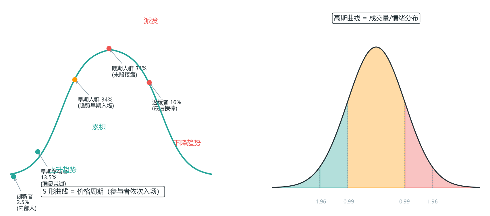
图 1-1 扩散理论：一个完整周期里，五类参与者按 2.5%→13.5%→34%→34%→16% 依次入场
电子化程度：市场的“机器浓度”：国际清算银行（BIS）的全球评估——期货 90%、股票 80%、CDS 80% 的交易电子化；公司债低（投资级 40%、高收益 25%）。美国股票流动性分散在约 88 个来源（交易所+暗池+内部化）：
这对你的意义：图表上的成交量是“冰山一角”——1.1 说的“成交量不完整”不是猜的，是结构性的：大资金越来越多地在你看不见的地方成交（呼应 1.2 外汇无真实量、1.10 期货量价真实——不同品种的“量”可信度天生不同）。
均衡价位理论：市场的目的不是制造趋势（Tefi L01A）：Tefi（太妃）课程对“市场是什么”给出了一个被反复验证的答案——市场自身的目的是“找到公平价格、促成成交，使总体效用最大化”：
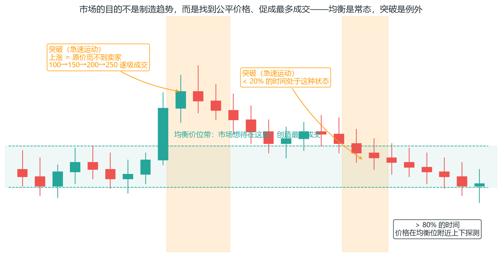
图 1-2 均衡价位理论：价格围绕均衡位上下探测，>80% 时间在均衡附近，突破只是 <20% 的少数时刻
这条理论的实操含义：把“市场应该往哪走”换成“市场现在在哪个均衡位附近、离它多远”——大多数突破都发生在价格偏离均衡位之后的回归途中（呼应 4.10 均值回归、5.4 BOS/CHoCH 的结构逻辑）。
机构无法操纵市场（Tefi L01B）：散户常幻想“主力在操控一切”——数据给出的答案是：机构无法操纵市场：
这条认知与 1.1 的“机构主导”不矛盾：机构主导的是“定价过程”（谁决定价格发现），无法操纵的是“结果”（没人能让价格违背成交量与订单流）。对散户的意义反而更好——你不需要打败机构，只需要站对位置：机构的意图会留下痕迹（第 5 章），而“均衡价位”是你理解这些痕迹的第一张地图。
不同品种的机制差异，直接决定你的策略和成本。同样的“价格行为方法”，在外汇、期货、加密上的执行完全是三件事。
| 品种 | 交易时间 | 杠杆 | 成交量真实性 | 特点 | Prop 考核适用 |
|---|---|---|---|---|---|
| 外汇 | 周一5:00~周六 5:00，近24h | 最高 (1:30~1:500) | 无统一真实量（用 tick 量近似） | 流动性最大、点差小 | 最主流（FTMO等） |
| 期货 | 各交易所，日盘+夜盘 | 中等（保证金制） | 真实 | 合约标准化、到期交割 | Topstep/Apex主流 |
| 股票/指数 CFD | 跟交易所时段 | 中等 | 部分真实 | 差价合约是衍生品 | 常见 |
| 加密货币 | 7×24无休 | 高 | 真实但分散 | 波动最大、易插针 | 少数平台 |
| 现货黄金 | 近24h | 高 | 近似 | 避险资产，与美元负相关 | 常见 |
外汇：全球最大的市场，日均交易量 7.5 万亿美元级别。它是场外市场（OTC），没有中心交易所，所以没有统一的真实成交量——你在平台看到的“成交量”是 tick 量（报价变动的次数），只是近似。这意味着依赖量价的方法（Wyckoff、订单流、Volume Profile）在外汇上只能当参考。但外汇也有它的优势：流动性最大、点差小、24 小时交易、做空自由、无涨跌停。对纯价格行为交易者，主流货币对足够干净。
期货：在交易所集中交易，有标准化的合约规格（每点价值固定）、真实的集中成交量、明确的结算规则。这就是为什么 prop 考核平台（Topstep/Apex）偏爱期货——风控清晰、量价真实。缺点是要处理到期换月（rollover）和保证金规则。对想做量价方法的交易者，期货是正统战场。
股票/指数 CFD：差价合约（CFD）是衍生品，你并不持有股票本身，只是与经纪商对赌价格。成交量部分真实（底层有交易所数据）。股票本身有 PDT 规则（美国，账户 <$25k 时 5 个交易日最多 3 次日内交易）、做空限制、财报跳空等特殊规则（详见 1.11）。
加密货币：7×24 无休、杠杆高、波动极大。没有涨跌停，流动性在极端行情下会瞬间蒸发，插针频繁。对新手是最不友好的品种，但也是价格行为最“纯粹”的教材（无财报、无央行、无开盘收盘，纯粹是流动性游戏）。
现货黄金：避险资产，与美元指数负相关，在危机事件时剧烈波动。走势相对“技术化”（受宏观驱动而非个股新闻），价格行为方法适用性好。
两个必须记住的推论：
外汇没有统一的真实成交量——因为外汇是场外市场（OTC），没有中心化交易所。你在平台上看到的“成交量”是 tick 量（报价变动次数），只是近似。这就是为什么依赖量价的方法（Wyckoff、订单流）在期货上更正统，在外汇上只能当参考。如果你重度依赖量价，选期货；如果你做纯价格行为，两者都行。
prop 考核盘绝大多数是外汇或期货模拟盘。先确认你考的是哪种，因为它们的量价可靠性、时段、合约规格都不同——第 9 章会讲怎么按品种选平台。
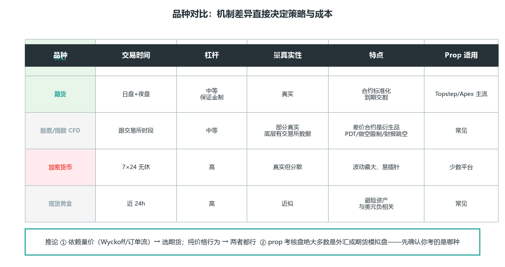
图 1-3 品种对比：外汇（流动性最大、tick 量、最主流考核）/期货（量真实、Topstep/Apex 主流）/股票 CFD（PDT 与做空限制）/加密（7×24 波动最大、最不友好）/现货黄金（避险）——选品种 = 匹配你的方法与目标
订单是你和市场交互的唯一接口。用错订单类型，等于在错误的时机以错误的价格进场。这一节把每种订单的机制和适用场景讲透。
| 订单 | 成交方式 | 滑点 | 何时用 |
|---|---|---|---|
| 市价单 | 立即按当前最优价 | 有 | 必须马上进出场 |
| 限价单 | 到指定价或更优才成交 | 无 | 挂单入场（如 pin bar 50% 位） |
| 止损单 | 触及指定价后转市价 | 有 | 止损保护、突破触发 |
| 止损限价单 | 触及后按限价成交 | 无（但可能不成交） | 怕止损滑点太大 |
| OCO | 一个成交另一个自动取消 | — | 同时挂止盈+止损 |
| OTO | 一个成交后自动挂出另一个 | — | 分批止盈（先落袋一半，另一半挂移动止盈） |
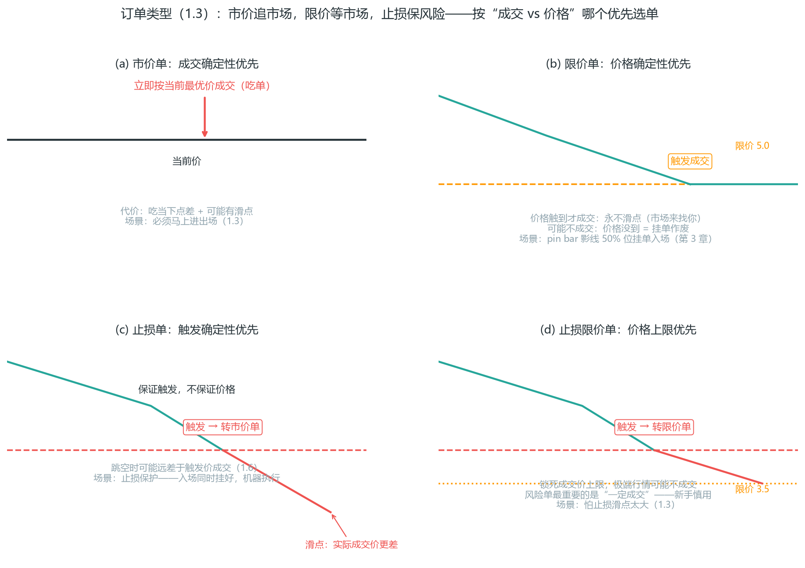
图 1-4 四种订单触发机制：市价=立即吃单；限价=价格触到才成交（永不滑点）；止损=触发后转市价（保证成交、跳空有滑点）；止损限价=触发后转限价（锁滑点上限、极端行情可能不成交）
图 1-4 把四种订单画在价格轴上，看它们的区别：
选单的核心问题只有一个：你现在更怕什么——怕成交不了，还是怕价格太差？前者选市价/止损，后者选限价/止损限价。
市价单：立即以当前最优可成交价成交。优点是确定成交，缺点是你要吃当下市场的点差和可能的滑点。用在“必须马上进场/离场”的场景——比如止损保护（当然止损应该提前挂好）、或者信号确认后不想等限价。
限价单：挂在你指定的价格（或更优价格）才成交。它的隐藏优势是永不滑点——你提前把价格定好，市场来找你，而不是你去追市场。第 3 章 pin bar“影线 50% 位挂限价单”入场法就是靠这个特性：价格回到你设定的价位自动成交，成交价精确可控。缺点是可能不成交（价格没到你的位置）。
止损单：触发价格后转为市价单成交。它和限价单的本质区别：止损单保证“触发”，不保证“价格”——跳空时你可能以远差于触发价的价格成交（滑点）。止损单是风险管理的基石：入场的同时挂好，让机器执行，不给情绪留机会。
止损限价单：触发后转为限价单，锁死成交价的上限。代价是跳空时可能完全不成交——在极端行情里，你的保护单形同虚设。适合“怕滑点太大、且能接受不成交”的场景，但新手慎用：风险单最重要的是“一定成交”。
OCO（One Cancels Other）：同时挂止盈+止损，一个成交另一个自动取消。这是仓位管理的标准工具，prop 考核平台普遍允许（但禁止对冲锁仓，见下）。
OTO（One Triggers Other）：一个订单成交后，自动挂出另一个订单。最典型的用法是分批止盈（第 4.14）：挂单 A 在目标 1 卖出半仓，成交后自动挂出挂单 B——把止损移到保本、或把剩下一半挂到目标 2 继续跑。它把“落袋一半 + 让利润奔跑”从手动两步变成自动化一步，杜绝“第一目标成交后忘了管理剩余仓位”的执行漏洞。实现方式因平台而异（部分平台用 OTO，部分用“条件单”或脚本），下单前确认你的平台支持哪种写法。
订单的 8 种用法（威科夫 2.0 的完整矩阵）：上面 5 种订单类型只是“骨架”，真正的用法是 2（买卖）× 2（主动/被动）× 2（入场/离场）的矩阵——同一张订单，站在不同交叉点，作用完全不同：
| 订单 | 挂单位置 | 角色 | 典型用途 |
|---|---|---|---|
| 市价买入 | 当前价 | 主动 | 入场；空方止损离场（推动上涨） |
| 止损买入 | 高于当前价（触发转市价） | 主动 | 突破追单；空方止损离场（推动上涨） |
| 限价买入 | 低于当前价 | 被动 | 回调挂单入场；空方止盈（提供流动性） |
| 限价止损买入 | 触发后转限价 | 混合 | 怕滑点的回调买入 |
| 市价卖出 | 当前价 | 主动 | 入场；多方止损离场（推动下跌） |
| 止损卖出 | 低于当前价（触发转市价） | 主动 | 跌破追空；多方止损离场（推动下跌） |
| 限价卖出 | 高于当前价 | 被动 | 反弹挂单做空；多方止盈（提供流动性） |
| 限价止损卖出 | 触发后转限价 | 混合 | 怕滑点的反弹卖出 |
这张表的实战含义——“止损离场”是推动价格的力量，“限价止盈”是承接的力量：多方止损（市价/止损卖出）砸盘，多方止盈（限价卖出）只是等着接；空方止损（市价/止损买入）推涨，空方止盈（限价买入）只是等着接。所以每次设止损/止盈时问自己：这一刻我是“主动推价格”还是“被动等价格”？后者才是市场愿意让你成交的原因（呼应 8.10 的主动/被动）。
两个实操要点：
限价单永不滑点。这是第 3 章 pin bar“影线 50% 位挂限价单”入场法的隐藏优势——你提前把价格定好，市场来找你，而不是你去追市场。
挂单必须设时效（GTC 长期有效 / DAY 当日有效）。不设时效的挂单是过期炸弹——三天后你忘了它，它突然成交在一个你根本没在看的价位。纪律：当天计划里的单才挂，收盘前检查所有挂单。
prop 平台红线：考核盘允许 OCO 和挂单管理，但普遍禁止“让止损保护失效”的行为——对冲锁仓（同品种同手数多空各开一单）、马丁格尔加仓（亏损后加倍）、网格（固定间隔双向挂单）。这些行为的共同点是“把单笔风险变成无限风险”，正是考核平台最不能容忍的。下单前查清平台规则，违规直接封号，前面所有努力清零。
做多（Buy）：先买入，等价格涨了再卖出——低买高卖，涨了你赚钱。这是最自然的交易方向：先持有后平仓，不需要任何特殊机制。
做空（Sell）：先借入卖出，再低价买回还。跌了你赚钱。外汇和 CFD 天然支持做空，不需要真的“借”——平台自动完成借贷过程，你只需要关注价格。
做空心态坑：人天生觉得“卖出自己没有的东西”是逆天的，做空信号出现时更容易犹豫、更容易提前平仓。这不是技术问题，是心理本能——第 7 章会专门讲。对策不是克服本能，而是把做空写进规则书：信号到了就执行，和做多一视同仁。很多新手只会做多，等于把一半的行情扔掉了。
三个计量单位，下单前必须查清平台规格：
示例：EURUSD 从 1.0850 涨到 1.0890 = 40 pips。1 标准手盈利 = 40 × $10 = $400。
再算一笔账把“点值”的坑讲清楚：如果你做的是 EURJPY（日元对），1 pip = 0.01，点值计算方式不同；如果你做的是微型手（0.01 手），点值又缩小 100 倍。这些数字不是常识，是仓位计算的输入（第 6 章）。查错一个，仓位就错一个量级——把每笔交易前要查的规格写进你的交易清单（第 8 章日志模板里有这一栏）。
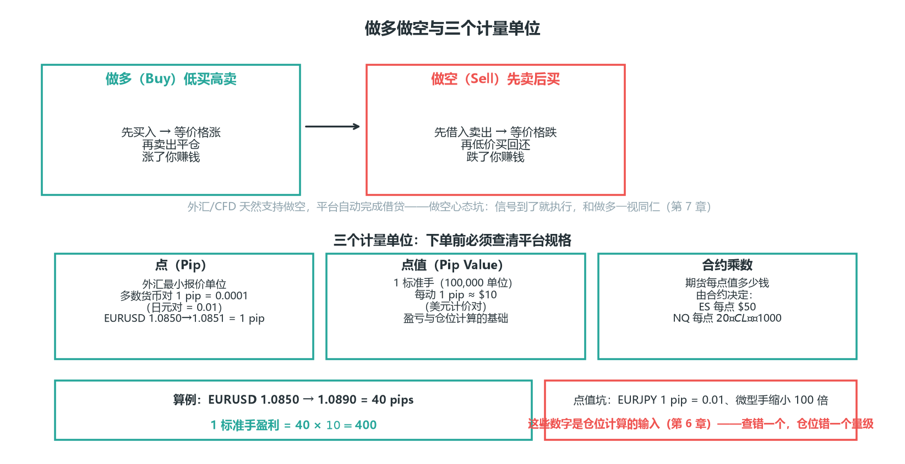
图 1-5 做多做空与合约规格：左=做多（先买后卖）vs 做空（先卖后买）机制对比；中=三个计量单位（点/Pip、点值、合约乘数）；下=算例 EURUSD 40 pips × $10 = $400 与点值坑警示
杠杆是双刃剑，而且它锋利的那面对着你。这一节把“爆仓是怎么发生的”彻底算清楚。
保证金占用 = 合约名义价值 ÷ 杠杆
示例：1 标准手 EURUSD ≈ $100,000 名义价值。1:30 杠杆下，占用保证金 ≈ $3,333。也就是说你用 $3,333 撬动了 $100,000 的头寸——价格每动 1%，你的本金就动 100% ÷ 30 ≈ 3.3%。
强平（爆仓）机制：当亏损把你的账户权益打到“维持保证金”以下，平台会强制平仓，不问你意见。注意这个机制的本质：爆仓不是“亏光了”才发生，是亏到保证金比例不达标就发生。高杠杆下，很小的反向波动就可能触发强平——这不是市场在惩罚你，是杠杆在放大你的仓位误差。
算一笔具体的账：$10,000 账户，1:100 杠杆，下 1 手 EURUSD（名义 $100,000，占保证金 $1,000）。价格反向走 100 pips（$1,000 亏损），账户权益降到 $9,000，保证金水平 = 9,000 / 1,000 = 900%，还安全。但如果价格反向走 500 pips，权益 $5,000，保证金水平 500%——部分平台在保证金水平跌破维持线（通常为初始保证金的一半）时强平：1 手的情形要反向约 9%（约 950 pips）才爆仓；可如果你按“感觉”把仓位下到 10 手（1:100 满仓，名义 $1,000,000），反向约 50 pips（≈0.5%）时保证金水平就触及维持线被强平——而你原本的止损可能就设在 0.5%（50 pips）——止损还没触发（或刚触发就被强平），爆仓先来了。
杠杆的真相——这是本章最重要的一句话：
杠杆不改变你的胜率，它放大的是你的仓位误差。
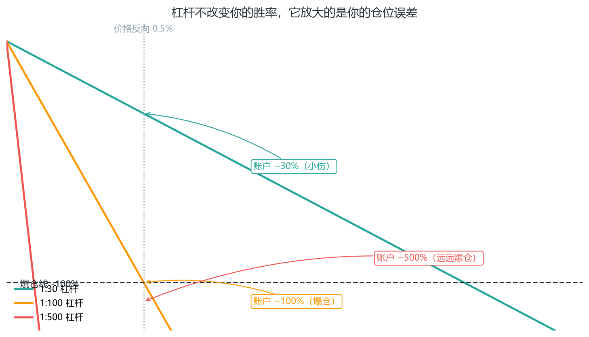
图 1-6 杠杆放大的是仓位误差：同样的判断错误，低杠杆只是小伤，高杠杆直接爆仓
该下 0.5 手的信号，你手一抖下了 5 手——杠杆没让你判断变差，但让同样的判断错误从“亏 0.5%”变成“亏 5%”，直接逼近爆仓线。杠杆越高，你允许的犯错空间越小。第 6 章会教你怎么用仓位公式“反推”需要的杠杆——不是平台给你多少你用多少。
上面的算例是抽象的，把它放到一根真实 K 线上看——同样的追高错误，实际杠杆只决定你死在哪一步：
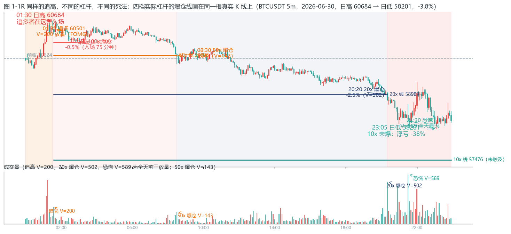
图 1-1R 真实数据：同样的追高，不同的杠杆，不同的死法——2026-06-30 日高 60684（01:30）后 01:35 追多入场 60501（V=200，FOMO）；此后阴跌 -3.8% 到 23:05 日低 58201，四档实际杠杆的爆仓线（维持线口径：爆仓距离 = 0.5 / 实际杠杆）：100x 线 60199（-0.5%）→ 02:50 触及爆仓（入场后 75 分钟）；50x 线 59896（-1.0%）→ 08:30 触及爆仓（V=143）；20x 线 58989（-2.5%）→ 20:20 放量触及爆仓（V=502）；10x 线 57476（-5.0%）→ 全天未触及（日低 -3.8%），但账户浮亏 -38%——同样的判断错误，杠杆只决定你死在哪一步（数据源：Binance BTCUSDT 5m K 线）
读这张图看三件事：
① 杠杆不改变你的判断，改变的是爆仓距离。 四个杠杆的持仓方向、入场点、止损想法完全一样——都在 01:35 追多 60501，都觉得"会继续涨"。区别只在爆仓线离入场多远：100x 的线在 60199（-0.5%），02:50 一根普通阴线就击穿；50x 在 59896（-1.0%），08:30 击穿；20x 在 58989（-2.5%），20:20 放量击穿；10x 在 57476（-5.0%），全天没碰到。你"觉得"这单会涨的判断，四种杠杆一模一样——实际杠杆只是决定了你在 -0.5% 还是 -5% 的地方被强制出局。
② 爆仓先于止损——这是高杠杆最阴险的地方。 假设你是个守纪律的人，入场时挂了止损。20x 的爆仓线 58989 在 20:20 被击穿（V=502 放量）；如果你把止损设在日低 58201 下方（-3.8%，给足空间"别被扫"），爆仓比止损触发早了约 2 小时——你根本没机会执行那个止损，平台先替你平了。这正是 1.5 正文算例说的"止损还没触发（或刚触发就被强平），爆仓先来了"。
③ "没爆"不等于"没伤"。 10x 是四个杠杆里唯一活到收盘的，但日低 -3.8% × 10x = -38% 账户权益——一次追高错误就亏掉近四成账户（呼应 6.3 连亏与回撤：-38% 需要 +61% 才能回本）。真实的安全不是"选个不爆的杠杆"，而是用第 6 章仓位公式反推出这个错误发生时你能承受多少亏损，再反推需要的杠杆——平台给你 1:500 不是让你用的，是让你更容易爆的。
考核期建议：用 1:30 以下的实际杠杆，别贪平台给的 1:500。平台给你高杠杆是为了让你更容易爆（你爆了对它没损失，考核费它已经收了）。需要多少杠杆，用第 6 章的仓位公式反推，多一分都不要。
理解了订单和杠杆，再看价格本身是怎么“长”出来的。
买卖盘与点差：任何时刻市场有两个价格——
点差是你每次进出的固定成本，由做市商设定。你买入用 Ask、卖出用 Bid，一买一卖之间天然亏一个点差。这就是为什么高频进出（剥头皮）对点差极其敏感——每次进出都在交“过路费”，剥头皮一天进出几十次，点差成本直接吃掉利润。
点差宽窄由流动性决定：伦敦时段流动性好，点差窄；亚盘流动性薄，点差宽；数据公布瞬间流动性枯竭，点差能瞬间放大数倍。一个实用的推论：点差宽的时段，你的入场成本高——同样的信号，在伦敦开盘做和在亚盘尾盘做，成本完全不同。
滑点：你下的止损单，在价格跳空时可能以更差的价格成交。这不是平台坑你，是那个价位没人接单。比如价格瞬间从 100.00 跳到 99.80，你挂在 99.95 的止损单只能在 99.80 成交——你多亏了 15 个点。滑点在跳空（周末开盘、数据瞬间）和低流动性时段高发。
一句话记牢：市价单和止损单会滑点，限价单不会。
插针（Spike）：流动性瞬间枯竭时，价格猛地冲出一个极端影线又立刻回来。加密和亚盘数据时段高发。插针是第 5 章“sweep”最容易被误认的地方——不是每次插针都是机构扫止损，有时只是没人接单。怎么区分？看三个维度：插针是否发生在关键位（结构位上的插针更像 sweep）、插针后是否快速收回、收回时是否放量。第 5 章会给完整的识别清单。
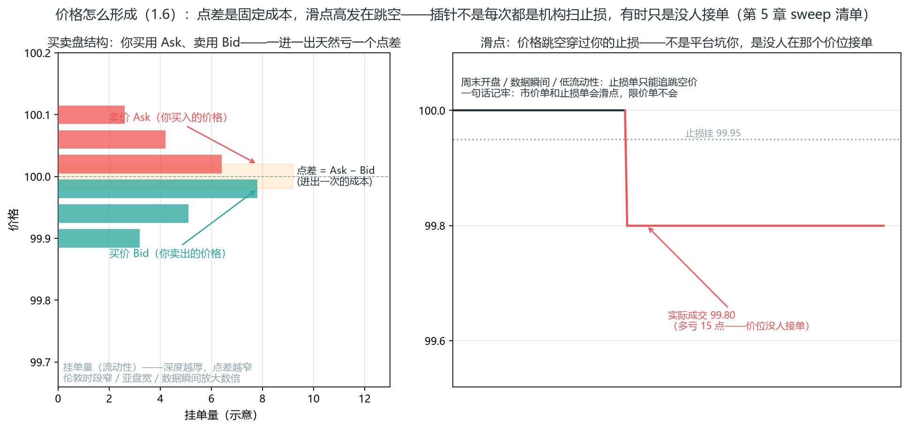
图 1-7 价格怎么形成：左=买卖盘结构（买用 Ask、卖用 Bid，点差是进出一次的固定成本，流动性越厚点差越窄）；右=滑点——价格跳空穿过止损，挂 99.95 的止损单只能在 99.80 成交，多亏 15 点
左图是你每笔交易的真实处境：两个价格同时存在，你买入永远成交在更高的 Ask、卖出永远成交在更低的 Bid，一进一出之间点差已经亏掉。这就是为什么 7.8 的 Brooks 清单里“剥头皮”类交易要额外警惕——进出次数越多，点差成本吃掉的利润越多。右图把“滑点只发生在跳空”画成了具体数字：止损单是跟着价格走的，价格跳空时你只能在新的价位成交。结论一句话：成本意识要进入每笔交易的决策——选流动性好的时段、用限价单锁成本（1.6）、远离数据瞬间。
外汇 24 小时可交易，但不是每个时段都值得交易。波动和流动性随时段变化巨大——你的信号质量，很大程度取决于你在哪个时段找信号。
| 时段 | 北京时间 | 特性 |
|---|---|---|
| 悉尼 | 6:00-14:00 | 流动性最薄，澳元/纽元活跃 |
| 东京 | 8:00-14:30 | 日元活跃；亚盘整体波动小 |
| 伦敦 | 15:00-24:00 | 全球流动性最大，趋势启动高发 |
| 纽约 | 20:00-次日4:00 | 与伦敦重叠时段是全天最活跃 |
伦敦-纽约重叠（北京 20:00-24:00）是黄金窗口：流动性最好、点差最小、大行情高发。第 5 章 SMC 的 Kill Zone 指的就是这个。两个全球最大的金融中心同时开市，资金量最大，趋势最容易启动，信号也最可靠。
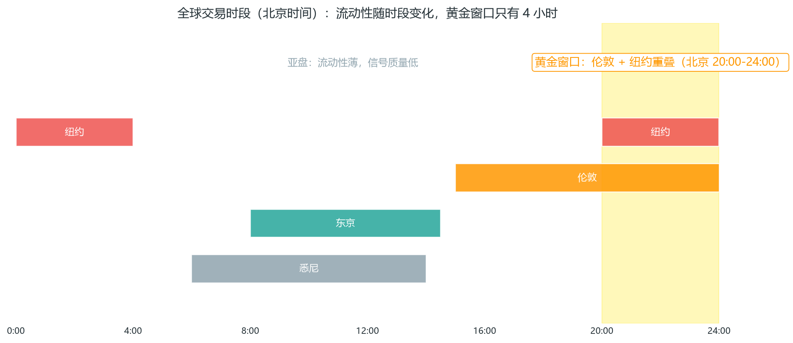
图 1-8 全球交易时段（北京时间）：悉尼/东京/伦敦/纽约，20:00-24:00 为黄金窗口
冬令时（11 月-次年 3 月）所有时间 +1 小时。美国夏令时（3 月-11 月）期间用上表时间；冬令时伦敦开盘推迟到北京 16:00，纽约开盘到北京 22:30。做外汇/期货的人必须每年调两次这个“时差表”，写进你的交易笔记。
周末与跳空：外汇周末休市。周五尾盘不平仓的隔周单，要承担周一开盘跳空的风险——价格可能直接跳过你的止损。你的止损单挂在 1.1000，周一开盘价格直接 1.0950，你的成交价就是 1.0950，多亏 50 点。多数 prop 平台禁止周末持仓，查清规则（第 9 章），周五收盘前处理干净。
一个实用原则：亚盘的信号质量普遍低于欧美盘。流动性薄的时候，假信号多、点差宽、滑点大。新手宁可只做伦敦和纽约时段——少做一半的时间，但做的那一半质量高得多。这也是第 8 章“过滤条件”的一种：时段本身就是过滤器。
但上面的时段表是“外汇的”。品种不同，时段分布完全不同——用真实数据验证你的品种，别照搬外汇时段表。加密市场 7×24 小时交易，看起来“没有时段”，实际上活跃度高度集中：
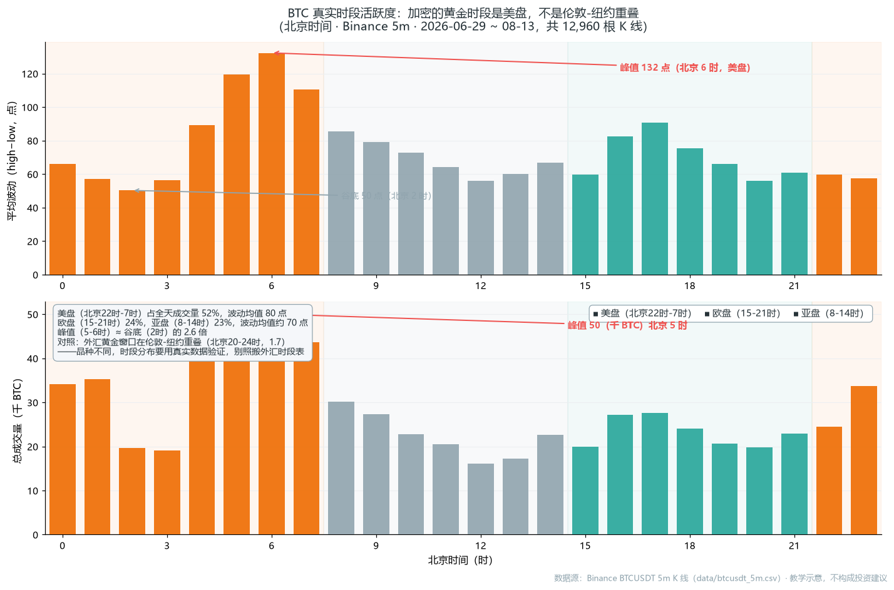
图 1-2R 真实数据：BTC 时段活跃度——上=北京时间各小时平均波动（点），下=各小时总成交量（千 BTC）；美盘（北京 22 时-7 时）占全天成交量 52%、波动峰值在北京 6 时（成交量峰值在北京 5 时）——加密的黄金时段与外汇（伦敦-纽约重叠，北京 20-24 时）不重合（Binance 5 分钟，2026-06-29 ~ 08-13）
用 BTC 真实数据看时段分布，两个反直觉的结论：加密的活跃高峰在美盘（北京 22 时-次日 7 时，占全天成交量 52%），而不是外汇意义上的“黄金窗口”——因为加密的对手盘来自美国时区的科技与量化资金，美股收盘后的 22 时-次日 7 时才是主战场；波动峰值在北京 6 时（≈谷底 2 时的 2.6 倍），亚盘反而有 8 时的一个小高峰。含义：做加密不要拿外汇时段表套，用你自己的历史数据按小时统计“波动 + 成交量”两个维度，画一张自己的时段分布——这就是第 8 章“过滤条件”的量化版。
技术分析管“什么时候、什么价位”，但数据事件能瞬间击穿任何技术位。你画得再漂亮的支撑，一个超预期的非农数据就能把它打穿。这一节不是教你分析基本面，是教你别被它打穿。
| 数据/事件 | 影响对象 | 时间规律 |
|---|---|---|
| FOMC 利率决议 | 美元、黄金、美股（波及全球） | 每年 8 次、固定日历（美联储，约每 6 周） |
| 非农就业 | 美元、黄金、股指 | 每月第一个周五，北京 20:30 |
| CPI 通胀 | 各国货币、债券 | 月度 |
| GDP | 各国货币、债券 | 季度初值与修正 |
| 期权到期日 | 期权及标的（三巫日/四巫日波动放大） | 每月第三个周五（美股）；期货/加密另有月度与季度到期 |
| 风险情绪（战争/危机） | 避险资产：日元、黄金、美债 | 突发 |
你不需要会分析基本面——那是宏观交易员的事。你只需要知道有炸弹：知道它什么时候引爆，以及引爆前别站在坑里。
期权到期日例外：美股每月第三个周五（triple/quadruple witching）的波动不是信息驱动的，而是到期平仓/展期驱动的——那天成交量放大、价格行为容易失真，信号质量同样下降，纪律与数据日相同。
为什么数据能击穿技术位：技术分析假设“市场平稳运行”，即参与者按技术逻辑行动。但数据公布瞬间，整个市场的注意力从技术面瞬间切换到基本面，大量资金在几秒内涌向同一方向——技术位在那个时刻没有任何承接力。数据事件是技术分析的例外，把例外当常态防，才不会被黑天鹅带走。这不是悲观，是对市场机制的正确预期。
新闻已经在价格里（Al Brooks 的补充）：你看到新闻时，机构通常已经知道了。大多数机构交易者在新闻发布前就了解它——它们已经在按“明天的新闻”交易了。所以：
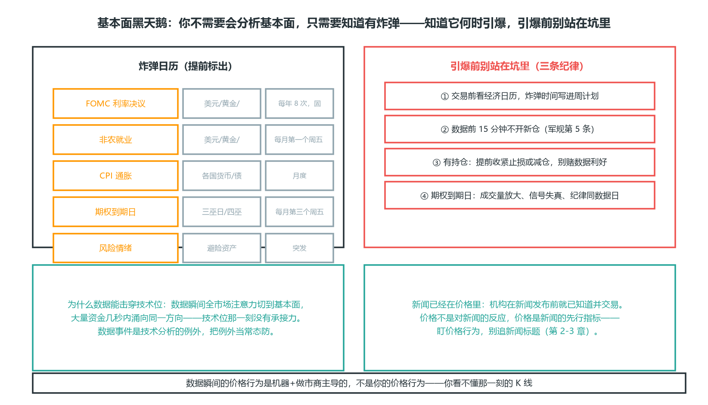
图 1-9 基本面黑天鹅：左=炸弹日历（FOMC/非农/CPI/期权到期/风险情绪提前标出）；右=引爆前三条纪律（看日历/数据前 15 分钟不开仓/有持仓先收紧止损）；下=为什么数据能击穿技术位 + 价格是新闻的先行指标
前面 1.2 给了品种概览，本节深入每个品种的“脾气”。同一套价格行为方法，放在不同品种上，执行细节完全不同：
选错品种 = 用对的方法在错的战场打仗。一个做趋势回调系统（第 4 章）的交易者，在加密上做日内止损会频繁被打——不是系统错了，是品种脾气和系统的周期、波动不匹配。选品种是系统设计的一部分（第 4 章 Van Tharp 会讲“合身”），不是随便挑一个。
为什么 prop 公司偏爱期货：集中交易所、量价真实、合约标准、风控清晰。Topstep/Apex 都是期货 prop。这一节把期货的机制讲透——如果你考期货 prop，本节是必修。
核心机制：
常用品种：
| 品种 | 代码 | 每点价值 | 特点 |
|---|---|---|---|
| 标普500 E-mini | ES | $50 | 流动性最好，日内首选 |
| 纳指 E-mini | NQ | $20 | 波动比 ES 大 |
| 道指 | YM | $5 | 波动较小 |
| 原油 | CL | $1000 | 波动大，受基本面驱动 |
| 黄金 | GC | $100 | 避险，与美元负相关 |
对价格行为的适配：ES/NQ 是日内价格行为的最佳标的——流动性好、结构清晰、量价真实。南桥/Thomas Wade 都做 ES（呼应附录的大 V 参考）。注意品种和波动的匹配：NQ 波动约为 ES 的两倍，同样的止损距离，NQ 上被扫的概率高得多——新手从 ES 起步更合理。
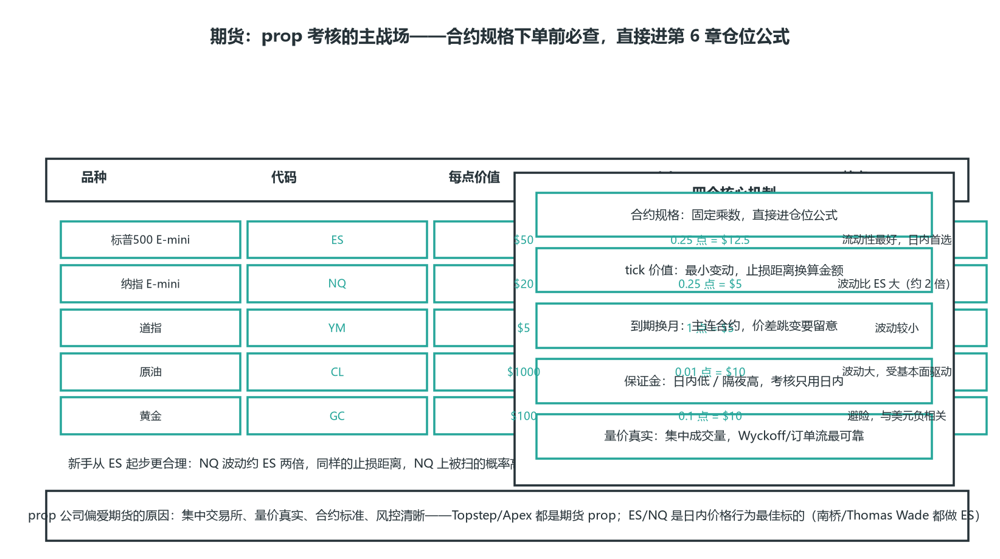
图 1-10 期货合约规格速查：ES/NQ/YM/CL/GC 每点价值与 tick + 四个核心机制（合约规格/tick 价值/到期换月/保证金）+ 新手从 ES 起步
核心机制：
对价格行为的适配：指数 ETF（SPY/QQQ）适合价格行为；个股要小心财报跳空和消息驱动。做个股务必把财报日历加进你的风险检查（第 8 章日历）。
（本章 1.2 已概览，这里是速查）
新手选择：EURUSD 是公认最适合入门的货币对——点差最小、流动性最好、结构最清晰、和美股/黄金的相关性低（独立性强）。把它当你的“单一品种深耕”对象（1.15）。
核心机制：
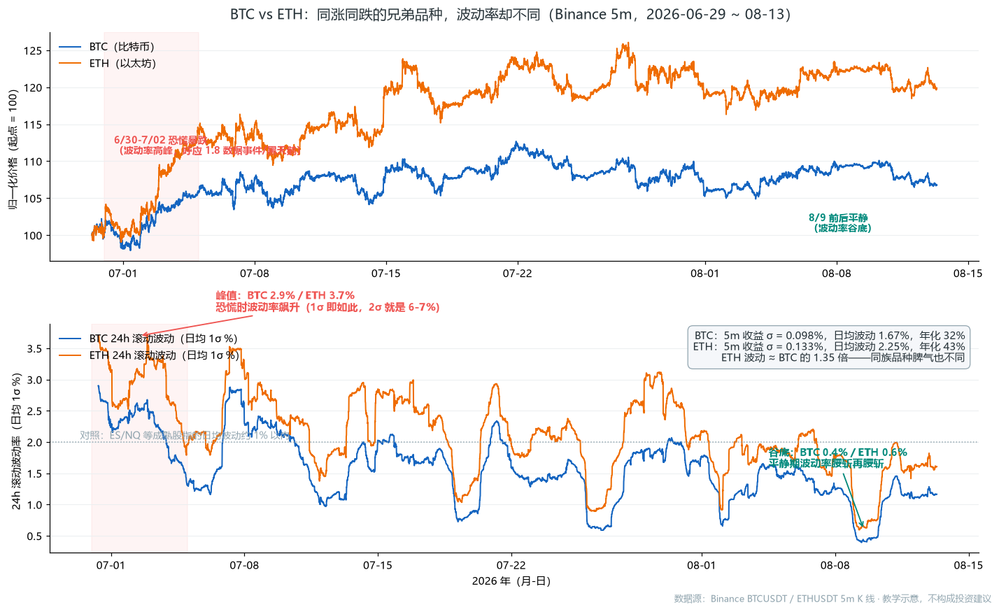
图 1-3R 真实数据：BTC vs ETH 波动率对比——上=归一化价格同涨同跌；下=24h 滚动波动率（日均 1σ %），恐慌时飙升、平静时压缩（BTC/ETH 5 分钟，2026-06-29 ~ 08-13）
上下对着读：上图画的是“同步”——BTC 和 ETH 归一化后几乎重合，6 月底到 8 月中旬同涨同跌（呼应 1.14 相关性：同一个加密市场，驱动因素相同）；下图画的是“不同”——ETH 的波动率全程高于 BTC（日均 2.25% vs 1.67%，约为 1.35 倍），而且两者一起大幅波动：6/30-7/02 恐慌时 BTC 冲到 2.9%、ETH 冲到 3.7%（1σ 就这么高，2σ 就是 6-7%——这就是上文“日内 5-10% 常见”的数据依据），8/9 平静时又一起压缩到 0.4%/0.6%（腰斩再腰斩）。对照成熟股指（日均波动通常在 1% 以内），加密的波动量级高一个数量级——同样的信号，在加密上的止损距离可能是外汇的 5 倍，仓位要小到很多人过不了心理关（第 6 章公式会自动算出来，但“仓位这么小还做它干嘛”的心理关得自己过）。
“日内 5-10% 常见”不是抽象数字，下面这张图就是它的一次真实演出——下跌趋势里的诱多尖峰：
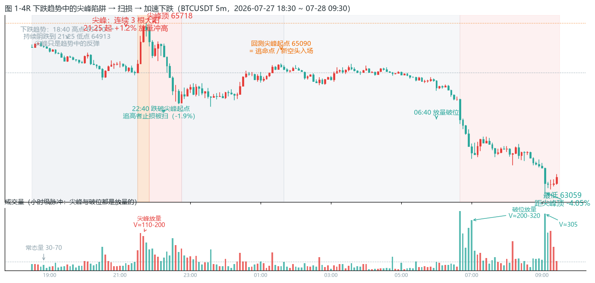
图 1-4R 真实数据：下跌趋势中的尖峰陷阱 → 扫损 → 加速下跌——18:40 高点 65410 持续阴跌到 21:25 低点 64913；21:30-21:45 连续 3 根放量大阳尖峰冲到 65718（+1.2%，追多者入场）；21:50 第一根反向大阴拒绝；22:40 跌破尖峰起点扫损（-1.9%）；01:35 回测尖峰起点=逃命点；06:40 放量破位；09:05 最低 63059，距尖峰顶 -4.05%（BTCUSDT 5m，2026-07-27 18:30 ~ 07-28 09:30）
这张图要读出三件事：
怎么把这张图变成规则：下跌趋势中出现放量大阳尖峰 → 不追多，等卖方信号（第一根反向 K 线）或等回测；尖峰后第一根反向 K 线 = 追高者离场信号；跌破尖峰起点后任何反弹回该位置 = 逃命点/新空头入场点，不是反转点。
对价格行为的适配：加密结构也走价格行为，但高波动+插针让止损和仓位管理更难。新手不建议从加密开始——它不是“练手”品种，是“加难度”品种。
相关性（correlation）：不同品种可能同涨同跌。这不是巧合，是它们背后有共同的驱动因素：
风险叠加陷阱：同时做多 EURUSD + GBPUSD，以为是两笔分散的交易，实际是同一个方向押了两注——相关性让你的真实风险翻倍。你以为是“分散”，其实是“重仓”。这是组合管理最常见的认知错误。
对策：
把 1.14 的三块内容（相关性速查 → 风险叠加陷阱 → 三条对策）压成一张速查图：
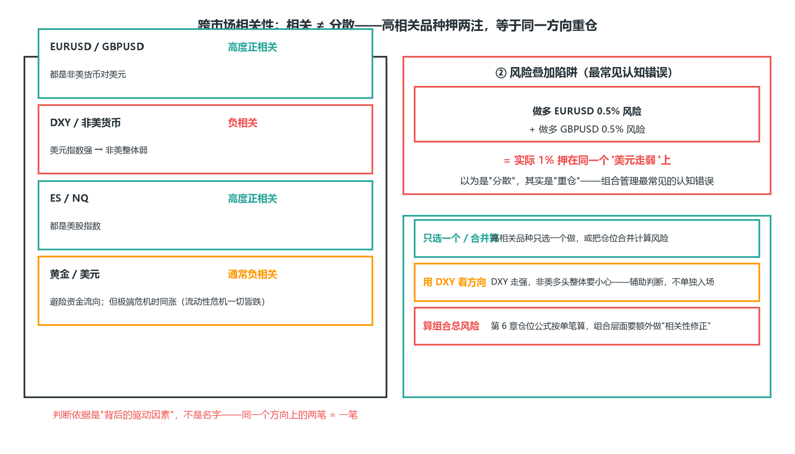
图 1-11 跨市场相关性与风险叠加：左=相关性速查（EURUSD/GBPUSD 高度正相关、DXY/非美货币负相关、ES/NQ 高度正相关、黄金/美元通常负相关但危机时同涨）；右上=风险叠加陷阱（EURUSD 0.5% + GBPUSD 0.5% = 实际 1% 押在“美元走弱”）；右下=三条对策（高相关只选一个或合并算、用 DXY 看方向、组合算总风险）
上面是合成速查，下面用真实数据把"相关 ≠ 分散"实证一遍——BTC 和 ETH 同一个 5 分钟数据（2026-06-29 ~ 08-13，共 12959 根），按 BTC 5 分钟收益的波动大小分成四档：
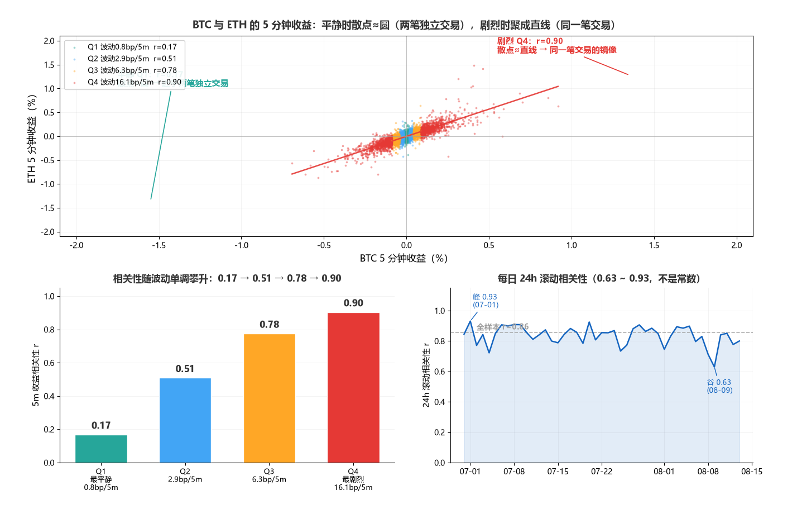
图 1-5R 真实数据：BTC 与 ETH 的相关性不是常数——上=5 分钟收益散点按波动分档着色（青=最平静 0.82 基点/5m，红=最剧烈 16.1 基点/5m）：平静时散点几乎是个圆（r=0.17，两笔独立交易），剧烈时聚成一条直线（r=0.90，同一笔交易的镜像）；下左=各波动档的相关性柱（0.17→0.51→0.78→0.90 单调攀升），下右=每日 24h 滚动相关性（0.63~0.93 波动，全样本 r=0.86）——相关性是波动的函数，不是常数（数据源：Binance BTCUSDT/ETHUSDT 5m K 线）
这张图要读出三件事：
选择框架（按优先级）：
一条实用建议：新手先聚焦单一品种（如 ES 或 EURUSD）。单品种让你摸透它的“脾气”——什么时段活跃、波动多大、结构多清晰、假信号长什么样。大 V 们（附录）都是单品种深耕，这不是偶然：一个品种的 1000 小时，比十个品种各 100 小时有效得多。第 8 章的验证（100+ 笔回测）也必须基于单一品种——不同品种混在一起统计，期望值就算不清了。
本书主线是外汇/期货 + prop 考核，但作为中国读者，你的资产天然和 A 股纠缠在一起——工资、房贷、指数走势、周围人聊的股票。这一节把 A 股讲成“另一个品种”：它有自己的交易规则、成本结构和脾气，和 ES、EURUSD 一样需要先摸清再谈技术。
A 股交易规则速查（与期货/外汇对照）：
| 规则 | A 股 | 美股 | 期货（ES） |
|---|---|---|---|
| 当日回转 | T+1（当天买次日才能卖） | T+0 | T+0 |
| 涨跌停 | 主板 ±10%，创业板/科创板 ±20%，ST ±5% | 无 | 无 |
| 交易时段 | 9:30-11:30、13:00-15:00（北京） | 9:30-16:00（美东） | 日盘+夜盘 |
| 集合竞价 | 9:15-9:25 开盘、14:57-15:00 收盘 | 盘前盘后 | 开盘竞价 |
| 最小单位 | 100 股（1 手） | 1 股 | 1 手（合约规格固定） |
| 做空 | 融券受限、门槛高 | 借券+uptick 限制 | 自由 |
| 杠杆 | 融资最多约 1:1 | 日内 4:1 | 保证金制，灵活 |
T+1 是 A 股和本书体系的第一个冲突点：本书第 7 章军规说“入场即挂止损”——但 A 股当天买的仓位当天不能卖，止损单最早明天才生效。这意味着：
成本结构——高频交易的隐形杀手：
| 成本 | 费率 | 说明 |
|---|---|---|
| 印花税 | 卖出单边 0.05% | 2023 年 8 月起减半，仍是主要成本 |
| 佣金 | 约万 2.5（双边） | 可和券商谈，网上开户一般更低 |
| 过户费 | 约 0.001%（双边） | 金额小，但买卖都有 |
算一笔账：10 万元满仓进出一次，印花税 50 元 + 佣金 50 元 + 过户费 2 元 ≈ 102 元。看起来不多，但如果一年高频进出 100 次（每次 10 万），成本就是 1 万元——年化 10% 的成本。A 股的结构天然惩罚高频：T+1 让你无法当日纠错，成本让你无法靠微利堆利润。这和外汇/期货的“点差+佣金”逻辑不同，它更接近“波段税”。
A 股市场特性：
对价格行为的适配结论：A 股走的是同一套价格行为（结构、假突破、区间边界都成立），但三个差异必须记住：周期放大到日线以上、T+1 让止损推迟一天生效、涨跌停是流动性断层不是信号。把它当成“波段训练场”和“配置战场”，而不是本书日内体系的直接复制。
A 股特有打法（进阶，都是本书体系在 A 股规则下的变体）：
一句话：A 股不是另一套市场，是同一套价格行为 + 三条特殊规则（T+1/涨跌停/政策驱动）的约束解——把本书的方法乘上这三条规则，就是 A 股打法。
把 1.16 的三块内容（规则速查 → 波段税成本 → 三条差异三条应对）压成一张速查图：
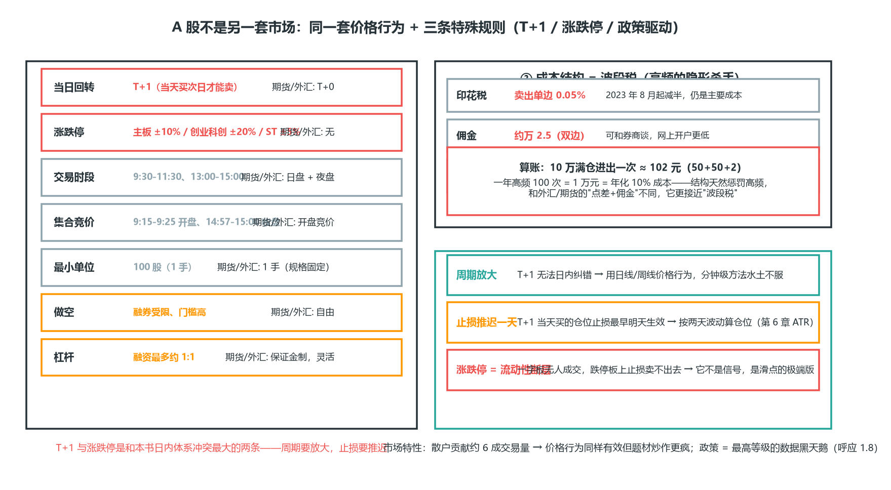
图 1-12 A 股规则与脾气：左=规则速查（T+1/涨跌停/时段/集合竞价/最小单位/做空/杠杆，与期货外汇对照）；右上=成本结构波段税（10 万进出一次约 102 元，一年 100 次=年化 10% 成本）；右下=三条差异三条应对（周期放大日线/T+1 止损推迟一天/涨跌停是流动性断层不是信号）
为什么一本交易手册要讲基金：因为本书所有技术都有一个前提——你有一笔“输得起”的钱（第 6 章仓位公式、第 8 章验证标准，都是建立在“这笔钱只是资产的一部分”之上的）。如果全部身家都在交易账户里，第 7 章的概率思维就是空话：你不可能在“这笔亏损会毁掉生活”的恐惧下一致执行。
所以把财富分成两条腿：
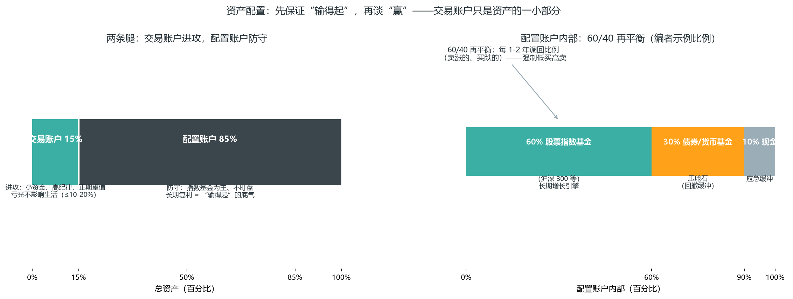
图 1-13 资产配置两条腿：交易账户（≤10-20%）进攻 + 配置账户防守；配置账户内部 60/40 再平衡（编者示例比例）
（左）总资产的两条腿：交易账户只占 15%（≤10-20%）——它的职责是验证能力、积累经验，亏光了不影响生活；配置账户占 85%——它负责长期复利，是“输得起”的底气。（右）配置账户内部示例：60% 股票指数基金（增长引擎）+ 30% 债券/货币基金（压舱石）+ 10% 现金（应急）；每 1-2 年做一次再平衡（卖涨的、买跌的），把比例调回 60/40——再平衡本身就是一个“强制低买高卖”的纪律。
基金家族速查：
| 类别 | 是什么 | 适合谁 |
|---|---|---|
| 公募基金 | 公开募集，1 元起投，监管严格 | 所有人 |
| 私募基金 | 合格投资者（100 万起），运作灵活 | 高净值+能承受不透明 |
| 主动基金 | 基金经理选股，收高管理费（1.5% 左右） | 相信经理的 alpha |
| 被动基金（指数基金） | 跟踪指数，费率低（0.15%-0.5%） | 大多数人 |
| ETF | 场内交易（像股票一样买卖），费率最低、跟踪误差小 | 会开证券账户的人 |
| LOF | 场内场外都能买 | 需要灵活性时 |
主动 vs 被动：数据站在被动一边。长期统计（中美都是）多数主动基金跑不赢对应指数——不是经理笨，是 1.5% 的管理费 + 交易成本每年都在侵蚀复利，而指数是“零成本基准”。你不需要相信任何经理的“业绩承诺”，只需要接受一个数学事实：20 年维度，1.5% 年费的复利杀伤 ≈ 35% 的本金差异。被动指数基金（如沪深 300 ETF）是配置账户的默认选择。
选基金的四个指标（主动、被动通用）：
定投：纪律优于择时。定投的本质不是“预测低点”，而是用固定节奏买入把成本摊平——它解决的是“什么时候买”的焦虑，代价是放弃“抄底”的幻想。定投适合波动大的指数（沪深 300/标普 500），不适合债券（波动太小，摊平无意义）。记住：定投是行为约束，不是收益承诺——它保证你“一直在场”，不保证“买在底部”（呼应第 8 章：不预测，只执行）。
资产配置入门：三句话
边界：多少钱拿去交易。一个常用参考：交易账户 ≤ 总资产的 10-20%，且必须是闲钱（亏光不影响生活）。为什么？
这一节的定位：本书其余部分教你“怎么把交易账户做精”，这一节教你“怎么让大部分身家稳着增值”。两条腿走路，第 7 章的概率思维才有着落——交易是为了活得更好，不是为了把生活押上桌（呼应前言立场 2：活得久比赚得快重要）。
答案：① 外汇是 OTC 场外市场、没有中心交易所（1.2）——依赖量价的方法（Wyckoff/订单流）在期货上更正统，外汇上只能参考；② 杠杆不改变胜率，放大的是仓位误差（1.5）——同样的判断错误，低杠杆是小伤、高杠杆直接爆仓；③ T+1（1.16）——当天买的仓位当天不能卖，止损最早次日生效，所以信号周期要放大到日线以上、仓位按两天的波动来算；④ 买入成交在 Ask、卖出成交在 Bid（图 1-7）——一进一出天然亏一个点差，高频进出（剥头皮）对点差最敏感（1.6）；止损单会滑点（跳空时以更差价格成交），限价单永不滑点（1.3）。
① 市场结构——谁在对面
② 品种选择——先选战场
③ 订单与成本
④ 杠杆、时段与数据
⑤ 相关性
⑥ A 股与资产配置
下一章进入技术分析本身：怎么从 K 线里读出多空力量。本章的每个机制——流动性、点差、时段——都会在那里再次出现，作为信号成立的底层条件。
阅读提示：本章是全书的语言课——K 线、信号棒、趋势、支撑阻力、交易区间，之后每一章的策略都是用本章的词汇写成的。建议配合图 2-1~2-14 逐图读，读到能指着一根 K 线说出“谁在赢”为止；读图时想不起某个概念，随时回本章查。
打开任何一张 K 线图，你看到的是一排红红绿绿的柱子。大多数人看到的是“涨了”“跌了”。但交易员看到的是另一样东西——一场正在进行的、多空双方的拔河。每一根 K 线，就是这场拔河里的一个回合；整张图，就是无数个回合连起来的战况。
这一章教你读懂这场拔河。不靠任何指标，只靠 K 线本身。学完之后，你看图的眼光会不一样：你不再看到“涨跌”，你开始看到谁在赢、赢得多艰难、以及哪里埋着别人的止损。
一个贯穿全章的观点先放在这里：K 线记录的不是价格，是人。每一次冲高回落，背后都是有人在追、有人在跑、有人被套、有人解套。读懂 K 线，本质是读懂这些人的处境。
一根 K 线由四个价格构成：开盘、收盘、最高、最低。但别把它当四个数字，把它当一个回合的战报。
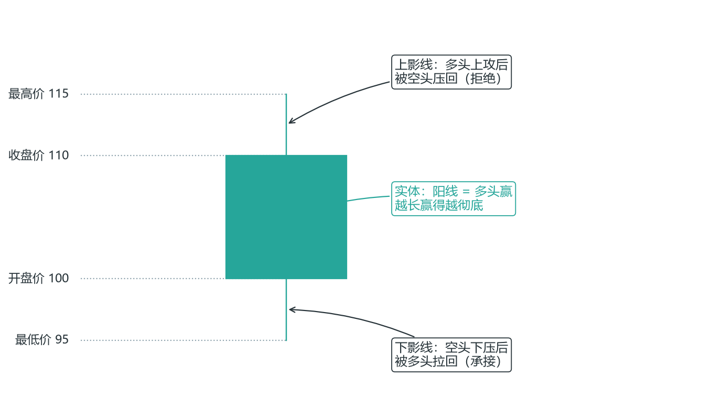
图 2-1 一根 K 线的结构：实体与影线
实体（开盘到收盘那段）：这个回合谁赢了，赢了多少。阳线=多头赢，阴线=空头赢；实体越长，赢得越彻底。
影线：这个回合输的一方曾经反抗到哪，又被打了回来。长上影=多头曾冲上去、被空头砸回来；长下影=空头曾砸下去、被多头拉回来。
这是本章第一个、也是最重要的洞察：
实体告诉你谁赢了，影线告诉你赢得有多艰难。
一根大阳线、几乎没有影线——多头赢得毫无悬念，这是力量。一根阳线、但拖着长长的上影线——多头虽然收在高处，但上方被狠狠打压过，这是隐患。同样是“涨”，含义完全不同。新手只看涨跌，老手看实体和影线的比例。
还有一个容易忽略的细节：收盘在哪一端，比涨跌本身更重要。一根 K 线收在最高点附近，说明多头把优势守到了最后一秒；收在最低点附近，说明空头全程压制。收盘价是多空“最后的表态”——它反映的是这一回合结束时，谁还站着。
把这张“战报”的读法练熟，它是后面所有形态分析的基础：锤子线（长下影）、吞没（实体关系）、内包线（范围关系）——全都建立在“实体和影线各代表什么”之上。
信号棒、入场棒、确认棒：一次入场的三段式（Al Brooks 体系的微观字典）：
一次入场 = 信号棒发出邀请 → 入场棒突破触发 → 确认棒验证方向。三步缺一不可，这是后面第 3 章所有入场信号的最小骨架。
趋势棒与反转棒：实体大于近期平均 1.5 倍、收盘距极点不足实体 20%、几乎无影线的 K 线叫趋势棒（Trend Bar）——参与者一边倒，是动量的基本单位，连续 2-3 根趋势棒构成更强的趋势信号，连续 4 根以上可能形成微型通道。与当前趋势方向相反、实体同样大的叫反转棒（Reversal Bar）——它出现在趋势末端或关键位（支撑/阻力、趋势线、前高/低）时最可靠，出现在趋势中段时可能只是普通回调。
组合形态字典（常见 K 线组合，全部要放在位置里读）：
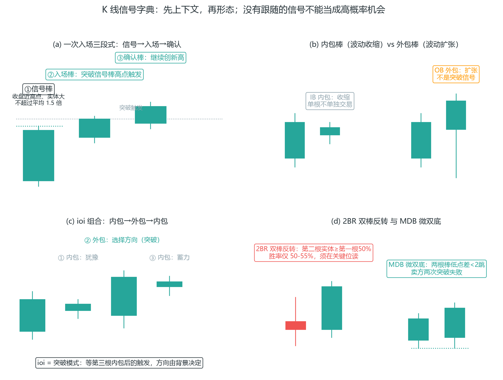
图 2-2 K 线信号字典：信号棒→入场棒→确认棒，及内包/外包/ioi/2BR 组合
字典的用法口诀：先上下文，再形态；没有跟随的信号，不能当成高概率机会。孤立信号、信号棒过长（超均值 2 倍）、十字星信号、假外包——是四个最常见的误读陷阱。
现在给你第二个洞察，它比第一个更值钱：
一根 K 线的意义，不由它自己决定，由它出现的位置决定。
想象一根长下影的锤子线。它出现在哪里？
同一根 K 线，一个位置是机会，另一个位置是陷阱。这就是为什么本书反复强调一句话：信号必须放在位置里读。后面第 3 章的所有入场信号，都建立在这条之上——先看位置，再看形态。形态只是“最后一道确认”，位置才是“这一单值不值得做”。
实操含义：每次看到一根“漂亮的 K 线”，别急着兴奋，先问三个问题——它在哪？背景是什么？这里有没有聚集着人的成本和止损？回答完这三个问题，这根 K 线的价值才浮出来。第 3 章的判定框架（背景 × 位置 × 形态）就是这三个问题的公式化。
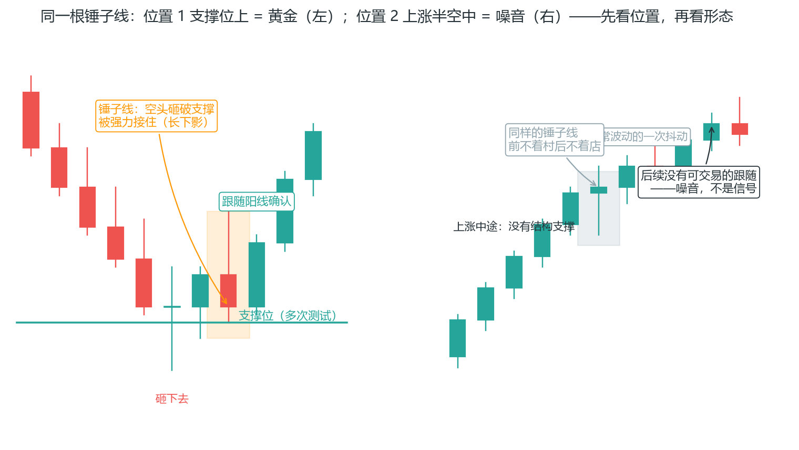
图 2-3 同一根锤子线，位置不同天差地别：左=下跌后 + 支撑位（多次测试）上，长下影 = 空头被强力接住，跟随阳线确认 → 黄金信号；右=上涨中途、前不着村后不着店，同样的长下影只是正常抖动 → 噪音
左图是“位置 1”的完整剧本：价格一路下跌（五根阴线）来到一个被多次测试的支撑位（青色水平线），空头最后一次砸下去（长下影砸到 92.5，橙色高亮框）却被强力接住——支撑位附近聚集着多头的成本和空头的止损，空头在这里“砸不动”本身就是信息；随后跟随阳线确认（8 号 K 线）——这是“下方有人坚决在买”的信号，黄金。右图是“位置 2”：同一根长下影 K 线出现在上涨中途，前后没有任何结构支撑——它只是正常波动里的一次抖动，后续也没有可交易的跟随，噪音。两张图 K 线形态几乎一样，价值一个天上一个地下——这就是本书反复强调的“信号必须放在位置里读”：先看位置，再看形态。第 3 章的所有入场信号都建立在这条之上。
那么“位置”怎么判断？先要判断市场现在处于什么状态。市场只有三种状态：上升趋势、下降趋势、区间震荡。而判断趋势，靠的是高低点的排列。
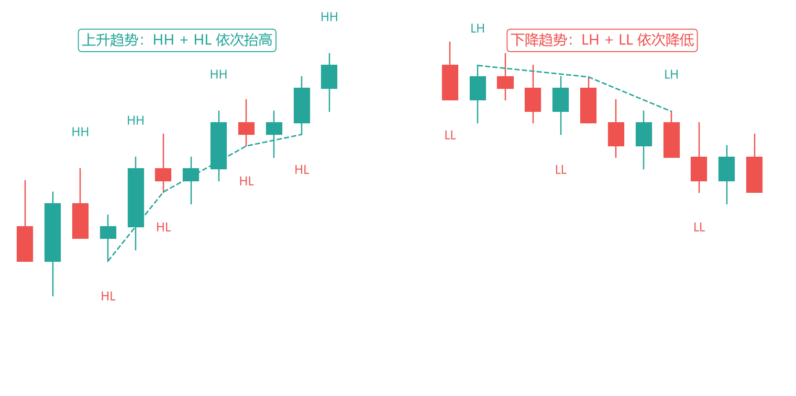
图 2-4 趋势：HH/HL 与 LH/LL 的高低点排列
这里有个关键的认知，能帮你避开一大类错误：
趋势不是你“画”出来的，是钱用真金白银“走”出来的。
很多人判断趋势靠画一条趋势线、然后主观认定“它在涨”。但真正的判据是客观的：最近的那个低点，有没有被跌破？ 上升趋势的定义就是“低点不断抬高”，所以一旦最近一个重要低点被跌破，上升趋势在定义上就被破坏了——这不需要任何主观判断，不需要“感觉”，是纯客观的事实。
这条“跌破结构点=趋势转弱”的逻辑，是后面第 5 章 BOS/CHoCH 的雏形，也是你判断“该不该继续拿多单”的硬标准。记住它：别跟结构争辩，结构破了就是破了。
实战时，每次打开图先问自己三个问题：
第三个问题最容易被忽略：不是每张图都有清晰的高低点。混乱的结构本身就是信息——它告诉你现在不是你的战场。学会说“看不清，不做”，是新手最重要的进阶之一。
市场所有权：趋势强弱的量化识别（Ali）：趋势不只靠高低点排列，还要看“谁拥有市场”：
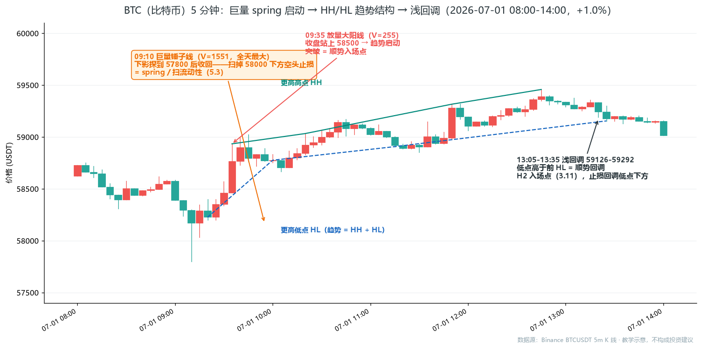
图 2-1R 真实数据：巨量 spring 启动 → HH/HL 趋势结构 → 浅回调（BTC 5 分钟，2026-07-01，08:00-14:00）
对照图 2-4 的概念逐项看：① spring 启动：09:10 一根 K 线放出全天最大量（V=1551）并砸出约 370 点长下影（从开盘 58294 直落至最低 57800，收回后收在 58170），扫掉 58000 下方的空头止损后收回——这不是普通回调，是趋势启动前的洗盘（第 5 章的 sweep 同款逻辑）；② HH/HL 结构：09:35 放量突破 58500 后，四个更高高点（58933→59032→59315→59457）与四个更高低点（58225→58775→58906→59154）清晰排列——趋势 = HH + HL，不是单看 K 线方向；③ 浅回调：13:05-13:35 回调到 59126-59292，低点高于前一个 HL——顺势回调（H2）就是入场点，止损放回调低点下方。整张图就是“定义→识别→入场”的完整演示。
接下来是“位置”的核心——支撑和阻力。先给你一个能改变你看图方式的洞察：
支撑不是一条线，是一群人被套住的位置。
为什么价格在某个位置会被“接住”？不是因为那里有什么神奇的线，而是因为那里有一群人的成本和止损。
想清楚这个机制：假设价格在 100 这个位置反复被买起来。这意味着很多人在 100 附近买了。现在分两种人：
这两股力量加起来，就让 100 这个位置有了“承接力”。支撑的本质，是这里聚集了一群等着行动的人。阻力同理（一群等着卖的人）。
理解了这一点，你就明白了几条经验法则背后的“为什么”：
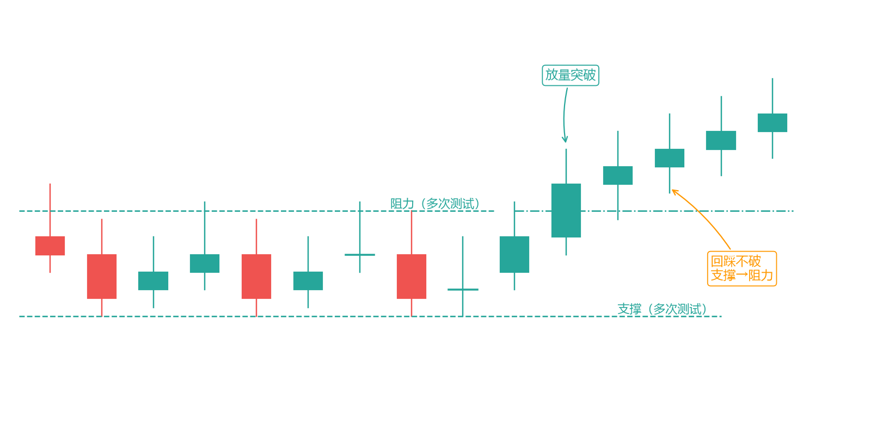
图 2-5 支撑与阻力：多次测试与角色互换
看图里的过程：价格多次在下方被接住（支撑），多次在上方被压回（阻力）；然后阻力被放量突破，价格回踩那个位置不破——曾经的天花板，变成了地板。这就是角色互换，是最可靠的转换规律之一。
还有一个和后面第 5 章直接相关的伏笔：突破者的止损，就挂在突破点下方不远处。这意味着每个关键位的下方，都聚集着一堆止损——这正是 SMC 说的“流动性池”。你现在记住“关键位下方埋着止损”这件事，第 5 章会反复用到。
未成交的限价单是力量标志（Ali）：价格没有到达某个预期限价单水平，这件事本身就是信号——说明该水平之前已有抢先入场的竞争，市场不愿意把价格送到那里。
例：空头想在某高位卖出却一直等不到成交，意味着上方没有足够的卖家，价格必须继续上涨——这是强势的证据。
还有两种“看不见的人”也会产生支撑阻力（Brooks）。第一种是最高/最低收盘价：当天的最高收盘价往往是阻力位，最低收盘价往往是支撑位——部分原因是许多机构交易者用线形图（收盘价连线）而不是蜡烛图看盘，他们的挂单和止损都锚定在这些收盘价上（日内短线交易员常用蜡烛图，隔夜/波段交易员常用线形图）。所以趋势中“创出最高收盘价的那根 K 线”之后回踩到它，常被接住；空头趋势末期找卖点，也常看“最高收盘价”这根线。
第二种是盈利目标位：量度移动（MM）目标、双顶颈线投射、区间高度投射——这些“数出来的价位”之所以真的会支撑/阻力，是因为多空双方都在那里平仓：多头在盈利目标位获利了结，空头也在同一位置进场做空，两股卖压叠加就成了阻力；空头的盈利目标位同理，因为多头和空头都会在那里买入（呼应 2.8 量度移动、第 4 章出场）。目标位不是算命，是一群人的平仓单在那里碰头。
隐形阻力（无人买入）的完整机制：
同一枚硬币的两面：与 2.3 的“限价单买不到”合起来——成交不了的订单，暴露了力量的分布。
K 线告诉你价格去了哪，成交量告诉你这次移动有多少真金白银参与。价格是因，量是验证。没有量确认的价格移动，就像没有观众的比赛——赢了也可能是自嗨。
四条最实用的量价规则：
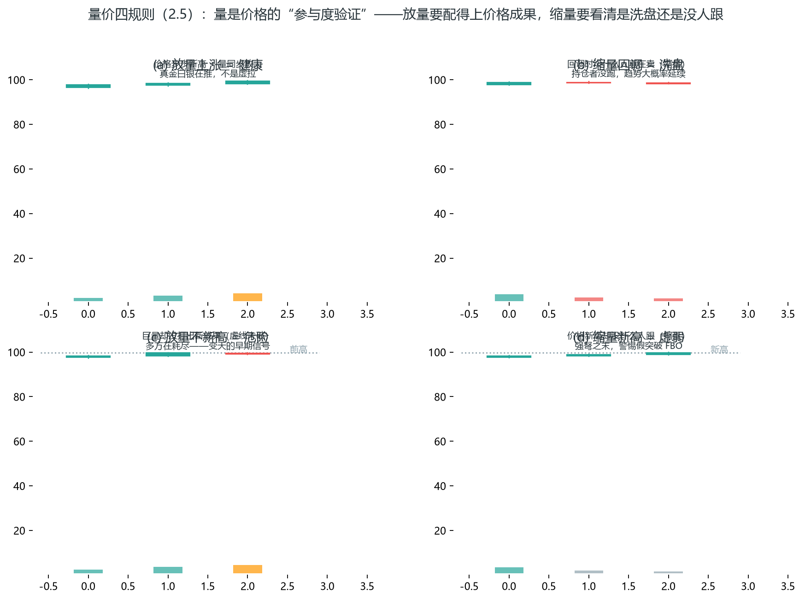
图 2-6 量价四规则：放量上涨健康、缩量回调洗盘、放量不新高危险、缩量新高虚弱（合成示意）
四格对照着读：① 放量上涨——每一步新高都有真实成交支撑，健康；② 缩量回调——下跌时没人真卖，是洗盘不是出货，趋势大概率延续；③ 放量不新高——使了大力气（巨量）却没破前高，多方耗尽，是趋势变天的早期信号；④ 缩量新高——突破了但没人跟，强弩之末，假突破（FBO）概率上升。量柱颜色只是方向提示，真正要读的是“价格成果与量的匹配度”。
一个必须记住的限定（第 1 章讲过，这里再强调，因为它直接影响你怎么用量价）：外汇没有统一的真实成交量（场外市场），你看到的是 tick 量近似，只能当参考；期货和股票的量是真实的，量价方法在它们身上最可靠。所以如果你重度依赖量价，优先做期货。
量价方法的正确用法：量不是独立的入场信号，它是“确认器”——给已经成立的技术信号加一个可信度评分。放量突破 = 真突破概率上升；缩量突破 = 假突破概率上升。第 3 章的量价三问就是把这个评分流程化。
前面讲的都是“零件”。现在把它们组装起来，走一遍真实的读图过程——这是本章的“代入感”环节，请跟着一步步想。
场景：你在看 ES（标普 500）的 4 小时图。过去几天价格一路走高，高低点依次抬高——你判断这是上升趋势（2.3）。最近价格从高点回落，正在向一个位置靠近：那个位置是上一波上涨的起点、一个前低，也就是一个支撑位（2.4）。
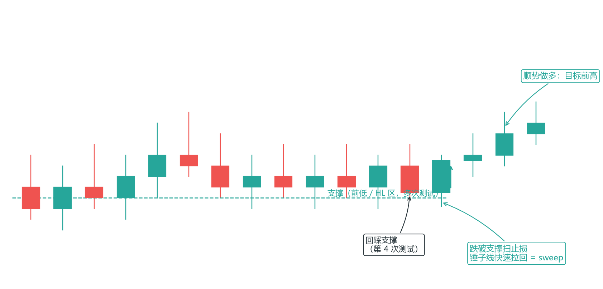
图 2-7 实战演练：锤子线跌破支撑后快速拉回（sweep 雏形）
现在，价格碰到了支撑位。你盯着接下来的那根 K 线，它走出来这样：
现在用本章学的东西解读这根锤子线：
四个维度全部指向同一件事：这是一个顺势的、在关键位、有确认的做多机会。
于是你做出决策（具体怎么算止损和仓位，第 4、6 章细讲，这里先建立感觉）：
看到了吗？一次入场，不是“我看到一根锤子线所以买”，而是“背景是趋势 + 位置是支撑 + 形态是锤子 + 止损有明确依据”四个条件同时成立。这就是第 3 章那个公式“信号质量=背景×位置×形态”的完整样子。本章教你的所有零件，在这一刻组装成了一次真实的决策。
补充三个常用工具，它们是上面核心概念的延伸：
趋势线与通道：连接两个以上的低点画出上升趋势线（下降趋势连高点）。趋势线本质是 HL 序列的另一种画法——趋势线跌破，往往意味着最近的 HL 也快破了，是结构转弱的早期预警。在趋势线对面画平行线就是通道，通道上沿是趋势里的止盈参考。
注意趋势线的坑：趋势线是你“主观选择”连接哪几个点画出来的，同样的图能画出三条不同的趋势线。所以把趋势线当“参考”可以，当“判据”要小心——第 2.3 的“最近低点是否被跌破”才是客观判据。趋势线给你提前预警，结构点给你最终裁决。
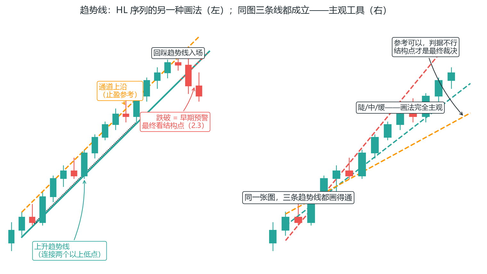
图 2-8 趋势线与通道：上升趋势线连接两个以上低点（左），跌破 = 早期预警、通道上沿 = 止盈参考；同一张图能画出三条不同的趋势线（右）——参考可以，判据不行
左图是上升趋势线的完整用法：① 画法——连接两个以上低点（图上三个 HL 低点连成一条线），趋势线本质就是 HL 序列的另一种画法；② 回踩入场——价格回踩趋势线不破（图上 16 号 K 线）是顺势入场点；③ 通道——在趋势线对面画平行线得到通道上沿，它是趋势里的止盈参考（不是强制出场位）；④ 跌破预警——最后价格跌破趋势线，这是结构转弱的早期预警，但注意：跌破趋势线 ≠ 立即做空，要等结构点（最近低点跌破）确认。右图是“主观性”的直观演示：同一张价格图，陡/中/缓三条趋势线都画得通、都有人用——所以趋势线当参考可以，当判据要小心，第 2.3 的结构点才给最终裁决。
缺口（Gap）：相邻两根 K 线之间没有成交的空白（股票常见，因为隔夜休市；外汇只有周一开盘有）。四种：
经验法则：突破缺口不回补，普通缺口必回补。考核期注意周一开盘缺口直接跳过你的止损（第 1.7 周末持仓问题）——这既是风险，也是机会：如果你知道缺口会回补，周一的跳空往往提供短期的回补交易，但别在考核期冒险（第 7 章军规）。
开盘跳空的方向确认（GU/GD，PA）：跳空开盘后，首 3-5 根 K 线是否反向收盘决定缺口日性质——GU（Gap Up，开盘高于前日高点区域）偏多背景，但若首 3-5 棒连续收出反向阴线，缺口大概率被立即回补（假跳空，回补后常继续反向）；GD（Gap Down，开盘低于前日低点区域）同理镜像。跳空后接尖峰 = 警惕高潮风险（第 2.11）——跳空本身不是下单依据，首 3-5 棒的方向 + 跳空后的跟进才是（呼应 4.26 开盘区间突破：开盘头 N 根 K 线先围出区间，再谈突破）。
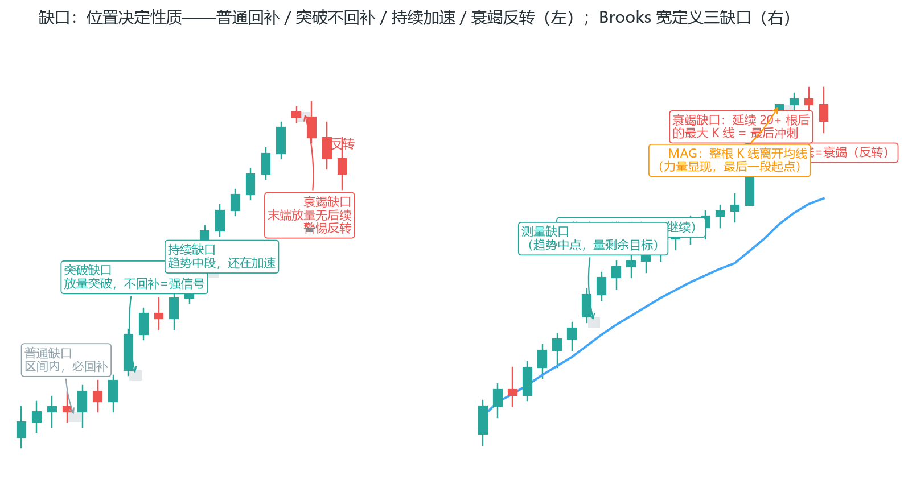
图 2-9 缺口四类（左）：普通/突破/持续/衰竭——位置决定性质；Brooks 宽定义三类（右）：测量缺口在趋势中点、衰竭缺口是末段最大 K 线、MAG 整根离开均线
左图是四类缺口的完整剧本：横盘区间里的小跳空是普通缺口（大概率回补，无交易价值）；放量突破区间上沿的跳空是突破缺口（短期不回补，强信号）；趋势中段再跳空是持续缺口（行情还在加速，别下车）；趋势末端放量跳空却收出滞涨小 K 线是衰竭缺口（无人接盘，警惕反转）。判断口诀只有一句：位置决定性质——同一个“跳空”动作，出现在区间是噪音、出现在起点是信号、出现在中段是加速、出现在末段是离场提醒。右图是 Brooks 的宽定义：收盘价与前一根高点之间的任何空隙都是缺口——趋势中点的缺口量目标（测量缺口，配合 2.8 量度移动）、20+ 根后的最大 K 线大概率是衰竭缺口（最后冲刺）、整根 K 线离开均线是 MAG（对方力量显现的早期迹象）。
Brooks 的缺口观（补充）：Brooks 对缺口的定义更宽——收盘价与前一根 K 线高点之间的任何空间都是缺口（不需要跳空开盘，一个 tick 的空隙也算）。在这个定义下，他补充了三类在趋势中有预测力的缺口：
判断法则：趋势早期的大 K 线 = 测量缺口（继续），趋势晚期的大 K 线 = 衰竭缺口（警惕反转）。位置决定性质——又回到了 2.2 节的母题。
Al Brooks（前医生转职交易员，价格行为领域最系统的作者，附录有他的定位）把“读结构”推进到了极致。这里提炼四个最实用、且和本书无缝衔接的概念：
Always-in 方向：问自己一个问题——“如果现在强迫我必须持仓（不能空仓），我该持多还是持空？”答案就是 always-in 方向。它比“趋势还是区间”更细，问的是“当下力量偏向哪边”。只做和 always-in 方向一致的单——这其实是 2.2 节“背景”的精确化，给你一个逐 K 线更新的方向判断。
两段式移动：大多数趋势性移动不是一步到位，而是分两段——涨一段、回调、再涨一段。用法：第一段走完、第二段回调时是顺势入场点（呼应第 4 章趋势回调系统）；合理目标常是“第二段=第一段长度”；两段走完后趋势容易转区间或反转，别追。
真实数据看一眼（24 小时市场里这个结构每天都在发生）：
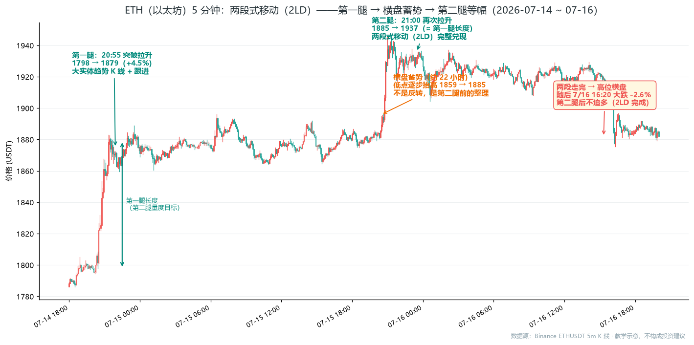
图 2-2R 真实数据：两段式移动——第一腿 → 横盘蓄势 → 第二腿等幅（ETH 5 分钟，2026-07-14 ~ 07-16）
图里四步可复刻：① 第一腿：7/14 20:30-21:20 大阳线连续拉升，从 1798 平台拉到 1879（+4.5%）——突破前期 1795-1800 的横盘平台，大实体趋势 K 线 + 跟进，顺势者入场；② 横盘蓄势：随后约 22 小时（7/14 21:30 ~ 7/15 20:00）价格原地整理，低点逐步抬高 1859 → 1885——不是反转，是第二腿前的蓄势（时间换空间的回调），持仓者的止损可以上移到平台低点下方；③ 第二腿：7/15 21:00 再次拉升，1885 → 1937（+2.8%，盘中最高摸到 1946）——两段式移动（2LD）完整兑现，量度移动（第一腿长度投射）给出大致目标区；④ 两腿走完后：7/16 16:10 一根大阴线跌破 1900，跌至 1875（较 1937 高点 -3.2%）——第二腿后不追多。记住：两段式移动的钱在第二腿的起点（蓄势/回调后的突破）里，不在第一腿的追高里。
量度移动：把一段已发生的移动投射出去当目标（“第二段=第一段”或“区间高度投射”）。它给你一个基于结构的目标价，而不是拍脑袋，配合第 4 章的出场是很好的止盈锚点。
高潮/衰竭：趋势末端突然出现一根异常大、异常急的 K 线（常伴放量），像最后的冲刺——这通常是衰竭信号，追的人在这一刻冲进来，恰恰是聪明钱在出货。趋势中出现高潮 K 线，别追，该警惕反转。
这呼应 2.5 的“放量滞涨”和 2.7 的“衰竭缺口”——都是“力量用尽”的不同表现。
Brooks 的柱计数（Bar Counting）：用“回调是第几次”给入场点命名——顺势入场的“刻度”：
用法：高 2 比高 1 更常见也更可靠——第一次回调后趋势常直接继续，第二次回调后进场更从容；楔形 = 高 3，常是反转信号。
Brooks 的原话提醒：永远不要忽视目标——计数不清楚没关系，看到良好信号棒直接在其上方买入。计数是辅助，信号棒质量才是入场依据。
TBTL：一切移动的最低目标：任何反转、突破、大波动、高潮，最低目标都是 TBTL——10 根棒 + 两条腿（Ten Bars Two Legs）。这是 Brooks 给“目标该看多远”的底线答案：入场后至少期待 10 根 K 线的移动、且分两条腿走完；可以更多，但少于这个就不算合格的行情。配合量度移动（第一腿长度投射），TBTL 让你不会过早止盈，也不会定一个离谱的目标。
反转的现实概率（提前预警）：Brooks 的统计：
这不是说反转信号没用，而是提醒你：反转交易是低概率博弈，必须靠盈亏比取胜（第 6 章交易者等式）。并且所有主要趋势反转（MTR）都是双顶/双底或它们的变体——头肩顶 = HH MTR + LH MTR，楔形 = 双顶变体。看到“反转形态”，先想“这是哪个双顶/双底的变体”，能帮你避开大多数伪反转。
Brooks 没有推翻本章框架，他把它磨得更细：always-in=背景判断的精确化、两段式=入场时机、量度移动=出场目标、高潮=反转预警、柱计数=入场命名、TBTL=最低目标、反转概率=预期管理。想深入，他的三卷本是进阶字典（但极晦涩，先掌握本章再读）。
先校准两个结构词汇：波段与腿：Brooks 把移动拆成两种尺度——波段（swing）是持续 10-20 根 K 线的小趋势，存在于更大的趋势或交易区间中，图表上至少两个波段才谈得上“结构”；腿（leg）是 1-10 根 K 线的小趋势（如第一腿下跌 1LD、两条腿下跌 2LD），通常比波段小，回调是最小的腿。读图先分尺度：短腿管入场时机（回撤到腿的尽头顺势入），波段管方向与 S/R 位置（波段高/低点是画趋势线和支撑阻力的锚点，呼应 2.4）。
交易区间的最小定义（3 腿 20 棒）：什么时候才算“进入交易区间”而不是“一次回撤”？Brooks 给了可操作的底线：至少 3 条腿、约 20 根 K 线——比如三段下跌跌破一个主要高点，才算够格的区间。更少就不叫区间，多半只是趋势中的回撤（呼应上文两段式移动：第二腿前的蓄势横盘常被误认为区间，其实往往不够 3 腿 20 棒）；反之，一旦回调长到 20 根以上，就停止用“回调”、改用“交易区间”一词——因为趋势已失去控制，上行/下行突破概率趋同（约 50%，第一次突破大概率失败）。有了这个定义，你就不会横盘 5 根 K 线就喊“区间”、也不会在真区间里死等趋势。
铁丝网与无交易环境（Barbwire / TTR）：有一种市场状态，看起来有信号、实际全是噪音——那就是铁丝网。它的量化特征：区间宽度 ÷ 平均波段高度 < 25%（紧凑度），或连续 ≥10 根高度重叠且宽度 < 平均波段 25%，或 ≥3 根 K 线高度重叠且至少 1 根十字星；价格绕 EMA 来回穿梭、均线平坦纠缠、ii/iii 与 ioi 频繁出现但方向不明。
铁丝网的铁律：一旦认定为铁丝网/紧凑交易区间（TTR），大部分信号直接忽略——单根十字星/内包棒无交易价值，外包棒只是更大的凝滞区，最危险的是“在高点上方买、低点下方卖”的普通突破（大概率假突破）。自检咒语三问：紧凑横向整理？价格来回穿梭、均线平坦纠缠？波段边界几乎重叠？三问皆答“是”，就退出战场。
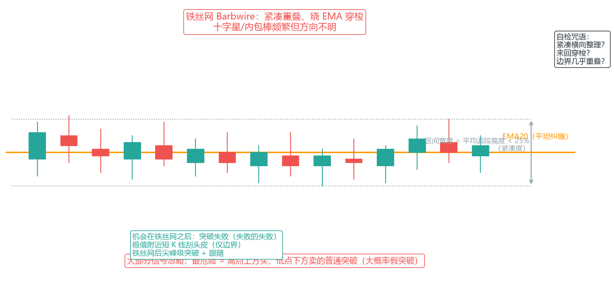
图 2-10 铁丝网（Barbwire）：紧凑重叠、绕 EMA 穿梭——大部分信号忽略，等待突破失败或极值短 K 线
铁丝网之后的机会不是“追突破”，而是：突破失败（失败的失败）、极值附近短 K 线刮头皮（仅边界非中部）、铁丝网后尖峰级突破 + 跟随。铁丝网内止损禁止设在边界外 1-2 跳（噪音太大，必被扫）——结构缓冲不足就放弃。
TTR 中的 101 结构（Ali）：TTR（无趋势区间）是一种无趋势环境，单根外包线（101）的小动量足以影响其后 1 根柱的方向——市场将中间柱视为小型突破，随后出现回调（PB），接着在突破方向上形成小型两腿走势；101 之后的柱通常朝相反方向运行（例如买入 101 后出现卖出失败柱），它会跟随 101 外柱的方向；双失败柱（2FT）通常沿 101 的方向运行。四种情况下 101 策略都奏效——了解 1 号柱的方向可能与反转期方向相反，有助于避免在成功交易中被震出局。
20GB（均线缺口计数）：连续约 20 根 K 线未触及 EMA，说明趋势极强、市场严重偏离均值。两个结论：第一，无明确反转前不要逆势交易 20GB 趋势；第二，20GB 后首次触及 EMA 是顺势刮头皮的高胜率结构，预期至少测试原趋势极点（配合第 4 章“20 gap bar 两种建仓方案”）。若第一次触及失败，可等第二次；两次都失败，不再第三次强行尝试——回到状态机重新判断是通道、区间还是反转。
如果说 Brooks 把结构读“活”，Joe Ross（洛氏霍克交易法创始人，20 世纪中叶的职业交易员）则把结构读“机械”——他的体系只用两个结构（1-2-3 结构和洛氏霍克结构 Rh），却配齐了从定义、入市、止损到资金管理的完整流程。它和第 2.3 节的结构突破是同一件事，但更形式化：每个点都有明确的确认条件，没有“感觉”的余地。
1-2-3 结构：趋势的起点
几乎每段趋势（无论大小）都始于一个 1-2-3 结构。以做多为例（低位 1-2-3）：
镜像即高位 1-2-3（做空）：1 点=高点，2 点=回调低点，3 点=更低高点（3 点必须低于 1 点），跌破 2 点入场。
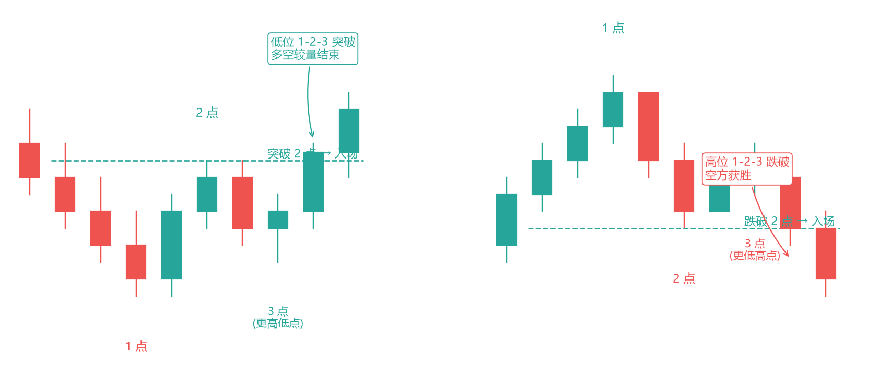
图 2-11 洛氏 1-2-3 结构：低位做多（左）与高位做空（右），突破 2 点入场
结构要求（洛氏原规则）：日线图 1-2-3 至少由 4 根 K 线组成（越多越清晰）；日内图至少 3 根——K 线太少的“结构”只是噪音。
洛氏霍克结构（Rh）：比 2 点更早的入场点
洛氏在研究 2 点时发现：2 点被突破后，第一根没有创出新高（做多）的 K 线，其低点/高点就是比“突破 2 点”更早、止损更近的入场参考——这就是洛氏霍克结构（Ross Hook）。Rh 的形成有 4 种情况：
用法（奇克入市法）：Rh 被突破时（或之前）提前入市——不必等价格创出新高/新低。价格回落到 Rh 附近时挂限价单做多（做空镜像），止损在 Rh 另一侧。这就是“在突破之前就进入市场”：2 点突破给了方向，Rh 给了更早的入场点和更近的止损。
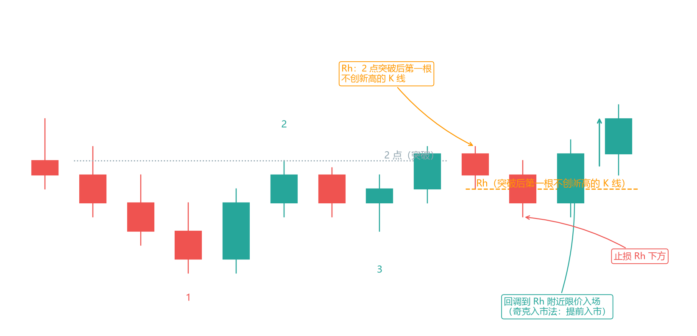
图 2-12 洛氏霍克 Rh 与奇克入市法：回调到 Rh 附近限价入场，止损放 Rh 另一侧
反转洛氏霍克（RRh）：趋势反转时形成的 Rh——上升趋势中出现向下突破、随后第一根不创新低的 K 线，是潜在的反转做空点。洛氏自己承认 RRh 更难确认、更难交易——新手先只做趋势中的 Rh。
与本书的对照（洛氏不是另一套体系，是同一套体系的机械版）：
| 洛氏概念 | 本书对应 |
|---|---|
| 1-2-3 结构 | 2.3 结构突破 + 双底/双顶变体（3.9） |
| 2 点突破入市 | 3.9 突破形态 / 4.5 系统三 |
| Rh 回调入场 | 4.3 趋势回调（回调到突破后第一个不创新高点） |
| 奇克入市法（提前入市） | 4.21 突破单模型一（H2/L2 顺大逆小） |
| 3 点=更高低点 | 2.3 的 HL（趋势健康标志） |
诚实评价：洛氏体系的价值是把“结构”定义成可编程规则（每个点都有硬条件），这是它的最大优点；但 1-2-3 在区间市场会反复失效（每次突破 2 点都是假突破），所以必须配合第 4 章状态机判断“趋势 vs 区间”。洛氏自己的配套方案是严格资金管理（3 手合约法，见 6.12）和止损纪律（见 6.5 与 4.16）——结构只解决“在哪进”，仓位和止损解决“活下来”，两者缺一不可。
以上所有内容，最终要压缩成一个“每根 K 线收盘后 10 秒内跑完”的固定流程（Al Brooks 逐棒分析检查单，PA 逐棒检查单）：
六条口诀（背下来，每次看图默念）：
- 先上下文，再形态。
- 先信号质量，再入场计划。
- 先二次入场，再评估反转诊断（逆势不下单）。
- 先跟随，再确认可交易。
- 先惯性，再逆势。
- 看不懂，就等下一根 K 线。
特殊结构的逐棒速查：
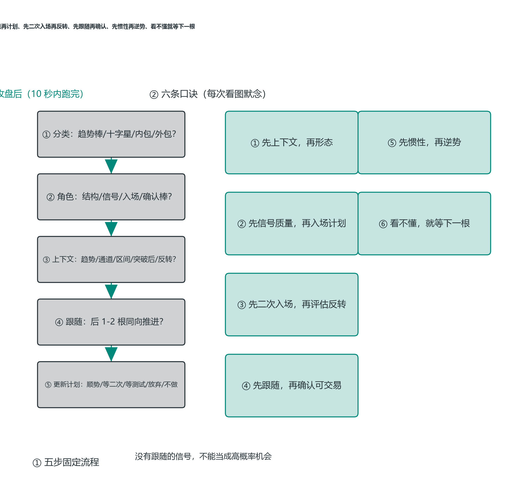
图 2-13 逐棒检查单：每根 K 线收盘后的五步流程与六条口诀
收盘纪律：8 次正确才能弥补 1 次过早进场（诊断）：K 线通常会延续收盘前几秒的走势——过早进场最多多赚 1 跳，但每天总有一两次“你以为信号会出现、实际没有”的情况，一次过早进场平均多亏约 8 跳。需要 8 次正确运行的趋势才能对冲一次过早进场——几乎不可能。两个常见结局：强趋势中看到“完美”反转棒提前进场，收盘前几秒价格崩盘收于低点（假反转陷阱）；或把保护止损移得太紧，收盘前被下探击穿、下一根开盘直奔目标（被挡在好交易之外）。纪律：收盘前不动手，收盘后不移动初始止损。
尖峰（Spike）是趋势的 Leg 1——由连续大型趋势棒构成、几乎没有回撤的快速单向运动，是买方力量短时间集中爆发的结果（PA 极速行情）。
先理解尖峰是什么（机制总纲）：尖峰 = 订单流失衡的集中爆发。机构的大买单需要等量的对手盘，当前价位的卖单不够 → 价格必须快速上涨去“找”卖单（呼应 5.14 机构如何推动价格）——一路上吃光挂单、触发空头止损，形成连续大实体、无重叠、创新高的 K 线。所以尖峰的每一项识别标准都在测同一件事——卖方有没有出现：实体大 = 买盘远超卖盘；无重叠 = 中间没有任何像样的卖出；尾线短 = 没有反击；收盘创新高 = 买方愿意为新价位付钱；紧迫感 = 买方等不及回调。而高潮（climax）是同一枚硬币的另一面：失衡爆发到极致后，能推动价格的买盘耗尽，最后一批追高者进场——高潮 K 线是“燃料烧完”的标志。尖峰（失衡）与高潮（耗尽）是同一个过程的两端，理解了这点，下面每条规则都能从“燃料还剩多少”推导出来。
先拆概念：Spike ≠ Breakout ≠ Gap ≠ Climax（四个字段不能混为一谈）：
尖峰 5 项识别标准：
持续时间分级（路由标准）：
| 根数 | 定义 | 操作 |
|---|---|---|
| 1 根 | 弱尖峰候选 | 等下一根跟随确认，禁止追单 |
| 2 根 | 最低可路由尖峰（重叠 < 30%） | 只等回撤（SPS），禁止追突破 |
| 3-5 根 | 标准尖峰 | 强趋势日概率高；5 根起注意衰竭 |
| 6 根+ | 高潮预警 | 监控衰竭信号——不以根数确认高潮，以衰竭信号为准 |
尖峰结束的标志：第一条暂停棒（同向小实体棒）→ 禁止追单，尖峰转 ending；第一条反向回撤棒 → 尖峰确认结束，转通道/区间评估。暂停 1-2 棒后以同等力度恢复 = 二次尖峰（通常不如第一波强）；连续三次尖峰极罕见，第三次通常就是高潮。
枯竭 K 线（Exhaustion Bar）：突破中的长趋势 K 线通常会在下一根 K 线失败，套住方向选择失策的追单者——K 线过长本身是趋势耗尽的信号；凝滞区交易日中长趋势 K 线的失败尤其常见。
买进高潮（Buying Climax）的典型序列：2 根以上大趋势棒 → 一根明显更大的高潮棒 → 紧跟带长上尾线的小实体拒绝棒 → 空头趋势棒确认反转。衰竭信号三件套——长上尾线（> 实体 50%）、小实体棒（< 近期均值 30%）、反向趋势棒：任意一个出现即触发高潮判定。
卖出高潮（Selling Climax）与买进高潮的关键区别：识别特征完全镜像（长下尾 > 实体 50% / 小实体 < 均值 30% / 反向棒），但后续行为不同——卖出高潮后更倾向 V 形反转：恐慌抛售后空头“弹尽粮绝”，反弹往往与下跌一样快、至少回撤 38.2-50%；买进高潮后通常需要更长时间的盘整。第一目标永远是高潮棒本身：卖出高潮后市场通常至少回到该高潮棒高点之上一点点（空头回补的最小目标），买进高潮后至少回到该高潮棒低点之下一点点——结构给出的最保守目标先看到那里，再谈 38.2-50% 的更大反弹（呼应图 2-4R 真实案例：07-20 恐慌插针后 40 分钟收复、当晚收于高潮棒高点之上 3.96%）。为什么不对称（机制）：恐慌抛售是“被迫的”——止损、追保、强平把卖单挤在同一时刻，抛售一结束，市场里短时间内没有卖盘了，而空头急着回补（浮盈在消失）——买盘 + 回补同时涌来，V 形反转。买进高潮的追高是“自愿的”：获利盘分批了结、没有强制平仓的紧迫性，所以需要盘整来慢慢消化浮盈。反转确认关键：反弹棒出现后的第一根反向棒是否创新低——创新低 = 尖峰延续；不创新低 = 反转概率上升（仅诊断，不逆势）。
恐慌抛售（Panic Selling）的量化特征：卖出高潮的极端变体——实体是常态均值的 3-5 倍（普通高潮棒 2-3 倍），几乎没有下尾线（收盘在最低价附近），或出现长下尾线的“锤子”形态（尾盘被多方收复部分失地）。恐慌抛售后的市场行为：空头弹尽粮绝，常常伴随 V 形反转——实体越大越极端，越说明卖盘是“被挤出来的”而不是“主动的”：强平/止损单出完，反弹的燃料就越充足（呼应 5.6 SMC 的卖压耗尽、图 2-4R V 型反转案例）。
高潮 K 线的量化预期（突破）：高潮 K 线（climax bar）有 70% 的概率在 1-2 根 K 线内出现回调，超过 60% 的概率至少出现一个小幅第二波段（顺原方向）；为什么 70% 会回调（机制）：高潮 K 线吃掉的是最后的买盘——K 线内部追高成交的人全部浮亏，下一根一开盘他们就是现成的卖压；先前入场的多头看到高潮也倾向落袋。追高者被套 + 获利盘了结，两股卖压叠加，回调几乎必然。当高潮信号棒出现在末段行情（趋势方向的最后 1-2 波）中时，通常导致更持久的回调甚至直接反转——与 2.11 的“第三次高潮是趋势末日”互证。所以高潮后的标准动作：等回调（70% 会来），不追高潮。
抛物线通道 = 趋势的最后阶段：回撤幅度越来越小（通道高度 50% → 20% 以下）、回撤时间越来越短（5-10 棒 → 1-2 棒）、趋势棒越来越大、FOMO 追涨——结束后通常回调整个运动的 38.2%-50%。
发散（扩张）：趋势末期在波动形态上的签名：与收敛/三角形（波动收缩、犹豫）相对，发散（expansion）是波动范围逐步扩大的状态——价格每推一波，高低点区间都比上一波大，趋势棒越来越大、回撤越来越浅。它不是独立的入场信号，而是趋势加速并走向末期的形态签名：扩张到极致 = 抛物线 = 高潮（上文）。读图要点：① 收敛（三角/楔形）在趋势中段是“换挡蓄力”，发散在趋势末段是“油尽灯枯”——两者方向相反；② 看到发散不要追顺势（追在最后冲刺里），按高潮处理：等回撤、等衰竭信号；③ 发散后进入区间是常态，未必直接反转（呼应 3.9：反转需 MTR 四组件确认）。
缺口尖峰：大幅跳空启动的尖峰。开盘 30 分钟内缺口被回补 = 缺口尖峰失败；缺口 > 日均波幅 30% = 强信号；趋势日中的缺口通常不回补。
尖峰后的三条路径（概率排序）：① 转通道延续（约 60%——回调 < 50%、通道倾斜向上，通道下轨做多）；② 进入区间（约 30%——顺 direction 一侧边界操作）；③ 反转（约 10%——仅诊断，不逆势）。为什么转通道是大概率（机制）：尖峰已经确立了方向共识和新的价位区间——失衡没有消失，只是从“爆发式”转为“匀速式”：回调时抄底者（价值型多头）和趋势跟随者接盘，形成有序的通道推进。爆发（尖峰）→ 匀速（通道）→ 衰竭（高潮）是同一个失衡的完整生命周期；反转需要燃料方向彻底改变，所以只有约 10%。
连续高潮与反弹容忍度：同向两次高潮之间通常间隔 ≥ 10 棒，中间反弹常为两条腿；第二波力度与第一波相当或更大才算连续高潮（明显更弱 = 只是反弹）；第三次高潮常呈抛物线，是趋势最后阶段——之后通常大幅反弹或反转，禁止追单。为什么第三次是末日（机制）：每次高潮都是一次燃料耗尽——但第一次高潮后趋势共识还在扩散，新的买盘会涌入；第二次靠更强的 FOMO 再次推动；到第三次时，能入场的买方几乎全部在场（场内全是浮盈持仓、没有新增量），抛物线就是“最后一波人用尽最后力气”的形状——之后没有新买家，只能向下。尖峰后反弹容忍度三档：强尖峰后反弹不应超过尖峰高度 50%（继续顺势）；超过 61.8% = 尖峰失败、按区间场景处理；低于 23.6% = 极强趋势（小幅反弹趋势日）。
衰竭性高潮（EGO）的识别与确认（Ali）：一系列买入（或卖出）高潮的末期，会出现最大、最强壮的 K 线——看似新突破，实为最后疯狂，随后失败反转。三个细节：① 高潮后约 10 根 K 线内不宜反向交易（见下文交易纪律），且至少 50% 概率会测试前一个高潮高点；为什么不能立刻反向（机制）：高潮只是“燃料烧完”的诊断，不是“方向反转”的确认——燃料烧完后价格还可能靠惯性再冲一波（测量移动的第二腿），且 50% 概率会回头测试高潮高点。在反转结构（第一次回调 PB + 反向结构）出现前逆势入场，等于在趋势的“回光返照”里接刀。② 真正的反转确认是高潮后的第一次回调（PB）——高潮本身只是诊断；先出现带 PB 的最终 EG、之后才是反转的情况也很常见（EGO：EG 之后还有 EGO）；③ 3 次或以上的连续高潮（CC）且仅伴随 1-2 根回调线，通常形成衰竭趋势——直到突破缺口被回补、该供应区被标记为耗尽缺口。TR 时期最强的趋势柱形成在每条腿末端附近——那是顶部/底部的高潮（EG 而非 MG），是对交易者的警示信号：当前走势即将反转，而非新的突破柱。
上山高潮还是新突破？（Ali）：每次突破同时都是高潮——当高潮不极端时，它更像新趋势而非反转：买入短暂停顿是更高概率的交易；当买入最终结束时，趋势延续比急剧反转更有可能。所以遇到“看起来像高潮”的突破，先问极端程度：不极端 → 按新趋势对待；极端（长影线 + 大实体 + 无跟随）→ 按高潮对待。
不寻常 = 高潮 = 不可持续（Ali）：从未或很少出现的价格行为（极度异常的大实体、极端影线、惊人的速度），之前往往经历过很不寻常的走势——越是物极必反，越要等纠正而不是匆忙上船。日线图上：当 CH（连续更高高点）形态持续超过 1 根 K 线时，大概率会转为交易区间并开始形成 HL；一旦跌破主要 LH（导致 LL 的那个），市场不再处于上升趋势——无论它看起来多强。
真空测试：支撑/阻力的“试金石”（Ali）：当市场快速上涨触及阻力位后停滞，或抛售快速回落并在支撑位止跌（速度快到没有给犹豫留时间），这种“真空测试”会提高该支撑/阻力保持有效的概率——快速触达说明多空都认可该位置，犹豫的测试才容易被突破。
大柱极点是磁铁（Ali）：TRD/TTRD 中最常见的情形——大突破柱体会在其高点（或低点）附近收盘：市场具备足够动能突破高点，将多头困在场内、空头挡在场外；随后市场回撤并测试一路下行至趋势线下方，触发多头止损——过程中同时触发大 K 线上下方的两个磁吸位。外包线本质上是单根 K 线的交易区间突破——而多数区间突破都会失败，必须密切关注导致它们出现的价格行为（呼应 2.10 逐棒检查单）。
交易纪律：只做回撤入场（SPS，回撤位 38.2%-50% 或前棒低点），禁止追尖峰（SCS）；高潮后至少等 10 根棒再考虑新多；止损放大不得超过尖峰高度的 50%，超过则放弃；止损永远留 1-2 跳缓冲，不放在精确极点。
趋势日与小幅反弹趋势日（尖峰的日线形态）：开盘起下跌趋势日——开盘后前几根棒形成当日最高点，开盘区间 < 当日波幅 25%，跌破后价格持续下跌；约 20% 的交易日属此类（上涨镜像同理）。确认规则：开盘低点（或高点）在第一小时内被突破 = 趋势日失败；确立后每次反弹都是顺势入场点。小幅反弹趋势日 = 最强趋势日类型（每月约 1-2 次）：全天反弹幅度仅为日均波幅的 10-30%、反弹只持续 1-3 根、反弹棒约趋势棒的 30-50%——所有反弹都是顺势入场点，禁止逆势。趋势日逻辑呼应第 1.7 时段：欧美交易时段交界（伦敦-纽约重叠，北京 20:00-24:00）最易发生。
陷阱速查：单根大实体棒 ≠ 尖峰（须 2 根+跟随）；区间内急涨 ≠ 尖峰（须突破区间边界并持续）；通道内大棒 ≠ 新尖峰（须突破通道上轨并显著加速）；二次推动明显弱于第一次 = 只是通道行为；高潮后追涨 = 接最后一棒。
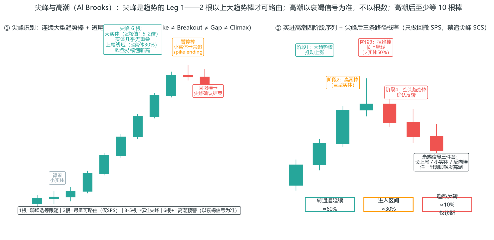
图 2-14 尖峰识别五标准与持续时间分级（左）；买进高潮四阶段序列与尖峰后三路径概率（右）
上面是合成示意，下面用真实数据把同一套流程走一遍——BTC 1H，2026-07-14 ~ 07-16（数据源：Binance BTCUSDT 5m K 线重采样 1H）。一轮上涨走完了"尖峰 → 第二波衰竭 → 高潮 → 回调"的完整生命周期，图 2-14 的每一项识别标准都能在上面找到真实对应：
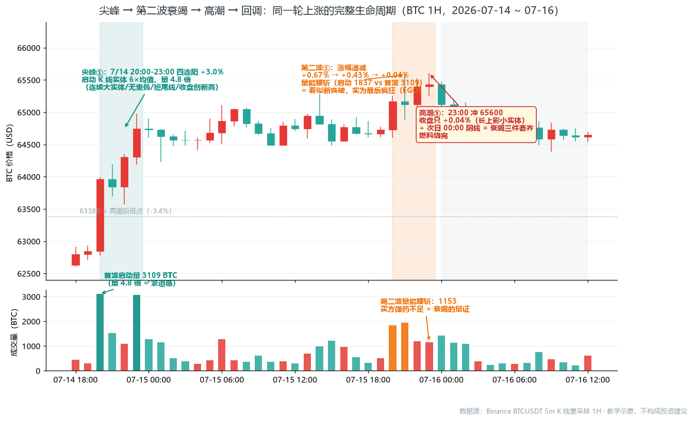
图 2-3R 真实数据：尖峰 → 第二波衰竭 → 高潮 → 回调——同一轮上涨的完整生命周期（BTC 1H，2026-07-14 ~ 07-16）：① 7/14 20:00-23:00 四连阳 +3.0% 教科书级尖峰（启动 K 线实体 6×均值、量 4.8 倍）；② 7/15 20:00-23:00 第二波涨幅递减 +0.67%→+0.43%→+0.04%、量能腰斩（1153 vs 首波 3109）——看似新突破实为最后疯狂（EGO）；③ 高潮 K 线 23:00 冲 65600 收盘只 +0.04%（长上影小实体）+ 次日阴线 = 衰竭三件套齐；④ 高潮后回调 65600→63380（−3.4%）= 回撤掉尖峰的 80%，超过 61.8% 失败线 → 转区间（数据源：Binance BTCUSDT 5m K 线重采样 1H）
这张图要读出三件事：
下面这张是“卖出高潮”（恐慌抛售）的真实数据版——2.11 卖空镜像的完整实证——BTCUSDT 5m，2026-07-20 12:00 ~ 23:55（数据源：Binance BTCUSDT 5m K 线）。与上面 2-3R 的“买方尖峰-高潮-回调”正好相反：白天阴跌后一根 30 倍量的恐慌插针 = 卖方高潮，随后 V 型反转：
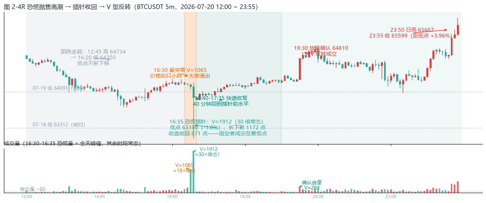
图 2-4R 真实数据：恐慌抛售高潮 → 插针收回 → V 型反转（BTCUSDT 5m，2026-07-20）：白天阴跌 → 16:35 恐慌插针（V≈1912=30 倍常态、低点 63100 扫掉 07-18 低 63312/07-19 低 64091、长下影 1172 点、收盘收回 871）→ 40 分钟收复 → 23:55 收 65599（距低点 +3.96%）——卖出高潮后 V 形反转的完整实证；ETH 同刻（16:35）同步插针确认是市场级事件
这张图要读出三件事：
2.1-2.11 把"读图"拆成了一根根 K 线和一个个概念。这一节把它们收拢成一张总图：任何时刻，市场都处于 8 种周期状态中的一种（或两种的边界）。每种状态都有唯一正确的做法——做错了就是最常见的亏损模式。所以读图的第一件事不是找信号，是定位：先问"现在是什么状态"，再决定"该用什么打法"。
8 种状态从强到弱（Brooks 周期频谱，PA 市场诊断框架）：尖峰 → 微型通道 → 紧凑通道 → 常规通道 → 宽通道/台阶 → 趋势型交易区间 → 交易区间 → 极端交易区间。强度递减的本质是方向确定性递减：越靠左，顺势越有优势；越靠右，任何方向的期望值都趋近于零。
主判据只有一条：最近一波回撤占前一波推进的百分比。斜率和视觉宽度只是辅助——窄通道回撤 <30%、常规 30-50%、宽通道 50-78.6%（呼应 4.22 通道量化分类，同一个判据）。为什么是回撤而不是斜率？斜率随画线方式变、回撤是 K 线结构里数出来的，客观可复制。
| 状态 | 识别主判据 | 交易含义 | 常见陷阱 |
|---|---|---|---|
| ① 尖峰（Spike） | 2 根+ 连续趋势棒，实体重叠 <30%，几乎无回撤 | 只做回撤（SPS）禁追（SCS）；60% 概率转通道延续 | 单根大棒当尖峰；高潮后追多（2.11） |
| ② 微型通道（Micro Ch） | 2-10 根几乎无回撤的同向推进 | 等第一个突破失败后再顺势入场 | 第一次突破时逆势（失败率 >80%） |
| ③ 紧凑通道（Tight Ch） | 最近回撤 <30%，均线贴身 | 只做顺势；回踩均线/趋势线是入场点 | 逆势刮头皮；通道突破追单 |
| ④ 常规通道（Normal Ch） | 最近回撤 30-50%，波段 10-30 根 | 只做顺势；50% 回调位是入场点（4.8） | 通道边界反手 |
| ⑤ 宽通道/台阶（Broad Ch） | 最近回撤 50-78.6%，锯齿形 | 仅顺主方向；突破后必回测，等测试顺势 | 追突破；对侧逆势刮头皮 |
| ⑥ 趋势型区间（Trending TR） | 有方向偏好但 HH+HL/LL+LH 不足 3 组 | 顺势优先；边界可限价，中部禁止先入 | 把 2 组结构当成已确认宽通道 |
| ⑦ 交易区间（Trading Range） | 上下边界清晰、均线水平 | 边界高抛低吸；中部不交易（4.5） | 中部先入；边界突破追单 |
| ⑧ 极端区间（Extreme TR） | 极窄横盘、方向感完全丧失 | 不交易是最佳选择（期望值为负） | 强行入场"找刺激" |
频谱是连续的，不是 8 个离散标签：边界模糊时，给出主状态 + 备选状态——主状态决定主要打法，备选状态只提供风控提示，不得覆盖主状态，除非最新 K 线形成状态转换确认。同一市场在不同观察窗口上可能处于不同状态（下文三窗口），这是嵌套，不是矛盾。
宽通道 vs 趋势型区间的唯一判定规则（两者共享"仅顺主方向"框架，只差置信度）： - 宽通道：存在可识别的 HH+HL 或 LL+LH 序列（至少 3 组），可画平行趋势线，方向偏好明确； - 趋势型区间：序列不足 3 组或被打断，但仍有轻微方向偏好（低点渐高/高点渐低 ≤2 组）； - 边界模糊：已有 3 组且可画线 → 宽通道（备选趋势型区间）；只有 2 组或线不稳定 → 趋势型区间（备选宽通道）。不得仅凭"有方向偏好"把 2 组结构升级成已确认宽通道——宽通道允许顺势交易，趋势型区间只是"可顺势但置信度低"，两者止损位完全不同。
周期频谱的实证（真实数据）：下面这张图用同一品种（BTC 5 分钟）4 天里走出的 8 段真实行情，把 8 种状态各截了一个代表片段——从 6/29 20:00 连续 3 根大阳创新高的教科书尖峰，到 7/1 凌晨 0.6% 极窄横盘的极端区间：
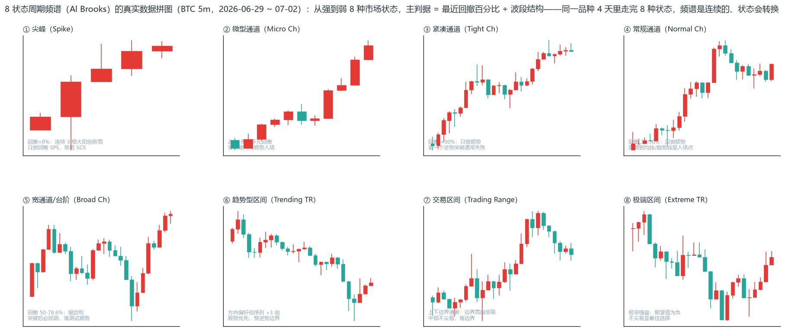
图 2-5R 真实数据：8 状态周期频谱拼图（BTC 5m，2026-06-29 ~ 07-02）——从强到弱 8 种市场状态各取真实片段，主判据 = 最近回撤百分比 + 波段结构：①尖峰 6/29 20:00 连续 3 根大阳创新高（+1.3%）②微型通道 6/30 00:25 11 根无回撤推进（+1.7%）③紧凑通道 7/2 09:00 回撤 16% ④常规通道 7/1 21:00 回撤 37%（+1.9%）⑤宽通道 6/29 08:40 回撤 122% 锯齿形 ⑥趋势型区间 6/29 11:20 偏空横盘 ⑦交易区间 6/29 16:40 边界 0.9% 清晰 ⑧极端区间 7/1 04:00 极窄 0.6% 横盘
这张图要读出三件事：
三窗口嵌套：同一个"现在"要在三个尺度上同时定位——长程背景（几十到上百根 K 线，决定方向偏好和磁力位）、近期结构（最近 40 根，决定通道/区间判定）、即时惯性（最近 8 根，决定 Always In 和信号质量）。三层互相验证后才进入决策；不同层状态矛盾时（如长程趋势 + 即时区间），以近期结构为准、降低交易频率。
通用转换规则（状态切换期的保命条款）： 1. 转换期间（两种状态之间），交易频率减到正常的一半——模糊期的胜率天然打折； 2. 转换确认后再调整策略，不要提前猜方向； 3. 转换信号不明确，维持当前策略直到信号清晰； 4. 每次转换后重新评估三个窗口的周期位置——状态换了，打法跟着换。
定位检查单（面对一组 K 线，按顺序问）： □ 20 均线方向？向上/向下/水平 → 定偏好的初步方向 □ 近期结构整体方向？有 HH+HL 序列吗？几组？ □ K 线重叠度？重叠多 → 偏区间；重叠少 → 偏趋势 □ 最近一波回撤占前一波推进多少？<30% / 30-50% / 50-78.6% □ 上下边界清晰吗？各测过几次？ □ 8 种状态里，哪个最像？备选是哪个？
做完这张清单，"市场看不懂"的时刻少一大半——看不懂 = 大概率在极端区间或转换期，那本身就是答案：等待。
答案：① 出现在 HL 处的——同样的形态，位置不同天差地别（2.2），阻力正下方可能是逆势或半空信号；② 有序的 HH/HL 排列（2.3）——没有就不算趋势，那是区间或混沌，别用趋势系统；③ 把读图从“感觉”变成固定流程——每根 K 线收盘后按固定顺序问结构/方向/信号，这是第 7 章流程化的读图版。
① K 线的语言——先读人，再读价
② 位置决定价值——先看位置，再看形态
③ 趋势与结构——别跟结构争辩
④ 支撑与阻力——一群被套的人
⑤ 量价与缺口
⑥ 无交易环境与逐棒纪律
⑦ 尖峰——趋势的引擎
下一章进入具体的入场信号：假突破、pin bar、吞没、内包线——它们都是本章“位置+形态”的具体化。
阅读提示：本章是信号词典——假突破、pin bar、吞没、内包、顺势信号等。先记住 3.1 的信号质量三要素（背景 × 位置 × 形态），再学单个信号；所有信号都要挂在总纲下面用，脱离背景的形态只是噪音。
上一章你学会了读图——看懂谁在赢、位置在哪、哪里埋着止损。这一章解决那个最实际的问题：到底什么时候进场？
先给你一个贯穿全章的总纲，请务必记住：
信号不是“看到形态就进场”，而是“位置先对，形态只是最后一道确认”。
很多人学了一堆形态——锤子、吞没、早晨之星——然后满图找形态，找到就进。这是错的。形态本身不值钱，形态出现在对的位置才值钱。这一章的每个信号，你都要先问“位置对不对”，再看“形态好不好”。
所有信号，都用同一个框架判定，按优先级排：
背景(HTF方向) 与信号一致? --否--> 放弃
|是
v
位置(关键位) 信号在支撑/阻力/结构点上? --否--> 放弃
|是
v
形态(信号K) 质量合格? --否--> 放弃
|是
v
入场(按第6章仓位公式算好手数后执行)
关键在“×”这个符号：信号质量 = 背景 × 位置 × 形态，三者相乘，缺一个就是零。背景错了（逆势），形态再漂亮也是零；位置不对（半空），背景再顺也是零。这就是为什么“看到一个漂亮的锤子就进场”会反复亏——你只看了三个因子里的一个。
怎么把框架用起来：入场前按顺序过三道闸，任何一道不过就放弃：
三道闸全过才入场。这个流程看起来简单，但它把“感觉”替换成了“清单”——第 7 章会讲，这是对抗情绪的唯一工程化方法。
把这个流程画出来，就是图 3-1：
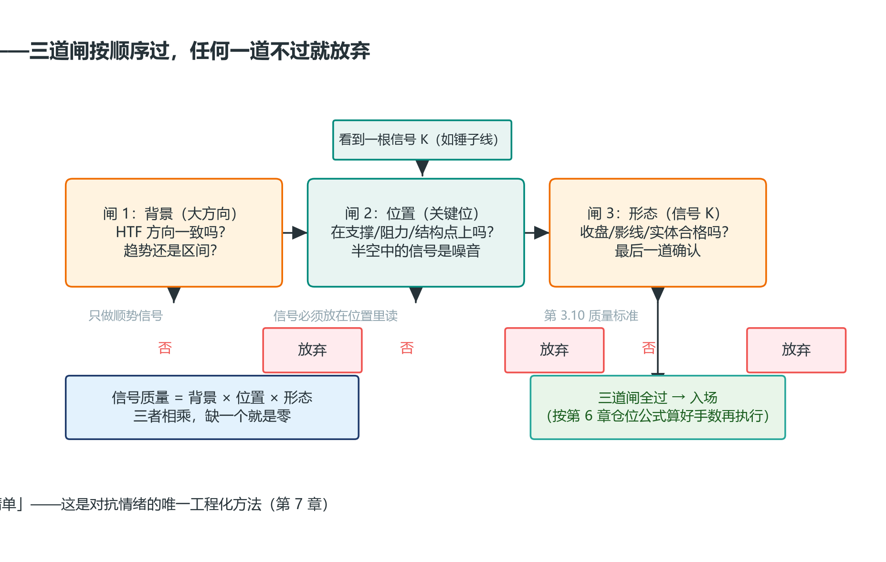
图 3-1 判定框架：背景 × 位置 × 形态——三道闸按顺序过，任何一道不过就放弃
三个“否”分支通向同一个词：放弃。注意放弃是免费选项——放弃一个信号的成本是 0，而进场一个背景错误的信号，成本是一个止损。顺序也有讲究：先查背景（最便宜，看一眼 HTF 图就够），再查位置（中等），最后才看形态（最贵，要等这根 K 线收盘确认）。先做便宜判断，不过就撤，一分钱不花；倒过来先研究形态再查背景，等于把最贵的步骤用在了大概率被否决的信号上。
如果这一章只能留一个信号，那就是假突破。先给你一个洞察，理解它你就懂了为什么：
假突破之所以有效，是因为它是“别人亏钱的地方”。一批人的止损刚被扫掉，他们被迫离场，而他们的离场，恰恰成了反向行情的燃料。
看图理解这个机制：
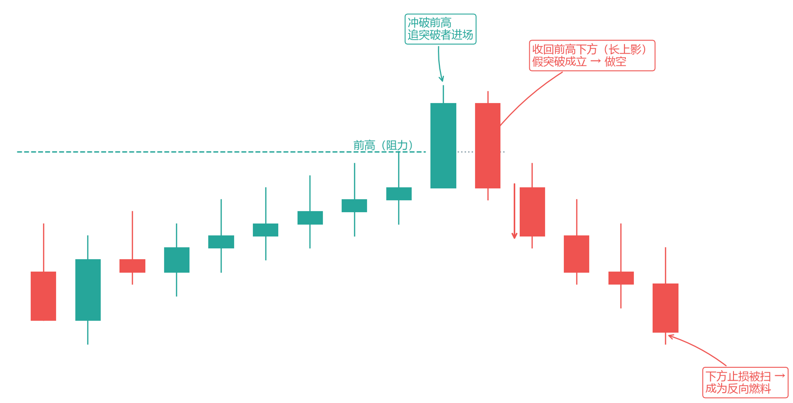
图 3-2 假突破：冲破前高后收回，扫掉追突破者
价格来到前高（阻力）附近。然后某根 K 线冲破了前高——这一刻，两类人被卷进来：追突破做多的人进场了，而做空的人的止损（挂在前高上方）被触发了。但注意那根 K 线：它冲高后没能站住，收盘被拉回了前高下方，留下一根长上影。
这意味着什么？冲上去的买盘没有后续，而上方等着卖的（止损盘+获利盘）把价格砸了回来。突破是假的，是“诱惑”。于是接下来，刚才追突破做多的人开始亏钱，他们的止损又成了往下走的燃料——行情反向往下走。
用法：在假突破的反方向入场。假突破前高→做空；假突破前低→做多。止损放在假突破的极值外（那根长影线的顶端外）。
两个必须：
执行细节：假突破的入场有两种——激进版（收盘确认后立即市价进）和保守版（等价格回踩关键位时挂限价进）。激进版成交确定但价格差，保守版价格好但可能不成交。固定一种，别混（第 4 章系统设计）。
为什么它是“最重要”的信号：因为它直接建立在“止损被扫”这个机制上，而止损聚集是市场里最确定的结构（第 2 章讲过，关键位下方埋着止损）。后面第 5 章 SMC 的核心概念“sweep（扫流动性）”，本质就是假突破换了个名字。你现在把假突破学扎实，第 5 章就水到渠成。
真突破三条件（Brooks 规则库，PA-18）：假突破的反面是真突破。怎么在突破发生时就判别？Brooks 给三个条件，至少前两条成立才算真突破：
三者不全 → 按假突破处理（wait 或准备反向）。这就是 3.11 Ali 数据的"FT 48%"的判据来源：突破棒本身的形态 + 下一根的跟随，决定了它属于 48% 还是 52%。
失败的失败（Breakout Pullback）：比假突破更高一层的结构——突破失败了，但失败尝试本身也失败了，价格重新回到原突破方向。
剧本（四步）：价格假突破关键位 → 逆势方进场 → 价格快速收回并朝原方向推进 → 逆突破者全部被套。
用法：这是“可靠的突破回踩/二次入场”——逆突破者被套后，原方向往往加速。突破失败后价格重新回到原方向时，优先按 H2/L2 或二次入场框架顺势进场——执行细节即第 4.21 突破单模型二（失败的失败），止损放在测试低/高点外 1 跳。
FOFS 的两个硬条件（南桥）：① 时间限制——突破-失败-再突破必须在关键位被突破后的 3 根 K 线内完成（拖得越久，“重新突破”越可能是新趋势的起点而非失败的失败）；② 实体要求——第一次突破必须是实体收盘突破而非影线刺透，影线刺透后的“回收”不构成失败结构。这两条与 4.21 模型二的规则完全一致，入场/止损的具体写法见那里。
放弃 K 线（Give-up Bar，Ali）：假突破的最终形态——一方彻底放弃，是反转的高概率预警。
三个成立条件（必须同时满足）：
三条齐备 = 多头“放弃”了这波行情，之后通常跟随两段式下跌（2LD）（呼应 2.8 两段式移动）。
反直觉的一点：信号出现 ≠ 立刻反向。这根“失败”的突破线可能并非完全失败——放弃 K 线之后经常先走出同方向的两条腿（第一腿强劲）；只有市场没有强烈改变方向时，才可能先出现 2 根反向 K 线再反转。所以正确的做法是：等放弃 K 线之后的回调结构出现，再动手。
回调方式决定后续强弱（操作判据）：
记忆：放弃 K 线 = 突破缺口被关上的那一刻，等于“一方已投降”——顺投降方向做，等它走两段（呼应 3.11 缺口降级为 EG 的量化版）。
支撑位下方的反转 = 更高概率（Ali）：市场测试支撑位下方之后的反转，是高概率买入信号——比在支撑位上方直接反转更可靠；如果市场第二次测试支撑位下方并形成第二次反转（2Rev），概率比第一次更高。逻辑：跌破支撑 = 扫掉支撑下方的止损单 = 流动性被收割，随后的反转没有止损盘的压制。用法：突破支撑假跌破后，等收盘收回支撑上方再入场，别在假跌破形成过程中抢跑。
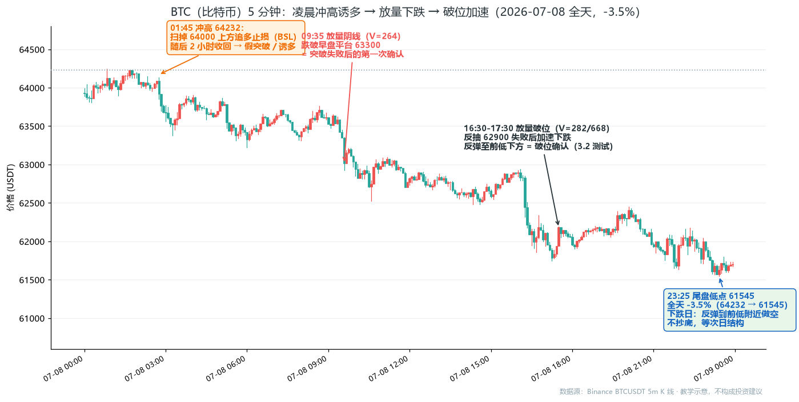
图 3-1R 真实数据：凌晨冲高诱多 → 放量下跌 → 破位加速（BTC 5 分钟，2026-07-08，较前收 -3.7%）
真实的一天，把 3.1-3.2 的框架走一遍：① 背景：7/07 收 63930，7/08 凌晨平开 63930——7/06 高点 63999、7/07 盘中曾冲 64700 未站稳又收回，64000 一带是多次冲击未果的高点区，属于“位置一般”的追多环境；② 假突破：01:45 冲到 64232 扫掉 64000 上方追多止损，但 2 小时内就跌回 63600 下方——突破失败，诱多成立，此时只停止做多，不急着反手；③ 第一次确认：09:35 放量阴线（V=264）跌破早盘平台 63300，动能转空——这是顺势做空的第一入场点；④ 破位加速：16:05 反抽 62941 失败，16:30-17:30 放量（V=282/668）跌破前低——第二次做空机会（破位后的回抽）；⑤ 纪律：尾盘低点 61545，较前收跌约 -3.7%（较日内高点则 -4.2%），反弹到前低下方才是空头加仓点，追跌不划算。五个步骤全是收盘确认，没有一次“抢跑”。
这是最经典的反转形态。一根 K 线，影线至少是实体的 2 倍，实体很小，缩在整根 K 线的一端。
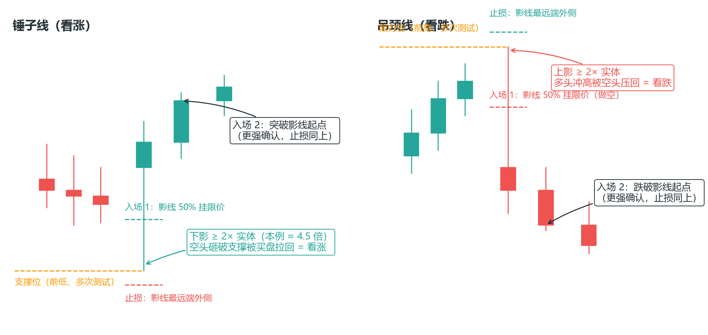
图 3-3 Pin Bar：锤子线（看涨）与吊颈线（看跌）——影线 ≥ 2 倍实体，两种入场与止损标注
左：锤子线（长下影，看涨）出现在支撑位；右：吊颈线（长上影，看跌）出现在阻力位。两边的规则完全对称：入场 1 在影线 50% 位置挂限价（成交率高、止损小），入场 2 等突破影线起点（确认更强，固定一种别混）；止损一律放影线最远端外侧（3-2R 是锤子线的真实数据版）。
逻辑：长下影=空头曾把价格砸下去，但被更强的买盘拉了回来——卖方进攻失败。所以锤子线（长下影）是看涨信号，吊颈线（长上影）是看跌信号。
用法：
质量评分（满分 5，≥4 才做）：
这个评分表就是 3.1 框架的具体化——把“背景×位置×形态”拆成可打勾的项。每一项都是客观的，没有“感觉”的空间。
失败案例：下降趋势中途冒出一根锤子线，下方没有任何支撑，你逆势做多——大概率继续跌。锤子只在“位置对+方向对”时才是信号，孤立的锤子是噪音。
影线 50% 挂单的具体操作：假设锤子线最低 100.00、实体下端 100.80（下影 0.80，实体收在 100.80 附近）。影线 50% 位 = (100.00 + 100.80)/2 = 100.40。在 100.40 挂限价买单，止损放 99.90（影线最低点下方），目标看前高。价格回到 100.40 自动成交——成交价精确、止损距离短、盈亏比天然好。
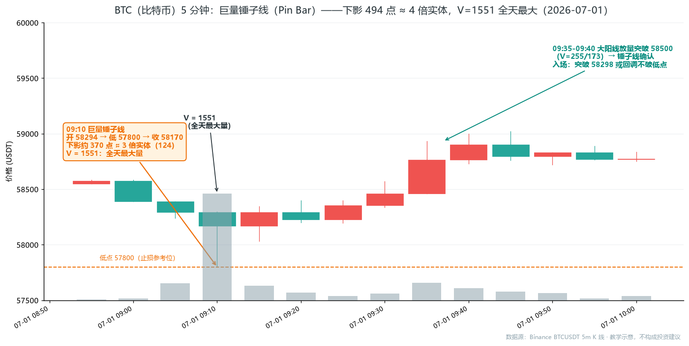
图 3-2R 真实数据：巨量锤子线——下影约 370 点 ≈ 3 倍实体，V=1551 全天最大（BTC 5 分钟，2026-07-01）
把上面的规则套进真实的一根 K 线：① 形态：09:10 这根 K 线开 58294、最低 57800、收 58170——下影约 370 点，实体只有 124 点，下影 ≈ 3 倍实体，教科书级锤子线；② 量：V=1551 是全天最大量，是平常 K 线的 10-30 倍——巨量 + 长下影 = 空头全力砸盘被多头全盘接住，这是信号可信度的第一权重（3.6 量价确认）；③ 位置：砸到的 57800 正是 7/01 早盘多次测试的平台下沿，支撑位下方的插针（呼应 3.2 的“支撑下方反转更高概率”）；④ 确认与入场：09:35-09:40 连续放量大阳线（V=255/173）突破 58500——锤子线确认成立，入场点在突破 58298（锤子线高点）或影线 50% 位回调挂单，止损 57800 下方；⑤ 结果：后续 HH/HL 一路走到 59457（见图 2-1R 同一天的趋势结构）。注意失败情形也一样真实——锤子线出现后若 09:35 没有放量确认而是跌破 57800，这根锤子线就只是下跌中继。
一根 K 线的实体，完全包住前一根 K 线的实体，方向相反。
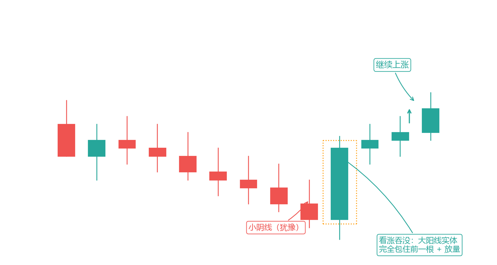
图 3-4 看涨吞没：大阳线包住前一根小阴线
逻辑：前一根还是空头在压（小阴线），下一根多头直接发力，把前一根的实体整个吞掉——力量在一根 K 线内完成了反转，而且带着速度。这种“干脆利落的反转”比锤子线更有力量感。
用法：吞没 + 关键位 + 顺势 = 高胜率组合。两个增强条件：
实例（看图）：一段下跌后，价格到了支撑位，先出一根小阴线（犹豫），紧接一根大阳线完全包住它且放量——这就是看涨吞没，入场做多，止损放在吞没 K 线低点下方。
吞没 vs 锤子的选择：两者都是反转信号，但性格不同。锤子线给出的是“拒绝”（下方有人接），吞没给出的是“反攻”（多头主动吃掉空头阵地）。吞没的力量感更强，但要求更苛刻（实体必须完全包住前一根）——信号更少，质量更高。把两者都写进规则书，但每种信号单独统计胜率（第 8 章），不要混在一起算。
当前这根 K 线的最高、最低，都缩在前一根 K 线的范围之内——像被“包”在里面。
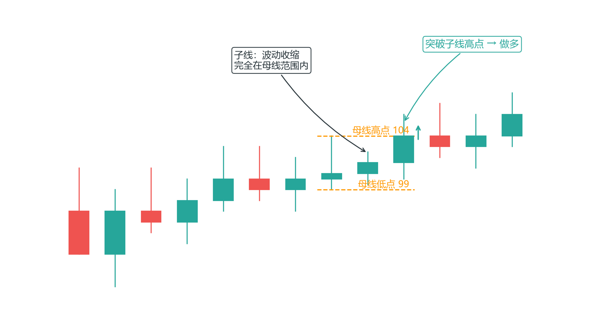
图 3-5 内包线：波动收缩，等待突破方向
逻辑：波动突然收缩=市场在犹豫、在蓄力。就像弹簧被压缩。接下来往哪突破，就是市场给出的答案。
用法：突破子线（内包那根）的高点做多、跌破低点做空。趋势中，只做与趋势同向的那个突破（上升趋势只挂子线高点上方的做多单），反向不追——这能过滤掉一半噪音。
进阶玩法：内包线先向一个方向突破、又快速收回母线内——这是“内包线假突破”，反手做，止损放假突破极值外。它就是 3.2 假突破的缩小版。
执行细节：内包线是“挂单触发器”的最佳载体——你不需要盯着盘等确认，直接把单挂好：上升趋势中，在子线高点上方挂限价买单（突破单），触发即成交，止损放子线低点下方。挂好单之后，它自己会执行——这是把“等待”交给市场，把“执行”交给机器（第 7 章流程化思想）。
内包线的价值在于：它是一个让市场替你决策的触发器——你不猜方向，等市场用突破告诉你。
内包线的背景概率（Ali）：内包线本身没有方向，方向全在背景——三组概率直接背：
止损细节：内包线做突破时，止损放在外包线（母线）高点上方 2 个跳动点而不是子线极值——市场常先小幅刺穿再走方向（呼应 4.13 止损表）。
孕线内的“高抛低吸”（Rose 视角）：在无方向的区间里，孕线不是“等突破”的触发器，而是被套者的摇篮——机构在大母线范围内反复高抛低吸，扫的是两边追突破的人（附录 C.9 主题 4）。避免孕线突破被套的三条：① 区间背景的孕线突破 60-80% 失败（呼应上文概率），不追；② 真想参与，等孕线假突破被套后的反向（孕线假突破反手，见上文“进阶玩法”）——被套方止损回补就是燃料；③ 只在大母线边界反手、止损放母线极值外，别在母线中间站队。
任何信号入场前，过一遍量价三问（呼应第 2.5 节）：
三问全过=做；两问不过=等下一个。记住第 2 章的限定：外汇的量是 tick 近似，只能当参考；期货的量才真。
量价三问的用法：这不是第四个入场条件，而是给前三道闸的“评分器”——形态合格后，用量给它打个分：三问全过 = 高质量信号，可以按规则入场；一问不过 = 降级处理，等更好的位置或更明确的量；两问不过 = 放弃。这样“量”就从“模糊的感觉”变成了“可执行的规则”。
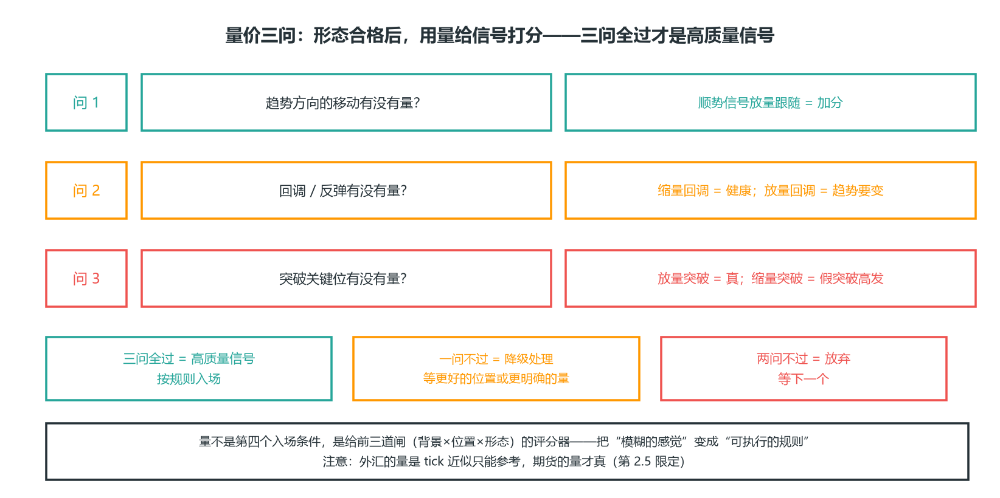
图 3-6 量价三问评分器：三问全过=高质量信号可入场；一问不过=降级处理；两问不过=放弃
指标背离（RSI/动量）——领先信号，不是入场信号：价格创新高但指标（如 RSI）没有创新高，叫顶背离（bearish divergence）；价格创新低但指标没创新低，叫底背离（bullish divergence）。读法要点：
高胜率组合（顺势+位置+形态三合一）：
低胜率组合（逆势+半空位置）：
怎么用这张表：高胜率组合是你的“主力 setup”，做它、统计它（第 8 章）、优化它。低胜率组合是“不该做的清单”——把它写进规则书的原因，不是为了“万一可以做”，而是为了在盘中止住你的手。你不需要回避所有低胜率组合，但你必须先知道它们是低胜率的——大多数人是在连亏之后才意识到自己在做低胜率单。
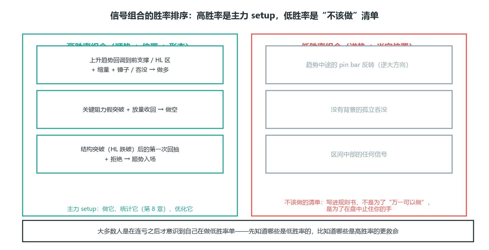
图 3-7 信号组合的胜率排序：高胜率（顺势+位置+形态三合一）是主力 setup；低胜率（逆势+半空位置）是不该做的清单
除了单根形态，几个经典多根组合（同样原则：要有位置和背景）：
启明星/黄昏星（三根反转）：大阴+小实体（星）+大阳，且大阳吞没第一根实体过半→看涨；黄昏星是镜像→看跌。中间的“星”是犹豫的象征——市场在两根大 K 线之间停顿了一下，然后掉头。停顿越干净（实体越小、影线越短），反转信号越强。
红三兵/三乌鸦：低位三根连续阳线（每根开盘在前一根实体内、收盘接近最高）→趋势启动；三乌鸦镜像。注意高位三根大阳后警惕衰竭（第 2.8 高潮 K 线）——三兵是“启动”信号，出现在高位时可能是“最后一冲”。
平头顶部/底部（Tweezer）：相邻两根 K 线高点（或低点）几乎相同——同一位置被两次拒绝=支撑/阻力确认。平头是“位置”的 K 线版表达：两根 K 线都在这同一个价位被拒绝，说明那里有人持续在卖（或买）。
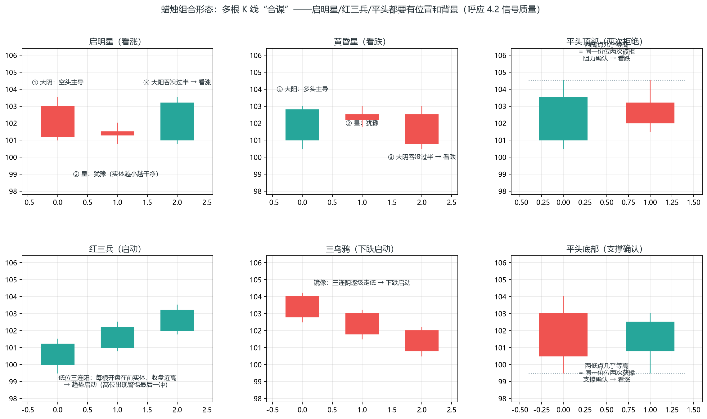
图 3-8 蜡烛组合形态六连图：启明星/黄昏星、红三兵/三乌鸦、平头顶/底——多根 K 线“合谋”（合成示意）
三组镜像对照着记：① 启明星/黄昏星是“大 K 线 + 犹豫的星 + 反吞”的节奏反转；② 红三兵/三乌鸦是“步步为营”的趋势启动；③ 平头是“同一价位两次被拒”的位置确认。共同原则：单根形态讲“形态”，组合形态讲“节奏”——但都要有位置和背景（呼应 3.1 信号质量 = 背景×位置×形态）。
K 线形态是微观（1-3 根），图表形态是中观（几十根）。分反转和持续两类：
反转形态：
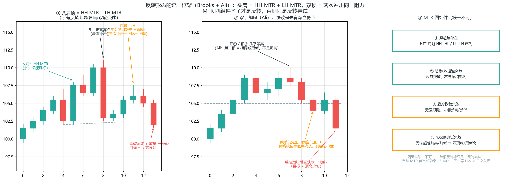
图 3-9 反转形态的统一框架：头肩顶 = HH MTR + LH MTR 的拼图；双顶熊旗（第二顶相同或更低 + 隐含低点）；MTR 四组件缺一不可（合成示意）
图 3-9 的三个要点：
Brooks 的补充：所有反转都是双顶/双底的变体。Al Brooks 把反转形态统一成一个底层结构——主要趋势反转（MTR，Major Trend Reversal）：市场测试趋势的极点，决定突破新高/新低还是反转。在这个框架下：
完整 MTR 的四组件（PA-25）：别把单根反转棒当成 MTR。Brooks 的“主要趋势反转”有四个硬条件，缺一不可：
四组件齐全的完整 MTR，第一次反转尝试的成功率约 35-40%（多数失败变旗形或区间）；第二次反转尝试成为主要反转的概率约 40%——所以 Brooks 强调：优先等待 H2/L2 或二次入场，而不是第一次信号就冲。单根反转棒只能叫“反转尝试”（reversal attempt），不能叫 MTR。另注意：MRV（小趋势反转）≠ MTR——小反转多半只是回撤或进入区间，不要过早标 MTR。
Brooks 的楔形概率：上升楔形约 75% 概率空头突破，下降楔形约 75% 概率多头突破；水平三角形（对称）约 50/50 上下——三角形和楔形属于突破模式，不是反转模式，突破方向才是答案。另外：头肩形态在趋势中大多是旗形而不是反转（趋势末端 20+ 棒形成的横向区间=最终旗形，突破往往不创新高——这是反转前最后一个旗形，也是第 4.4 所说 TTR 的变体）。口径说明：不同资料对楔形突破概率的估计有差异（Ali/PA 资料称上升楔形约 35-40% 向上突破 = 60-65% 向下；Brooks 口径为 75% 空头突破）——两种口径都指向“上升楔形大概率向下”，交易执行上按“破位概率高、但顺突破方向也要等二次确认”即可，不必纠结精确数字。
楔形回撤 vs 楔形反转：Brooks 体系最重要的区分（PA-14）。同样是楔形，“顺势中的楔形”和“趋势末端的楔形”交易含义完全相反：
| 特征 | 楔形回撤（Wedge Pullback） | 楔形反转（Wedge Reversal） |
|---|---|---|
| 位置 | 趋势中段，与主趋势方向相反的楔形 | 趋势末端，与主趋势方向相同的楔形 |
| 规模 | 通常 10-20 根 K 线 | 至少 20 根 K 线 |
| 例子 | 上升趋势中的下降楔形 | 上升趋势末端的上升楔形 |
| 突破后 | 回到原趋势方向——顺势入场机会 | 趋势反转——反向信号 |
| 目标 | 楔形起点（前极点）、更高 | 楔形起点 + 楔形高度 MM |
判断口诀：先定主趋势方向，楔形方向与主趋势相反=回撤（顺大势做），相同=反转（警惕见顶/底）。K 线数辅助判断：<20 棒偏向回撤，≥20 棒偏向反转。初学者最容易犯的错是把形态名字当交易指令——“上升楔形”不自动等于做空（约 25% 的上升楔形向上突破、趋势延续），交易方向必须由主趋势 + 位置 + 突破质量 + 二次入场共同决定。
嵌套楔形（Nested Wedge）：大楔形内部往往套着小楔形——楔形、腿、两腿结构常嵌套在更大的形态里（交易区间的上/下腿本身常呈楔形，又嵌在更大的区间/楔形中）。嵌套越多，动能耗竭越彻底：大楔形未完成前，每个小楔形的突破都可能失败（被大结构吞回）。读图要点：看到嵌套楔形，别在小楔形破位那一刻就入场，等大楔形收口 + 突破确认（呼应上文“不完美形态 = 预计还有一次推动”：嵌套格局意味着主要运行模式尚未完成）。
楔形反转的时间目标（Brooks）：每当出现楔形顶部反转时，反转持续的时间通常是楔形宽度的一半——楔形走了 30 根 K 线，反转第一腿大约持续 15 根。这是“反转验证时钟”：第一腿如果很快夭折、收回楔形内部，多半只是楔形回撤（顺原方向）；能撑到半个宽度，反转才值得继续跟踪（再配合 MTR 四组件确认，别单靠“时间到点”就动手）。
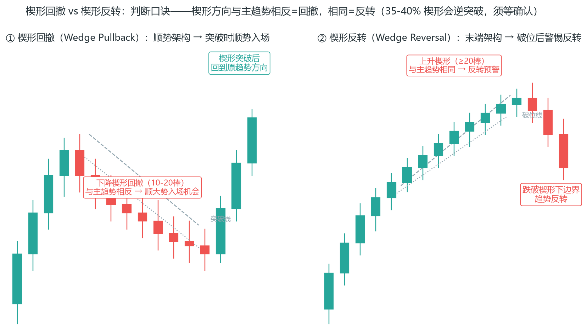
图 3-10 楔形回撤 vs 楔形反转：顺大势的楔形是入场机会，趋势末端的楔形是反转预警
抛物线楔形 = 高潮：还有一种变异——楔形不是收敛而是加速（三推一推比一推快），这是买入/卖出高潮（Buy/Sell Climax）的几何形态：最后的疯狂买入/恐慌卖出。抛物线楔形是趋势即将结束的强烈信号，但不是立刻反转——通常先进入交易区间，之后可能反转也可能继续；突破抛物线楔形后通常有深回撤，深回撤后可能二次测试极点。遇到抛物线楔形：禁止追原方向、禁止立刻反手——等深回撤和二次测试后的确认。
抛物线楔形的结构细节（Ali 补充）：抛物线楔形是紧密通道，有时需要 20 多根 K 线才能反转；构筑完成后市场通常横盘约 10 根 K 线再决定方向。它由三次明显的推升构成（看似尖峰但与尖峰不同——内含三次推进）；抛物线楔形顶部比底部更常见（当日低点形态比高点形态罕见得多）。末段耗尽判断：若抛物线楔形的末段走势尚未耗尽（出现衰竭缺口），反转所需 K 线数可能超出常规预期——别急着数 K 线等反转。背景决定结果：HTF 处于强势多头时，抛物线楔形给多头提供逢低买入机会，反转上行通常急剧有力，之后横盘整理让市场决定趋势恢复还是回测区间。
MTR 重置与不完美形态（Ali）：强力测试可重置 MTR 计数——买方回撤可重置买方限价单的 MTR 尝试次数；如果突破回调能将市场推至远低于既定突破回调低点之下，买方需要重新回到 EMA 再次启动反转处理。不完美形态 = 预计还有一次推动：不完美的 W 形态、看起来不太对劲的楔形，往往还会出现一次新的极端走势（不对称 = 不完整模式）；3 次突破失败的 BR 楔形、多重嵌套格局——都意味着主要运行模式尚未完成，别急着判定形态成立或失败。
MTR 之后常有最终测试（Ali）：反转方向错误的一方决心会产生严酷考验——当 MTR 形态完成时，大行情通常紧随一次“最终测试”之后：价格先朝反方向冲一把（测试失败方），然后才是真正的大行情。测试失败不必着急——等待后续跟进：趋势突破 + 失败测试 = 高概率入场。同时注意：逆势（反趋势）交易策略常常失败并成为旗帜——逆势测试往往来势汹汹、看似反转，实则多数会在相同位置失败（呼应上文“失败的 MTR 是常态”）。
头肩顶的另一种读法：HS = MTR = DBBLF = BOM（Ali）：所有头肩顶形态同时是市场顶部反转（MTR）、双底突破失败（DBBLF）与双顶突破失败（DTBRF）的形态结构，并将市场置于“突破底部”状态——顶部呈现双底突破失败、底部呈现双顶突破失败，颈线位同样构成反向形态结构。右肩常形成其他较小形态，有时嵌套一个较小的头肩形态。读图时四个名字是同一件事：看到头肩顶 = 看到一次失败的底部突破 = 看到 MTR。除非有良好的背景和强力设置，否则它只是 40% 的交易机会（呼应 2.8 反转概率）。
V 顶/V 底：罕见的意外反转（Ali）：V 形顶部较为罕见，暗示着意外反转——常由新闻真空测试触发；在较小时间框架下顶部形态微观时间周期反转后，即使在更高时间框架上也不可见。识别细节：① 多数 V 形顶/底部属于更大形态的组成部分（60 分钟图上的 DT、5 分钟图上的尖峰与 W 底）；② 多数 V 形顶至少包含一个微型 DT——微型下降趋势突破前期高点后形成的 PW 顶部；③ 反转下跌超过 ATH 时，突破新高的行情通常首先向下回撤而非继续上涨；④ 高潮经过 3 个连续高潮柱后出现 3 柱 STC 或卖出高点，是最终高潮前的线索；⑤ V 形底 = 急跌与飙升：大周期图表上强劲的尖峰与通道趋势形成强力支撑/阻力位，5 分钟图上的支撑位测试后形成高潮反转。
TRI：交易区间内部结构（Ali）：交易区间通常包含 3 或 4 个支腿；区间内的突破（BO）上升或下降概率约 50%——BO 失败的概率同样约 50%，失败后转为反向回调（PB）形态。区间顶部的突破大多失败（呼应 4.4：区间突破约 80% 失败）——所以区间内的突破不追，等失败后的反向。三重 BO 陷阱：TR 也可能出现 FBO——50% 概率出现 FBO、50% 概率出现 FFBO（失败的 FBO）；TRI 的 FBO 有时突然发生且市场快速走一大段距离；通常在突破前出现一个 TTR，突破迅速失败并困住早期交易者。
真实案例：V 型反转（上证指数日线，2026 年 3 月）——“V 底 = 急跌与飙升”的最好演示：
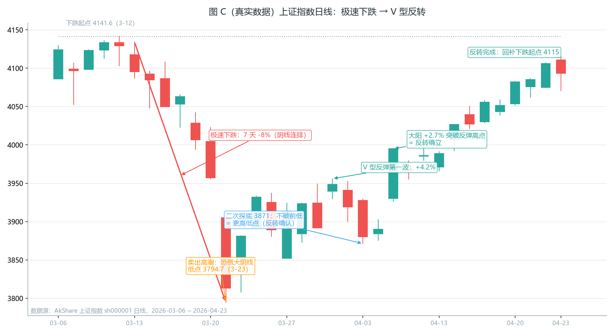
图 3-3R 真实数据：极速下跌 → V 型反转（上证指数日线，2026-03-06 ~ 04-23）
识别要点：3-13 起 7 天 -8% 阴线连排（极速下跌，禁止抄底）；3-23 恐慌大阴线砸出 3794.7（卖出高潮）；随后 V 型反弹 +4.2%；关键确认在 4-03/4-07 的二次探底——不破前低形成更高低点（呼应上文 MTR 四组件第 4 条“前极点测试失败”）；4-08 大阳突破反弹高点才确认反转；4-23 回补下跌起点。纪律点：V 底最危险的时刻是“看起来像底”的第一根反弹阳线——真正可靠的入场要等二次探底 + 突破反弹高点，在本例中 4-08 才出现。
真实案例：双顶失败 vs 双底成功（BTC 5 分钟，2026 年 7 月）——同一个“极值测试”，位置不同结局相反。左例是失败的双顶（第二顶更低 = 多头力竭），右例是成功的双底（第二底创新低 = 扫损后反转）——两个“失败形态”反过来都是高概率反向信号：
图 3-4R 真实数据：双顶失败 vs 双底成功——第二顶更低=追高被套（BTC 5m，07-29）；第二底创新低=扫损后反转（BTC 5m，07-17）
这张图要读出三件事：
为什么“失败形态”比标准形态更常见：Brooks 说双顶/双底很少完美，多数是“扭曲的”变体——而扭曲最常见的形式就是第二顶更低 / 第二底创新低（价格不喜欢精确对称）。这也意味着：等“完美双顶/双底”再动手，往往等不到；真正常见的交易是“失败形态的反向”——第二顶追多的人被套 → 顺势做空，第二底追空的人被套 → 顺势做多。
首次反转是交易区间的一部分（Ali）：趋势反转后出现的第一波反向运动，通常只是更大交易区间的一部分——别把首次反转当新趋势：区间顶部的首次反转测试后，价格大概率还会再回到区间；真正的方向选择需要第二波确认（呼应 MTR 四组件齐全才诊断）。
复杂顶部（连续顶部，Ali）：当顶部形态不干净、出现一连串"看似要反转但没反转"的复杂结构（连续顶部）时——约 70% 概率即将进入交易区间，极少数情况下市场持续上涨；约 60% 概率出现反向两波走势（两段式下跌）。这种顶部常伴随一系列买入高潮——结果是看跌反转或进入区间；无论哪种结果，追多者的止损至少会持续 10 根或更多 K 线（价格反复测试顶部区域，把追高者反复扫损）。若前期存在合理卖出点（2LT 反转后），市场有时必须先达到突破后的测量移动目标或测试磁吸位（看跌突破点），导致首个底部失败——首个底部失败 = 空头陷阱目标位（呼应 4.24 失败信号：被套方止损回补是反转燃料）。交易含义：连续顶部出现后别赌"这次一定反转"——先进区间的概率是 70%，等区间结构确认再站队（呼应上文"首次反转是交易区间的一部分"：第一波反转大概率只是区间，第二波确认才是方向）。
持续形态：
真实案例：上升楔形假突破（BTC 5 分钟，2026 年 8 月）——楔形收敛上推 → 突破前高 → 20 分钟跌回突破位（假突破）→ 持续阴跌 6.5 小时 -2%。“看跌形态的假突破”是最典型的失败交易之一：追突破的人在最高点入场，随后被全套住：
图 3-5R 真实数据：上升楔形假突破 → 持续下跌——楔形收敛上推后突破 64515，20 分钟跌回=假突破，破位后阴跌到 63251（BTC 5m，08-11）
这张图要读出三件事：
怎么把这张图变成规则：①楔形末端只做“突破后的回测确认”单，不做“突破瞬间”单（等突破后回测突破位不破再进场）；②突破 2-3 根 K 线内跌回突破位 = 无条件离场（不管盈亏）；③做空者在“跌回突破位”那一刻进场，止损放突破高点上方（64550），目标 = 形态高度投射（楔形最宽处 64180 → 64400 约 220 点，从突破位 64300 投射 ≈ 64080）——本例实际跌到 63251，超出目标 800 多点（呼应 3.9 量度功能：形态高度投射 = 最小目标，破位后常走过头）。 - 杯柄（Cup & Handle，Ali）：杯柄是“突破回踩”形态的泛化称谓——杆状部分是包含交易区间（TR）的基底形态，市场突破该区间后形成突破尖峰；手柄是突破后的回撤：需确保回调的最低点保持在突破点上方（维持突破缺口 BOG 的有效性）；理想情况下回撤段的 K 线数约为突破阶段的一半，若回踩持续过长（如 20 根或更多 K 线），市场将重新进入突破前震荡状态。C&H 是宽幅震荡区间内的三角形整理形态：仅看三角形时上下突破概率均等，但位于宽震荡区间内且多头趋势持续时，尽管存在 50% 概率先出现假突破，最终向上突破的概率更大。 - 矩形（Rectangle）：价格在两条平行水平线之间反复横跳的整理形态（学委知识库补充术语）——本质是没有楔形收敛的旗形：上沿阻力、下沿支撑都清晰，来回摆动 3 次以上。操作与区间交易完全一致（第 4.4 系统二）：边界反手、突破才追、突破需放量确认。矩形突破后按形态高度投射量度目标（MM）。矩形和楔形的区别只在边线：矩形两条边平行水平，楔形两条边收敛。趋势中段的矩形 = 旗形换挡（延续），趋势末端的宽矩形 = 最终旗形（警惕反转，呼应 3.12 模式二）。
通用规则：
第 3.1 节讲了“背景>位置>形态”，但“形态”这一项本身也有质量高低。Al Brooks 对“信号 K”（触发你入场的那根 K 线）有一套细致的质量标准——同样是一个锤子线，质量可以差很多。
强信号 K 的特征（以做多锤子为例）：
Brooks 的精确化标准（pa_notes 的清单）：Brooks 的课程笔记把强信号棒量化成可以逐条打勾的清单：
同时，买卖压力是突破能否成功的最早征兆：阳线内部向上推进的力度（实体占比）、连续几根 K 线的方向一致性，就是“买压/卖压”的可视化。反转若缺乏压力，大概率只是小反转（进入区间，而不是相反趋势）。
弱信号 K：收盘收在中间或不利端；实体太小（接近十字星，犹豫）；上下影都长（方向不明）。
入场 K 确认：Brooks 还区分“信号 K”和“入场 K”。信号 K 给提示，你挂单等突破；真正触发成交的那根叫入场 K。好的入场 K 应该朝你的方向走——如果入场 K 一出现就反向跌破你的入场点，是坏兆头，说明时机不对。
接回本书：3.3 的“质量评分”、3.4 的“前一根越小越好”，本质都是在评估信号 K 质量。Brooks 把它系统化了：位置对是前提，信号 K 质量决定这笔的“起跑线”。
内包线与外包线（Ali 研究的补充）：突破白皮书研究（作者 Ali Moin-Afshari，附录 C）给这两类 K 线补上了概率：
图 3-11 信号 K 的质量：强信号 K（做多锤子：收盘高位+阳线+长下影+假跌破收回+强跟进）vs 弱信号 K（收盘中间+实体太小+上下影都长）——位置对是前提，信号 K 质量决定起跑线
突破是本书系统三的核心，但“突破后到底有多少概率继续”，多数人凭感觉。Ali Moin-Afshari 的突破白皮书用 2023 年的 E-mini 5 分钟数据给出了量化基准（他的信号经 Al Brooks 验证）：
突破（BO）信号：价格超过前一根 K 线高低点至少 1 tick 即算突破；“后续 K 线”（FT，follow-through）确认成败。统计结果：
四个筛选器（Ali 研究直接可抄）：
加入这些筛选后，Ali 的突破系统 SQN 从 6.3 提升到 8.9，胜率从 76% 到 86%（SQN 的定义见第 8 章）——分步看：剔除第 3-4 波段先让胜率 76%→83%、SQN 6.3→7.4；再加“10:10 前不入场”才到胜率 83%→86%、SQN 7.4→8.9。每条筛选器都在实打实地过滤亏损单。这套数据给本书系统三的启示：突破不是“看到就追”，而是“第一波成立 → 等第二波回调 → 避开末段 → 控制时段”——这和 3.2 假突破、4.5 回踩入场是同一件事的量化版。
突破的机制底色（Tefi 课程的补充）：Ali 给了概率，Tefi（太妃）课程解释了“为什么”——突破的本质是一次“打破均衡”的行动：
图 3-12 突破的四种结果：成功/回调/失败/反转——所有影线都是失败的突破
突破后必有测试（L04A，市场对失衡的自我调节）：突破发生、急速运动结束后，价格几乎必然折返回突破点——这就是测试。为什么必然发生？因为突破制造了失衡：
充分测试的量化定义（4 tick 窗口，Ali）：测试“充分”与否可以量化——价格达到目标后在 -1 到 +3 tick 之间停留 = 充分测试（测试方获得了它想要的）；一旦超出 4 tick，测试无效（要么失败测试、要么是新突破）。未充分测试的水平，市场通常会回头再测。完美测试的后续：突破点被精确测试到最小价格变动单位、且回调不超过或重叠突破点 = 完美测试，之后市场通常回调再次测试突破点（2nd Test）——如果第二次测试跌破突破点，突破买方很可能已失败（呼应上文“回调深浅 = 四批人投票”）。用法：等“充分测试”发生后再动手，别在测试进行到一半时抢跑。
图 3-13 突破后必有测试：价格折返突破点，四批人共同决策，票多的赢、票少的输
80-20 法则：一切突破决策的总纲（PA-18）：把以上所有内容压缩成两条记忆：
区间中约 80% 的突破尝试失败——默认不相信突破，顺方向边界优于追突破。 趋势中约 80% 的反转尝试失败——顺势突破（趋势恢复）更可信。
这就是为什么 3.12 说“概率最低的三类（通道追单、末段突破、区间追突破）恰恰是新手最爱做的”。改变惯性需要：强突破棒 + 跟随 +（可选）缺口。三条里缺两条，默认假突破；两条以上成立，才考虑追。这张表背下来，突破类交易的方向就清晰了：在区间里等边界反转，在趋势里等顺势回撤，别把两者搞反。
Al Brooks 的缩写词典（附录 B）里藏着他对“哪些模式值得专门学习”的排序。本节把十种最佳模式连同概率底色一次讲清——它们是整本书信号库的“精华名单”，剩下的都是变体或噪音。
信号线的四级可靠性排序（诊断）：① 与交易方向同向的趋势 K 线（最强信号线）；② 标准反转 K 线；③ 短 K 线/内包线（需市场环境支持）；④ 反方向的十字星或趋势 K 线（风险最大）。新手只做第一种：做多只选阳线信号棒、做空只选阴线信号棒——“在你希望的一方至少控制信号线之后进场，总是更优的选择”。
模式一：趋势反转（约 40% 概率）
反转的量化底色（突破 Rev+FT）：模式一的“40% 反转概率”在白皮书里有更细的拆解——反转 K 线本身获得持续行情（FT）的概率约 33%（1306 根样本中 430 根）；一旦第二根 K 线收盘确认，即时 FT 概率升至 64%（但直接达 1R 仅 20%、2R 仅 9%，平均只走约 2.5 根 K 线）；回调之后出现第二波段的概率接近 90%（70% 与第一波等大、20% 是第一波的两倍）——反转交易的钱同样在第二波，不在反转那一下。反转枢轴点：80% 的反转枢轴点由结构 K 线 1 或其前一根形成，提前两根以上形成的大多失败；10% 的样本中 K 线 1 是内包线、未促成枢轴点，但这类结构 90% 获胜。时间规律（与突破相反）：开盘 9:30-10:05 的突破失败率 > 70%，但同一时段的反转结构几乎没有亏损交易（样本较小）——开盘追突破是陷阱，开盘做反转（顺势方的第一次失败）反而胜率高。
反转确认需要几根 K 线（Ali）：判断“趋势已结束并反转”，具体数量取决于上下文——三档标准：① 1 根巨大的趋势 K 线，收盘位于极端位置；② 2 根连续的大尺寸 K 线，收盘价高于中点（看涨）；③ 3 根连续的常规尺寸 K 线，收盘价高于中点（看涨）。十字星场景例外：信号棒是十字星时，曾出现过需要 4 根连续 K 线才确认反转的案例——信号越犹豫，确认成本越高。
二次入场与 60/40 规则（PA-15）：为什么模式一说“反转概率只有 40%”？因为第一次反转尝试多数失败——第一个反转信号经常被测试并失效，强趋势中尤其如此。所以 Brooks 的核心纪律是：先等二次入场，再谈反转。什么是二次入场？
60/40 规则（Brooks 的结果分布统计）：约 60% 的交易是小盈亏（小赚+小亏，相互抵消）；约 20-30% 的交易产生大利润（趋势交易）；约 10-20% 的交易产生大亏损（止损被打后市场反转）。真正的交易优势不在胜率，而在：小盈亏 ≈ 0，大利润 >> 大亏损。二次入场通过减少“小亏损”的数量改善整体盈亏比。两个误用要避开：60/40 不是“频繁交易的依据”，而是结果分布；也别忽略大趋势交易——利润主要来自少数大趋势单，不要频繁止盈。
二次入场的时间窗口：通常在第一信号后 6-12 根 K 线内出现（当前周期等待不超过 2 小时，即 24 根 5 分钟 K 线）；超过窗口未出现就放弃该思路。二次入场失败后不再尝试第三次——同一方向连败两次，说明结构判断错了，重新评估市场状态。
二次入场价陷阱（PA 二元决策 §9.6）：二次入场的“价格”本身也是信号——如果二次入场价格明显优于第一次，可能是陷阱或原结构误判。反过来，二次入场价格与第一次相同或略差，说明市场要求为更多确认支付成本，结构反而更健康。分界要清楚：边界/回撤处的计划型限价单挂更优价是正常操作（那是“等价格来找你”，不是二次入场）；H1/H2/L2 计数类二次入场若价格明显更优，优先等待或重判结构——别贪这个便宜。
低质量信号棒的 K0 触发逻辑（二元决策 §9.0）：当前信号棒（K1）质量低（十字星、doji、长外包棒）时不直接放弃——下一根 K 线（K0）可以“拯救”这笔：
模式二：最终旗形（Final Flag）
图 3-14 最终旗形：趋势末段的旗形突破失败，反转概率约 40%，反转幅度常与趋势等长
模式三：突破（Breakout）
模式四：高 2 / 低 2 旗形（H2/L2）
H1/H2/L1/L2 计数速查（PA-19）：Brooks 的柱计数不是玄学，是精确的逐棒规则：
图 3-15 高1/高2 计数：第一次回调突破前棒高点=H1，第二次回调突破前棒高点=H2——反转/边界场景必须等 H2
模式五：楔形（三推）
图 3-16 楔形三推：P1/P2/P3 依次推进后破位，上升楔形向下破（破位概率约 75%）
模式六：通道（Channel）
模式七：测量移动（Measured Move）
图 3-17 测量移动：Leg 1 = Leg 2，第一段长度投射第二段目标位
模式八：区间反转（BLSHS）
模式九：开盘反转（Opening Reversal）
图 3-18 开盘反转：开盘 60-90 分钟窗口内假突破前高后收回，失败率 > 70% 后反向
模式十：磁力位（Magnet，BRN 附近）
一句话记忆：反转看 40%（趋势反转、最终旗形），突破看 48%（FT），楔形破位 75%，通道突破只有 25%，区间突破 80% 失败——概率最低的三类（通道追单、末段突破、区间追突破）恰恰是新手最爱做的。
答案：① 假突破（3.2）——被扫止损的人被迫离场，他们的离场成为反向行情的燃料；② 收盘确认（盘中插破不算数）+ 配合量能（突破/收回放量才高质量，3.2）；③ 位置不过关，乘号上有一个零，整个信号质量就是零（3.1）——背景顺、形态漂亮都不抵位置不对。
① 信号总纲——背景 × 位置 × 形态
② 最核心的信号——假突破
③ 突破的概率底色与投票机制
④ 形态速查——楔形 / MTR / 回调计数
⑤ 数字背下来
下一章把这些信号组装成完整的交易系统——光有信号还不够，你还需要止损、目标、仓位、和“什么情况下不做”。
阅读提示：本章是全书最重的一章——把信号变成系统。主线必读篇一（状态机）与篇二（出场，期望值的另一半）；篇三高级入场结构、篇四补充系统（ORB/均线趋势跟踪/配对交易）按需查阅；最后 4.29“一个交易日走一遍”把全部串起来，建议通读后再回到本篇。
上一章你有了信号——知道何时进场。但这里有个残酷的事实，先给你：
会看信号，不等于会交易。信号只是扳机，系统才是整把枪。
为什么？因为一笔完整的交易，远不止“进场”这一个动作。进场之后呢？止损放哪？目标看哪？下多大仓位？涨了一点要不要先跑？跌了要不要扛？这些问题，如果你没有事先写死的答案，那么每一次你都会在盘中的情绪里临时决定——而情绪里的决定，几乎都是错的。
这一章就是把“信号”升级成“系统”：一套你事先写死、可以重复执行、不依赖临场发挥的完整规则。
这一章共 28 个小节，是全书最厚的一章（其他章平均不到它的三分之一）。为了不让你一上来就被淹没，把它分成四篇，彼此独立、可单独阅读：
| 篇 | 范围 | 解决什么 | 定位 |
|---|---|---|---|
| 篇一 系统与状态机 | 4.1-4.11 | 四个入场系统 + 状态机切换 + 仓位/目标框架 | 必读：最小系统的核心 |
| 篇二 出场：期望值的另一半 | 4.12-4.20 | 止盈、分批、保本、移动止损、完整生命周期 | 必读：期望值靠出场兑现 |
| 篇三 高级入场结构 | 4.21-4.25 | 突破单/限价单/always-in/外包/禁止清单 | 进阶：第一遍可跳过 |
| 篇四 补充系统 | 4.26-4.28 | ORB 开盘区间突破/均线趋势跟踪/配对交易 | 选学：实战后按需读 |
| 收尾串讲 | 4.29 | 一个交易日走一遍：状态机随时间切换 | 复习：概念变肌肉记忆 |
建议：第一遍只读篇一 + 篇二（配合第 6 章仓位公式），已经是一套完整可执行的系统；篇三是给这套系统加深度和鲁棒性的，等你觉得“信号不够用”或第二遍复习时再读；篇四是工具箱扩展——换三种“赚钱方式”的备选系统，实战 100 笔、主线验证通过后再按需选学。
先想清楚一个区别。信号回答的是“这里能不能进”。但一笔交易要回答六个问题：
只解决第 2 个就下单，是赌博；六个都有确定答案，才是交易。
系统的真正作用，不是帮你赚更多，而是帮你在情绪上头时不做蠢事。规则写死了，盘中就不需要“思考”，只需要“执行”。思考留给冷静的盘前，执行交给机械的盘中。
这个区别怎么落地？你不需要六要素完美到“永远赚钱”——你只需要六要素具体到“没有临场决策的空间”。比如止损不能写“亏了就跑”，要写“放在 HL 下方 0.5×ATR”；过滤不能写“感觉不对就不做”，要写“数据前 15 分钟不开仓”。模糊的规则 = 给情绪留门，第 7 章的军规会反复强调这一点。
图 4-1 信号 ≠ 系统：信号只回答六问中的触发，其余五问全是“？”——只解决第 2 个就下单是赌博；完整系统六问全答（✓），六要素具体到没有临场决策的空间，盘中只需执行
写下来才算系统。脑子里的“感觉差不多”不是系统。把六要素写成一张清单，入场前逐条打勾——这是第 7 章“执行率”的基础。执行率的定义（第 8 章）就是“完全符合计划的交易占比”，而“计划”就是这张六要素清单。没有清单，就没有执行率，就没有验证，一切回到感觉。
六要素清单模板（写进你的规则书，每次入场前逐条打勾）：
图 4-2 系统六要素：背景/触发/止损/目标/仓位/过滤——六问都答出确定答案，才是交易，没有临场决策的空间
这是本书的默认系统，先给你一个洞察，理解它为什么是默认：
趋势回调是期望值结构最好的系统：顺势（站在惯性那边）、回调入场（止损紧凑）、目标远（盈亏比天然大于 2）。三个优势叠在一起。
逻辑：趋势会延续，回调是上车点。不做反转，只做顺势。
图 4-3 趋势回调交易：入场 / 止损 / 目标
看图理解这套系统的完整一笔：价格在上升趋势里（高低点依次抬高）。它涨到前高后开始回调，回落到一个位置——上一波上涨的起点、一个 HL 支撑区。在回调区，出现了一根锤子线（信号确认）。于是：
规则（对照图）：
为什么止损紧凑是巨大的优势：你的止损就在回调低点下方，离入场价很近，所以这笔的“风险”很小；而目标在前高，离入场价远，所以“潜在盈利”大。风险小、盈利大，盈亏比天然就好。这就是“回调入场”比“追高入场”高明的地方——追高的话，你的止损要放到很远的结构下方，盈亏比立刻变差。
完整数字案例（把感觉变成精确）：
真实案例：上证指数日线（2026 年 4-6 月）——把上面的规则对到真实行情上：
图 4-1R 真实数据：上升趋势 → 回调入场 → 止损纪律（上证指数日线，2026-04-22 ~ 06-25）
图里的每一步都对应前面的规则，拆开看：
注意结局：这笔在 5-28 触发了止损（约 -1R）——趋势没有延续，但入场规则和止损纪律都是对的，失败被限制在 1R。这就是“系统对了也会亏”的样子：单笔结局随机，纪律保证随机不会失控。
这套系统的三个常见错误（写进你的复盘清单）：
首次回调序列：趋势回调的“生命周期地图”（Tefi L17A）：趋势从发起到结束，理应是顺势方动能衰退、逆势方愈发进取的进程。把各类回调按“强度 × 发生顺序”排列，就得到首次回调序列——它告诉你“现在趋势走到哪一步了”：
强势阳线（实体大、影线短）→ 实体变短、上影线变长 → 与前一根 K 线重叠变多 → 十字星 → 出现阴线 → 高 1（一推回调）→ 高 2（二推回调，持续 5-10 根）→ 高 3（三推/楔形回调，持续 5-15 根） → K 线乖离均线超过 20 根后终于触及均线（20 gap bar）→ 开始有 K 线收盘在均线另一侧 → 整根 K 线在均线另一侧 → 市场进入宽幅区间、多空势均力敌。 3. 首次回调序列的实用价值：任何类型回调的第一次发生即“首次回调”——首次反转尝试倾向失败，原趋势极值倾向被测试。所以：① 趋势初期的首次回调（高 1）是最值得交易的顺势回调（对应 4.3 系统一的入场）；② 当回调开始加深、出现高 2、高 3，说明趋势进入中晚期，回调系统的仓位与目标要相应收紧；③ 当 K 线开始收盘在均线另一侧，趋势回调系统应当停止做多，转入区间思维（4.4）。 4. 序列不保证逐一发生：图表千万化，项目可能重叠、跳项、顺序颠倒——它是“模式化分析图表时的参照”，不是自动执行的清单。
图 4-4 首次回调序列：趋势的生命周期 = 顺势方动能衰退、逆势方愈发进取的阶梯
20 gap bar（均线缺口）的两种均线建仓方案（L17A 补充，配合 4.10 均值回归）：
小交易区间的 7 步回调设置（Ali：可交易的回调模板）：当趋势回调发生在小交易区间背景时，入场按 7 步走（看跌趋势版，多头对称）：
3-Bar PB 检查（Ali）：回调通常 1-2 根 K 线——一旦出现 3 根连续看跌 K 线回调，说明看涨方弱势（正常回调不该这么深），空头会直接反向操作。顺势回调系统（本系统）看到 3-Bar PB 时：不做多，先等第二次机会或直接转向。
南桥版回调硬过滤（信号 K 一致性与背景过滤的执行细节见 4.21 模型一）：再加一条 4.21 没有的——回调中出现强势反向趋势 K（大实体逆势 K 线）禁止入场：它说明回调正在升级为反转，不是上车点。
等待延续（Ali）：动量仍在有利方向 + 对方出现弱信号 K 线（如十字星）= 高概率短线机会——顺势方用对方“想反转却反转不动”的犹豫 K 线进场，比追强信号更划算（呼应 3.12 信号线四级可靠性排序的第四级）。
追赶趋势（Chasing）的三条件（Ali）：没有早期信号、或市场多次未能反转时，可以等新趋势开始后加入——追赶入场的三个硬条件：① 两个连续的强势收盘价在 EMA 之上（做多）或在 EMA 之下（做空）；② K 线不能太大；③ 入场点不能离 EMA 太远。良好背景（完成的逆转模式或趋势恢复模式）是加分项。三条件缺一就是“追高”，不是“追赶”。
EMA 顺势买入的停止条件（Ali）：做多 EMA 回调的前提——大多数 1 分钟 K 线（至少连续约 10 根）位于 1 分钟 EMA20 之上，且多头趋势处于紧密通道中；回避弱买入信号 K 线或卖出信号 K 线；可以买入两腿回调至 EMA 以下。
何时停止买入（三个信号，出现任一即停）：
先理解 SPB 为什么值得专门讲（机制总纲）：SPB（Small Pullback，小幅回调）不是“一种形态”，而是“卖方不敢动”的直接证据。强趋势里回调只有 1-2 根 K 线、幅度极小，说明三件事同时成立：① 持仓者不卖——没有获利了结压力，趋势的浮盈没有在回调中兑现；② 空头不敢进——逆势入场止损太近，风险收益比差到没人愿意做；③ 追高者愿意在任何微小的回调位进场——买盘在任何价格都存在。三股力量叠加，让 SPB 趋势的“惯性”远大于普通趋势：回调浅不是偶然，是卖方集体放弃抵抗的结果。理解了这个机制，下面每条规则都能从“卖方为什么不敢动”推导出来——SPB 交易法的核心是“卖方不敢动时顺势多吃”，SPB 失败特征的每个维度都在测“卖方敢不敢动了”。
SPB 趋势的确认（Ali：H1/H2 反转 K 线）：回调度小并不意味着该价格走势属于可靠的小幅回调趋势——可靠的小幅回调趋势需具备收于高点的 H1 回调和 H2 回调多头反转 K 线。当某段价格走势虽呈现小幅回调，但 K 线带有突出的影线且多数未能收于高点时，该走势更可能处于交易区间内，而非小幅回调的多头趋势（SPB = Small Pullback 小幅回调：微小缺口 + 强劲收盘，见 11 章术语表）。为什么收于高点这么关键：收于高点的回调棒说明买盘在回调一结束就立刻接管，卖方连一根完整的回调 K 线都没能守住——这是“卖方不敢动”在单根 K 线上的微观证据；带长影的 K 线则说明买盘接得犹豫，趋势的一致性已经在打折。
SPB 早期诊断三问（Ali）：回调刚出现时，用三个问题判断它是不是 SPB：
为什么是这三个问题：三问其实在测同一件事——“卖方是否真的不敢动”。① 没有强背景（TRD/EG）就没有趋势惯性，回调浅可能只是波动率低，不是卖方放弃；② 回调不小（哪怕形态上像 SPB），说明有真实的卖压，趋势的一致性已经打折；③ 最重要——BRs（逆势的空头）如果能靠突破止损获利，说明逆势“有肉吃”，卖方会源源不断地来，SPB 的浅回调就不可持续。三个问题都指向“卖方”这一个变量，而不是形态本身——这就是“SPB 是卖方行为的投影”的用法。
跨时间框架验证：5 分钟图上出现小幅回调（1 根 K 线），但更高时间框架（如 15 分钟图）上没有回撤信号——那才是 SPB。SPB 趋势中禁止剥头皮交易（波段波动通常无法提供足够的剥头皮操作空间）。为什么禁止剥头皮：SPB 的波动集中在趋势方向上（一波接一波的推进），回调段又浅又短——剥头皮需要的“来回波动”在 SPB 里根本不存在，做剥头皮等于在自己最没有优势的维度上和市场对赌。
SPB 交易法（Ali）：回调幅度小因此逆势方向的风险也小——市场不太可能大幅逆势而行；但趋势强，小幅回调是强劲的趋势形态，其持续幅度通常超乎预期，回报可能巨大。操作：一旦确定是 SPB 趋势就随时入场；若入场后市场立即逆势而行，请分批建仓；利用小幅回调加仓、实现平均成本上移；持有核心仓位以进行波段操作或实现测量移动目标；每次回调时增持核心仓位，并在新突破后日内了结新增合约。为什么这套操作成立：SPB 的风险收益结构天然不对称——逆势风险小（卖方不敢动），顺势空间大（趋势惯性在），所以“随时入场 + 分批加仓”是比“等完美回调”更优的选择：等完美回调的代价是错过，而 SPB 里每一根浅回调 K 线都是加仓点。
SPB 失败特征（Ali）——什么时候怀疑 SPB 趋势不行了，三个维度看：
为什么这三个维度能提前报警：SPB 的生命线是“卖方不敢动”，所以它的死法也必然是“卖方重新敢动”。时间维度：横盘 20 根 = 卖方开始在区间挂单、波动被重新定价——趋势的记忆在衰退；形态维度：反转 K 线不强力、缺口没关闭 = 买方也在犹豫，市场不再是“一边倒”了；动能维度：没有突破前 K 线的 K 线 = 买方不愿意为新价位付钱，惯性消失。看到任一维度，就说明“卖方不敢动”这个假设开始动摇，顺势单要收紧或直接离场——别等三个维度凑齐。
另注意：昨日看跌趋势仍可能影响今日价格走势。
首次暂停小 HL（或小 FTW，Ali）：强势突破后出现的第一次暂停（十字星或小型反向 K 线收盘、随后形成小幅更高低点）是可靠的高概率入场——理念是尽快加入一个强大的突破：新的强势买盘刚刚形成，市场不太可能再次深测试突破起点。在暂停条收盘时入场（入场早于等 H2，代价是止损略宽）；注意若前期已有多次以盈亏平衡或小幅亏损离场的机会，市场不太可能再次回测该位置——该位置已被测试得足够多次，直接进场。
3 根连续 K 线回撤 = 趋势转变的开始（Ali）：小型回调的牛市趋势常出 2 根 K 线的回调——3 或 4 根 K 线会增加形成紧凑交易区间或交易区间的概率（呼应上文 3-Bar PB）。部分交易者允许 1 根 K 线的回调但不接受 2 根，会在 2 根以下出场。
为什么 3 根这么关键：若出现三根 K 线形态，特别是至少两根 K 线收于低点附近时，随后很可能出现大幅上涨和下跌，因此至少会有两波向下走势——许多多头会在那三根 K 线形态时离场，许多空头会在高点上方设置卖出限价单，多头和空头都会在其低点下方设止损卖单。2 号 K 线是 1 号反转的跟进，3 号 K 线则是入场点的信号。
回调、修正还是趋势反转？（基于百分比和回调势头，Ali）：最高 5% 是回调；超过 10% 属于修正（反转需要至少一个双重底）；20% 属于看跌的趋势（反转需要底部形态的形成）。动量规则：如果修正幅度过大且过快，通常不会在未先形成通道的情况下反转上升——通道为买价水平提供构建买入压力区的机会；动量决定修正浪是否会沿着突破方向走出 2 波或更多。
逻辑：区间=供需平衡，边界反复被测试。在边界做反向。
规则：
注意：区间交易最怕区间被打破——一旦出现“强势位移突破边界”（大实体冲出去+放量），立刻放弃区间思维，因为区间已变趋势。
区间里赚的是“边界回归”的钱，所以别贪：到中线/边界就落袋。区间目标有限，你想吃一整段趋势，结果往往是区间突然破了、你被套。区间交易的纪律是“不贪”——它的盈利结构决定了：单笔赚不多，靠的是高胜率+小止损，错了马上走。
怎么判断“区间被打破”：不是“插破边界”就是打破，而是“收盘站稳边界外 + 放量 + 大实体”三条件。插破边界又收回 = 假突破（第 3.2），那是区间交易者的朋友（反向入场信号），不是敌人。
Ledge（平台/岩架）与磁吸效应（Ali）：当市场在短期内对同一价格水平测试 4 次或更多次却未能突破，该水平就形成一个平台（Ledge）——测试点（顶部/底部）出现 3-4 个或更多时，该水平成为磁吸位（测试次数越多，磁吸越强，价格总被“吸”回去再测一次）。两个操作含义：① 从平台边缘（或任何长期趋势线阻力）发起的突破通常受限——价格会很快回撤至平台区，突破前先默认它是“无燃料的尝试”（呼应 3.11 的 80-20 法则：区间里约 80% 的突破失败）；② 利用小平台提前入场：预期平台突破时，沿预期突破方向提前入场（不必等突破发生）、预期回测平台区域再补仓——前提是其他价格行为原因支持入场（若平台下方存在支撑位，成功率更高）。平台测试次数的量化：3 次测试的平台功能更像双顶/双底（DT），三推平台作为支撑的可靠性较低；至少 4 次测试才视为有效平台。
上面两条是规则，下面用真实 K 线把“假突破 → 区间被打破”的完整剧本看一遍（失败例）：
图 4-2R 真实数据：区间突破失败 → 下沿破位 → 加速下跌——17:45-19:35 横盘区间 64960-65100（1.5h，边界多次测试）；20:00 突破上沿 65099 冲高 65238（追多者入场）；20:15 三根内跌回区间=假突破（FBO）；20:35 跌破下沿 64959 区间被打破；21:30 放量加速下杀（V=310）→ 64534；22:40 反抽无力 64888=逃命点；23:10 起第二波下跌；02:35 最低 63806，距突破高 -2.2%、为区间高度的 3 倍（BTCUSDT 5m，2026-08-10 17:30 ~ 08-11 03:00）
这张图要读出三件事：
怎么把这张图变成规则：横盘区间出现上沿假突破 → 不追突破，等跌回区间后的反应；跌破下沿 + 放量 → 顺势做空（止损放下沿上方）；反抽回区间下沿/中轴 = 逃命点/加仓点；目标先看 1 倍区间高度，破位加速则用移动止损让利润奔跑（呼应 4.15）。
Brooks 的区间玩法（BLSHS）：区间交易的教科书动作是 BLSHS（Buy Low Sell High Scalp，低买高卖刮头皮）：多头在区间下半部分买入、上半部分获利了结；空头反过来。三个补充：
急赴磁体：把磁吸变成入场（Tefi L15）：上面“真空效应”告诉你磁体存在，急赴磁体（Rush to Magnet）把它变成一笔可执行的区间剥头皮——区间内出现第二推陷阱、价格即将测试区间边线（磁体）时，顺势抢进赚短小利润，四步：
理想要件：① 收线位置距离磁体足够近；② 前赴磁体的动能足够流畅（连续趋势 K 线、无磨蹭）。注意：这不是 Al Brooks 明确提倡的作法（区间剥头皮的进阶变体），新手先掌握本节主流程（BLSHS + 边界三步法），熟练后再考虑；磁体被触后又磨蹭接近，是动能不佳的信号，别硬追。
先理解区间为什么能交易（机制总纲）：区间 = 供需在这个价位带达成平衡——上方有人愿意卖（上沿阻力）、下方有人愿意买（下沿支撑），且两边的量足以把价格按在带内。边界之所以反复有效，是第 2.4 的机制：每次测试都让更多人在边界留下成本和止损，人越聚越多，边界越“实”。区间交易的利润来源是“价格偏离边界后的回归”——从边界出发、朝区间内部走是大概率事件，因为边界聚集的挂单会把价格推回去。理解了这个机制，下面每条规则都能推导出来：为什么只做边界不做中间（中间没有聚集，价格行为接近随机）；为什么 80% 突破失败（边界挂单太多，突破要先消耗它们，多数消耗不完）；为什么区间密度决定玩法（密度 = 边界的可靠程度，可靠程度决定你能不能把止损放上去）。
区间识别：先对号入座（PA 震荡区间）——以下特征满足越多，判定置信度越高：
区间密度：先测紧凑度，再测 CV（两个量化指标，顺序使用）：
判断优先级：铁丝网优先于 CV——先看紧凑度，再看 CV；低密度和铁丝网的处理优先于其他一切判断。
为什么密度决定一切：铁丝网（紧凑度 <25%）为什么不能交易？因为区间窄到这种程度，从边界到对边的距离（潜在盈利）和从边界到止损的距离（潜在亏损）几乎相等，盈亏比 ≈1——而窄区间里的价格行为接近随机游走，没有统计优势，盈亏比 1 的游戏长期是亏的（点差/佣金等成本会吃掉利润）。所以铁丝网只能等突破——突破才带来“方向”信息，盈亏比才重新拉开。CV 的含义同理：高密度（波段均匀）说明边界是由大量真实成交定义的，每次测试都“实”，把止损放边界外是安全的；低密度（波段长短不一）说明边界可能只是少数异常波段的产物，测试不可靠——把止损放在一条“虚”的边界外，等于把止损交给噪音（第 5.16 雷神的原话：不了解流动性，你的止损就是流动性）。
边界三步法（边界是区域，不是线）：
高质量边界（刮头皮首选）= 测试 ≥3 次 + 测试时价格反应明显 + 区域窄；低质量边界 = 只有 1-2 次测试 + 影线穿透边界 + 区域宽。
突破前兆（区间交易的高级技能）：
区间内支撑/阻力的可靠性排序：波段极点（最高，真实成交密集区）> 均线（与波段极点重叠时可靠性大增）> 趋势线（主观画线，中等）> MM 目标（磁铁位）> 缺口（中低；缺口在边界附近时该边界意义增加）。
时间因素：中间时段 + 中间位置 = 不交易。低波动时段（如美盘中午 12-14 点）的区间边界反弹概率更低；任何时段的区间中间 1/3 区域都不交易——只在“边界附近 + 高波动时段”交易。
区间止损与止盈细则：标准止损 = 信号棒极点外 1 跳；止损距离超过区间宽度 10% → 放弃或等更小信号；铁丝网不用边界外止损——等突破后以突破棒极点外 1 跳。止盈 = TP1 取区间宽度 50% 附近有结构支撑的位置，TP2 取对边/MM。
区间陷阱速查：把区间小波段当趋势（前一波段的“趋势”不能预测下一波段）；在区间中间追单（止损与回报空间都极小）；把刮头皮做成波段（区间里赚的是“确定的 20%-50%”，贪波段会撞上 80% 突破失败，3.11）；低密度区间频繁交易；扩张三角形里交易。
例外：连续两天低波动区间 → 第三天开盘尖峰突破概率增加；边界与均线重叠 = 高概率刮头皮位。
图 4-5 区间密度判定流程（左）：紧凑度分级 → CV 分级；边界质量对比（右）：高密度多次测试 vs 低密度模糊边界
真实案例：区间 → 假突破 → 真突破（上证指数日线，2025 年 8-11 月）：
图 4-3R 真实数据：区间 → 假突破 → 真突破（上证指数日线，2025-08-25 ~ 11-14）
两个月里区间上下沿各被测试多次：9-04 插破下沿 3800 到 3733 后收回（假突破，3.2 的反向机会）；10-13 下沿精确测试 3800.1 不破，当日 +2.3% 大阳；10-27 大阳收盘 3997 站上上沿（真突破三条件：收盘站稳 + 放量 + 大实体）；11-03 回测上沿 3937 不破（二次确认入场点）；11-14 突破后新高 4034。这是区间系统的完整生命周期：识别 → 边界 fade → 假突破反向 → 真突破后切换趋势思维（4.5）。
加密市场的 5 分钟版本（Binance ETHUSDT，2026-07-02）——同一个生命周期，一天走完，节奏快几十倍：
图 4-4R 真实数据：区间完整生命周期——边界多测 → 真突破 → 高潮（ETH 5 分钟，2026-07-02）
四步对应：① 边界双测：17:35 上沿 1652、19:10 上沿 1657 两次放量测试回落，下沿 1614（凌晨多次测试）与下午回落低点 1644 一带也被反复测试——边界 fade 的机会（做空到中线/下沿落袋）；② 突破前兆：19:55 下沿测试后低点抬高、K 线实体开始变大——突破在酝酿（4.4 的“成功 4 信号”）；③ 真突破：20:25 放量阳线收 1663.8 站上上沿（第一根收盘站上），20:30 冲高 1669.7 又插破收回——这是突破前的最后洗盘；21:15-21:30 连续放量大阳站稳（1676.5 → 1706.3，V=10547）——真突破三条件齐，区间思维到此结束，切趋势思维；④ 高潮回落：22:10 高潮 1725（+4%），22:20 起回落，23:05 低 1688.7——高潮后不追。三个注意：加密 5 分钟图的“边界测试”通常 2-3 次就要动手（不像日线可以等 4 次）；区间宽度 2.5% 左右（ETH 1614-1657）意味着止损距离小、盈亏比天然好；突破后立即把止损移到突破位下方。
逻辑：区间突破=供需失衡，新趋势开始。
为什么是这套规则（机制总纲）：突破的本质是订单流失衡的一次性释放。区间是买卖均衡（呼应 1.1 均衡价位理论，图 1-2）：价格在边界来回测试时，筹码在边界两侧悄悄堆积——追高的多头被套在区间上沿、抄底的空头被套在下沿，观望者在等方向信号。四条规则是同一条逻辑链：压缩（积累弹性）→ 失衡被看见（大实体+放量）→ 确认后跟进（回踩）→ 证据失效即离场（止损）。等待压缩是弹簧原理——波动收缩越久，边界堆积的订单越多，突破爆发力越强，没压缩就“突破”只是区间震荡本身（呼应 4.7 的“失衡燃料”）；大实体+放量是失衡的可见证据——大实体=位移方向被资金认可，放量=大量换手发生（追单者进场、逆势者认输），没有这两样只是“价格到了边界”（呼应 3.11 的 FT 48% 与四批人投票）；回踩入场买的是“确认”——回踩不回到区间内，说明边界已被市场重新定义（支撑转阻力），代价是可能错过，而错过不亏钱（第 7 章军规）；止损放区间内部=结构失效位——价格回到区间 = 突破证据被否决，这笔交易的前提不成立（呼应 4.13 统一止损表）。
规则：
核心纪律：只做“区间外突破”，不做“区间内突破”。判断：突破 K 线实体是否完全收在区间外 + 成交量是否放大。
“区间外突破”的机制：区间内的“突破”（插破边界又收回）只是均衡震荡的常态——区间本来就要上下试探边界，那是 4.4 的边界 fade 机会；只有实体完全收在区间外 + 放量，才说明价格真的离开均衡、进入失衡。所以同一个边界有两种操作：站在区间外做顺势（系统三），收回区间内做反向（假突破）——区别只在于“站没站住”（呼应 4.4 区间生命周期：真突破后切换趋势思维）。
突破的完整过程（QuantSystems 附录，量化版流程）：一次突破不是“突破了就算”，它是一串有分叉的事件——每根 K 线收盘后重新判断走到哪一步：
一句话记忆：突破没有出现之前不存在突破，出现之后也只是“制造缺口 → 测试 → 缺口升级或降级”——你等的不是突破那一下，是测试的结果（呼应 3.11 的测试=四批人投票）。
图 4-6 突破生命周期：你等的不是突破那一下，是测试的结果——缺口升级做顺势第二波，缺口降级准备反转
图里每个分叉都对应可执行动作：突破后无回调 → 持仓不动（突破在制造缺口）；出现回调 → 观察测试结果，不预判；测试守住 → 缺口升级为测量缺口（MG），顺同方向期待第二波；测试失败 → 缺口降级为衰竭缺口（EG），反转信号；失败的那根回调 K 线收盘站对方向 → 它自己就是新一轮突破的起点。每一步都等收盘确认，别在插破瞬间站队。
突破交易最大的敌人是假突破（第 3.2 节）。所以记住一体两面：突破站稳了就跟随（系统三），突破收回了就反手（假突破）。同一个突破，两种应对，取决于它“站没站住”。
缺乏紧迫感的突破 = 陷阱（Ali）：强劲突破会产生紧迫感——买方迅速跟进，测量缺口迅速变大。如果突破后在突破点附近停留很久（买方有大量时间在信号 K 线收盘后买入），紧迫感缺失会自动降低突破的概率：看起来会成为测量缺口的形态，实际是多头陷阱。判断口诀：真的突破不等人，等人的是陷阱。
收盘价买入/卖出（COTC，Ali）：突破入场的一种固定形态——“收盘价买入”就是等价格收出 2-3 根连续强势 K 线时在收盘价进场（收盘价卖出同理），判据三选一：① 一根大 K 线，收盘价高于左侧许多 K 线；② 2 根连续的大尺寸 K 线，收于高点附近（最好是收于高点）；③ 3 根连续的中等至常规尺寸 K 线，收于中点之上。生命周期：COTC 反弹通常持续 5-6 根 K 线——早期入场很重要；4-5 根连续趋势 K 线后 COTC 不可靠（急剧反转高风险），大多数 COTC 反弹不会超过 7 根连续 K 线；止损设在最后一个 COTC 看涨 K 线下方 3-4 个跳动点。退出：后期出现异常情况退出——最后 K 线变得过大则在其收盘时退出；达到重要磁力点后出现相反内包线则退出；5-6 根后部分获利。陷阱：K 线之间没有微缺口时 COTC 不可靠——无微缺口的“上涨”只是低时间框架上的通道（区间内的腿），达到测量移动后方向反转。
入场方式的选择：突破瞬间进场（激进）vs 回踩进场（保守）。激进版的优势是不错过，劣势是止损远、被假突破打脸的概率高；保守版的优势是止损近、胜率高，劣势是可能永远等不到回踩。对新手，回踩入场更合适——它过滤掉了大量假突破，代价只是错过，而错过不亏钱（第 7 章军规第 8 条）。
杯柄形态的回踩段量化（Ali）：突破-回踩-再突破的经典“杯柄”（Cup & Handle）里，回踩段的 K 线数应为突破阶段的一半左右——回踩太久说明上方抛压真实存在，突破方优势在被消耗；若回踩持续过长（约 20 根 K 线或更多），市场重新进入突破前震荡状态，杯柄结构失效。回踩段有 50% 概率会先出现一次假突破（插破边界又收回），但最终向上突破的概率仍然更大——回踩段别急着否定突破，给它走完的时间（呼应 4.6 缺口理论：测量缺口 vs 衰竭缺口要等测试结果，图 4-6）。实操：回踩不足突破阶段一半 → 结构健康，回踩入场；回踩超过 20 根 → 结构失效，按区间处理，别把区间当杯柄。
急速行情追单的三加分项（Tefi L13）：什么时候“追突破”值得做（而不是追高）？看三点，满足越多越值得追：
追单的止损纪律（Tefi L13）：无论何时入场，止损一律放在推动起点（重要波段点）之外——不是按入场信号 K 线，而是按“这波推动从哪开始”。急速行情波动大，按信号 K 线止损会被正常波动扫掉，按推动起点止损才给趋势留出空间。
初始止损（iStop）的量化版（突破）：以信号 K 线波幅为基准——信号棒相对较小时，止损距离取信号棒波幅的 2 倍（小信号棒噪声大，宽一点更稳）；信号由两根 K 线组成时，取两根合并波幅的 2 倍；信号棒远大于平均水平时，取 1 倍波幅再加几跳（大信号棒本身已含止损空间，紧贴结构即可）。与 4.13 统一止损表同一原则：止损是结构失效位，信号棒越小越要给它呼吸空间。
突破模式（Breakout Mode，Ali）：市场处于突破模式时，价格走势出现连续的方向相反的刺透形态——双顶与双重底；这也构成了突破前形成的紧密交易区间的定义。紧密交易区间（TTR）形成转折点：该区域是交易者预期趋势可能发生反转（无论最终是否形成）的关键地带。突破模式情境可能由单根 K 线（十字星）构成，也可能持续数小时、包含 40 根及以上 K 线的紧密交易区间。突破模式的概率并非总是 50/50——突破前的价格行为将影响突破方向的概率：在强劲趋势中，突破模式会演变为延续形态；在极端价位与磁吸位附近，突破模式会转化为反转结构。
突破强度评估：突破还是开盘区间？（Ali）：评估突破的强度，要与失败突破信号 K 线的强度相比——回调的最终阶段通常是微通道；含 4 根或更多根 K 线的微通道，其通道突破通常会在回调前持续 1-2 根 K 线（尤其当该微通道包含 4 根或更多根 K 线时）。强劲趋势通常没有回调，因此在微通道的突破处入场是合理交易；趋势不强劲时，微通道的突破通常在一两根 K 线内就会出现失败尝试。
突破缺口的生命周期：闭合序列（BOG，Ali）：突破缺口（Breakout Gap）不是一次性事件——它有自己可读的闭合序列：① 突破后每次回调（PB）都在缩小缺口，但只要缺口仍开放，突破方向就有更多动能；② 最终回调触及突破点（BOP）把缺口减到零，但通常不会越过它（无重叠）——缺口完全闭合前，突破都算“测试中”；③ 如果下一条腿又创出新的突破缺口，新缺口的闭合概率更高（后创的缺口更脆弱）；④ 如果下一轮回合产生新的大缺口且仍保持开放，模式将升级为高潮或新一轮突破——这种序列通常会画出“收缩楼梯”图案；⑤ 当最后一个缺口闭合时，逆势交易者开始淡化第一个回调——第一批被套者离场完毕，真正的反转测试才刚开始。两个精确版本：负向测量缺口——回调点略低于突破点、表明动能不足，回撤填补突破缺口后形成“负向测量缺口”，其预测可靠性降低但仍可能非常准确；身体缺口——突破形态最后一根 K 线的实体与突破 K 线实体不重叠即形成，只要实体缺口保持开放，突破延续（TRES）的概率就高于反转（TREV），尤其在回调较弱时。
突破之后：三种结局（Ali）：价格突破至新低（或新高）后只有三种可能——横盘整理、反转、趋势。别急着给突破定性，突破后的头几根 K 线决定剧本：① 若突破后出现强回抽拒绝（突破 K 线展示前期买方力量后创出新高、随后对新低形成拒绝），说明反向方把突破当回调处理，反转概率上升；② 若突破后跟随即时跟进（大实体、无犹豫），趋势概率上升；③ 突破后立刻横盘 = 正在“投票”——等测试结果再站队（呼应 3.11 的测试=四批人投票）。
强突破的概率底色（Brooks）：强空头突破，60% 的概率得到第二条下跌腿，40% 概率反转向上（强多头突破镜像）——这是“突破后别急着反转、先给第二腿时间”的统计依据：强突破的默认剧本是“至少再走一段”，反转是少数（呼应 2.8 反转概率：只有 40% 的反转走得够远；也呼应 4.5 回踩入场：等第二腿起点，而不是抢第一根反转棒）。
突破 60EMA：成败两种迹象（Ali：ES 日内常用）：以 60 周期均线为目标的突破，成败在突破前就有迹可循：失败迹象——接近 60EMA 时出现犹豫、内部回撤、大量重叠且无明确缺口，后续回撤中价格突破回撤高点的情况值得怀疑；弱势接近突然转为强势并形成明确缺口时后续可能上涨，但迟到的突破必须超越所有阻力位且展现出惊人强度。成功迹象——清晰强劲的跳空缺口（突破前后均有明显缺口）、K 线之间几乎没有重叠、极少或没有内包线、K 线接近高点且几乎没有上影、突破后回踩（PB）疲软且令人失望——回踩越弱，突破越可靠。
微通道是通道家族里最特殊、也最容易被量化的一支（Al Brooks 一脉的 Ali Moin-Afshari 把它做成了完整系统，附录 C.7）。它适合明确趋势日，基础胜率 70% 以上，但利润薄、节奏快——新手了解即可，趋势回调（系统一）仍是默认。
定义（可编程标准）：价格沿同一方向至少 3 根 K 线、且存在微小缺口（相邻 K 线低点不重叠）：
10 项强度指标（每缺 1 项扣 5% 胜率）：
为什么是这十项（机制）：十项指标都在测同一件事——买方有没有“连续不断”地压过卖方：K 线大小均匀 = 节奏稳定、没有一方突然失控；收盘接近最高 = 每波推升都没被卖回（无抛压）；微小缺口/tick 缺口 = 相邻 K 线不重叠，每根都在新区域成交（买方不回头、卖方没有低价补票的机会）；收盘高于前高 + 低点抬高 = 步步为营、逐级上攻（持仓者与追单者都在浮盈，没有套牢盘等着砸盘）；开盘 ≥ 前收盘 = 下一根直接高开（卖方连低价卖出都没等到）；无下影 = 下探立刻被买回（买方不给低价机会）；无上影 = 冲高没被卖下来（上方无抛压）；无十字星/反向 K = 没有犹豫、没有立场动摇。每一项都是“卖方缺席”的证据——卖方缺席越久，突破后越没有对手盘，对称第二腿越容易走完全程（呼应 4.5 的追单三加分项：测试浅 = 对方没有反抗）。所以“每缺 1 项扣 5%”的扣分制不是玄学，是“卖方出现的证据越多，对称第二波的概率越低”。
10+2：两个附加因子（QuantSystems 概率估算）：10 项之外再问两件事——① 距离：价格移动了合理的大距离；② 时间：突破波段超过 3 根 K 线。两者都满足，强度再上一个台阶。
概率估算表（对称第二波）：以上 10+2 项不是感觉，是扣分制——每缺 1 项扣 5%；末段行情（第 3 波以后）再扣 10-20%；逆市场制度（regime）扣 10-20%；突破波段少于 4 根扣 5%；距离强加 5-10%；时间足加 5-10%。非对称第二波：所有扣减减半，距离与制度权重更高。原则是“Good is Good Enough”：找到大概率出第二波的结构就够了，不用微分析到极致。
入场：第 2 根 K 线收盘时市价入场（或在其收盘价下方 2-4 个最小价位挂限价单）；三根 K 线构成完整信号——第一根预警、第二根确认、第三根跟进。
止损（双止损体系）：初始止损 iStop = 突破 K 线低点下方 1 个最小价位；实际止损 aStop = 回撤 K 线低点下方 1 个最小价位（若无回撤，用第一腿 K 线低点）。入场后价格应先朝预期方向移动，而非先触及止损。
BQ 点（Breakout Quit，Ali）——微通道的终止条件：微通道的严格定义里有一条可编程的终止规则——当价格突破前一个低点（多头）/前一个高点（空头）下方 1 个单位（BO = 1 tick below prior low）时，微通道宣告结束；这个“前低/前高 1 单位”的位置就叫 BQ 点。它同时是微通道里最可能失败的位置：价格跌破前低 1 tick 的突破，失败概率最高（假突破高发），因为它扫掉的是离突破点最近的一批止损单。实战含义：① 持仓中，BQ 点就是移动止损的自然位置——价格触及 BQ 没跌破，通道还活着；跌破 1 单位，通道结束，按下方出场规则处理；② 想做趋势恢复单，BQ 点就是挂单位置——在 BQ 点押注突破失败买回（呼应 4.5 突破失败二次入场）。
微通道突破的四种结局（Ali）：突破发生后只可能是四种结果之一——① 突破成功（继续沿突破方向运行，至少形成可交易的第二腿）；② 突破失败 → 趋势恢复（小幅突破后恢复原趋势方向）；③ 恢复失败 → BOPB（形成突破后的回撤，二次入场机会）；④ 演变为交易区间（横盘整理）。把“突破”换成“反转”，四种结局完全对称（反转成功/反转失败→趋势恢复/恢复失败→二次反转/演变为区间）。交易含义：突破那一刻别急着站队——先问“现在是四种结局里的哪一种”，用收盘确认区分，对应 4.5 的突破生命周期。
目标：基于实际风险 aRisk 争取 2 倍回报（基于初始风险 iRisk 争取 > 0.5 倍）——这正是第 6 章“实际风险”概念的应用：止损很快收紧到 aStop，真正的风险远小于名义风险。
出场：
决策要点：震荡日只做 1-2 根 K 线的刮头皮，趋势日可期待与微通道等长的第二腿；完全基于当前图表量化特征决策，不参考更高时间框架——这是它与其他系统最大的不同：它快到来不及看 HTF。
通道市场统计（Ali）：市场始终在某种通道中移动——倾斜的交易区间就是通道。突破多头通道上方和跌破通道下方的失败率达 75%；通道随着成熟而减弱，后期加速（突破）是低概率事件：多头通道上方的多头突破概率约 25%。若看跌方在强劲的多头波段中获利（波段强劲到足以形成 2 波段），其后的回调通常会弱得多。价格行为在通道末期突然变强，通常意味着行情终结（衰竭性高潮），为反转交易创造了条件。顺势信号柱在紧密通道中通常较弱；逆势信号柱在紧密通道中通常较强，但多数会失败。只要微缺口保持开放，趋势方向就存在动能——仅在靠近趋势线的趋势方向入场。
弱势通道可能持续很长时间（Ali）：弱势多头、广泛多头通道伴随深度回调的持续时间可能远超想象。当通道出现 4 或 5 次推动时，反转突破的概率接近 40% 比 60%（而非 25% 比 75%）；第 5 或第 6 次推动可能在看涨通道上方形成多头突破——60% 概率开启交易区间（反转）、40% 概率沿通道方向突破。一旦发现多个卖出高潮在主要支撑位受阻，接下来几根 K 线只考虑做多，并寻求两个横盘转上涨波段的机会。低成交日不影响弱通道突破：成交量减半仍可能突破至历史高点上方。
尖峰与弱通道（Ali）：弱势通道（阻力位下方）有 66% 反转概率——通道急速上行时多头突破成功率仅 25%；通道疲软且呈现小幅回调趋势时，多头成功率降至 33%；看跌突破和两段式下跌（2LD）的概率更高，达 66%；若通道过窄或呈现楔形，成功率最差。熊市通道镜像：弱通道中突破概率五五开；通道陡峭向下时成功看跌突破概率仅 25%；通道几乎走平且主要呈现交易区间形态时，行为更像区间而非通道。
窄幅通道：仅沿通道方向交易（Ali）：紧密通道属于大时间周期的突破——仅在通道方向上进行交易。以下特征出现得越多，交易在紧密通道方向上的成功概率就越高：① 回调持续 1-3 根 K 线；② 回调幅度小于最小波动幅度的 2.3 倍；③ 回调幅度小于平均 K 线柱的 2 倍；④ 使用止损入场的逆势交易大多会亏损，即使卖出信号 K 线很强劲时也是如此；⑤ 多数回调仅回撤前一波段的 1/3 至 1/2；⑥ 突破点与回调点之间的缺口，分批建仓策略无效。
微通道长度统计（Ali）：多数微通道约 12-15 根 K 线；少数情况可持续 16-20 根；持续 21-25 根或更多的通道较为罕见。约 20 根 K 线后，多头趋势中开始向看跌的一方倾斜（反之亦然）——呼应上文出场规则：超过 6-7 根 K 线概率转向回撤而非延续。
微通道成熟后的大回调（Ali：60% 概率 150-200%）：当通道结构足够成熟时，回顾自通道阶段开始以来途中的最大回调幅度——60% 的概率会出现一次大型回调，规模比通道中最大的回调还大 150-200%（有时更大）；只有 40% 的概率市场沿通道方向直接运行至收盘。这个统计回答了一个具体问题：“微通道已经走了一段，现在还能不能追？”——通道越成熟（长度越长、推动次数越多），越接近那 60% 的大回调，末端追单的风险就越高（呼应 4.6 出场规则：加速大 K 线/接近 20 根 K 线要离场；也呼应“约 20 根后向看跌倾斜”）。实操：微通道早期（<6-7 根）顺通道追，成熟期（>12 根）停止追单、等待大回调后再进，或把回调幅度预设为“通道内最大回调的 1.5-2 倍”来管理止损目标。
图 4-5R 真实数据：18 根上升微通道 → 次日反转（510300 沪深300ETF，5 分钟，2026-07-27 ~ 07-28）
这张图把入场、双止损、长度统计和出场四条规则连成一次完整交易：7-27 下午 13:35 扫掉回调低点 4.690 的止损（高于上午低点 4.674 = 更高低点，属于顺势回调），13:40 阳线收回时入场；随后 18 根微通道低点逐根抬高，收 4.753（+1.3%）——恰好落在“12-15 根常见、16-20 根少数”的统计区间上沿；次日 07-28 低开 4.69 直接反转，收 4.627（-2.65%）——18 根已逼近“约 20 根后向看跌倾斜”的临界点，通道末端追多就是接盘。正确的动作链：2R 目标 + 双止损（初始 iStop 在 13:35 低点下方，实际 aStop 随 14:35 低点上移），跌破 14:35 低点 4.729 即结构离场——你不需要预测次日反转，规则会在反转发生时让你离场。
尖峰与通道（Spike & Channel，Ali）：趋势出现长钉（突破缺口）表明市场正进入明确的趋势方向——长钉形态越强劲，后续以通道形式跟进（趋势性交易区间）的概率越高，且通道延伸更远的可能性越大；长钉出现后立即发生回调。通道突破在趋势方向出现的情况较为罕见（仅 25% 概率）：通道通常会反转，市场会测试通道的起点，形成双底/牛旗形态；随后市场在试图形成交易区间时，会朝趋势方向至少反转 25%。通常会有一次回调至通道的 50% 位置，随后市场进入横盘，并决定测试整个通道起点或恢复趋势。
尖峰与高潮（Spike & Climax，Ali）：尖峰和顶点是尖峰和通道的一种变体——连续的高潮形态通常伴随着更深的回调，往往回到第二个高潮的底部；这是一个没有明显抛物线楔形的抛物线高潮。在尖峰与高潮形态中，顺序通常是颠倒的：先出现通道，然后小幅回调，接着产生尖峰——通道起到尖峰的作用，而该尖峰通常仅为一根 K 线起到通道的作用（所以也叫“尖峰与通道：巅对决战例”）。尖峰通常是对阻力位和趋势反转的真空测试，或开启深度回调。当形态较小时（如 1-5 号形态），高潮和回调可能出现在同一根 K 线上。日线图形成高潮时，5 分钟图通常处于强劲趋势中。
尖峰的定义（Ali）：当当前 K 线跌破前一 K 线的低点时，前一波即成为多头尖峰，反之则为看跌尖峰。任何尖峰都是高潮：向上尖峰是反转下跌的设置，向下尖峰是反转上涨的设置；尖峰可以是单根 K 线。连续高潮不可持续——市场必须先向相反方向修正，才能继续沿原方向运行。
买入/卖出压力（Ali）：B/S 压力是累积的——随着更多 K 线出现，压力会继续累积，直至另一方被压倒而放弃。缺口在 5 分钟图上极为罕见，是强烈 B/S 压力的信号。前期卖出高潮上方始终存在卖方压力；前期买入高潮下方始终存在买方支撑。买入压力的微妙迹象：连续的几根小 K 线，但每根低点都高于前低、且多数高点持平或高于前高——这是发生在更高时间周期的突破。当强劲看涨突破后出现微通道时，市场很可能处于小幅回调的看涨趋势中；首次反转将是小幅反转（MRV），突破缺口有超 60% 概率将保持开放。
紧迫性（Urgency，Ali）：紧迫感是力量的象征——交易者通过激进地买入或卖出（不等回调）表明他们对市场走向的信念，紧迫感在价格图表上留下独特足迹。当出现紧迫感和跟进动作时，大量被套牢的交易者会逆势操作首个回调，使其成为高概率交易（呼应 4.5：真的突破不等人，等人的是陷阱）。
K 线计数重置与隐含回调（Ali）：一次新的突破会重置 K 线计数——如果波段强劲但突破呈现更低高点，仍可重置计数。隐含回调：一个未突破的看跌 K 线（低于前一根 K 线的低点，但出现看跌的 K 线实体）表明处于较低时间框架的回调中。多头微通道中的隐含回调：没有看跌 K 线但有 H1 回调（回调形态在 1 分钟图上，所以隐含的回调在 5 分钟图上）。
窄幅通道：首次加速通常幅度较小（Ali）：窄幅通道比突破走势更弱，交易策略需相应调整——首次加速通常幅度较小，1R 通常是次要目标；TC（窄幅通道）通常在成为 BR 趋势前先转为 TR（交易区间），因此 BL（突破腿）有充足时间以较低止损概率退出。操作区别：在突破行情中，交易者在前高点上方买入、在新高点强势收盘时买入；在趋势延续阶段，他们在突破前高位卖出锁定利润，随后等待回踩时再次买入；当波动区间较大时，在前高上方 1 至数个点处获利了结。
矫正腿 ≈ 图案一半（Ali：时间管理）：修正量通常约为图案尺寸的一半——例如图案由 48 根 K 线构成时，预计调整阶段将持续约 24 根 K 线。时间管理同理：如果一轮持续两小时的上行行情在触及阻力位后转跌，那么这轮下跌很可能持续 1 至 2 小时——接下来至少一小时，只考虑做空。观察呈现清晰形态的最高时间周期，以它作为回调持续时间的参考基准。
楼梯形态：宽幅通道趋势结构（Ali）：楼梯交易日是 TTRD 的变体，要求至少出现三个交易区间——当日波动度较大，但呈现明确的高低点趋势走势；几乎每个突破点之后都会出现回调测试（PB），因此连续波动之间存在部分重叠。收缩楼梯：若每次突破幅度都比前次小，则形成收缩楼梯模式——这是动能减弱的信号，可能引发更大级别的反转（呼应 4.5：收缩楼梯通常对应 BOG 闭合序列的升级）。低概率事件顶部：突破 W 底失败后出现的顶部。
熊市通道卖出技巧（Ali）：当市场处于 BR 通道（弱 BR 趋势）且在 EMA 上方反复测试时，有三种主要卖出方式：① 在 BR 趋势线下方卖出（尤其是在 EMA 附近）；② 强势卖出 K 线收于 EMA 附近时卖出；③ 在较高的点上卖出（等待反弹至更强位置再空）。
三个系统不是三选一，而是状态机——市场状态决定用哪个系统（系统四微通道是趋势日内部的快枪，其余时段仍由前三者主导）：
图 4-7 状态机：结构判定 → 选择系统
每根 K 线收盘后重估状态，结构变了就换系统，不恋战。
日结构分布（突破统计）：约 65% 的交易日是趋势性交易区间日（TTRD）——趋势波段 + 区间震荡的组合；纯趋势日只有 10-15%，小幅回调趋势日约 5%；约 85% 的交易日约一半时间处于某种交易区间内。这解释了为什么“区间”是状态机的默认状态：大多数日子、大多数时间都在区间里，趋势是稀缺品——看到趋势日（如 2.11 的趋势日形态）才切换趋势系统，平时默认区间逻辑。
为什么大部分时间在区间里（机制总纲）：市场是双边拍卖——价格在均衡价位附近时，买盘卖盘都能成交，没有人有动力推动价格；趋势需要持续的订单流失衡（信息冲击、机构建仓、止损连锁），而失衡一旦被消化（订单成交完），价格就回到均衡附近重新积累。这直接呼应 1.1 的均衡价位理论（图 1-2）：均衡是常态，失衡是例外。所以下面的所有规则都共享同一个底层判断——先问“今天有没有燃料推动单边”，再决定用哪套系统。
交易区间日（TRD）的识别（Ali）：84% 的交易日至少存在几个小时的交易区间，超过 65% 的交易日从开盘到收盘都是交易区间日。五个提高“今日是区间日”预期概率的条件：① 反弹后出现深度回调；② 更高时间周期（HTF）正在测试关键位；③ 过去多数交易日都是区间日且 HTF 也处于区间；④ 处于 HTF 趋势末期；⑤ HTF 出现高潮行情之后。开盘出现带长影线的重叠 K 线（开盘即区间价格行为）直接提示区间日。为什么是这五个条件（机制）：五个条件测的是同一件事——今天有没有足够的失衡燃料推动单边：反弹后深度回调 = 上方卖压已被验证、燃料被消耗；HTF 测试关键位 = 大周期多空正在拉锯、谁都没占到便宜；过去是区间日且 HTF 也区间 = 市场本身就处在均衡态；HTF 趋势末期 = 趋势燃料接近耗尽；HTF 高潮之后 = 最后的失衡已经释放完。燃料不足的日子，突破没有后续买家/卖家接盘，自然走不远——这就是区间日。TRD 的结构：多数交易区间日和 TTRD 包含 3 个主要波段，每个波段可细分为更小的子波段；市场通常先形成低点交易区间（LTR），测试上方往往失败并在尾盘形成第二段下跌（2LD）；日 K 线实体小、反转多、突破走不远就被拉回区间内。
区间日交易法（一切都颠倒，Ali）：交易区间日充满失望——突破失败、看似强劲的走势出现糟糕的跟进。所以一切反转：在支撑位下方买入、在阻力位上方卖出；在底部附近买入看跌大 K 线的收盘价、在顶部附近卖出大型多头 K 线的收盘价（强势 K 线出现在极点 = 竭而非突破）；只使用限价单；市场出现强劲突破但跟进不佳时，它仍处于交易区间；若出现强劲突破且伴随良好跟进（FT），当日行情特征可能改变——留意并切换系统。分批建仓在区间日非常宽容。5-6 tick 支撑法则：区间日内市场下行时，每个卖出信号 K 线下方 5-6 个跳动点都是支撑位——空头在此获利了结、多头在此建仓；分批在这些位置买入，目标 1 点利润。
为什么一切都颠倒（机制总纲）：区间日 = 供需平衡日，任何方向都缺乏新燃料。强势 K 线出现在极点 = 该方向动能已经耗尽（最后一波冲锋），追进去的人全被套、止损堆在边界外——价格于是总被拉回边界再出发。所以你在区间日做的每件事都是趋势日的镜像：趋势日等突破确认、区间日在边界反向；趋势日追强势 K 线的顺势方向、区间日在强势 K 线的收盘价反向（强势 K 线是竭不是破）；趋势日市价单追单、区间日只挂限价单（市价单会吃掉流动性，在平衡市里等于主动送钱）。5-6 tick 支撑法则的机制：每波小下跌都产生一批刚开空的空头，他们会在成本下方 5-6 个跳动点获利了结（买回）——他们的回补就是现成的买盘，这就是支撑；因为大家都知道这一点，支撑会自我实现。
窄幅交易日（Ali）：日内波幅小于 10 点即小行情日（小于 5 点十分罕见）。窄幅日内，市场突破某个位置 5 个最小价位时总会发生回撤；突破后未能加速则通常走不远；突破发生的时段越早，达到测量移动目标的概率越高；日内波幅可能扩大至开盘区间的两倍左右然后横盘整理。开盘区间小于 5 点时，突破概率高达 90-95%——这是“18 根 K 线区间”规则的例外，此时突破很可能发生（往往在尾盘时段，突破后测试一个清晰的磁吸位）。
开盘区间的时间结构（Ali：东部时间）：日内的关键决策点几乎全部集中在上半天。为什么决策点集中在上半天（机制总纲）：开盘是全市场参与者最齐的时刻——隔夜消息要消化、机构要建立当日头寸、日内交易者要进场，头两个小时的极值因此是“全市场共识”的产物，可信度最高；过了上午，机构交易台陆续收工、成交量萎缩，能推动新极值的资金变少。所以“新极值概率递减”不是玄学，是早盘共识 + 午后乏力的必然结果。先记三条硬数字：
再记四条时间规律：14:00-14:30 下午停顿（有时是陷阱）；15:30 收盘价买入/卖出反弹（如果开始的话通常持续到收盘）；14:30（第 60 根 K 线）反转陷阱——Emini 常在下午 2:30 尝试反转但失败后继续原趋势（有时反转尝试一直达到 50% 回调水平然后失败），下午 2:30 之后看到反转信号先默认是陷阱；4 点波动法则——90% 的交易日某个时段至少出现一次 4 点波动（通常来自一个好的止损入场设置），如果当天还没有出现过 4 点波动、而你看到一个合理设置，很可能就是 4 点波动的开始（波动率越压缩，越要盯着）。
收盘价买入/卖出：3:30 启动、3:45 裁决（Ali，E-mini 收盘 15:00 CT）：收盘价买入/收盘价卖出（Close Buy/Close Sell）是日内最后一类高概率交易——它常启动于收盘前 30 分钟（3:30 左右）出现强劲突破，然后持续到收盘。两条判定规则：① 若市场在 3:45（收盘前 15 分钟）仍处于交易区间或紧密交易区间，则不太可能形成收盘价买入/卖出市场——更可能延续区间至收盘，此时逆势操作支撑/阻力位的突破并分批入场是可靠策略；② 收盘价买入/卖出必须 3:30 左右启动，启动过早反而危险——若上涨启动太早，多头会凭借最后几根强势 K 线获利了结、且次日之前不再买入，买方力竭导致深度回调或反转（“过早的收盘价买入常失败”）。对 24h 市场（BTC/加密）的映射：把“收盘”换成你的结算/交割时点（如币安 USDT 交割日、或你定义的日收盘 08:00 北京时间），同一逻辑成立——尾盘启动太早的突破大多只是抢跑。同样适用于收盘价买/卖与当日早些时候主导趋势相反的情形：它常是趋势耗尽后区间里的最后一冲（呼应 4.10 趋势末端的反转结构）。
晚突破 = 失败突破（Late BO = FBO，Ali）：在交易区间日，开盘区间后期的突破往往成为失败突破；跌破第 18 根 K 线形成的开盘区间同样如此。为什么晚突破易失败（机制）：这个边界被整个早盘反复测试过，挂在边界外的止损早已被消耗，突破方向没有新失衡支撑；且临近收盘机构收工、跟进资金不足——所以晚突破是“无燃料的尝试”。晚突破必须强劲才可信——三条件：① 强劲突破 K 线收于高点（看跌则收于低点）；② 强劲跟进 K 线；③ 出现微型缺口。若属低概率事件更佳（至少预期突破方向上出现两段走势）。若区间持续 20 根或更多 K 线，市场重回突破模式（约 50% 向上或向下）。
开盘价磁吸（中间三分之一法则）：当日开盘价位于当日价格范围中间三分之一时，60-70% 概率当天晚些时候被测试（Ali 卡片：OOD 位于日内波动区间中段，60-70% 会被测试）；为什么开盘价是磁铁（机制）：开盘价是全市场最多人的参考点——大量成交发生在开盘附近、止损和保本单挂在那里、隔夜方向的参与者以它为盈亏基准，价格离开越远，回补的理由越强；而且开盘价是“公开信息”，谁都知道它在哪，人越多、磁力越强。TTRD 结构下，晚盘突破可能完全回撤至开盘价进行测试（随后趋势恢复、反转或交易区间，反转概率最低）。收盘测试开盘价决定日 K 线形态：下午看跌波段触及开盘价后反弹 → 收盘通常接近或高于开盘价；下午看跌波段跌破开盘价 → 反弹难以持续，市场最终在收盘时形成紧密交易区间、收于开盘价附近。HOD/LOD 由测量移动突破开盘价时，市场通常在下午 2:00-2:30 左右测试回开盘价——可能成为一轮波动的起点，也可能只是提供方向支撑/阻力。
开盘第一根 K 线（Bar 1）：若 K 线 1 为趋势 K 线，构成顺势交易机会；若失败（尤其出现反向趋势 K 线），构成相反方向机会；若是交易区间 K 线，则区间日/趋势性区间日概率更高。75% 概率 K 线 1 会反转（仅 25% 延续——开盘冲动往往是假动作）。K 线 1 的极点统计（Ali）：约 20% 的交易日，当日高点或当日低点就是第 1 根 K 线本身；若 K 线 1 是强劲趋势 K 线且无影线或影线很小，这个概率升到 30%——开盘第一根就是当日极值，是趋势日的特征；反过来也意味着：第一根 K 线若强势收在极值，往往不是追单信号而是反转信号（呼应 75% 反转）。把三个统计连起来看：第 1 根 20-30% → 第 12 根 80% → 第 18 根 90%——当日极值大概率在前半天定型，午后追新极值是低概率行为。
连续 4-5 根同向 K 线法则：市场在开盘时很少出现连续 5 根同向 K 线；每出现一根，下一根延续同方向的概率就下降；连续 4 根后，第 5 根出现反向 K 线的概率极高。为什么（机制）：每一根同向 K 线都在制造两类“反向筹码”——新被套的亏损盘（等待反弹解套）和先入场的获利盘（随时了结），而推动继续同向的新资金是有限的；K 线越连续，积累的反向筹码越多、剩余燃料越少，延续概率自然递减。若上涨波段出现回调（尾部）和内包 K 线，高潮特征减弱——第 6 根出现无效回调的概率增加。开盘强劲跳空有 75% 概率跟进至测量移动目标且至少包含两个阶段；开盘波动失效后，通常在早盘确立当日高点/低点（50% 概率形成趋势，50% 概率反转）。
60 分钟 EMA 走平：60 分钟 EMA 走平增加区间日/TTRD 概率而非延续趋势；价格相对 60 分钟 EMA 的位置影响进一步走势——走平的 EMA 是区间的磁吸线，向上倾斜的 EMA 全天都是支撑。
外包日与临近外包日：外包日（Outside Day）是 TTRD 结构——市场突破昨日高点后反转下行并试图突破昨日低点（昨日通常是区间日或 TTRD）；突破昨日低点下方的波动点数通常与突破昨日高点上方相同（对称性）；为什么对称（机制）：突破两侧的是同一批参与者、同一个情绪周期——先是多头情绪推破昨日高点，然后同一批人转向空头情绪推破昨日低点，动能大致相当，所以两侧突破深度相近。若这波抛售呈现底部形态，跌破昨日低点可能失败并引发反转上行。序列必须正确：先是突破昨日高点，之后从略高于昨日低点的位置反转上行——这才是可交易的临近外包日；若序列颠倒（先突破低点再反转），是支撑阻力双重反转而非外包日。
跳空日的方向限制：大幅向下跳空开盘（远低于昨日低点）后，当日高点超过昨日高点或大幅高于昨日高点的概率通常较低；向下跳空开盘增加当日低点在尾盘形成的概率（市场通常先形成楔形、随后从阻力位回落）；若昨日是低波动日而今日是强劲趋势日，概率将改变。
ORV 开盘反转（Ali）：开盘区间（OR）很少正好一小时——它指首个有效摆动开始前的时间段（可能 15 分钟到 2 小时），趋势启动时该区间即告结束；若初始走势反转并开启反向趋势，就形成 ORV 形态。首个摆动入场点通常是当天最佳交易，往往来自反转。为什么（机制）：开盘方向的失败 = 开盘冲动被全市场拒绝——反方向是“被验证过的真实方向”，而且入场位在区间边界、止损紧凑；更重要的是，反转越早，越接近“全市场共识刚形成”的时刻，跟随者越多、动能越足，晚到的反转已经混入噪音。正常情况下开盘区间应在 EMA 处反转；当反转点远高于/远低于均线时，表明另一方力量强劲，会限制反转后的波动。开盘区间突破需伴随大趋势 K 线，否则更可能形成交易区间。ORV 后 70% 概率出现两波与反转方向同向的走势（大趋势 K 线图上更可靠）。
ORV 的测量移动（MM Up）：若市场强烈反转 ORV 并突破看跌腿的顶部，初始目标是测量移动向上；途中遇到的任何阻力位（尤其市场关注它时）都是获利了结目标。若反转没有强于开盘区间波段，则看跌波段顶部（当日高点）就是获利了结目标。
收盘价买入后深度回调（ORV 变体）：当急速波动（Spike）失败且市场测试其低点时，两种可能结果——看跌突破与测量移动下行，或价格寻获支撑随后形成多头通道。寻找强势迹象：楔形反转后出现更高低点和更高高点、回调幅度逐渐缩小且未跌破突破点、回调守住 50% 回撤位、看跌方无法形成连续强势看跌 K 线。
弱势开盘区间突破：跌破前摆动点的突破幅度较小（如仅 2 个最小单位低于前摆动高点），突破力度不足以确认强度——回调可能很深，当日具有 TTRD 特征；ORV 缺乏大趋势 K 线时尤其如此。从开盘区间低点开始的下跌段未能触及均线 → 市场通常会回调后再尝试下行；多头剥头皮者在均线和前低买入、分批进场。
2nd FBO（第二次失败突破）：当支撑或阻力测试失败时，开盘区间波动有更高的成功概率——第二次失败后的反向是 ORV 的可靠触发器。
开盘缺口：大缺口的定义与概率（Ali）：跳空缺口意味着该 K 线收盘时与前一根 K 线不重叠，缺口会增加任一方向趋势的概率。大缺口 = 过去 5 天内最大的缺口，或大于约一半的日均波幅。大缺口开盘的概率底色：50% 沿缺口方向形成通道（背景好、K 线 1 和 2 强劲时可达 70%），30% 反转形成反向趋势，20% 交易区间。唯一关键因素是市场如何应对这种相对极端的走势——接受还是拒绝；为什么只能靠“接受/拒绝”裁决（机制）：缺口 = 隔夜的信息失衡，还没经过双边交易的检验——它可能反映真实的新信息（接受：顺着缺口走），也可能是过度反应（拒绝：回补缺口）。两种都可能对，只有开盘后的价格行为能裁决：头几根 K 线的尺寸、方向及趋势 K 线数量，就是市场投出的票。交易日最初几根 K 线的尺寸、方向及趋势 K 线数量往往显露接下来趋势日的方向。
市场接受缺口（TIB 最强形态）：K 线 1 为大型趋势 K 线收于高点，K 线 2（更大的趋势 K 线）收于高点，随后 3 根跟进看涨 K 线收盘价高于中点——在第二、三根收盘价买入，最小两个上涨波段。失败条件：K 线 1 后无跟进（十字星/内包线）、第 2 根 K 线反转第 1 根、深度回调至 K 线 1 低点下方、开盘缺口太大。市场拒绝缺口：通常先回调至 EMA，两段式回调确立趋势（可能耗时一小时或更久，有时三至四段）；市场开盘时往往先反向测试、随后反转形成持续整日趋势。交易区间响应：未形成突破模式接受/拒绝缺口而是形成窄幅区间 → 日结构通常演变为 TRD/TTRD；较罕见的是突破伴随跟进开启趋势——突破前通常出现强势迹象信号，使交易者能在突破前入场。
跳空日的结构规则：大多数大幅跳空日的前 5-10 根 K 线呈现交易区间行为——若大幅跳空开盘后跟进方向不明，应假设处于交易区间，低买高卖剥头皮直到明确方向确立。缺口方向的两段式跟进（有时形成 3-4 段走势，构成双顶/双重底或楔形后反转）；逆缺口方向的两段式回调同样如此。逆缺口方向两段式回调后突破失败 = 延长反转（有时是小回调通道），属于失败的开盘区间突破类型。趋势开始前通常会有两段逆势波段（主要走势开始前有三波段逆势走势）。
岛形顶/底（Island）：若缺口反转前一日也是缺口开盘（跳空开盘日之后次日出现反向巨口），形成岛形顶/底——它在更高时间周期图上引发更大趋势；此时前一日通常为交易区间日 = 突破模式。岛形顶/底的功能与五日大缺口相同。
大缺口位于波段的哪个位置决定结果：波段中部——最终结果取决于走势强度，通常形成 TRD（HTF 上的回调），较少演变成趋势日、尖峰通道（SC）或宽通道（方向与 HTF 一致），次日可能趋势恢复（TRES）或反转（Rev），若次日反向巨口则转变为岛形；波段末端（趋势末期）——衰竭概率增大，可能发生 ORV 后反转；自高潮底部——大概率强势反转、TIB 概率较高。
开盘巨缺强势反转：第一根 K 线必须强势收于高点，第二根必须强势收于高点——若 K 线 2 比 K 线 1 大，全天强劲趋势概率极高；若更小，更可能仅出现 2LU。1LU 后的紧密交易区间通常测试 EMA，然后出现 2LU；突破后的紧密交易区间增加仅出现 2LU 的概率及尾盘横盘价格行为的概率。5 分钟图上强劲看跌反转 K 线完全位于前一 K 线上方，是最强反转形态（通常连续上涨数根）。
反转日（Reversal Day，Ali）：反转日 = 开盘区间设置突破后的反转——突破达到测量移动目标后开始回调至突破点，常重新跌破进入开盘区间；若向开盘区间的强势反转最终在区间另一端收盘，当日成为反转日；若反转未能在开盘区间另一端收盘，演变为 TTRD 或 TRD。多数反转日会演变成某种趋势性交易区间日——极少出现反转方向上完整通道的交易日。若初期抛售至当日低点的幅度较小，反转日大幅反弹概率更高；初始抛售较小时日间结构更遵循 ORV 模式而非反转日模式。大涨大跌 = 横盘交易区间价格行为；同等强度的多头/空头波段限制上行和下行空间。
从昨日低点下方的反转（1/2 FBO）：从昨日低点下方（或昨日低点下方第 1、2 根失败突破柱——两者属于相同形态）的反转，需要强劲的信号 K 线和良好的后续动能（连续 3 根平均多头 K 线收于高点）；反转波段必须突破开盘区间才有机会形成趋势日。三次多头反转尝试均未形成强势走势 → 判定小幅反转，增加看跌概率。示例信号：看涨反转未能维持在开盘区间上方转为 2LT；看涨突破小幅回调看跌通道上方失败——这是针对两段式下跌的高概率交易。
暴跌与飙升高潮反转：强劲单根看跌 K 线突破开盘区间遭遇重大失败，出人意料出现强劲看涨反转 K 线——大幅抛售使强劲看涨趋势难以实现，而强劲看跌趋势也不再可能，TTRD 成为最可能的结果。
趋势恢复日（Trend Resumption Day，Ali）：交易日最初一小时左右呈现强劲趋势，随后进入交易区间（常持续数小时，让交易者误以为收盘前行将清淡），趋势在最后 1-2 小时内恢复。第二波段的幅度通常与第一波段相同。持久的交易区间通常非常紧密。当日尾盘常出现试图反转趋势的突破，但这通常是陷阱——市场随后反转向相反方向突破直至收盘；区间异常紧密时陷阱出现可能性更高。对之前未入场的交易者，通常存在突破回调入场机会。看跌趋势恢复日：看跌突破力度强（所有 K 线收于低点、K 线之间重叠很少、大型突破缺口 BOG）增加测量移动向下概率、降低二次顶（2LT）概率。
紧密交易区间（TTR）系列（Ali）：
BTC/STC 收盘价买入/卖出（Ali：尾盘趋势系统）：交易日期结束时只有两种市场——交易区间（限价单市场）或趋势。为什么尾盘自成一套（机制总纲）：收盘前，隔夜持仓的决策浮出水面——想在收盘前建仓的人必须现在买/卖，这种“必须成交”的紧迫性是尾盘独有的失衡燃料；而日内该走的波段早已走完，剩下参与者的目标高度一致（持仓过夜 vs 清仓离场），所以尾盘容易走出干净的单边——这就是为什么 BTC/STC 要求突破伴随明显紧迫性，且要与日内主趋势相反（方向相反才有对手盘）。BTC/STC 市场常启动于下午 3:30 左右（出现强劲突破，突破伴随明显的紧迫性才可靠）；若市场在下午 3:45 仍处于交易区间或紧密交易区间，则不太可能形成收盘价买入/卖出市场，更可能延续区间走势直至收盘。过早的收盘价买入常失败：若上涨启动过早，多头会凭借最后几根强势 K 线获利了结、次日之前不再买入——买方消失导致深度回调或反转（典型背景：HTF 交易区间、均线走平，新闻驱动的强劲反弹过早启动）。硬性条件：收盘价买入与当日早些时候的主要趋势方向相反（否则没有对手盘）；日线结构为 TTRD 或强劲趋势耗尽后形成的交易区间；BTC/STC 需包含 4 根或以上 K 线；77 号 K 线规则——反转信号 K 线必须在 77 号 K 线（约 15:50）前形成，若 77 号 K 线即为信号 K 线则宜放弃该笔交易；BTC/STC 最好尽早开始（下午 3:30 前），计划在第 76 根 K 线前平掉。BTC/STC 结束时，常常在反方向设置高概率剥头皮交易：收盘价买入的反弹达到高潮时（形成对当日开盘价、日均线的抛物线），预期出现 2LU，但抛物线楔形需先修正；长期趋势末段的强势通常是衰竭缺口，会形成 FF 反转。若 BTC 突破失败：市场迅速移动到支撑位或阻力位——逆势操作强支撑/阻力位的突破并分批入场是可靠策略。从深度抛售中反弹突破历史高点通常不会大幅超越历史高点；市场以抛物线式创出历史新高很常见，但之后往往横盘后向下。
动量反弹与急剧抛售（Ali）：动量交易者只要势头存在就买入并持仓做波段，势头减弱时迅速抛售离场——所以动量行情的回落是“价值型多头逢低买入、动量多头快速退出”的合力，回调启动后可能迅速演变为反向突破。连续买入高潮至少 3 次（4-6 次更佳）通常导致回调：至少十根 K 线和两波段，或交易区间。通常 1 次反转是小幅反转，随后出现更大反转或主要趋势反转；若反转强劲，可能使市场反转至始终做空持仓、进入强劲的相反趋势。抛物线顶部：当推升次数超过 4 次、尤其当 K 线大于平均水平时，修正可能迅速开始并下跌多点；涨势越极端，反转前对主要趋势反转结构的需求就越小。背景决定一切：小形态位于 3 天交易区间顶部时可能已属 MTR；巨大看涨趋势顶部的反转幅度较小（但小幅反转可能非常大），行情更可能先向上测试、再出现主要趋势反转。高动量牛市日：低概率事件（约每 6-12 个月出现一次），是 SPB 趋势的一种形态——市场在趋势末期出现多个强劲买入高潮却未能回调，反而突破前买入高潮高点；多数 K 线波动迅速、收接近高点、成交量高于平均，回调很小或不存在；当市场出现不合逻辑的行为时，通常将持续强化该行为。
明日价格行为统计（Ali：隔日概率地图）：为什么昨天决定今天（机制总纲）：市场有记忆——昨天的结构决定了今天参与者带着什么预期进场：昨天的套牢盘今天找机会解套（在成本位附近卖出）、昨天的获利盘找机会了结（回落即出）、昨天的趋势惯性延续到开盘（未完成的波段继续走）、昨天的区间边界变成今天的参考位。所以下面的隔日概率统计不是玄学，是未完成交易的延续——昨天留下的挂单、止损和情绪，今天都要被处理。逐条看：
特征转变 COC（Change of Character，Ali）：市场特征从“趋势方主导”切换为“另一方主导”的转折点。意外 K 线（60 分钟 K 线的最后 5 分钟 K 线仅在收盘前 2 分钟启动、迅速收于 60 分钟 K 线高点）往往是特征转变的起点。强力卖出信号失效 = 低概率事件：当强劲信号 K 线（如大力度的卖出高潮）被迅速收复，其剧烈程度更高——这种“信号失败”本身就是特征转变的证据：趋势强时卖出高潮很可能会回调，但往往先走一根 K 线；82 号 K 线是次要卖出的信号（整数关口的二次卖出高潮）；好的收盘价买入测试前高会改变市场的特征。突破需要两根 K 线确认：一根强势突破 K 线后至少跟随一根小幅跟进 K 线，盈利目标基于失败楔形高度计算的测量移动。放弃突破 K 线：止损被打掉后（突破失败），另一方往往迅速平仓——不要在第一根失败 K 线上追反向，等确认。
最常见的亏损，不是系统不好，而是用错了系统：区间里用趋势思维（反复追突破被假突破打脸），趋势里用区间思维（“涨这么多该回调了”去逆势摸顶）。先判断状态，再选系统。
怎么判断状态（客观化）：把“感觉在涨”替换成“结构事实”——最近两个高点、两个低点的排列。HH+HL = 上升；LH+LL = 下降；两者皆否 = 区间。这套客观判据每根 K 线收盘后跑一遍，5 秒钟，不依赖任何感觉。状态判断的客观化是状态机可执行的前提。
状态判定树：区间与通道的唯一入口（诊断）：HH+HL/LH+LL 只是第一步。完整的判定树分三步，每一步都有硬条件——它专门解决“通道 vs 区间”这个最模糊的边界：
三条硬规则：① HH+HL 结构本身不足以否定区间属性——宽通道常是倾斜的交易区间，策略框架共享；② 边界模糊时按“3 组 + 可画线”裁决，不得仅凭“有方向偏好”把 2 组结构升级为宽通道；③ 只要最新波段出现 LL（上涨通道中）或 HH（下跌通道中），立即重新评估是否已转区间。另外，状态转换期要降级处理：转换风险高时，优先等二次入场/突破回踩/边界信号，弱信号直接放弃，目标更保守。
图 4-8 状态判定树：波段序列→通道/区间二分→回撤深度分类——通道与区间的唯一入口
状态转换规则与重叠区裁决（诊断）：转换期（两种状态之间）三条执行规则——① 交易频率减半；② 转换确认后再调整策略，不要提前猜测方向；③ 信号不明确就维持当前策略直到清晰。尖峰 vs 微型通道（2-10 根重叠区）：同时满足尖峰最低标准（2 根+连续趋势棒、重叠 < 30%）→ 优先判定尖峰（一律禁 SCS）；仅紧凑推进但未达标，或尖峰已结束进入极短整理 → 微型通道。禁止同一窗口双标。
多时间框架（MTF）——一个信号要过三个时间级别：
错误示范：日线下跌趋势里，1H 出现看涨吞没就做多——这是逆 HTF 方向。HTF 方向不对，LTF 信号作废。MTF 的本质：大周期定方向，小周期优化入场价。
MTF 的具体流程（写进规则书）：开盘前先在日线定方向（只写“多/空/观望”三个字），然后在 4H/1H 画关键位，最后在 15m/5m 等信号。三层各自独立判断，三层同向才动手。任何一层反向，这一单就不做——不是“信号不好”，是“三层不同向”，就这么简单。
长程背景 vs 近期结构冲突时，近期为主（诊断场景 5/6）：MTF 讲的是“跨周期同向”，但同一周期内长程窗口与近期方向冲突时，裁决规则是：以近期结构为交易主方向，长程背景写入风险提示。例：日线背景看跌，但本周期刚走出多头尖峰——禁止因长程看跌而在近期多头尖峰中做空（反过来同理）。长程背景的作用是风险警示和位置参考，不是直接否决近期结构——近期结构才是当前价格的推动力。这与上文“HTF 方向不对，LTF 信号作废”不冲突：前者是不同周期之间的方向裁决，后者是同一周期内的时间尺度冲突。
广泛使用的测量工具，与回调入场天然融合。
画法：上升趋势里，连接一波行情的起点（近期低点）和终点（近期高点），自动生成回撤位：38.2%、50%、61.8%。
与系统一融合：回调的 HL 区，经常恰好落在 50%-61.8% 回撤位。HL 支撑区 + 61.8% 回撤重叠 = 高质量入场区（confluence，多因素汇聚）。重叠因素越多，位置越可靠。
斐波那契扩展作目标：127.2%、161.8% 扩展位可作止盈目标。
诚实评价：斐波那契背后没有物理定律，它的有效性很大程度来自自我实现——太多人盯着 61.8%，那里就有了反应。把它当“汇聚因素”用，别当独立入场理由。
confluence（汇聚）的概念是本节真正的收获：入场位叠的因素越多——结构点 + 斐波那契 + 前高前低 + 整数关口 + OB/FVG——位置越可能引发反应。但注意：汇聚是“加分项”，不是“必要条件”。一个结构清晰的 HL 区，即使没有斐波那契重叠，也完全值得做。别为了凑 confluence 把入场条件堆到几乎不出现。
图 4-9 斐波那契回撤：连接起点→终点生成 38.2/50/61.8 回撤位（左），HL 落 61.8% 附近与结构支撑区重叠 = confluence 高质量入场区；扩展位 127.2%/161.8% 作止盈目标（右）
左图是“画法 → 入场”的完整流程：① 画法——上升趋势里连接近期低点（起点）到近期高点（终点），自动生成 38.2%、50%、61.8% 三条回撤线；② confluence 入场——回调走出的 HL 恰好落在 61.8% 回撤位附近，与下方结构支撑区（阴影）重叠——这就是本书说的“多因素汇聚”：结构点（2.3）+ 斐波那契 + 前低，三个因素叠在同一个价格区，入场质量最高；③ 止损——放 HL 低点下方，与 4.1 的规则一致；④ 诚实评价——斐波那契背后没有物理定律，它的有效性很大程度来自自我实现：太多人盯着 61.8%，那里就有了反应——把它当汇聚因素用，别当独立入场理由。右图是扩展用法：从回撤低点向上投影波幅的 127.2%、161.8% 得到两个候选止盈目标（近端结构位优先作 TP1）；100% 等距（原波幅）是基础目标。
海龟实验（Richard Dennis，1983）证明了交易可以完全规则化、可以教会。它的规则至今是趋势跟踪系统的范本。
核心规则（原版简化）：
仓位管理（海龟最有价值的贡献）：
1 个单位 = 账户 1% 风险 ÷ (2×ATR×每点价值)
即仓位大小由波动率（ATR）决定：波动越大，仓位越小。这个思想已融入第 6 章的 ATR 止损。
金字塔加仓：只在盈利时加仓，每次加仓有独立止损，整体止损跟随上移。这是“让利润奔跑”的正确打开方式——不是一单扛到底，而是让赢利的仓位变大。
考核期注意：金字塔加仓激进，不适合考核期（违背第 7 章“不加仓”军规）。学它的仓位管理和趋势跟踪哲学，别照搬加仓动作。
海龟的意义：它证明了“截断亏损、让利润奔跑”可以完全规则化——这是本书所有系统的思想鼻祖。海龟的规则全是客观数字（20 日、2×ATR、0.5×ATR），没有任何主观判断——这是“写死规则”的极致示范，也是它 40 年后仍然被研究的原因。
图 4-10 海龟交易法则：四规则（20 日突破入场 / 2×ATR 止损 / 0.5×ATR 金字塔加仓 / 10 日离场）与仓位公式：1 单位 = 账户 1% 风险 ÷ （2×ATR×每点价值）——波动越大，仓位越小
剥开所有流派，市场其实只在两种模式间交替：趋势和区间。对应的赚钱逻辑也只有两种：
第 4.7 的状态机，本质就是在这两种模式间切换：趋势市用趋势跟踪，区间市用均值回归。
最常见的两种死法，都是模式用错：
一个有用的辅助过滤器（均线学派的精华）：用 200 周期均线当多空分界线——价格在 200 均线上方只做多，下方只做空。它不给你入场信号，只帮你过滤方向，减少逆势单。
均值回归学派（布林带/RSI）和均线学派真正有用的就是上面这两点——模式匹配和方向过滤。至于具体指标参数，是次要的。别把精力花在调 RSI 是 30 还是 25 上。指标是工具不是圣杯——布林带告诉你“现在偏离均值”（均值回归触发器），200 均线告诉你“大方向”（方向过滤器），仅此而已。
图 4-11 市场的两种模式：趋势市 → 趋势跟踪（回调到 HL 顺势买入）；区间市 → 均值回归（边界高抛低吸）；200 均线当方向过滤器——上方只做多、下方只做空
第 4.1-4.10 给了你具体的系统，但 Van Tharp 在《通向财务自由之路》里提出了一个更上位的观点：
没有“最好”的系统，只有“适合你”的系统。系统开发不是找一个圣杯，而是设计一套和你的心理、目标、生活节奏匹配的规则。
Van Tharp 的系统开发逻辑：
这个框架的深意：很多人到处找“最强系统”，但再强的系统，如果你执行不了（因为不合身），对你就是零。
一个你能一致执行的 70 分系统，远好于一个你执行不了的 95 分系统。系统的上限，是你执行它的下限。
实践：选系统时问自己三个问题——①我的时间精力匹配这个周期吗？②我的心理承受得住这个胜率和回撤吗？③我能一致执行它 100 笔不变形吗？三个都“是”，才是你的系统。系统为你服务，不是你为系统服务。
图 4-12 Van Tharp 系统开发框架：先定义你自己（回撤承受/盯盘时间/心理弱点）→ 再设计期望值（正期望系统）→ 最后配仓位（仓位是系统的一部分）；三个自问全“是”才是你的系统
进场之后怎么办？入场只决定你上不上车，出场决定你最终赚多少、以及赚到的能不能留住。大多数人花 90% 精力研究入场，10% 都不到研究出场——这是反的。
一笔交易的期望值 = 胜率 × 平均盈利 − 败率 × 平均亏损。入场决定胜率的下限，出场决定平均盈利的上限。
同样的入场信号，不同的出场方式，长期期望值能差一倍。
出场要回答三个问题：
第 1 个在入场前就解决了。本节讲第 2、3 个。
图 4-13 出场：期望值的另一半——期望值 = 胜率 × 平均盈利 − 败率 × 平均亏损；入场决定胜率下限，出场决定平均盈利上限；同样的入场，不同的出场，长期期望值能差一倍
三个常用锚点，按优先级：
原则：目标必须在入场前定好，且 RR ≥ 2。入场后再找目标=让贪婪临时定价。
结构位 vs 固定 RR 的选择：结构位目标更“聪明”（它基于市场会去的地方），但需要你会画结构（第 2、5 章）；固定 RR 更机械（永远 2R 走人），胜在不用判断。折中方案：先定结构位目标，如果结构位距离不足 2R，则这笔不做——把“RR≥2”当过滤器，而不是目标本身。
四类 Measured Move：把“目标”变成公式（PA-23）：上文的“区间投射”只是第一类。Brooks 体系把结构目标展开成四类可计算的测量移动（MM）——每种都有自己的公式和概率底色，目标不是感觉出来的，是算出来的：
图 4-14 四类 Measured Move：区间高度/通道宽度/楔形高度/尖峰腿，等距投射目标
TP1 / TP2 两级目标：结构优先，R 倍兜底（PA-17）：Brooks 的出场不是“一个目标”，而是两级——它同时解决“该在哪止盈”和“这笔值不值得做”：
两级目标的四条纪律：
按市场状态调两级距离：区间/趋势震荡期 TP1 取近（边界、结构位）、TP2 取区间翻测或 MM；通道/尖峰顺势 TP1 取近端结构位、TP2 用 MM 投影。
磁力位：失败信号留下的磁场（PA-22）：为什么价格总爱回到某个价位？因为那里留下了“未完成的交易”——止损单、失败者的入场单、被套者的割肉单。
| 缩写 | 含义 |
|---|---|
| 5t | 距 1 点目标差 1 跳被套 |
| 9t | 距 2 点目标差 1 跳 |
| 17t | 距 4 点目标差 1 跳 |
| 41t | 距 10 点目标差 1 跳 |
入场/止损不要紧贴“整数目标前一跳”的磁力区；接近磁力位时胜率下降、方向概率趋近 50-50——磁力位附近不做追单，等测试结果。 - 平台磁吸（Ledge，Ali）：价格在短期内对某一水平测试 4 次或更多次却未能突破，该水平即成为平台磁吸位——顶部数量越多，磁吸效应越强；3 次测试只能算双顶/双底（DT），不能算有效平台，可靠性更低。平台磁吸的操作含义：① 从平台边缘发起的突破（BO）通常受限、很快回弹至平台（平台假突破 FBO 常见）——平台突破后预期回测平台区域，反向突破先于平台突破发生时其失败概率更高；② 平台突破后的回撤若不跌破突破点，是顺势入场机会；③ 小型平台通常当天突破高点并跌破低点，而若突破发生较晚（如昨日形成的平台），次日极有可能向上测试突破位直至超过其高点；④ 结构定义：至少连续三根 K 线价格相同（位于最高点或最低点），平台后接更低高点即构成三角形形态。价格大概率会在数小时或数天内回落支撑位——把平台当“一定会被再测试”的磁体来管理目标与回补。 - 失效条件：入场后跌破多头入场棒低点（或升破空头入场棒高点）= 信号失败；价格快速回到失败信号另一侧 = 重新评估市场状态。失效判断必须引用具体 K 线，不是笼统的“跌破支撑”。
统一止损设置：结构失效位，不是固定跳数（PA 二元决策）：目标定了，止损必须配套。Brooks 体系的止损只有一条标准——结构失效位：
各市场状态的止损位置与过滤器：
| 状态 | 止损设置位置 | 过滤器（超过则考虑放弃） |
|---|---|---|
| 尖峰回撤（SPS 入场） | 回撤极点外 1 跳 | 止损 > 尖峰高度 50% |
| 普通趋势/通道顺势 | 信号棒极点外 1 跳 | 止损 > 通道宽度 40% 或 > 2 倍 ATR |
| 普通区间边界 | 信号棒极点外 1 跳，边界作结构参考 | 止损 > 区间宽度 10% |
| 宽通道（边界噪声大） | 信号棒极点外 1 跳；边界刺穿频繁时扩至波段极点外 1 跳 | 止损 > 通道宽度 50% |
| 铁丝网（Barbwire） | 不做，或等突破后以突破棒极点外 1 跳止损 | 边界外 1-2 跳无效，最少 3-5 跳缓冲才考虑 |
小型信号 K 线的止损距离（Ali）：信号棒越小，止损必须越远——市场经常测试小型卖出信号 K 线的高点以上（或小型买入信号 K 线的低点以下）再走方向：止损必须至少距离信号 K 线极点 3 个跳动点；信号棒是内包线时，止损放在外包线（母线）极点上方 2 个跳动点（呼应 3.5 内包线止损）。别因为信号小就把止损放得更近——小信号恰恰需要给它呼吸空间。
止损过大五条件（任一成立即放弃或等更小信号）：① 止损 > 止盈目标距离（盈亏比 < 1:1）；② 止损 > 通道宽度 40%（通道态）；③ 止损 > 区间宽度 10%（区间态）；④ 止损 > 2 倍 ATR；⑤ 信号棒过长导致结构止损过大——等更小信号，不为了进场而扩大止损。
交易者方程（Traders' Equation，QuantSystems 权威公式）：止损、目标之外，决策的第三个变量是概率。公式只有一条——收益 × 盈利概率 > 风险 × 亏损概率（Reward × Prob(Profit) > Risk × Prob(Loss)），三个推论直接可执行：
RR 适配三规则（4.13 两级目标纪律 3 的完整版）：
突破单挂位规则（二元决策 §11.4）：做多突破单挂在信号棒或有效突破依据 K 线高点上方 1 跳，做空挂在低点下方 1 跳；禁止挂在 K 线实体中部、影线中部、EMA 附近、当前价附近或任意折中位置。无法明确依据 K 线时，评估是否改挂结构支撑/阻力/通道边界/EMA 处的限价单。
全仓持有到目标，中途回撤会很难受；全仓在 1R 就跑，又吃不到趋势。分批是折中：
标准方案：
这笔交易的结果从此只有三种：小赚（保本出场）、中赚（1R 部分）、大赚（剩余部分到目标）。不再有“赚了又还回去”的亏损——这是分批最大的心理价值。
代价：如果行情直接冲到底，你少赚了一半。接受这个代价——你要的是稳定的期望值曲线，不是单笔最大化。
图 4-15 分批止盈路径：到 1R 平 50% + 剩余止损移保本，剩余 50% 跑向目标；从此结果只有三种——小赚（保本出场）/ 中赚（1R 部分落袋）/ 大赚（剩余到目标）
剩余仓位怎么跟？两种主流方式：
结构移动法（推荐）：上升趋势里，每出现一个新的 HL（更高的低点），就把止损移到该 HL 下方。价格不跌破结构，你就一直拿着；跌破结构，说明趋势可能结束，止损离场。
ATR 移动法：止损保持在价格后方 k×ATR（k 取 1.5-2），随价格推进。适合不想盯结构的人，但容易被正常回调扫掉。
通道宽度节奏法（Brooks 通道策略）：通道趋势中，止损移动有量化节奏——初始止损按信号棒法设置；价格向有利方向移动超过 1 倍通道宽度后，止损移至盈亏平衡点；此后每推进 0.5 倍通道宽度，止损移动一次。窄通道中跟踪更积极（每次移动幅度小、跟得紧），宽通道中给更多空间。通道越接近尾声，越不要放松跟踪——真空效应（4.22）常让末期行情走完最后一段加速。
关键纪律：移动止损只能朝有利方向移，永不后退。后退=给亏损重新开门。
图 4-6R 真实数据：移动止损的两种机制（BTC/USDT 5 分钟）：蓝色阶梯=结构移动法（新 HL 抬一级，只进不退）；橙色虚线=1.6×ATR 通道跟随
看图上两条止损线：蓝色阶梯每出现一个新 HL 就抬一级（22:15 的 HL1 59011 → 23:10 的 HL2 59097 → 00:25 的 HL3 59584，每个 HL 下方 40 点）——价格不破结构就一直拿着，01:30 新高 60683，趋势的钱吃满；橙色虚线是 1.6×ATR 通道，随价格推进自动跟随——注意 23:10 前后的正常回调插破了通道下沿：这就是 ATR 法的代价，省心但要承受被正常波动扫掉的风险。选哪种不关键，关键是不后退：任何把止损往回移的动作，都是在给亏损重新开门。
移动止损的执行细节：止损移动的时机是“新结构确认”（新 HL 收盘确认后），不是“价格刚创新高”（那还不一定是 HL）。过早移动会被回踩扫掉，过晚移动会回吐利润——确认新 HL 的标准和第 2.3 判断结构的标准一致：收盘高于前低。
入场价被测试两次则退出（Ali）：市场在触发新信号后，通常先运行到盈亏平衡点止损、然后恢复趋势——所以允许盈亏平衡点价格被测试一次，但不能两次：第二次测试入场价时退出（2PB 开始），因为二次入场信号转变为相反趋势的概率更高。例：做多后价格回踩你的入场价一次 → 继续持有；第二次再踩到入场价 → 平仓或反手。执行上：若市场在你退出后恢复，可重新入场（新信号，不是旧仓位）。
第二入场点（2E）与第二腿（2LT）（Ali）：
二次入场点 2E（Second Entry）：2E 比首次入场（1E）胜率更高、持仓更久：首次入场通常是短线交易，二次入场是波段交易（或更大的短线）；2E 可能比 1E 形成于同一价位（双顶/双底），也可能更高或更低——由于是二次失败突破，其反转概率更高。执行细则：① 1 号入场必须触发后失效，2 号入场点必须设置在比 1 号更有利的价格；② 入场前至少 3-4 根连续 K 线趋势（2 根可接受）；③ 选择 2 号入场点，有超过 60% 概率至少触及 1 号入场点；④ 重要磁体处的信号更可靠；⑤ 1 号入场信号 K 线必须强劲。原则：逆势动量强劲时不要入场，确定好二次加仓位置，等形态确立后把它当作首次入场；市场动量越弱越可采用首次入场（反转所需动能小）。
第二腿 2LT（Second Leg Trap）：TRD/TTRD 中的第二腿往往比第一腿更强——但注意：2LT 看起来是新的，实际上是两段式陷阱，通常小幅突破后反转形成失败突破。识别条件：① 交易区间内的 2LT 需要一根强劲的信号 K 线；② 至少需要一个小波段；③ 卖出信号 K 线后的跟进很重要（连续看跌 K 线 = 2LT，K 线反转 = 旗形）。2LT 向磁吸位的波动必须迅速、高潮迭起且情绪化，否则很可能只是突破——缺乏这种动能的 2LT 不可靠；当市场维持在某支撑/阻力下方时，2LT 反转概率更高。区间内双腿形态有 80% 概率演变成失败突破并快速反转——若微通道本身是区间内的双腿形态，沿微通道方向的首次回踩失败率极高。
交易情境决定订单类型：顺势方向交易优先用限价单而非止损单；预期突破行情时不要逆势挂限价单——应等突破失败信号出现后，用止损单或市价入场；若使用限价单，应等亏损方放弃离场时用盈亏平衡点退出；仅在支撑位下方逆势操作、且前期存在多头力量迹象时才逆势（反之亦然）；仅当市场特征转变且有明确证据支持时才进行逆势操作。
把止损移到入场价（保本）是好事，但移太早是常见错误：价格刚到 1R 就保本，一个正常回调就把你扫出去，然后行情奔目标而去。
经验法则：
为什么保本“被扫”不是坏事：保本单被扫 = 你这笔 0 成本离场 + 你的资金被释放可以再战。它证明了“保本”机制在工作——你消灭了亏损的可能。情绪上，被扫保本比止损离场舒服得多，这正是保本的心理学价值。
图 4-16 保本时机：移太早（刚 1R 就保本 → 正常回调被扫 → 错过行情）vs 合适时机（至少 1R、高波动 1.5R 再保本，保本后止损只进不退）
入场后，如果价格长时间不动（既不触发止损也不向目标走），说明你的入场逻辑可能没兑现。
规则示例：入场后 5-8 根 K 线（按你的交易周期）仍在入场价附近徘徊 → 主动离场或减半仓。（PA 资料口径为 5-10 根——本质相同：限价单入场可多给 1-2 根容差，追突破单用更紧的窗口；窄通道中的限价单尤其适用时间止损。）
理由：持仓占用保证金、承受隔夜利息和突发风险，却没有换来预期的移动。时间也是成本。这条对考核期尤其重要——资金效率低会拖长达标时间（第 9 章达标数学）。
时间止损的另一种形式——信号失效：入场逻辑成立的前提（如“回调到 HL”）已经变化（价格又走出了新结构），即使价格没到止损，这笔的“为什么”已经不存在了——主动离场。别等价格来打你的止损，等逻辑失效就该走。
图 4-17 时间止损：入场后 5-8 根 K 线不动 → 主动离场或减半仓；信号失效（跌破 HL，逻辑前提没了）→ 主动离场，别等价格来打止损
把入场到出场串起来（以做多趋势回调为例）：
注意整个生命周期里“决策”只发生两次：入场前（计划）和到 1R 时（分批）。其余全是机械执行——这就是“思考留给冷静时刻，执行交给机械盘中”的完整示范。
图 4-18 一笔交易的完整生命周期：入场前（计划）→ 入场（挂单+止损）→ 到 1R（平 50% + 保本）→ 推进中（结构移动止损）→ 结局 A（破结构止损离场，锁定部分利润）/ 结局 B（到目标全平）；例外：8 根 K 线不动 → 时间止损
用一个带数字的全流程，串起所有出场规则（做多，趋势回调）：
关键：从第 2 步起，这笔交易已经不可能亏——最差结果是保本或小赚。这就是分批+保本的价值：把“赚了又还回去”从可能里删掉。
图 4-19 完整案例（做多，趋势回调）：入场 1.1090 · 止损 1.1065（25 pips=1R）· 目标 1.1150（≈2.4R）· 2 手——到 1R 平半仓+保本，新 HL 止损上移；结局 A 到目标全平（≈120 pips）/ 结局 B 破 1.1135 止损（≈105 pips）
出场策略不是一刀切，按市场状态调：
核心：入场决定胜率下限，出场按市场状态调整，才能把盈利上限最大化。
出场工具的另一个维度：期权（进阶，学完第 10 章再看）：篇二所有出场方法都用一个工具管理风险——价格（止损单、移动止损）。期权给了你同一种需求的“合约版”：
一句话：出场用价格管理风险，期权用合约管理风险。两者不冲突——第 10 章学完后回来对比，你会发现期权只是给“锁最坏情况、让利润奔跑”这两个目标各多了一种实现方式。
图 4-20 出场按市场状态调整：趋势明确 → 结构移动止损让利润奔跑；区间震荡 → 边界止盈不贪；高波动 → 放宽止损减小仓位；低波动 → 收紧目标 + 时间止损；数据前 → 收紧止损减仓
前面系统三讲了突破交易的通用规则。这里把“突破单”拆成三种具体模型，每种都有明确的触发条件和过滤条件——实战课把它浓缩为三句话：顺大逆小、二次确认、结构反转（本节核心规则来自南桥《5 分钟价格行为策略》公开 PPT，2025-12）。
模型一：趋势回调突破单（H2/L2，顺大逆小）
适用：强趋势 + 窄通道或强突破后的首次回调。
模型二：二次突破确认单（失败的失败）
适用：第一次突破失败（假突破，见 3.2）后，市场第二次尝试突破。
图 4-21 二次突破确认：第一次突破失败洗掉弱手，3 根 K 线内二次突破，实体收盘入场
模型三：关键位结构反转突破单
适用：关键位（双顶双底、高2低2、楔形、头肩顶底、OB/IB，见 3.9）处的结构反转。
三个模型的共同纪律：只做与 HTF 方向一致的突破；突破 K 必须有实体位移（收盘远离关键位）；不做“插破即追”。
关键位形态深化：三角形四类与双顶底（PA-27/28）：模型三说“双顶双底、楔形、头肩”是反转关键位，Brooks 体系把它们再拆细一层：
三角形的本质是交易区间中的特殊收敛，四类：
| 类型 | 结构 | 偏向 | 规则 |
|---|---|---|---|
| 上升三角形 | 上边界水平（阻力）+ 下边界抬高（HL） | 向上突破略高 | 须跟随确认；1-2 次触顶/下轨不清晰则无效 |
| 下降三角形 | 下边界水平（支撑）+ 上边界降低（LH） | 向下突破略高 | 下轨多次刺穿未收稳则无效 |
| 对称三角形 | 上边界下降 + 下边界上升，双向收敛 | 不确定 | 禁止提前赌方向；等收盘突破 + 跟随；目标 = 三角形最大宽度 MM |
| 扩张三角形 | 边界向外扩散，波动加大 | — | 不交易，仅观察（波动扩张=方向不明） |
三角形的交易规则与区间一致：80% 的突破尝试失败，普通突破不追（3.11 的 80-20 法则）；边界入场优先第二次触边 + 反转信号棒（且与 direction 一致）；突破须尖峰级或强趋势棒 + 跟随、或“失败的失败”后二次入场——禁止追第一根突破棒；目标 = 三角形高度 MM（第 4.13 的 MM 公式一：区间高度翻测）。三角形与楔形的区别：三角形的边常水平或单向下倾、三推非必须；楔形两边同向倾斜、必须三推。
双顶/双底（DT/DB）：价格两次测试相近高点/低点，第二次未能创新高/新低后反转。三个有效条件：① 两次极点价位接近（允许小幅刺破，收盘不确认新高/新低）；② 第二次测试后出现反向趋势棒或明确信号棒；③ 中间有清晰回撤（颈线区域可识别）。三种无效情形：第二次大幅创新高/新低（只是趋势延续）、铁丝网/区间中部小波动的“假双顶”、仅单根长上影无第二次结构化测试。
二次测试优先（双顶底的灵魂）：第一次触顶/底可能是正常回撤——不追、不下单；第二次触顶/底失败才确认极点（反转可能发生）；突破颈线后的回撤是 Brooks 的二次入场背景（呼应 3.12 模式四 H2/L2）。失效条件：第二次极点被收盘突破。双顶底常是 MTR 的“前极点测试失败”环节（第 3.9 四组件之四）——仅有双顶形态而无趋势线突破，只是反转尝试，不是 MTR。
突破单是追市场，限价单是等市场。限价单的优势是入场价精确、永不滑点（第 1.3），代价是可能不成交（错过不亏钱，第 7 章军规第 8 条）。四种模型：
模型一：区间前高前低限价反转（固定 1:1）
图 4-22 区间限价单：前高挂限价空 / 前低挂限价多，固定 1:1，等市场来找你
模型二：宽通道 point 3 限价反转
模型三：趋势 50% 回调限价顺势
模型四：真突破后回踩限价顺势（trapped 对手盘）
限价单通用纪律：挂单价 = 信号位极值或结构位；挂单必须设时效（第 1.3）；到价没成交不追（追 = 又变回突破单）。
未成交限价单 = 力量的标志（Ali）：价格没碰到你挂的限价单就掉头走了——别以为错过，这恰恰是力量的证据：说明在你挂单的那个价位之前，已经有人抢先买入/卖出（限价单排队），价格到不了你那儿。所以"挂单没成交"不是"运气差"，是"有更强的对手先到了"。例外一条：突破后价格快速回到原结构内（突破失败）——这时"没成交"要重新解读，低点下方测试通常有良好背景。判断口诀：普通回调没成交 = 力量；突破失败后没成交 = 结构变了，重新评估。
通道量化分类：先测回撤，再定打法（PA-13）：4.22 模型二提到“宽通道”，Brooks 体系的通道不是凭感觉分的——主分类键是“最近一波回撤占前一波推进的百分比”，斜率和视觉宽度只作辅助描述：
| 特征 | 窄/紧凑通道 | 常规通道 | 宽通道/台阶 |
|---|---|---|---|
| 主判定：最近回撤 | < 30% | 30%-50% | 50%-78.6% |
| 斜率（辅助） | 大，常 > 45° | 适中 | 小，常 < 30° |
| K 线重叠 | 几乎无 | 中等 | 较多（锯齿形） |
| 趋势棒比例 | > 65% | 约 50% | 30-50% |
| 交易方向 | 只做顺势 | 只做顺势 | 仅顺主方向；禁止通道对侧逆势刮头皮 |
| 突破特征 | 第一个逆势突破通常失败 | 等回撤/测试 | 几乎每次突破后都有测试 |
| 长程结构对应 | 尖峰（Spike） | 通道期 | 倾斜交易区间 |
三类通道的对应打法：
微型通道（2-10 棒）：窄通道的极端形式，几乎无回撤，多数 K 线高低点沿同方向推进。它最重要的交易特征：突破通常失败——突破失败后价格回到通道内沿原方向继续，所以“等微型通道突破失败再顺势入场”是高概率交易。但注意：微型通道出现在趋势末端时可能是高潮（突破后趋势反转），出现在趋势中段才可顺势。
台阶的两种变形 = 动能仪表盘：
通道转换信号：窄→宽（出现大反向 K、回撤触及趋势线、重叠增多）= 趋势减速；宽→窄（回撤变小、K 线实体变大、连续趋势棒）= 趋势加速；宽→区间（价格在通道线间来回震荡）= 趋势结束，切换区间策略。通道线是主观的——不同画法可能得出不同结论，回撤百分比才是客观判据。
图 4-23 通道量化分类：窄/宽/微型——先测回撤百分比，再定打法；微型通道突破必失败，是顺势入场机会
通道的深层身份：上涨通道 = 空头旗形（PA 上涨通道）——这是 Brooks 体系最重要的通道认知之一：
通道线四种画法：画法随通道阶段演进（避免主观性）：
原则：不要为了让通道“看起来更好”而调整趋势线；用多种画法交叉验证，选择最能解释历史价格的那条。
趋势线重画规则：价格刺穿（Poke）趋势线后迅速收回 → 重画（经过新低点）；重画后的线通常更水平 = 动能衰减；连续两次重画 = 高概率即将突破。注意：刺穿 ≠ 突破——短暂跌破后迅速收回只是刺穿，收盘价突破且后续 K 线确认才是有效突破；窄通道中第一个突破几乎总是失败。
通道演变五阶段（通道的生命周期路径，图 4-24）：
趋势的结束方式：“大部分趋势以趋势轨道线突破而结束”（Al Brooks）——趋势末期警惕轨道线穿越（价格超越通道边界）+ 高潮走势；高潮后的第一次回撤可能是趋势恢复，也可能是反转的开始——不预判，等趋势线突破 + 前极点测试失败的双重确认（呼应 3.9 MTR 四组件）。
通道持续时间陷阱：通道通常比预期的长——“通道太长了该破了”是最危险的主观判断；通道越长只说明向下突破概率越高，时间上无法预判。
通道突破后的规则（无论方向）：
真空效应（Vacuum Effect）：通道边界突破为何比预期更猛烈（PA 通道策略）：价格接近通道边界时，边界两侧的持仓者开始“抢先平仓”——接近上边界时，空头担心突破止损，平仓 = 买入，反而加速价格冲向趋势线；接近下边界时，多头平仓 = 卖出，加速价格冲向通道线。边界的突破往往比预期更猛烈，这正是“真空”的含义——突破前最后一段加速不是新趋势力量，而是对手方平仓的推力。两条推论：
通道内的执行细则（PA 通道策略）：
图 4-24 通道演变五阶段（左）：尖峰→扩展→台阶→收缩→区间；通道线四种画法（右）：平行线/波段点/最佳拟合/平行投影
always in（始终在场）是 Brooks 判断“当前走势方向”的方法——强突破行情里，每根 K 线收盘后都要问：现在还是不是多头/空头主导？四招打法：
先理解为什么每根 K 线都要问“现在谁主导”（机制总纲）：强突破行情里，顺势方的优势来自逆势方的失败——每次逆势尝试（逆 1、逆 2……）失败，都在向全市场确认一次“反方向的资金不愿意在这个价位停留”，趋势的筹码结构更干净。always-in 把“感觉涨得凶”换成“每根 K 线收盘后的客观投票”：AIL/AIS 清单测的是同一件事——逆势方有没有成功过——多数 K 线收在 EMA 上方 = 卖方从未夺回控制权；回撤浅 = 卖方一出现就被买回；空头反转信号连续失败 = 卖方连一次像样的反击都没有。回答完这个问题，四招才有意义：它们全是“等逆势方失败后，顺强者方向”的具体动作。
Always In 的判定清单（AIL/AIS，PA-20）——先确认方向，再谈打法：
四招打法：
图 4-25 always-in 打法：逆 1 失败、逆 2 收盘反手、第三根未遂 80% 失败——只用前两次机会
20GB（二十根均线缺口棒，文件 20）：连续约 20 根 K 线未触及 EMA20 = 趋势极强，但均值回归风险上升。三条纪律：
首次回调序列（First Pullback Sequence，Tefi L17）：趋势初期的回调弱而浅（旗形，引发趋势延续），趋势末期的回调强而深（末端旗形，导致大型趋势反转）。所以“任何类型回调的第一次发生”都是高价值位置——首次反转尝试倾向失败，原趋势极值倾向被测试。两个具体的均线缺口形态：
框架一句话：首次回调 = 失败的反转 = 顺势的机会（呼应 4.23 逆 1 失败、4.3 系统一的回调入场）。
2HM 形态（2 小时以上远离 EMA）（诊断）：20GB 的兄弟形态——价格持续 2 小时以上远离 EMA20 = 超强趋势；2HM 后第一次触碰 EMA 几乎永远会产生趋势中结构并导致新极值（顺势刮头皮的高价值位，呼应 20GB 第一次回触）。强度自检两规则：① 最长的趋势 K 线如果是逆趋势的，反而说明趋势很强——逆势结构看起来总是比顺势更好，专引诱你反手；② 未出现连续两根 K 线收盘于 EMA 另一侧 = 趋势仍然很强。
均线缺口棒（gap_bar）：整根 K 线的高/低点在 EMA 另一侧（与均线之间有空隙）——不是开盘跳空。第一根 gap_bar 常意味回撤已够深，大概率测试原趋势极点。
逆 Always In 的双确认（只监测，不构成下单依据）：若要考虑反转监测，须同时满足：① 趋势线/通道有效突破（收盘确认）；② 前极点测试失败（或 MTR 组件齐全）；③ 优先等 H2/L2 或二次入场，不用 H1。满足三条也仅作 watch_points 监测——真正的反转单要等反转信号本身出现。
核心认知：always-in 的思维是“站在强者的队列里”——强突破后逆势方每失败一次，顺势方的优势就大一分。四招的本质都是：等逆势方失败，然后顺着强者的方向进出。
最终旗形（Final Flag）：趋势末端的最后一面旗（PA-24）：主趋势末端的水平/近水平整理区（通常 10-20+ 根，波动收缩，常含十字星、内包棒、小实体，常靠近 MM 目标或前高/前低）。它和 3.12 模式二的“最终旗形”是同一件事——这里是它更精细的识别规则：
| 特征 | 普通旗形（趋势中回撤） | 最终旗形（趋势末端） |
|---|---|---|
| 位置 | 趋势早/中期 | 趋势晚期、近 MM/极值 |
| 突破倾向 | 顺势延续常见 | 突破失败反转常见 |
| 架构 | 顺势架构 | 末端架构，警惕反转 |
| 计数 | H2/L2 顺势 | 不宜盲目 H1 追突破 |
图 4-26 20GB 与最终旗形：二十根不触均线=趋势极强（第一次回触顺势刮头皮）；趋势末端旗形突破常失败——失败 FF 是高价值反转
外包 K 的含义是“先失败再吞没”：第一根 K 线的极值，被第二根 K 线完全吞没（外包线，见 2.1）。实战用法五条：
外包 K 与 3.4 吞没的区别：吞没只要求第二根 K 包住第一根实体，外包 K 要求包住整根（含影线）——更严格，出现更少，但信号更强。两者用法相同：位置优先，形态其次。
外包线的三个特殊场景（诊断）：① 强趋势中的外包线更像趋势 K 线而非凝滞区——通常会引发两次进攻；② 趋势线突破/轨道线穿越后的强势反转中，外包线若构成二次进场，是极佳的进场 K 线；③ 内-外-内形态：外包线后紧跟内含线，按内含线的突破方向进场。
方向偏向：突破幅度比较法（突破）：外包线的看涨/看跌倾向不取决于 K 线方向，而取决于两端突破幅度的比较——前棒高点之上的突破幅度 > 前棒低点之下的突破幅度 = 看涨（说明低点下方有买家，价格回踩有支撑）；反之看跌（高点上方有卖家）。仅凭这个方向偏向做短线，胜率可达 83%；更妙的是失败信号的二次交易：外包线信号失败后，价格回踩被套点位时反向操作（如信号做空被套，回踩时做多，即“反杀”被套者），胜率超过 85%——被套方止损回补正是反向燃料（呼应 3.2 假突破）。另外，外包线的高点/低点在反转后常角色互换：突破后的阻力变支撑、支撑变阻力，回踩这些位置时被套方回补推动价格再次上行。
外包 K 线的真实数据验证（一成一败）——BTC 5 分钟，2026-06-30 / 07-30：
图 4-7R 真实数据：外包K线一成一败（BTC 5m）——左=多头外包K成功（07-30 01:30：H/L 完全包住前棒、实体≈2 倍、低点回踩前低支撑区，后续 02:00 冲 64649 +1.2% 顺失败方向）；右=空头外包K失败反杀（06-30 21:30：大阴外包做空，21:40-22:00 快速反抽突破前高 58762，空头被套，22:00 冲 59277——被套方止损回补正是反向燃料）
这张图要读出三件事：
把全书纪律压缩成两页纸：10 条执行口诀 + 一份“直接放弃”清单（PA 二元决策 §14/§15）。遇到清单里任何一条，停止交易或放弃当前信号：
执行口诀 10 条：
禁止行为清单（出现任一项即停止或放弃当前信号）：
一句话记忆：决策 = 门控 + 方程——方向不明先等（门控），三价定死再算盈亏比（方程）；止损永远挂在结构失效位外 1 跳，不是挂在你希望的地方。
图 4-27 决策执行口诀与禁止清单：左=10 条执行口诀（看不懂等/尖峰只顺势/通道只顺 direction/MTR 只诊断不下单/信号等收盘…）；右=禁止行为清单（任一项即停手，写进规则书不是“万一可以做”，是盘中止手）
篇四给你三个“换一种赚钱方式”的系统：ORB 赚开盘的秩序、均线趋势跟踪赚长趋势、配对交易赚相对价格。它们不是主线的替代，是工具箱的扩展——每一套都要用第 8 章的验证流程独立验证，验证不过就不上真钱。
定义：开盘后 N 分钟（常见 5/15/30 分钟，ES 最常用首 15 分钟或首小时）的高低点围成的区间 = 开盘区间（Opening Range）。价格突破区间边界 → 顺着突破方向进场。
图 4-28 ORB：开盘区间（灰框）→ 收盘突破上沿 → 回测不破 → 移动止损吃全天（合成示意）
（灰框）开盘头 N 根 K 线的高低点围出 ORB；突破要等 K 线收盘确认（别追盘中插针）；突破后的第一次回测不破上沿 = 高质量二次入场；止损 = 对侧边界外 1 tick——窄 ORB 的止损天然紧凑，盈亏比好。
为什么有效：开盘区间是“隔夜信息定价”的战场——隔夜积累的订单、机构的第一批意图都在开盘头几分钟展开。突破 = 一方认输：趋势日里，ORB 突破后经常走出一整天的单边。这和第 1.7 说的“开盘时段波动大”是同一件事的两个侧面。
规则（六要素版，呼应 4.2）：
三个关键变体：
与系统三（4.5）的关系：ORB 是突破系统在“时间维度”的特化——突破系统选位置，ORB 选时间。两者规则同源（突破→回测→目标），可以共享一套出场（篇二）。
诚实评价：ORB 胜率受“趋势日比例”限制（约 30-50% 的日子是趋势日），所以它的第一过滤器永远是状态机；但它结构极简、规则全客观（时间+价格），是第 8 章验证的绝佳入门系统。
均线的本质：均线（MA/EMA）不是“神秘指标”，是平均成本线——EMA(20) ≈ 最近 20 根 K 线的平均成交位置。价格在均线上方 = 最近的平均买家赚钱，这就是趋势方向的另一种表达（呼应 2.3 趋势定义与第 4.7 direction）。
三种用法（按纪律强度排序）：
图 4-8R 真实数据：均线趋势跟踪——趋势段 84 小时守在 EMA20 上方只做多，下跌段 48 小时压在 EMA20 下方只做空（BTC 1 小时，2026-07-01 ~ 08-02）
左图是趋势段：07-01 21:00 起价格连续 84 小时守在 EMA20 上方（蓝线）——用法 1 直接生效：只做多，任何回调的终点都是做多机会；图上圈出的回踩点（低点触到 EMA20 不破且形成 HL）就是“均线定方向 + 结构定入场”的标准入场。右图是下跌段：07-31 起价格 48 小时压在 EMA20 下方，反弹到 EMA20 失败（LH）就是做空入场。两个真实对照：① 周期越大均线越干净——同一套 EMA20 在 1 小时图上 45 天日均穿越约 3 次，在 5 分钟图上日均 37 次（快均线在震荡日全是假信号，必须配 4.7 状态机过滤）；② 方向过滤是第一用法——两张图里均线都没有给出“精确入场点”，方向被均线定死、入场交给结构，这就是“均线当法官、不当扳机”。
均线趋势跟踪的数学：趋势跟踪的代价是低胜率——典型 35-45%——靠盈亏比赢：胜率 40% + 平均盈亏比 1:2.5 = 正期望（用第 6.4 的交易者方程自己算一遍）。连续 5-6 笔小止损是这类系统的正常呼吸（呼应 6.3 连亏是必然），不能扛单、不能手痒抄底。
与本书价格行为的融合（本节真正的收获）：均线系统单独用会“震荡市反复打脸”（第 4 章 20GB 就是均线失效的场景），价格行为单独用缺“方向锚”。两者组合：均线做过滤器滤掉逆势信号，价格行为做扳机选入场点——用趋势的“确定性”过滤，用结构的“精确性”入场。
诚实评价：慢均线（周线/日线 50-200）适合波段和资产配置级别的仓位（呼应 1.17：定投+再平衡本质就是“机械的均值回归”，而均线趋势是它的方向版）；快均线（15m/1H）在震荡日全是假信号，必须配状态机过滤器（4.7）。
定义：同时做多一个品种、做空另一个高度相关的品种，赚“相对价差”回归的收益。经典例子：做多 ES / 做空 NQ（两个指数高度正相关，第 1.14），或同板块两只股票。
为什么“中性”：同时多空，大盘涨跌的方向风险被抵消——收益只取决于“相对价格”。普通均值回归要猜方向（逆势，危险，呼应 4.10），配对交易不需要猜：贵的一腿做空、便宜的一腿做多，价差回归即盈利。
逻辑：两个高度相关标的（相关性 >0.8）的价差长期围绕均值波动。价差极端偏离（如 >2 倍标准差）→ 反向开仓；价差回归均值 → 平仓。
步骤（量化版）：
图 4-9R 真实数据：价差偏离 → 回归的两轮完整循环（沪深300 vs 中证500 日线，2026-06-01 ~ 08-12）
把四步对到真实行情：上图是 2026 年 6-8 月沪深 300 与中证 500 的归一化价格（6-01 = 100），下图是它们对数价差的 60 日滚动 z-score——z 越过 ±2 开仓、回到 0 平仓：
图 4-10R 真实数据：信号没错但价差继续走远——止损 vs 死扛（沪深300 vs 中证500 日线，2025-12-22 ~ 2026-03-31）
同一对标的的反面：2025 年底到 2026 年初，中证 500 一路走强（500 涨 18%、300 原地踏步），价差持续走远：
结论（配对交易的纪律）：目标定死（z 回 0 就平，第一轮平在 +5% 而不是等“回归到极致”）；止损机械（|z|>3 或建仓后继续走远 1σ 就认错）；不信“这次不一样”，也不信“总会回归”——回归是统计期望，止损才是单笔的现实。
与本书的对照：
诚实评价：配对交易最怕“价差结构性漂移”——两个标的的“相关性”是统计事实，不是承诺；一旦基本面脱钩（如行业政策变化），价差不回归，反而成为双倍亏损。它的低回撤是“统计上”的，不是“保证”的。
前面的内容都是“零件”：状态机（4.7）、四个系统（4.3-4.6）、出场（篇二）。这一节把它们组装起来——用一个完整的 ES 交易日，把“状态机随时切换系统”的过程从头走一遍。目标是：让你在真实盘前知道“每个时刻该做什么”。
盘前（美东 8:30-9:30，北京 21:30-22:30）
9:30 开盘：只观察，不交易
9:45 第一次状态判定（4.7 判定树）
10:00 第一笔：趋势回调（系统一）
10:15 数据前的处理
10:30 状态转换：通道 → 区间（4.7 切换规则）
11:00 第二笔：区间边界（系统二）
12:00 第三笔机会：不做
14:30 尾盘：Bar 60 陷阱时段
收盘后 16:00：复盘（8.3/8.8）
这个日子的启示（比任何单笔案例都重要）：
真实交易日对照：BTC 5 分钟（2026-06-29）——上面 ES 是文字剧本，下面这张 BTC 真实图表是同一套突破生命周期在 24 小时市场的实拍：
图 4-11R 真实数据：突破生命周期——突破 → 回踩守住 → 深回调失败 → 第二腿（BTC 5 分钟，2026-06-29）
对照着读五幕：① 区间：08:40-11:00 价格在 58900-59700 之间来回，上沿 59700/59588 被测试两次——默认区间逻辑（4.7：85% 的时间在区间里）；② 突破：11:05 放量阳线（V=232）突破前高，11:25 冲高 60233（突破后新高）——突破发生，切系统一；③ 回踩守住：11:35 回踩 59878 不破上沿——突破测试成功，顺势入场点，止损放回踩低点下方；④ 深回调（失败）：13:10 59392 跌回区间内部——这次测试失败，突破进入假突破模式（呼应 3.2），持仓者被扫止损，但别反手：它可能是新一轮突破的起点；⑤ 第二腿：14:15 反转再上 60346 新高——失败的回调本身成了新突破。每一步都等收盘确认：你在 11:25 突破时追入，13:10 会被扫；等 11:35 回踩确认再入，才有资格吃第二腿。加密 24 小时市场没有 9:30 开盘，但有同样的突破节奏：区间磨人时忍、突破时切、回踩时进、失败时走。
答案：① 系统一趋势回调（4.3）；状态变了就换——区间用系统二区间边界（4.4/4.7），不恋战；② 收盘站稳边界外 + 放量 + 大实体三条件（4.4）——插破收回是假突破（3.2），是区间交易者的反向入场机会；③ 背景/触发/止损/目标/仓位/过滤器（4.2）——出场是期望值的另一半（4.12），临场定目标等于把决策交给情绪；④ 状态机确认趋势日 + 收盘确认突破（4.26，窄 ORB 更佳）——收回区间是假突破，反向信号；⑤ 同时多空抵消大盘方向风险，只赚相对价差回归（4.28）——>2 倍标准差反向开仓（贵的空、便宜的买）、回归均值（Z 回 0）平仓、>3 或结构性脱钩止损。
① 系统选择（状态机）——先判定，再选枪
| 状态判定 | 用哪套系统 | 一句话原理 |
|---|---|---|
| 上升/下降通道（≥3 组有序波段 + 可画线） | 系统一 趋势回调 | 顺势 + 止损紧凑 + 目标远，期望值结构最好，默认选择 |
| 区间（边界各 ≥2 次测试） | 系统二 区间边界 | 顺 HTF 方向只做一侧；区间破了就切换 |
| 通道/区间突破（收盘站稳 + 放量 + 大实体） | 系统三 突破 | 真突破后切趋势思维，只做突破后的回踩 |
| 趋势日微通道（3 根同向 K 线 + 微小缺口） | 系统四 微通道 | 短线顺势，基础胜率 70%，10 项强度指标每缺 1 项扣 5%，超 6-7 根 K 线警惕回撤 |
② 六要素与目标定价——写死才算系统
③ 出场——期望值的另一半
④ 通道——量化分类后再动手
| 回撤 | 类型 | 打法 |
|---|---|---|
| <30% | 窄通道 | 只做顺势，第一个逆势突破通常失败 |
| 30-50% | 常规通道 | 正常交易 |
| 50-78.6% | 宽通道 | 突破后必有测试 |
| 微型通道 2-10 棒 | — | 突破必失败——等突破失败顺势入场 |
⑤ 区间——先量化再动手
⑥ 方向过滤——Always In / 首次回调 / 最终旗形
核心一句：会看信号≠会交易——信号只是扳机，系统才是整把枪（它让你在情绪上头时不做蠢事）；没有最好的系统，只有合身的系统——系统的上限是你执行它的下限。
篇四补充系统（主线验证后再按需选）：ORB 赚开盘秩序（只做趋势日，窄区间最有效）；均线趋势跟踪胜率 35-45% 靠盈亏比赢（均线过滤 + 结构入场）；配对交易赚相对价差（中性对冲、资金门槛高）。
下一章讲 SMC——它给这套系统提供了一个“机构视角”的补充框架，核心是流动性池和 sweep。
阅读提示：本章是 SMC 的“换皮”解读——假突破 = sweep、吞没 = displacement、支撑阻力 = 流动性池。学 SMC 学的是纪律框架，不是神秘学。建议与第 2、3 章对照读：词汇不同，逻辑同源；看完能互译，才算真正吃透。
本章解决一个问题：SMC 到底是什么，哪些部分真正有用，哪些是叙事包装。学 SMC 学的是纪律框架，不是神秘学。
SMC（Smart Money Concepts，聪明钱概念）：由 ICT（Inner Circle Trader）等推广的一套“机构视角”价格行为框架——核心词汇是流动性池（BSL/SSL）、猎取（sweep）、订单块（OB）、失衡区（FVG）与结构转换（BOS/CHoCH）。
先给结论，后面逐条展开：SMC 是对价格行为的“机构视角”重述。假突破=sweep，吞没=displacement，支撑阻力=流动性池。框架是新的，市场逻辑没变。它真正的价值在于提供了一套“等 sweep、不追突破”的可执行纪律——用它给纪律，别用它给信仰。
本章的定位：不是“SMC 专属章”，是“机构视角”的统一解读。市场机制只有一套，各流派是同一套机制的不同语言：
所以读本章的正确姿势：先理解“机制”（流动性、量价、结构），再记各流派的“词汇”。机制是骨架，词汇是皮肤——记住骨架，任何流派的术语到你眼里都是同一件事的不同说法。
SMC 的叙事是这样的：
区分实证与叙事——这是本章最重要的批判视角：
所以正确的态度是：借用 SMC 的决策框架（等 sweep、不追突破、在流动性池附近警惕），但不必相信它的阴谋论叙事。框架帮你少亏，叙事只会让你觉得自己看穿了市场——后者是危险的自负。
这条批判视角为什么重要：SMC 圈子里最流行的心态就是“看穿主力”的优越感——而优越感会放大仓位、无视止损。记住：你用 SMC 是为了更机械地执行，不是为了更聪明地“看穿”。
图 5-1 SMC 核心世界观：机构需要对手盘，把价格推向止损密集区扫掉止损拿流动性，然后反向走——但“猎杀散户”是叙事不是实证，实证部分只有“止损确实聚集在关键位附近”
定义：大量止损/限价单聚集的区域。两类：
图 5-2 流动性池：前高上方 BSL、前低下方 SSL
画法：把图上所有明显的 swing high/low 连成横线，每根线上方/下方就是流动性池。SMC 的入场策略几乎全围绕“扫池子”展开。
怎么找肥池子（池子越肥，扫完行情越大）：
池子的质量 = 触过次数 × 停留时间 × 周期级别。三者越高，止损越密集，被扫的概率越高、扫完后的行情越大。
具体怎么操作：打开图，先找被测试 3 次以上的水平位——那是“已验证的池子”；再找日线/4H 的显著极值——那是“大池子”；最后叠加整数关口。每个池子用横线标出来，旁边写上是 BSL 还是 SSL。这张“池子地图”就是你当天的作战图（第 5.7 完整流程会用它）。
定义：价格短暂插破流动性池（前高/前低），把止损吃掉，然后迅速反向。这就是第 3 章假突破的 SMC 叫法。
图 5-3 扫流动性：插破前高扫 BSL 后快速收回
SMC 入场核心规则：不要在扫流动性之前入场，要等 sweep 发生之后再跟随真实方向。这条纪律能帮你避开绝大多数追突破被套的情况。
sweep 识别清单（全中才做）：
识别要点：
为什么“收盘回到池内”是关键：插破只是一瞬间的流动性测试，收盘位置才是市场对这次测试的“裁决”。收盘收在池外 = 空头（或多头）赢了这个回合，结构变了；收盘收在池内 = 突破失败，原来的结构完好，sweep 成立。所以永远等收盘确认，别在插破瞬间就反向进场（第 3.2 的收盘确认在 SMC 里同样成立）。
真实案例：spring 反转上涨日（Binance BTCUSDT 5 分钟，2026-07-14）——与 5-3R 的下跌日互为镜像，看 spring 之后市场如何一步步确认底部：
图 5-1R 真实数据：spring 反转上涨日——凌晨扫 SSL → 横盘蓄势 → 巨量突破 → 尾盘加速（BTC 5 分钟，2026-07-14，+3.4%）
四步对照：① spring：02:20 一根 K 线探到 61825——跌破前低 61900（凌晨低点 62164 → 62101 → 61981 → 61900 → 61825 逐级下移），扫掉 61900 下方空头止损（SSL）后收回——诱空成立，但此时只是“警告”，不能直接抄底；② 横盘蓄势：12:00-17:00 白天在 62500-62900 之间横盘，15:45-16:10 连续三次下探 62500 一线不破（62517 → 62500 → 62520，小三重底），16:30 后低点抬高到 62632，底部结构在形成——这是 spring 之后的“筑底期”，进场要等突破而不是猜；③ 突破确认：20:30 巨量 K 线（V=1254，全天最大量）收盘站上 62900 平台，21:00-22:00 回踩不破 63500 二次确认——这里才是顺势入场点；④ 尾盘高潮：23:30 加速冲到 64966 全天高点，当天 +3.4% 走完。注意 spring 到突破确认隔了 18 个小时，中间没有任何值得抢跑的信号——等待本身就是 SMC 的核心纪律。
真实案例（失败版）：sweep 失败——同一个池子，上午 spring 成功、下午扫完继续跌（Binance BTCUSDT 5 分钟，2026-07-06）——上面是 spring 成功的完整流程；下面这张是同一个池子的失败版：同一个 62700，上午插破后收回、放量突破（spring 成功，+2.1%），下午插破后收盘站池外、扫完继续跌（sweep 失败，-2.2%）。对照看，“插破”本身不决定结局，插破后的收盘裁决 + 收回后的行为才决定：
图 5-2R 真实数据：sweep 失败——同一个池子 62700，上午 spring 成功、下午扫完继续跌（BTC 5 分钟，2026-07-06，较池子 -2.2% / 较日高 -4.2%）
四步对照：① 凌晨双测 62700：04:25/04:30 两次触及 62700 不破——被验证的肥池子（SSL），多头的止损都在池子下方；② 上午 spring 成功版：05:05 插破 62609（只比池子低 0.1%）后 10 分钟收回，06:20-06:30 放量突破（V 363/399，常态 10 倍），07:15 冲 63999 日内高——插破后收回 + 放量突破 = 标准 spring，扫完空头止损后买方接管；③ 下午 sweep 失败版：13:00 起阴跌回测，17:35 插破 62700 到 62631，收盘 62665 站在池外（20 分钟 4 根收盘不收回）——5.3 识别清单第二条“快速收回”不满足，这是破位裁决不是 spring，这里按诱空抄底 = 接刀；④ 失败后的确认：18:00-19:30 收回池内但反抽 63000 无力（逃命点/新空头入场），19:55 放量再破 62700（V 373→601→503），21:30 恐慌 V 1115（全天最大量，常态 31 倍），21:35 低 61307——较池子 -2.2%、较日高 -4.2%，恐慌高潮后才止跌。
这张图要读出三件事：
怎么把这张图变成规则：插破关键位后收盘不站回池内 → 不抄底、不按 spring 反向，把原方向当破位看待；收回后反抽无力（回测池子下方/前低）→ 逃命点/新空头入场点；放量再破 = 破位确认 → 顺势入场，止损放反抽高点上方；恐慌高潮（V ≥ 20 倍常态 + 长下影）才是反向信号。
这两个是第 2 章“结构突破”的 SMC 术语：
图 5-4 BOS（破前高延续）与 CHoCH（破 HL 转势警告）
用法：
流派差异提示：不同 SMC 教学对 CHoCH 定义有分歧——有的要求“先出现一个反向 BOS 再确认 CHoCH”，有的只要跌破前 HL 就算。选一种写进你的规则书，别混着用。术语不统一是 SMC 圈的常态，你要的是自己规则的一致性，不是和别人争论定义。
CHoCH 之后做什么（实操）：CHoCH 出现 ≠ 立刻反向做单。它是“警告”，不是“入场信号”。正确流程：CHoCH 出现 → 停止做旧方向的单 → 等新方向的结构（第一个反向 BOS）形成 → 在新结构上做顺势回调。急着在 CHoCH 那一刻反向入场，等于在趋势翻转的第一个瞬间抄底摸顶——胜率极低。
真实案例：sweep → CHoCH → 下跌趋势日（Binance BTCUSDT 5 分钟，2026-07-31）——把 5.3 和 5.4 串成半天的实拍：
图 5-3R 真实数据：扫流动性 → CHoCH → 下跌趋势日（BTC 5 分钟，2026-07-31，较 sweep 高点 -2.7%、全天 -3.1%）
四步对照上面的规则：① sweep：09:10 一根 K 线放量（V≈203，全天均值约 3 倍）插破早盘前高 64822 冲到 65410——全天最高点，扫掉上方追多止损（BSL）后回落，09:45 大阴线收 64613 回到池内——sweep 成立（5.3 识别清单全中）；② CHoCH：10:00 跌破早盘低点 64690（低点 64467），且是强位移 K 线（严格定义），多头结构被破坏——此时只停止做多，不急着反手；③ 等新结构：午后反抽 14:30 高点 64497 不破前高，形成 LH + LL 序列（高点 65410→64614→64497 逐级走低），下跌结构确认，反抽位就是顺势做空入场点（止损放 LH 上方）；④ 纪律：18:05 低点 63610（较 sweep 高点 -2.7%），22:10 尾盘放量（V=576，全天第 4 大）再跌到 62466，收 62717——7/30 收 64730 → 7/31 收 62717，全天 -3.1% 走完，下跌日不抄底。注意加密 5 分钟图里 sweep 和 CHoCH 常常间隔只有十几根 K 线（不像日线可以等一天），等收盘确认的纪律在快节奏里更重要，别在插破瞬间抢跑。
定义：机构建仓留下的“痕迹”——趋势启动前，最后一根反向 K 线。SMC 认为机构在那里下了大量订单，价格回踩会再获支撑/阻力。
识别方法（上升趋势为例）：
图 5-5 订单块：拉升前最后一根反向 K 线，回踩入场
注意事项：
实例：4H 上升趋势，一段大阳线拉升前有一根小阴线（101.0-101.5）。后续价格拉升到 105，回调到 101.3 进入那根小阴线区域并出现锤子 → 做多，止损 100.8（OB 下沿外），目标 105 前高。
诚实的评价：OB 与普通“支撑阻力区”高度重合。它是否真代表机构行为没有证据，但作为“关键位入场”的规则是可用的。别因为叫“订单块”就觉得它比支撑位高级——本质是同一类东西。
定义：三根 K 线之间留下的价格缝隙——第一根和第三根之间没有重叠的部分（看涨 FVG：K1 高点 < K3 低点）。SMC 解释为“机构急于建仓留下的缺口”，价格倾向回补。
图 5-6 FVG：K1 与 K3 之间的失衡缺口
用法：
识别步骤（上升趋势的看涨 FVG 为例）：找到一根大阳线（K3）——它之前的 K1 和它之间如果有价格空隙（K1 的高点低于 K3 的低点），这个空隙就是 FVG。空隙的上下沿就是回补的参考区。识别不难，难的是只做“顺势 + 结构内”的 FVG——半空中的 FVG 只是噪音。
诚实的评价：FVG 本质是“加速段后的首次回调位”，和价格行为的“支撑阻力区域”是同一种东西换了名字。可以用它做规则，但别迷信名字。
背景：日线上升趋势，4H 出现 CHoCH 警告，我们在 1H 等做多机会。
关键认知：这套流程就是第 4 章“趋势回调系统”的 SMC 翻译版——趋势回调 + 假突破确认 + 关键位入场 + 结构止损。语言不同，数学一样。如果你已经掌握了第 3、4 章，SMC 给你的增量主要是“等 sweep”这条纪律和一套术语，不是全新的方法。
流程的每个步骤都对应本书的既有概念（对照表）：
| SMC 步骤 | 本质 | 本书对应 |
|---|---|---|
| 画流动性池 | 找止损密集区 | 第 2.4 支撑阻力 |
| 等 sweep | 等假突破确认 | 第 3.2 假突破 |
| FVG/OB 入场区 | 关键位回调 | 第 4.3 趋势回调 |
| 止损 SSL 外 | 结构外止损 | 第 4.2 六要素 |
| 目标 BSL | 前高目标 | 第 4.13 结构位目标 |
图 5-7 完整 SMC 交易流程：顶部=多级别背景过滤（日线趋势→4H CHoCH→1H 等回调）；中部=五步执行（画结构→等 sweep→找入场区→执行→管理），每步标注本书对应节；底部=关键认知——这套流程就是第 4 章趋势回调系统的 SMC 翻译版
图 5-7 把 5.2-5.6 的知识点收拢成一个可执行的序列：顶部先问“背景允不允许做”，中部每一步都在回答“现在到了哪一步”，底部提醒你这不是新体系。五步的顺序不能跳——先有结构才知道 sweep 有意义；先确认 sweep 才知道 FVG/OB 是入场区而不是下跌中继；先有入场区才有执行和管理。对照表与图 5-7 就是同一件事的两种呈现：表格给你“每个 SMC 术语翻译成什么”，图给你“翻译后的系统长什么样”。
SMC 认为机构只在特定时段活跃（ICT 定义）。北京时间（美东夏令时，北京=UTC+8）：
冬令时（11 月-次年 3 月）所有时间 +1 小时。
注意：这里是 ICT 定义的活跃窗口（Kill Zone，开盘前后 2-3 小时），不是第 1.7 的完整交易时段（伦敦全天 = 北京 15:00-24:00）。两者互补：完整时段告诉你“哪个市场开着”，Kill Zone 告诉你“哪个窗口信号最密集”。这与第 1 章的时段结论一致——伦敦开盘、纽约开盘都是高流动性窗口，伦敦-纽约重叠（北京 20:00-24:00）更是全天最活跃。规则优先于时段——有信号哪个时段都能做，没信号在 Kill Zone 里也别硬做。时段是加分项，不是入场理由。
Kill Zone 的正确用法：不是“只在 Kill Zone 做单”（那是把时段当圣杯），而是“在 Kill Zone 里出现的信号优先级更高、可以放宽一点质量门槛（比如评分 4 即可）；非 Kill Zone 的信号要更严格（评分必须满分）”。时段是信号质量评分的加权项，不是开关。
Kill Zones 的真实数据验证——用 BTC 5 分钟数据（2026-07-15 ~ 08-13，30 天）按北京小时聚合波动率与成交量，看机构活跃窗口到底是叙事还是分布：
图 5-4R 真实数据：Kill Zones 实证——24 小时波动率与成交量分布（BTC 5m，2026-07-15 ~ 08-13，30 天）：纽约开盘 21-22 点波动率 1.30×/量能 1.72× 全天峰值，伦敦开盘 15-16 点 1.05-1.09× 次峰，亚盘 4-7 点波动率 0.83-0.88×/量能 0.58-0.79× 谷底——Kill Zone 是信号密集窗口的实证，不是开关
这张图要读出三件事：
突破成功率按时段（Ali 突破白皮书，美股时段参考）：同一套突破形态在不同时段做，成功率差很远——开盘 9:30-10:05 形成的突破失败概率 >70%（开盘突破在统计上是显著劣势；但开盘期间形成的反转结构胜率非常高——呼应 4.7“开盘冲动往往是假动作”）；10:10-11:55 分批入场获胜几率更好；12:00-13:55 在第 2 波段形成的结构失败几率更高（更多结构在第 3/4 波段失败）；2:00-2:55 分批入场与上午相似；收盘前最后 40 分钟无法得出相同结论。实操含义：美股开盘第一小时（北京 21:30-22:05 夏令时）的突破是最差的入场窗口——真突破要等开盘冲动消化后的回踩确认（呼应 4.10 回踩入场、图 4-6）；对应到加密 24h 市场：别在时段刚切换、消息刚出来的第一波脉冲里追突破。
SMC 最大的问题是事后叙事：行情走完，你总能找到一个“OB+FVG+sweep”的解释，看起来头头是道——但那是马后炮，不是预测。
防呆三招：
为什么“入场前截图”是防呆第一招：事后复盘时，大脑会自动把“当时的判断”重写成“正确的判断”（记忆重构）。入场前的截图 + 入场理由（写下来），是唯一能对抗这种重构的证据。第 8 章日志模板里的“截图链接”字段就是干这个的。
SMC 的“聪明钱”不是 ICT 发明的，源头是理查德·威科夫（Richard Wyckoff，1873-1934）——20 世纪初的华尔街传奇。他的方法比 SMC 早了近一百年，而且更成体系。
三大定律：
Composite Man（合成操盘手）：把所有机构当成一个“大庄家”。他的行为循环：低位吸筹（把散户吓出去）→ 拉升 → 高位派发（把散户骗进来）→ 打压。SMC 的“聪明钱”就是这个概念的转世。
吸筹阶段（下跌后低位收集筹码）：
图 5-8 Wyckoff 吸筹结构：PS→SC→AR→ST→Spring→SOS→LPS
吸筹图里每个事件在发生什么（这是 Wyckoff 最精华的部分，把“机构吸筹”拆成可识别的步骤）：
读懂这张图的意义：它把“底部”从一个“点”变成一个“过程”。新手想找“最低点”抄底，Wyckoff 告诉你底部是一个机构吸筹的区间，你要做的是识别这个过程、在 Spring 或 LPS 介入，而不是猜最低点。
派发是吸筹的镜像：PSY（初现供应）→ BC（买入高潮）→ AR（自动反弹）→ ST（二次测试）→ UT（上冲回落）→ SOW（弱势信号）跌破区间。
两个关键信号：
为什么值得知道：读 Wyckoff 原著（公版免费，见附录）你会发现，SMC 的每个概念都有出处。它帮你把 SMC 从“神秘学”还原成“一百年前就被总结过的市场机制”——止损聚集与猎杀，Wyckoff 早就看明白了。
Wyckoff 在实战中的用法：不需要等完整的 7 步走完才动手。实战中最重要的两个识别点：SC（恐慌高潮，观察巨量）和 Spring（扫损拉回，第 5.3 的 sweep 清单直接套用）。中间的过程（AR/ST）是用来“确认阶段”的，不是每次都会标准走完——当结构不完整时，按第 2.3 的客观结构判据处理，别强行套 Wyckoff 剧本。
Seiden 基础定义：Sam Seiden 的供需区学派，与 SMC 的 OB 是近亲——很多人认为 OB 就是供需区的换皮。
定义：一段强势运动的起点——强势拉升前的“基地”（一小簇 K 线）是需求区，强势下跌前的基地是供给区。
四种结构：
画法：取基地小 K 线的范围作为区域。
与 OB 的关系：OB（强位移前最后一根反向 K 线）本质就是一种需求/供给区。不同学派，同一实质——都是“强势运动起源的关键位”。
用法规则：新鲜区（未被触碰过）最有效。被碰过一次后，那里的挂单被消耗，有效性下降——呼应 OB 的“只做未使用过的”。
图 5-9 供需区：大实体离开前的区域，回踩需求区做多
Volume Profile（成交量分布）把成交量按价格轴画成横向直方图——区别于传统的纵向成交量（按时间）。Market Profile 同源。
三个概念：
图 5-10 Volume Profile：量按价格横向分布——横盘堆积（VA）→ 突破穿过 LVN 快速区 → 新高处再堆积（HVN）
（左）价格路径与（右）成交量分布的对应关系：横盘期在 98.5-101.5 堆积出 VA 和 POC 100.0——这是区间的“重心”；突破后 102.5-105.0 是 LVN 快速通过区（量稀薄，价格不回头，别挂单等回踩）；到 106.0 以上重新堆积出 HVN——突破后的新堆积成为新支撑。
与 Wyckoff/SMC 融合：
工具：TradingView 有 Volume Profile 指标（完整版付费，免费版有替代）。在期货/股票（真实量）上最有用，外汇用 tick 量近似。
实战用法（三句话）：①入场前看 POC 在哪——它常与支撑/阻力/OB 重叠，是 confluence 的天然加分项；②价格在 VA 内时按区间思维（系统二），突破 VA 外时按趋势思维（系统一/三）；③LVN 快速通过区不要挂单等回踩——价格不会在那里停留，等它穿过 LVN 到下一个 HVN 再评估。
真实案例：Volume Profile 实战（Binance BTCUSDT 5 分钟，2026-08-11 ~ 08-13）——把“量分布 = 支撑/阻力”用三天真实数据画出来：
图 5-5R 真实数据：Volume Profile——HVN 堆积、LVN 快速区、POC 磁力（BTC 5 分钟，2026-08-11 ~ 08-13）
左侧是 K 线，右侧是按价格横向累加的成交量分布（量往哪个价位堆，哪里就有磁力）。看三个真实现象：① POC 与高位堆积：红线是整段最大成交量节点（POC ≈ 64100）——8/11-12 价格在 63800-64150 反复停留堆积出大量（HVN），8/12 18:00 放量突破的正是 POC 64100 一线——量堆积处既是磁铁也是压力，突破必须放量；② HVN 堆积区：蓝色底纹 63800-64150 是量堆积区，8/11 整天在该区间内震荡、8/12 白天反复测试——VA 内按区间思维（系统二）；③ LVN 快速区 + 冲高回落：绿色底纹 64350-64470 是量稀薄的快速通过区，8/12 18:00 放量（V=151）突破 64100 后价格两小时一口气穿过 LVN 冲到 64500（逼近 8/11 高点 64515）——在 LVN 里挂单等回踩是接不住的，价格不会停留；但 64500 接近前高 BSL，冲高失败，21:00 起快速回落，8/13 跌到 63310-63661、在 63400 重新堆积企稳（单日 POC ≈ 63400）——量分布在“指挥”价格：高位堆积区是压力、低量区快速通过、低位重新堆积形成新支撑。对照 5.12 的三句实战用法逐条验证：POC 与突破位重叠 → confluence 加分；VA 内区间、VA 外趋势；LVN 不挂单、直奔 HVN 再评估。
雷神订单流流派（国内 SMC 教学中结构最严谨的一支）把“最近的趋势结构”机械化为两个摆动范围——这是它对本书第 2.3 趋势定义的可执行化。学它的意义：把“感觉在涨”彻底替换成“当前摆动范围对左侧摆动范围是向上还是向下突破”。
定义：
机械定义摆动范围的两个硬条件（防止随手画框）：
两个条件都满足，才把新范围标记为“当前摆动范围”；只满足一个，继续等。
实操：图上标出最近的两个摆动范围——左侧（已走完）和右侧（当前）。看当前范围对左侧是向上还是向下突破，这就是你当天的订单流方向。价格在摆动范围内做任何行为（上下穿插）都不改变趋势；一旦反向突破当前摆动范围的结构低点（需结合反转结构确认），摆动趋势反转。
图 5-11 摆动范围与溢价/折价：左侧范围 vs 当前范围，中点分界“贵不贵”
与本书系统的对照：摆动范围 = 第 2.3 的高低点排列的可视化；摆动趋势 = 状态机（第 4.7）的“结构判定”。雷神流派的增量是“两个范围”的取法——只看最近的两个，不看更早的，避免把老结构当成当前地图。
SMC 里常被忽视但决定“这笔要不要执行”的概念。
定义：以当前摆动范围的中点为界：
用法（与摆动趋势组合）：
为什么不追：机构在低点买入（便宜），在高点卖出（贵）。你在溢价区追多、折价区追空，等于在机构准备离场的位置接盘。等价格回到折价区/溢价区，才是“价格交付”完成、机构愿意再交易的位置。
注意：价格没有进入溢价/折价区就发生次级结构反转也属正常——未平衡的价格会在未来得到平衡。折价区不是“必涨”，是“概率占优”，仍需配合信号 K（第 3.10）和 sweep 确认。
与第 4 章斐波那契的对照：折价区 ≈ 0.5-0.618 回撤带的 SMC 版本。两个工具常重叠：摆动范围中点（50%）+ 61.8% 回撤 + OB/FVG = 高质量 confluence（第 4.8）。
雷神的高质量筛选三特征：雷神流派对“高质量供需区”的量化特征——它把“基地”的筛选标准写得更死：
形成机制：当价格在某水平下方交易时突然涌入大量买单（或上方涌入大量卖单），价格快速离开——这个“离开前的区域”就是需求区/供给区。本质：供需失衡的起点。
机构如何推动价格（理解为什么大阳线有意义）：机构要成交大买单，需要等量的卖单。当前价位卖单不够 → 价格必须上涨去“找”卖单，直到订单全部成交——图表上的表现就是大实体阳线或连续阳线。反之大阴线同理。所以：大实体 K 线 = 流动性不足的证明 = 机构订单的痕迹。
高概率供需区三特征（雷神原版）：
有效性前置条件：必须产生结构突破。大实体 K 线 + 突破前期结构高/低点，该区才有效；不能突破 = 存在量价分歧 = 放弃。
与 OB 的关系（第 5.5）：订单块 = 广义上的供需区——强突破前最后一根反向 K 线的高低点区域。雷神原话：“订单块可以是广义上的供需区，因为价格信息在任何时间周期都是相同的，不同周期只是改变蜡烛的外观和数量。”同一实质，两个流派名字。
图 5-12 溢价与折价：以当前摆动范围的中点为界——上半区=溢价（偏贵），下半区=折价（偏便宜），“贵不贵”是交易决策的一半
S2B（Sell to Buy）和 B2S（Buy to Sell）是 SMC 对“为什么先反向插针再启动”的机制解释：
为什么机构能“套牢”自己还能赚：S2B 中机构率先卖出的订单会浮亏（成本被套），但机构资本雄厚，可以通过后续获利卖出回收成本，然后在初次入场成本附近再次交易，开启新一轮趋势。这就是“扫完止损后的方向才是真方向”的完整机制。
交易清单里的位置：识别出 S2B/B2S 后，配合第 5.3 的 sweep 清单使用：
诚实的评价：S2B/B2S 同样是“事后叙事”重灾区（第 5.9）——行情走完总能找到一个“机构先洗再拉”的解释。它的实用价值在于提醒你：反向插针后的第一次反向确认，比插针本身更值得交易。这个规则可以独立于叙事成立。
图 5-13 S2B：先卖推低扫 SSL，再突破前高做多（B2S 为镜像）
流动性诱导（Liquidity Inducement）：机构在回收成本前建立的、用于误导急切入场者的流动性池。识别它 = 识别“哪里是陷阱”。两类最常见：
内外流动性（Internal / External Liquidity）：以当前摆动范围为界：
实操：从大周期开始自上而下定位——当前价格在获取外部还是内部流动性？获取外部流动性（扫前高/前低）后，倾向于转为获取内部流动性（回调扫次级结构点）。心中带着“当前在扫哪层池子”的图景，就不会把内部扫损误判成趋势反转。
图 5-14 流动性诱导：亚盘高低点被伦敦/纽约掠夺，内外流动性层层嵌套
雷神原话（值得抄在规则书扉页）：“交易时如果不了解流动性，那么你的止损就是流动性。”——你的止损单就是别人的目标池子；了解流动性，你的止损至少是结构外、有依据的（第 4.2 六要素）。
答案：① 假突破换了个名字（5.3/3.2）——扫止损的机制完全相同，SMC 是价格行为的换皮（前言立场 4）；② 止损单聚集在前高前低附近，机构需要对手盘，扫掉止损才有反向燃料（5.2）——所以止损必须挂结构外、有依据的位置；③ 入场前截图 + 写下理由（5.9）——事后解释不算数，只有入场前的判断才算，这是对抗记忆重构的唯一证据。
① 一句话定位
② 核心概念——流动性池 + sweep
③ 完整流程（5.7）
④ 防事后叙事
下一章回到所有方法的共同约束：仓位与风险。再好的信号，仓位错了照样出局。
阅读提示：本章是“活命数学”——期望值、凯利公式、破产概率、复利、40-60 规则与风险预算制。6.1–6.4 必读，公式不必背，用表格查；6.13 多策略资金分配是组合层视角，配置型读者可重点关注。
先给你一个可能颠覆认知的观点，它是本章的总纲：
决定你长期结果的，不是你的入场信号，而是你的仓位管理。入场决定你“摸到什么牌的概率”，仓位决定“摸到烂牌时你还活不活得下来”。
很多人把 90% 的精力花在找“更好的入场信号”上，以为那就是圣杯。但真相是：同样的系统，不同的仓位策略，结果天差地别——一个正期望值的系统，配上激进的仓位，照样爆仓；一个平平的系统，配上保守的仓位，能稳定存活。
这一章讲的就是这个“真正的圣杯”：怎么下注，才能活得久。全章没有玄学，只有公式、算例和可以直接抄进规则书的数字。
为什么风险优先
回本是不对称的，先看这张表，它会改变你对亏损的看法：
| 亏损比例 | 回本所需盈利 |
|---|---|
| 5% | 5.3% |
| 10% | 11.1% |
| 20% | 25.0% |
| 33% | 50.0% |
| 50% | 100% |
看懂了吗？亏得越深，回本越难，而且是加速变难。亏 5% 只要赚 5.3% 就回来，但亏 50% 要赚 100% 才回本——你得把亏掉的那半座山，整个再爬一遍。
这个表的数学本质：亏损是乘性的，不是加性的。账户 100 亏 20% 变 80，回 20 要涨 25%；再亏 20% 变 64，回 16 要涨 25%……每一次亏损都在抬高“回本所需的涨幅”。控制回撤，就是控制你未来要爬的坡。
这就是为什么风险控制是下单前的第一件事，不是赚完钱才想的事。考核期尤其如此——约束你的不是“能赚多少”，而是“能亏几次”。
考核账户的真实约束，不是“你能赚多少”，而是“你能亏几次”。算给你看：
结论：考核期单笔风险 ≤ 0.5%（保守派用 0.25%）。这不是“赚得慢”，这是“活得久”——只要活到趋势来，利润自然到。
把“能亏几次”这个数字再往深算一步：日回撤 5% 的考核账户，单笔风险 0.5% 意味着你一天有 10 次“犯错预算”。看起来很多？但注意：交易日里连续亏 3-4 次是家常便饭（第 6.3 会算给你看）。如果单笔 2%，一天错 3 次就直接碰线出局——你甚至来不及等到下午的行情。0.5% 的意义不是“少赚一点”，是“把出局概率压到可以忽略”。
大多数考核失败，不是因为不会赚钱，而是某一天情绪上头重仓，把几周的努力一笔亏掉。记住：重仓不是加速达标，是加速出局。
图 6-1 犯错预算：日回撤 5% × 单笔 0.5% = 10 次预算；日回撤 5% × 单笔 2% = 2-3 次就爆；总回撤 8% × 0.5% = 16 次——0.5% 的意义是把出局概率压到可以忽略
图 6-1 算的是“能亏几次”，这一张算“亏了之后要爬多高的坡才能回来”。还是那 82 笔真实交易（EMA20/50 在 BTC 1H，与图 6-2R 同一序列、同一 7 档风险），先跑出每档的真实最大回撤，再换算成“回本所需涨幅”——数学本质就是本节开头那张表：亏损是乘性的，亏得越深，回本越贵：
图 6-1R 真实数据：回本不对称——同一批 82 笔真实交易 × 7 档风险：0.5% 风险最大回撤 −5.6%，回本只需 +6.0%；1% → −11.0% → +12.4%；2% → −21.0% → +26.6%；5% → −45.4% → +83.2%；10% → −71.8% → +255%；20% → −93.7% → +1487%（翻 15 倍都回不来）；理论曲线显示回本难度随回撤深度指数爆炸；垂直虚线为考核总回撤线 −10%——平台把回本成本锁在 +11.1% 以内，保证你“还能爬回来”；仓位是“未来回本难度”的开关，不是“赚多少”的旋钮（数据源：Binance BTCUSDT 5m K 线重采样 1H 逐笔回测记录）
这张图要读出三件事：
仓位怎么算？核心公式：
风险金额 = 账户权益 × 单笔风险%
每 1 手止损亏损 = 止损距离(点) × 每点价值
手数 = 风险金额 ÷ 每 1 手止损亏损（向下取整）
每点价值由合约规格决定（第 1 章 1.4），下单前查清写进笔记。
走三个例子，把公式用熟：
例一（外汇 EURUSD）：$100,000 账户，风险 0.5% = $500。入场 1.1000，止损 1.0950（50 点）。每点 $1/手 → 每手止损亏损 = 50 × $1 = $50 → 手数 = $500 ÷ $50 = 10 手。
例二（黄金 XAUUSD）：1 手 = 100 盎司，价格每动 $1 = 每手 $100。入场 2000，止损 1995（$5 = 每手 $500）。风险 $500 → 手数 = $500 ÷ $500 = 1 手。
例三（指数 NAS100）：每点价值按平台规格（如 $2/点/手）。入场 15000，止损 14950（50 点），每点 $2/手 → 每手止损亏损 = 50 × $2 = $100 → 手数 = $500 ÷ $100 = 5 手。
两个铁律：
注意这个公式的逻辑：先有止损距离，才有仓位大小。止损越宽，仓位越小；止损越紧，仓位越大。仓位不是拍脑袋定的，是被止损“反推”出来的。
止损距离与仓位是跷跷板（Al Brooks 的算例）：Al Brooks 讲头寸规模时给过一个非常直观的比例，以 20 点风险为基准：
| 止损距离 | 仓位 |
|---|---|
| 20 点 | 满仓 |
| 40 点 | 半仓 |
| 80 点 | 四分之一仓 |
理由很直接：止损距离是“每单位头寸的风险”，距离翻倍，想保持同样的总风险，只能把头寸减半。这个比例就是上面公式的图形化表达。它同时回答了一个常见困惑：“为什么专业交易者用宽止损？”——不是让你更冒险，而是让你用更小的仓位去换“前提兑现的时间”（6.5 会展开）。
图 6-2 止损距离 × 仓位 = 恒定风险：止损翻倍，仓位减半
再补充一个新手最容易搞错的点：手数向下取整，不要四舍五入。公式算出 5.6 手，你就下 5 手——0.6 手的误差虽然小，但每次都在“超额冒险”，连亏时误差会叠加。宁可仓位小一点，别让实际风险超过计划风险。
很多人对连亏没有心理准备，一连亏就慌、就改规则。先给你算清楚：
40% 胜率的系统，连亏 5 笔的概率 = 0.6⁵ ≈ 7.8%，连亏 8 笔 ≈ 1.7%。单看一次不大，但在 100 笔的周期里，几乎必然出现至少一段 5 连亏。
连亏不是系统坏了，是概率的正常样子。连亏时怀疑系统、临场改仓位，是最常见的死法。正确的预期是：连亏一定会来，问题是你的仓位能不能扛过去。
把概率再展开一点：100 笔里出现“至少一次 5 连亏”的概率约 = 1 − (1 − 0.078)^(100−4) ≈ 99.9%——几乎必然。如果你对连亏没有预期，第一次 5 连亏就会让你放弃一个本来正期望值的系统（第 7 章概率思维）。如果你有预期，5 连亏只是“又来了”，按计划继续。
这就是 0.5% 风险的深层原因：它保证了无论摸到多少颗亏损的弹珠，你都不会出局。只要不出局，概率迟早兑现。
图 6-3 连亏路径示意：40% 胜率系统里的正常样子（0.6^5 ≈ 7.8%，100 笔内至少一段 5 连亏 ≈ 99.9%）；连亏来了——错误的反应是怀疑系统/改规则/改仓位，正确的预期是“又来了”，按计划继续
上面是纸上的概率，真实数据长什么样？用一套真实回测看（EMA20/50 趋势跟踪，BTC 1H，2026-07-02 ~ 08-10，82 笔）：胜率 40%，最大连亏 6 笔——和纸上算的“100 笔里几乎必然出现 5 连亏”完全对上。而且这套系统验证不合格（总 R −7.83，见 8.2 的图 8-1R）。但注意下面这张图：同样是这 82 笔交易，风险 0.5% 时最大回撤只有 −5.6%，1% 时 −11%，账户都活着；风险放大到 20%，回撤 −93.7%，几乎爆仓。
图 6-2R 真实数据：同样的 82 笔交易，仓位决定你是亏 11% 还是爆仓——回撤 ≈ 随风险线性上升（−5.6% → −11% → −21% → −30% → −45% → −72% → −94%），期末净值 ≈ 随风险指数衰减（96% → 92% → 85% → 78% → 65% → 39% → 12%）；1% 风险下即使系统验证不合格账户也活着，20% 风险下几乎出局；虚线为典型 prop 考核总回撤上限 −10%
你的系统到底行不行，不靠感觉，靠期望值：
期望值 = 胜率 × 平均盈利 − (1−胜率) × 平均亏损
算两个例子：
注意第二个：胜率高达 60%，但因为盈亏比低，期望值几乎为零。这引出关键结论：
宁可胜率低、盈亏比高。RR=2 只需 33% 胜率就能打平。这就是为什么所有系统都强调“截断亏损、让利润奔跑”——它直接提高期望值。
盈亏平衡胜率表（目标 RR 下最少需要的胜率）：
| 风险回报比 RR | 需要的最低胜率 |
|---|---|
| 1:1 | > 50% |
| 1.5:1 | > 40% |
| 2:1 | > 33.3% |
| 3:1 | > 25% |
图 6-4 盈亏平衡胜率曲线：RR 越高，所需最低胜率越低
怎么用交易日志算期望值：积累 100 笔后，统计 ①胜率 = 盈利笔数 ÷ 总笔数 ②平均盈利 = 总盈利 ÷ 盈利笔数 ③平均亏损 = 总亏损 ÷ 亏损笔数，代入公式。期望值为负 → 系统不行，回炉；为正但 < 0.2R → 勉强，需优化。
样本量要求：50 笔以下毫无统计意义——连亏 5 笔在 40% 胜率系统里很正常。至少 100 笔模拟交易再下结论，且要覆盖趋势和震荡两种行情。只用“最近赚钱的一段”算期望值，是确认偏差（第 7.2 节）。
Brooks 的交易者等式——同一件事的另一副面孔：Al Brooks 把期望值写成对等的形式：
奖励 × 盈利概率 > 风险 × 亏损概率
关键在于：风险和奖励由你设定（入场价、止损、目标都是你定的），只有概率是市场给的。系统设计，本质就是在“自己可控的两个变量”和“市场给的一个变量”之间配平。
三个变量不可能同时占优：任何交易都不可能“高概率 + 大回报 + 小风险”三者兼得——如果存在，机构就会站到对面（零和游戏），让它迅速消失。想提高概率，就得接受更大的风险或更小的回报（6.7 凯利公式也是同一逻辑）。
Brooks 给大多数交易者的建议：放弃高概率幻想，追求“至少 2 倍风险回报”——在 40% 胜率下这已经数学上盈利（下面就是依据）。
40-60 规则：为什么 2 倍回报是数学底线：Brooks 的“40-60 规则”来自一个统计观察：
这条规则的量化样本（Ali，E-mini 5 分钟统计）：连“突破”这种最热门的结构，突破后获得后续 K 线（FT）的概率也只有约 48%（3.11）——正好落在 40-60 区间里。最热门的信号都接近抛硬币，其余普通 K 线就更别指望确定性。
数学推导（把 90% 的普通场景代入交易者等式）：就算只有 40% 胜率，只要每笔赚 2 倍风险、亏 1 倍风险：
期望值 = 0.4 × 2 − 0.6 × 1 = +0.2R（为正）
结论：这就是“波段交易（回报 ≥ 2 倍风险）应该是每个交易者的基础”的数学依据——它把 90% 的普通行情变成了有利的战场。
高概率（70-90% 胜率）为什么不首选：只出现在少数位置（如区间顶/底附近的刮头皮），代价是回报几乎不超过风险——靠笔数堆积利润，新手做不了。
R 倍数：Van Tharp 把一切统一成 R（6.4 延伸）
Van Tharp 在《通向财务自由之路》里提出了一个极其有力的统一语言：R 倍数。它把“期望值”和“仓位”这两件事焊在了一起。
R 就是你入场时愿意承受的风险（入场价到止损价的距离，换算成金额）。每笔交易的结果，都用“几个 R”表达：
于是你的系统不再是“胜率 40%、盈亏比 2”这种抽象描述，而是一个 R 倍数的分布：这笔 −1R、那笔 +2.4R、又一笔 −1R、再一笔 +3R……
“弹珠袋”类比：Van Tharp 有个著名比喻——你的交易系统就像一个袋子，里面装满弹珠，每颗代表一个可能的 R 结果。大多数弹珠是 −1R（亏损），少数是 +2R、+3R（盈利）。每次交易，就是从袋子里摸一颗弹珠。你无法控制这次摸到哪颗（单笔随机），但你能控制两件事：
Van Tharp 最著名的论断：仓位管理才是“圣杯”。大多数人以为圣杯是“更好的入场信号”，但 Van Tharp 指出：同样的系统，不同的仓位策略，结果天差地别。一个正期望值的系统，配上激进的仓位，照样爆仓；一个平平的系统，配上保守的仓位，能稳定存活。入场决定你“摸到什么弹珠的概率”，但仓位决定“摸到坏弹珠时你还活不活得下来”——而活下来，是概率兑现的前提。
这解释了本书反复强调 0.5% 风险的深层原因：不是它“赚得慢”，而是它保证了无论摸到多少颗 −1R 弹珠，你都不会出局。只要不出局，袋子里那些 +2R、+3R 的弹珠，迟早会被你摸到。
实践：把交易日志（第 8 章）里每笔结果都记成 R 倍数，然后看你的 R 分布——平均 R 是多少（这就是以 R 计的期望值）？最大连亏几个 R？这个分布配合 0.5% 单笔风险，就是你的完整风险画像。
Z 分数：给策略打“健康分”：Van Tharp 从 R 分布延伸出一个量化指标——Z 分数（Z-Score），衡量“你的盈利是否显著偏离随机”。
直觉：把实际盈利笔数与“纯随机假设下应有的盈利笔数”之差，除以随机波动的标准差：
Z 分数与破产风险直接相关：Z 越高，破产概率越小。它和期望值互为补充：期望值回答“赚多少”，Z 分数回答“是真的还是运气”——第 8 章复盘时两个一起看。
固定点数止损的毛病：同样的 50 点，在低波动期是“大止损”，在高波动期可能连噪音都装不下。按波动率定位止损更稳：
ATR(14) = 最近 14 根 K 线的平均真实波幅
止损距离 = k × ATR（日内系统 1.0-1.5×ATR；波段系统 1.5-2×ATR）
真实波幅（TR）的定义：单根 K 线的真实波幅取三者最大——①当根最高−最低；②当根最高−昨收绝对值；③当根最低−昨收绝对值。ATR 就是最近 14 根的 TR 平均值。它衡量的不是“涨跌”，是“这个品种最近每天到底折腾多大”。
用法：结构止损（HL 下方）与 ATR 止损取较大者——保证止损在结构外，又不被噪音扫掉。仓位公式里的“止损距离”随之调整。
波动率警钟——止损被扫时，先诊断是哪种问题：
两个信号都指向改入场，不是无脑改止损。止损被扫的归因原则：先检查止损距离是否匹配波动率（ATR 诊断），再检查入场位置是否真的在关键位（结构诊断）——两个都合格还常被扫，才轮到怀疑信号质量。顺序不能反：大多数人第一反应是“换信号”，结果换了个更差的。
实际风险：“完美止损位”才是你的真成本：
定义：名义风险 = 入场价到挂单止损的距离；实际风险 = 你距离完美止损位（结构真正失效的位置，如强腿底部、信号棒下方）有多远。
为什么它才是真成本：挂单止损比完美止损位远 → 实际风险大于名义风险 → 交易者等式变差（你实际赌的比你以为的多）。
两条操作规则：
宽止损的用途是“给前提时间”，不是“扛单”：
窄 vs 宽的本质区别：窄止损损失小但频繁被打；宽止损次数少但每笔损失大。Brooks 的观点不是宽止损“更好”，而是它买来了时间——让一笔前提正确的交易有足够时间走出来。
宽止损 ≠ 死扛，三条铁律：
把波动率画出来看：下面是同一段真实行情（BTC/USDT 5 分钟，Binance 数据）叠加 1.5×ATR 通道，顶部紫色窗格是 ATR(14) 仪表盘本身：
图 6-3R 真实数据：ATR 波动率通道（BTC/USDT 5 分钟）：价格 ±1.5×ATR 形成动态通道，低波动期通道收窄、高波动期通道张开；顶部紫色窗格为 ATR(14) 数值
看图的三个要点：① 通道宽度在变——15:00 到 20:45 的六个小时里通道明显收窄（ATR 只有 ~97，低波动期），21:00 之后通道骤然张开（ATR 升到 ~169，高波动期）；② 固定 50 点止损在不同位置的“真实含义”不同——收窄时 50 点是通道的几倍宽（大止损，正常回调扫不掉你，但也说明你承受的波动风险大）；张开时 50 点可能只有通道的一半（小止损，一根正常波动 K 线就扫掉你）；③ 紫色 ATR 线是通道的“仪表盘”——20:45 前它趴在地板上横着走，21:00 后它直线拉升，说明市场开始折腾，先别急着收紧止损；等它掉头向下说明市场重新安静，才可以收紧。回到本节开头的问题：止损该用多少点？不是固定的 50，是 k×ATR——因为 50 点本身没有意义，有意义的是“它等于几个 ATR”。
止损后价格回来了——单笔 -1R 的懊悔，就是概率规则最难熬的时刻：上一节图 6-2R 用的是 82 笔真实回测（EMA20/50，BTC 1H，2026-07-02 ~ 08-10，每笔风险 0.5%）。其中最大的亏损单是这一笔：
图 6-4R 真实数据：止损后价格回来了——单笔 -1R 的懊悔与概率的真相（BTC/USDT 5 分钟，2026-07-18 20:00 入场 64218 → 21:00 止损 64025 -1R → 00:50 收盘 64294 回到入场价上方 → 08:25 高 64906 +1.07% → 10:05 全天最高 64967 +1.17%）
这张图要读出三件事：
这些是期望值的隐形扣减项：
成本要算进期望值：真实期望值 = 理论期望值 − 每笔平均成本。
算一笔账：假设每笔点差成本 1.5 pips（约 0.1R），一年做 300 笔，总成本 = 30R。如果你的系统年化期望值是 60R，成本就吃掉了 50%。成本不是小事，它决定你的系统是真正还是勉强正。第 8 章回测时必须扣掉成本，否则你验证的是一个不存在的系统。
凯利公式给出“理论最优”仓位：
f* = (b×p − q) / b
b = 盈亏比，p = 胜率，q = 1−p
示例：胜率 40%、盈亏比 2 → f* = (2×0.4 − 0.6)/2 = 10%。
看着很美，但实际没人用满凯利，三个原因：
实践用半凯利或四分之一凯利（f/2 或 f/4）：大幅降低波动，保留大部分增长。凯利的数学性质：仓位在最优值的 1/4 到 1/2 之间时，增长率的损失很小，但回撤大幅缩小——“用 20% 的波动换 80% 的增长”。
而本书的 0.5% 风险远低于任何凯利值——因为考核期要的是生存，不是增长。凯利的意义是告诉你仓位的“理论上限”，而你要做的是远离这个上限。
图 6-5 凯利公式：左=f* 随胜率变化曲线族（盈亏比 1/2/3），40% 胜率 + 盈亏比 2 对应 f*=10%；右=对数增长率曲线，满凯利是尖峰，半凯利（5%）损失极小但波动大幅缩小
左图三条线把“为什么没人用满凯利”画清楚了：盈亏比 2 时 40% 胜率对应的最优仓位只有 10%，且 f 对胜率极度敏感——胜率从 40% 高估到 45%，f 就从 10% 跳到 17.5%，输入误差被放大近一倍。右图则给出实践答案：增长率曲线在最优值附近是“缓坡”，从满凯利 10% 降到半凯利 5%，增长率几乎不掉，波动却减半——这就是“用 20% 的波动换 80% 的增长”的图形表达。
破产概率 = 账户跌到爆仓线（考核总回撤线）的概率。它直观回答“我会不会死”。
影响因素（每个都直接改变“允许连亏几次”）：
对比：
小仓位的本质，是把破产概率压到趋近于零。连亏无法避免（6.3），但你可以让连亏“不致命”。
把这两个数字再读一遍：0.5% 风险 + 10% 回撤线 = 你有 20 次犯错预算；2% 风险 + 10% 回撤线 = 只有 5 次。40% 胜率系统在 100 笔里几乎必有一段 5 连亏——2% 风险的人，平均每个“正常连亏”就有一次爆仓；0.5% 风险的人，要 4 段 5 连亏连续叠加（概率极低）才出局。这就是“风险百分比”和“存活率”之间的指数关系：风险减半，存活率呈数量级提升。
图 6-6 破产概率：左=100 笔内至少出现一段 k 连亏的概率（40% 胜率）——5 连亏约 100%、10 连亏约 42%、20 连亏趋近于零；右=犯错预算对比，2% 风险只有 5 次，0.5% 风险有 20 次
左图是“连亏必现”的量化证明：40% 胜率的系统做 100 笔，出现至少一段 5 连亏的概率几乎就是 100%——连亏不是“运气差”，是数学必然。但同一张图也给出出路：20 连亏的概率趋近于零，而 0.5% 风险正好允许 20 次连亏（10% 回撤线 ÷ 0.5%）。右图把两套方案并排：2% 风险的人 5 次就出局，0.5% 风险的人可以错 20 次——风险减半一次，存活率提高一个数量级。
复利：权益增长后，同样的风险百分比对应的绝对金额变大。$100k 账户风险 0.5% = $500；涨到 $120k 后，风险 0.5% = $600。仓位自动随权益变大——这是“活得久”的红利，系统正确时权益滚雪球。
注意：保持风险百分比不变，不要手动加大风险。复利的引擎是“权益增长”，不是“你变大胆”。很多人赚了一波之后手动加风险——等于把复利引擎换成赌场老虎机。
考核期不建议复利：考核有固定目标，复利放大波动和不确定性，用固定风险稳定推进（第 9 章）更可靠。
规模化：从小账户到大账户，方法完全一样，只是绝对金额不同。别因为账户变大就改规则——规则是规模无关的。但有一个例外要警惕：账户变大后，同样的风险百分比绝对金额变大，情绪压力也会变大——$500 和 $5,000 的风险，心理重量完全不同。规模化之前，先确认你的执行在小金额下已经稳定（第 8 章门槛）。
图 6-7 复利 vs 单利：月收益 4%（年化约 60%）持续 36 个月——复利滚到约 4.1 倍，单利只有 2.4 倍，差距全在“利滚利”
36 个月里复利曲线越到后面越陡——前半段它和单利几乎重合，真正的差距在后 12 个月集中兑现。这就是“活得久”的复利红利：系统期望值为正时，你不需要任何额外操作，权益自己滚雪球；而手动加大风险（单利式激进）恰恰破坏了这条曲线的起点。复利的前提是 6.8 的存活率，先保证不爆仓，再让时间站在你这边。
加仓是把双刃剑——用得好，它让利润奔跑（第 4 章海龟）；用得差，它是爆仓的加速器。Al Brooks 给加仓画了三条边界：
为什么盈利加仓在数学上成立：浮亏加仓降低平均成本，但前提是“价格回来”——而价格不回来才是常态；盈利加仓恰恰相反：它在“趋势已被验证”之后才加大暴露，用已实现利润做缓冲。海龟的“每 0.5×ATR 加一单位、最多 4 个单位”就是盈利加仓的经典模板（第 4.9）。
考核期结论：完全不加仓（军规第 7 条）。考核账户的目标是活下来，加仓放大单笔波动。等你实盘稳定盈利后，再把“盈利加仓”写进规则书（次数、间隔、大小、退出四要素缺一不可）。
图 6-8 加仓三边界：① 新手不做（要求精确判断“前提仍有效”）；② 只加 1-2 次且有计划（计划外加仓叫摊平）；③ 浮亏不加、盈利才加（摊平 = 把概率游戏变赌命）；对比：盈利加仓止损上移 vs 浮亏摊平越套越深
第 7 章会讲“需要确定性”是交易心理的根源，但心理问题往往有仓位解。Al Brooks 建议交易“我不在乎”的尺寸——仓位小到“亏了也不影响你心情”。
为什么有效？因为执行变形的根源是“这笔亏了会很痛”：怕痛 → 提前止盈；怕痛 → 止损犹豫；怕痛 → 报复加仓。当仓位小到“我不在乎”，这些情绪的燃料就消失了——你能更频繁地做“正确的事”（执行规则），而执行一致本身就是最大的优势来源。这不是“赚得少”，这是“先保证做得对”。Brooks 的原话精神：如果你感到焦虑，先找原因——是不是仓位太大，或者在做逆势单。焦虑是信号，不是性格缺陷。
一个具体建议：把你的常规仓位再减 50%-75% 作为“训练仓”——模拟期和考核前期尤其如此，等执行率稳定（第 8.7 门槛）再逐步放大。记住 6.9 的话：放大的是权益，不是胆量。
图 6-9 “我不在乎”的头寸规模：怕痛（仓位太大）→ 提前止盈/止损犹豫/报复加仓；仓位小到“亏了也不影响心情”→ 情绪燃料消失 → 执行一致（本身就是最大的优势来源）；常规仓位减 50-75% 做训练仓
Joe Ross（第 2.9 洛氏霍克交易法）的仓位管理和他的结构一样机械——每次入场固定 3 手合约，每手承担一个明确任务：
洛氏对结果的预期非常坦率：10 次交易里，7-8 次第 3 手在盈亏平衡点离场，只有 2-3 次获得巨大回报——但正是这 2-3 次大回报，让整个系统期望值为正。
与本书 4.14 分批止盈的对照：两者同源——都先落袋一部分（洛氏是 1/3+1/3，本书是 1/2）、都用“保本”锁定剩余风险、都让最后一手奔跑。区别在“保本时机”：本书建议至少到 1R 再保本（4.16），洛氏要求“尽快”把第 3 手止损移到盈亏平衡——更激进，适合他自己的紧凑止损结构（Rh 入场），对本书读者，以 4.16 为准：信号质量高可提前，一般等到 1R。
洛氏的硬纪律（可抄）：
考核期适用性：3 手合约法是“多单位分仓”的一种，与 6.10 的“考核期不加仓”并不冲突——它不是加仓，而是入场时就规划好的分批出场。若平台允许，可以把 6.2 算出的仓位拆成 1:1:2 三份执行（保本到位的第三份再奔跑）；不允许多单的话，用 4.14 的单单分批（50%+50%）即可，思想相同。
图 6-10 洛氏 3 手合约：第 1 手抵费用、第 2 手赚成本、第 3 手保本后奔跑
前面的仓位公式（6.2）解决“单笔下多少”。当你同时运行多个系统（4.3 趋势回调、4.4 区间、4.6 微通道、4.26 ORB…）时，出现新问题：每笔 0.5% 风险，同时开三笔是不是 1.5%？
答案：不是简单相加。组合层的原则有三条：
1. 总风险预算封顶：所有持仓的名义风险之和 ≤ 账户的 1.5-2%（考核期建议 ≤1.5%）。每笔 0.5% 是单笔上限，不是自动授权——同时挂 4 个单，总敞口超了就要砍。
2. 相关性修正（呼应 1.14）：同方向、高相关的持仓合并计算风险。做多 EURUSD + 做多 GBPUSD = 一笔“美元走弱”仓位，风险按 1% 算，不是两个 0.5%。用 DXY 或品种相关性表（第 8 章工具）在开盘前把“实际敞口”算清楚。
3. 策略间对冲是免费的分散：不同逻辑的系统天然互补——趋势系统（4.3/4.27）做多时，均值回归系统（4.4/4.28）往往在做空或空仓。两者同时持仓时，组合波动小于单策略，这是多策略最大的价值：不是多赚钱，是平滑回撤（呼应 6.3 连亏）。
分配公式（风险预算制）：
策略风险预算 = 总预算 × 策略权重
策略内单笔仓位 = 策略预算 ÷ 计划同时持仓笔数（按 6.2 公式换算手数）
实例：$50,000 账户，总预算 1.5% = $750。
| 策略 | 权重 | 预算 | 单笔 0.5% 默认 | 可同时持仓 |
|---|---|---|---|---|
| 趋势回调（4.3） | 40% | $300 | $250 | 1 笔（或 2 笔×$125） |
| 区间边界（4.4） | 30% | $225 | $250 | 0-1 笔（单笔降为 $225） |
| 微通道（4.6） | 30% | $225 | $250 | 0-1 笔（单笔降为 $225） |
注意单笔“默认 0.5%”在预算制下可能被压小——这是对的：预算制保护的正是“多个系统同时给信号”的极端日子（趋势日往往三个系统同向触发）。
图 6-11 风险预算制：总预算 $750 → 按策略权重切分（40/30/30）；同向高相关持仓合并计算；期权对冲是组合层第 4 条安全带（编者示意）
（左）$50,000 账户先把总风险封顶（1.5% = $750），再按策略权重切分——趋势回调 $300、区间边界 $225、微通道 $225；单笔默认 0.5%（$250）在预算制下可能被压小到 $225，这是对的：预算制保护的正是一天内多个系统同时给信号的极端日子。（右）相关性修正：EURUSD 多 + GBPUSD 多合并为一笔“美元走弱”（风险按 1% 算，不是两个 0.5%），ES 空是不同逻辑可同时持；最后期权对冲（保护性 Put）作为组合层第 4 条安全带，保费计入预算（呼应 1.8 黑天鹅与 1.14 相关性）。
与凯利公式的关系（呼应 6.7）：多策略组合的总凯利分数 < 各策略凯利分数之和（相关性不为零）。保守做法：组合实际总风险 ≤ 0.5 × 总凯利分数——凯利告诉你上限，预算制告诉你怎么分。
考核期 vs 通过后：考核期坚持双红线——单笔 ≤0.5% 且总敞口 ≤1.5%；多策略分配是考核通过、账户进入稳定期后的管理工具。呼应 1.17：账户之间的配置（交易/配置账户）是最大的“多策略”，本节的预算制是它的账户内版本。
组合层的第 4 个工具：期权对冲（进阶，学完第 10 章再看）：6.13 的三条原则管“策略之间的钱”，期权对冲管“黑天鹅那一天的敞口”——保护性 Put（10.6 用途一）是组合里唯一的“负相关资产”：标的暴跌时它大涨，用一小笔保费抵消持仓的大幅回撤（呼应 1.8 黑天鹅与 1.14 相关性）。
答案：① 单笔风险 = 1 万 × 0.5% = $50，仓位 = $50 ÷ （20 点 × $10） = 0.25 手（6.2 公式）；② 回本不对称（6.1）——控制回撤优先于盈利，单笔风险 0.5% 就是为它服务的；③ 约 7.8%（图 7-2）——100 笔内几乎必然出现，连亏是正常分布不是系统坏了（6.3），继续按公式执行，不加仓不报复；④ 不是简单相加——先总风险封顶（名义风险 ≤ 账户 1.5-2%），同向高相关持仓（EURUSD+GBPUSD 本质是同一笔“美元走弱”）合并计算，不同逻辑的策略（趋势+均值回归）天然对冲才允许同时持（6.13）；⑤ f* = (2×0.4 − 0.6) ÷ 2 = 10%（图 6-5）——但满凯利输入不准即错、回撤极深，半凯利（5%）增长率几乎不掉而波动减半，考核期用 0.5% 更是远低于任何凯利值（6.7）；⑥ 0.5% → 10% ÷ 0.5% = 20 次；2% → 10% ÷ 2% = 5 次（图 6-6）——40% 胜率系统 100 笔里几乎必现一段 5 连亏，2% 风险的人平均每个“正常连亏”就爆仓一次，0.5% 风险的人要 4 段 5 连亏连续叠加才出局（概率极低）：风险减半，存活率呈数量级提升（6.8）。
① 仓位才是圣杯
② 数字背下来
③ 公式与流程
④ 加仓与心态
下一章讲执行与心态——再好的系统和仓位，执行变形了也是零。
阅读提示：本章解决“怎么把正确的事重复做”——连亏连赚、三时刻流程、情绪与决策疲劳。建议读两遍：第一遍建立认知，实盘/考核前再读一遍，当检查单用。
本章解决一个问题：怎么对抗自己的人性弱点。系统给你正期望值，但执行变形了，一切归零。对策不是“我要冷静”，是流程化。
为什么心态是最后的瓶颈
方法（第 2-5 章）、仓位（第 6 章）、工具（第 8 章）都解决之后，唯一不可控的变量是你自己。
一个残酷的观察：大多数考核失败的人，不是方法不行，而是执行变形——重仓、报复、追单、扛单。这些都不是“技术问题”，是“人在真金白银压力下的本能反应”。
关键在于：心态问题只在真钱下暴露。模拟盘里你能完美执行，因为没有真实损失触发恐惧和贪婪。这就是为什么模拟→实盘的过渡是最大的一道坎。
所以本章不给“心灵鸡汤”，给一套工程化方法：不靠意志力对抗人性，靠流程和规则把情绪的操作空间压缩到最小。意志力是消耗品，流程不是。
Mark Douglas《交易心理分析》的核心，浓缩成三条：
为什么“概率思维”这么难——Mark Douglas 的诊断：Mark Douglas 在《Trading in the Zone》（中译《交易心理分析》）里给出了交易心理学最深刻的诊断。
他说，绝大多数人带着一个致命的心理习惯进入市场：需要确定性。
人在生活的大多数场景里靠“确定”活着——你确定太阳会升起、努力会有回报、按下开关灯会亮。这种“我需要知道接下来会发生什么”的本能，在日常生活中是生存优势。但市场恰恰是一个没有确定性的地方。当你带着“需要确定”的本能，进入一个“本质不确定”的环境，冲突就产生了：
Douglas 的核心论断：交易的心理问题，不来自市场，而来自“你需要确定”与“市场不确定”之间的错配。市场是中性的，它不知道也不在乎你的存在；你的痛苦来自你对行情的解读，而不是行情本身。
解药：五个基本事实。Douglas 给出的解法，是把下面五个事实内化到本能层面（不是“知道”，是“真的相信”）：
当你真正内化这五条，奇妙的事发生：你不再需要每笔都对。亏损不再威胁你的信念（它本就在预期内），也不再威胁你的账户（仓位管理让它可控）。于是你能一致地执行——这正是第 8 章“执行率”的心理基础。
利润也是不均匀的：80/20 定律。除了单笔随机，利润的分布同样反直觉——多数正 R 来自少数交易：某几类 setup、某几个交易日贡献了大部分利润，其余交易只是“陪跑”（第 8.3 的 setup 归因就是它的实证：一类 setup 可能贡献 70%+ 利润，另一类看着热闹却是净亏损）。接受这个事实，你才不会在普通亏损笔上怀疑系统，也不会把时间浪费在“看起来活跃”的 setup 上。
“区域”（The Zone）：Douglas 把这种状态叫“区域”——你不再恐惧、犹豫、自我破坏，因为你彻底接受了交易是概率游戏。在“区域”里，执行规则不需要意志力——它变成自然反应。
这不是玄学，是前面所有章节的心理汇总：
当仓位、验证、流程都到位，概率思维才不是口号，而是你能真正进入的状态。这就是为什么心态章放在仓位和验证之后——没有它们兜底，“接受不确定性”只是一句空话。
心理成熟的三个阶段：
图 7-1 心理成熟三阶段：结果导向 → 规则导向 → 概率导向，评价标准从“赚没赚”换成“有没有一致执行”
好交易 / 坏交易的重新定义——这是观念的分水岭：
评价标准从“赚没赚”换成“有没有一致执行”，心态问题就解决了一大半。
图 7-2 连亏概率分布：40% 胜率系统连亏 5 笔概率 7.8%，100 笔内几乎必然出现
四种核心思维（Brooks/PA）——把价格行为体系的思维方式浓缩成四条，与 Douglas 的概率思维互补：
关键概率锚点速查表（Brooks 体系）——这些数字是“默认延续”的数量支撑。整张表只要求记住 3 个 ★，其余是参考数据，用到再翻：
| 情境 | 概率 | 操作含义 |
|---|---|---|
| ★ 区间突破 | 约 80% 失败 | 突破不追，等测试 |
| ★ 一般反转尝试 | 约 80% 失败变旗形 | 逆势反转仅诊断 |
| ★ 90% 的 K 线，下一笔胜率在 40-60% | 只有 10% 的 K 线强势突破 | 盈亏比 ≥ 2 是数学底线（40-60 规则，第 6.4） |
| 完整 MTR（四组件齐全） | 成功率仅 35-40% | 即使齐全也只诊断、不下单 |
| 尖峰之后 | 60% 转通道 / 30% 进区间 / 10% 反转 | 优先做回撤顺势 |
| 区间有效突破 | 约 60% 可达 MM | MM 作 TP2 候选 |
| 强趋势 leg 顺势延续 | 约 70%+ 可达 MM | 顺势目标可靠 |
| 反转 K 线变波段 | 仅 40% 走得够远，20% 形成反向趋势 | 反转单必须靠盈亏比取胜 |
| H2/L2 vs H1/L1 | H2/L2 更优 | 顺势回撤场景优先 H2 |
陷阱总表（Brooks 9 条 + Ali 12 条融合，按“陷阱发生在哪个环节”分四组；B=Brooks，A=Ali）：
① 突破与追单——信号触发瞬间：
② 反转与失效——信号失败时：
③ 结构与时机——背景判断：
④ 信号质量——信号棒本身：
陷阱自检三问（Ali）：谁被套牢了？LIM 订单在哪里成交？市场是否给了被套交易者保本退出的机会？——回答不了这三问，先别交易反转。
例外：尖峰级突破区间可评估顺主方向回踩；微型通道第一次突破失败后顺主方向入场。
这些不是“心态不好”，是人类大脑的出厂设置（有实验依据）。每个给出自诊断信号和对策。
1. 损失厌恶（Kahneman & Tversky, 1979）：亏 $100 的痛苦 ≈ 赚 $200 的快乐。
图 7-3 损失厌恶价值函数：亏损区凸而陡（死扛不止损），盈利区凹而缓（赚一点就跑）
价值函数怎么解释处置效应：同一张图也解释了 7.2 的处置效应——盈利区是凹的（赚 100 的快乐增量 < 赚 50 的快乐增量的两倍），所以“落袋为安”在心理上很爽；亏损区是凸的（亏得越多，边际痛苦增量越小），所以“再扛扛”在心理上越来越容易。你的大脑不是在保护账户，是在逃避情绪——止损单的作用就是把决策从“感觉”手里夺回来。
2. 处置效应（Shefrin & Statman, 1985）：盈利单卖太早、亏损单拿太久——为了“不承认错了”。
图 7-3 画的是处置效应的心理机制，这一张给它配上真实数据的镜像——同一批 82 笔真实回测里，机械规则系统是怎么处理持仓时长的。
图 7-1R 真实数据：规则系统的持仓时长——赢单拿得住、输单跑得快（处置效应的镜像）：82 笔真实回测赢单平均持仓 8.4h ≈ 亏单 4.3h 的 2 倍——机械出场让利润奔跑、让亏损快走；最大赢单 +2.85R 持仓 103h（拿住 4 天）= 赢单总利润的 21%，前 3 大赢单 = 45%（利润是少数长持仓给的，呼应 7.1 的 80/20）；人类处置效应正好相反：赚 1R 就跑、亏 3R 死扛 → 平均盈利 < 平均亏损（盈亏比倒挂）（数据源：Binance BTCUSDT 5m K 线重采样 1H 逐笔回测记录）
这张图要读出三件事：
3. 近因偏差：连亏觉得“该我赢了”（赌徒谬误），连赚觉得“悟了”（过度自信）。
4. 确认偏差：只找支持自己方向的证据。
5. FOMO（错失恐惧）：行情大涨追高，位置最差、止损最大。
6. 锚定：被入场价困住——“回到成本价就走”，而不是看结构。
7. 承诺升级：亏损后加仓摊平，把“止损单”变成“加仓单”。
总对策：不是“我要冷静”，是流程化——止损挂好、计划外不做、每笔写理由。把决策从“情绪时刻”移到“冷静时刻”。
上面七个错误是抽象机制，这张图把它们放到一个真实下跌日里——每个错误都有一个位置，提前知道“我会在哪一步犯错”，就能提前把对策挂在那里：
图 7-2R 真实数据：心态错误的地图——一个真实下跌日里，七个错误会出现在哪里（BTC 5 分钟，2026-07-13，日高 64425 → 日低 62101，-3.6%）：08:15 放量冲高 64425（接近前高 64464，追多者入场=FOMO）→ 08:40 放量下杀 63568（突破失败确认，破位不走=损失厌恶）→ 09:00-14:00 阴跌 700 点（只找支撑=确认偏差）→ 15:30 反抽 63207 无力（“回到成本价就走”=锚定/处置效应）→ 20:45 跌破前低（“跌这么多该反弹了”抄底=近因偏差）→ 21:40 越跌越买摊平（=承诺升级）→ 22:15 恐慌最低 62101（较日高 -3.6%，割肉/摊平仓位最重）
读法：跟着 07-13 这一天走一遍（前收 64176，日高 64425，日低 62101，收 62618，-2.43%）——① 08:15 放量冲高 64425：接近前高 64464，放量上攻“看起来要突破”——FOMO（错误 5）在这里追多；② 08:40 放量下杀 63568：突破失败确认，止损信号已经出现——损失厌恶（错误 1）让你“再等等就回来了”，把 -1.3% 的小亏扛成大亏；③ 09:00-14:00 阴跌 700 点：确认偏差（错误 4）让你只找支撑证据，无视步步走低的高点；④ 15:30 反抽 63207 无力：锚定（错误 6）“回到成本价 64425 就走”——反抽不到成本价，继续扛；处置效应（错误 2）让你割在反抽高点而不是破位点；⑤ 20:45 跌破前低：近因偏差（错误 3）“跌这么多该反弹了”抄底；⑥ 21:40 越跌越买摊平：承诺升级（错误 7），一路跌一路加，仓位在最低点附近最重；⑦ 22:15 恐慌最低 62101：较日高 -3.6%——要么割肉在最低点，要么扛到第二天继续折磨。
这张图要读出三件事：
怎么把这张图变成规则：破位确认（收盘跌破放量冲高起点/前低）→ 无条件离场，不抄底不摊平；恐慌高潮（V ≥ 8 倍常态 + 长下影 + 收回）才是反向信号（呼应 2-4R），但那是新交易，不是解套的借口。
把交易拆成三个时刻，每个时刻做固定的事——仪式化压缩情绪的操作空间。
开盘前（冷静时刻，做计划）：
开盘统计：先知道今天大概率是什么日子（Al Brooks 的参考）：开盘前建立预期，但不预测——用统计给今天的“剧本”：
把这些数字写进规则书的效果：开盘冲高时你不会追（因为 50% 会反转）；开盘方向被打破时你不会慌（因为 80% 都会发生）。统计不是预测，是让情绪对“常见剧本”脱敏。
盘中（执行时刻，只执行）：
时段策略（Brooks 的日内时钟）：不同时段，市场的“性格”不同，计划也随之调整：
盘中执行的三个补充细节（Ali）：
收盘后（复盘时刻，做记录）：
为什么有效：所有重大决策（计划、复盘）都在冷静时刻做，盘中只剩执行。情绪最容易捣乱的“盘中时刻”，被规则框死了。
三个时刻的边界要物理化：计划写在纸上/文档里（不是脑子里）；盘中不打开新闻和社交软件；复盘用固定模板（第 8 章）。边界越硬，情绪越没有操作空间。很多人失败不是因为计划不对，而是“计划在脑子里”——脑子里的计划，情绪一上来就删了。
三个时刻的总览：
图 7-4 三时刻流程：重决策在冷静时刻完成，盘中只剩执行——情绪最活跃的时段被规则占满
看图理解这套设计的本质：三个时刻的功能不同，节奏不同——盘前是“慢”（写计划、查日历，越细越好）；盘中是“快”（照单执行，越机械越好）；盘后是“深”（只复盘一笔，挖透心理）。为什么中间要“物理化”边界？因为人脑的切换成本很高：盘中突然开始思考“今天到底该不该做”，思考本身就会带来情绪；把决策提前做完，盘中就只剩“勾选-执行-记录”的机械动作，情绪没有入口。
连亏期（必然到来，第 6 章算过概率）：
“最可能连亏多少次”——先给自己一个预期表（1000 笔样本）：连亏不是“会不会来”的问题，是“最长会到几连亏”的问题。用马尔可夫链精确算过（胜率 = 单笔盈利概率，1 − 胜率 = 单笔亏损概率）：
| 系统胜率 | 单笔亏损概率 | 最可能的最长连亏（50% 概率会突破） | 极端最长连亏（10% 概率会突破） | 1000 笔内出现 ≥5 连亏 |
|---|---|---|---|---|
| 25%（低胜率高盈亏比） | 75% | 约 20-21 次 | 约 27 次以上 | 几乎必然 |
| 40%（波段典型） | 60% | 约 12-13 次 | 约 16-17 次 | 几乎必然 |
| 50% | 50% | 约 9-10 次 | 约 12-13 次 | 几乎必然 |
| 60% | 40% | 约 8 次 | 约 9-10 次 | 几乎必然 |
读法：一个 40% 胜率的系统，跑 1000 笔，最长的一串连亏大概率（50%）会到 12-13 笔，偶尔（10%）到 16-17 笔——这不是系统坏了，是随机分布的必然。所以：① 别用“5 连亏”当系统崩溃的判据，它只是起点；② 仓位公式（第 6.2）必须能扛住“最可能连亏”，否则你会在概率兑现之前出局；③ 如果你第 8 笔连亏就怀疑系统，说明你对自己的系统缺乏概率预期——把这张表抄进规则书。
连赚期（比连亏更危险）：
一句话：连亏考验你的纪律，连赚考验你的清醒。两者都会过去，别让任何一个改变你的规则。
连亏期的一个实操细节：如果连续亏损让你开始“想证明自己”，主动降风险预算（比如 0.5% → 0.25%）而不是停手——保持执行，但缩小伤害。完全停手会破坏节奏感，缩量继续则既保护账户又保持手感。等心态平复，恢复原风险。
图 7-5 两个危险时刻：左=连亏螺旋（正常连亏→怀疑系统→想改规则→想加倍回本→报复交易），违规风险逐级升级，危险区强制停手；右=连赚螺旋（连赚→过度自信→想加仓位→计划外交易→回吐利润）——应对都在底部：降预算、维持原仓位
两个螺旋的共同点：危险信号是渐进出现的，没有一个交易日是“突然失控”的。连亏时你在“怀疑系统”阶段就该拦截（第 6 章的数学已经告诉你连亏必现，不需要怀疑）；连赚时“我悟了”这个念头本身就是最危险的一句话——它是概率的馈赠，不是能力的提升。把这张图贴在屏幕边：只要发现自己滑到第二、三格，就回到底部应对框执行。拦截得越早，动作越轻。
上面的概率表不是吓唬人——真实回测长这样。用图 8-1R 那 82 笔真实记录（40% 胜率）数一遍连亏段：最长 6 连亏（第 77-82 笔）、≥3 连亏出现了 8 段——而理论预期是多少？40% 胜率跑 82 笔，≥3 连亏段的期望是 7.0 段，真实数据精确落在上面；最长连亏 ≥6 的概率是 80.5%——6 连亏不是系统坏了，是 40% 胜率下 82 笔样本里大概率会出现的正常分布。
图 7-3R 真实数据：连亏不是故障，是分布——真实 82 笔回测的连亏段 vs 理论预期（上=连亏段长度分布，橙=真实 82 笔出现段数 vs 青=理论期望（40% 胜率×82 笔），真实“≥3 连亏 8 段”≈理论期望 7.0 段精确命中，最长 6 连亏（第 77-82 笔）标注“80.5% 概率会出现的正常连亏”；下=理论最长连亏分布直方图，红虚线=真实最长 6 连亏落在分布主体区，P(最长≥6)=80.5%、P(最长≥5)=94.9%）（数据源：同图 8-1R 的 82 笔真实记录）
这张图教你三件事（都是 7.4 概率表的真实数据版）： - 连亏段的数量也服从分布：82 笔里 ≥3 连亏出现 8 段 ≈ 理论期望 7 段——不是"运气差"，是随机序列的固有结构。40% 胜率下你就是要隔三差五吃一段连亏。 - 别用"5 连亏"当系统崩溃的判据：P(最长连亏≥5)=94.9%，几乎必然出现；P(≥6)=80.5%。如果你在第 5-6 连亏时怀疑系统、想改规则，等于在"概率必然兑现的时刻"否定自己——这正是 7.4 说的最危险反应。 - 连亏的应对在图上就写好了：不改系统、降风险预算、复盘是否符合计划（7.5 日志）——而不是"加倍回本"。
为什么不是"加倍回本"？算给你看：上面三件事里最反人性的就是"连亏时不加倍"——连亏 3 笔后"这次必须赚回来"几乎是本能。下面这张图用同一批 82 笔真实交易，把四种资金管理规则放在同一条 R 序列上跑：固定 0.5% 风险（纪律），以及每连亏 1 笔风险 ×1.5 / ×2 / ×3（报复，赢一笔就归位）——结果天差地别：
图 7-4R 真实数据：报复交易的数学——同一批 82 笔交易，连亏后加倍 vs 固定风险（上=四条资金曲线：固定 0.5% 期末 −3.9%、回撤 −5.6%；连亏×1.5 期末 −7.3%、回撤 −9.0%；连亏×2 期末 −11.9%、回撤 −16.4%；连亏×3 期末 −40.4%、回撤 −41.5%；灰色带=主要连亏段，最长 6 连亏（第 77-82 笔）处×2 风险已翻倍到 16%；下=×2 策略单笔风险锯齿：每连亏 1 笔翻倍、赢 1 笔归位 0.5%，最长连亏段风险失控到 16%（32 倍基准）；考核总回撤线 −10%：×2 回撤 −16.4%、×3 回撤 −41.5% 都把它踩穿了）（数据源：同图 8-1R 的 82 笔真实记录）
这张图要读出三件事：
第 8 章的交易日志记录“做了什么”，这里补充记录“当时状态”——因为执行变形的根源是心理。
每笔额外记录：
每周回看心理记录，找你的高危模式：
找到高危模式，才能针对性设防。日志不只是记交易，是给你自己画像。
心理日志的具体格式（扩充第 8 章日志模板的“心理状态”列）：入场前情绪用“平静/急切/犹豫/FOMO”四选一；盘中冲动记“有/无 + 是否执行”；结果后情绪记一句话。每周复盘时，把同类情绪出现的次数统计出来——你会发现自己的“高危场景”（比如“连亏后 30 分钟内开的下一个单，违规率 80%”），然后用规则堵住它（比如“连亏后强制休息 1 小时”）。
真实数据的日志长什么样：下面这张图是图 8-1R 那 82 笔真实逐笔记录的“日志视图”——每一根柱子就是日志表格里的一行（第 8.3 模板的结果 R 列），累计曲线就是“结果 R”列一行一行加起来。它把 7.2-7.4 讲的心理学放在真实数据上：
图 7-5R 真实数据：一页真实交易日志的统计视图——82 笔逐笔 R（每根柱子=日志一行，绿=赢/红=亏）与累计 R；连亏段高亮：最长 6 连亏是 40% 胜率下的正常分布，却也是心理最危险时刻（数据源：Binance BTCUSDT 5m K 线重采样 1H 逐笔回测记录）
这张图要读出的三件事（都是 7.5 心理日志要防的东西）：
和第 8 章的分工：第 8.3 的日志记录“做了什么”（前 9 列计划 + 后 5 列结果），7.5 的心理日志记录“当时状态”（4 列情绪）——这张真实图的柱子是“做了什么”的汇总，而“当时状态”的列会告诉你：连亏段里你到底是在按计划执行，还是在报复。
这十条不是建议，是硬约束。每条对应一种真实的死法：第 1、3 条防单笔/单日爆仓，第 2、8 条防情绪化过度交易，第 5 条防数据黑天鹅，第 7 条防承诺升级，第 10 条是总纲。
军规的执行细节：把它们抄在一张纸上放桌面，入场前逐条核对；违规一次，当天强制收工（不管盈亏）。第 3 条“3% 停手”的数字不是随便定的——日回撤 5% 的考核线，留 2% 缓冲，意味着即使停手后行情反转，你也不会碰线。第 2 条“连亏 2 笔收工”防的是报复交易——第 7.2 讲过的心理学：连亏 2 笔后，第三笔的决策质量断崖式下降。
图 7-6 考核期十条军规速查：每条军规对应一种真实死法——资金线（红）、情绪线（橙）、黑天鹅/承诺升级（灰）、利润与反馈（青）、总纲（绿）
Al Brooks 把交易者分成两种，混用是亏损的一大来源：
为什么不存在“高胜率 + 高盈亏比”（Tefi L12 的数学）：对手都是精明的，没有人愿意做“低胜率又低盈亏比”的一方——你占据盈亏比优势，对应的胜率应当低落；你占据胜率优势，对应的盈亏比应当偏低。于是市场上只有两种可交易的组合：
两者期望值相同——“低胜率、高盈亏比”者与“高胜率、低盈亏比”者时常相互成交，谁都不吃亏。一旦你发现某笔交易“胜率又高、盈亏比又大”，先警惕：你大概率漏算了什么（成本、滑点、或逆势）。
图 7-7 波段 vs 刮头皮：期望值相同的权衡——1R×60% 与 2R×40% 都能赚钱，选哪种取决于你的个性
选择判据：哪个痛苦你更愿意忍受：
三条铁律：
Brooks 的默认出场计划（不知道目标时用它）：2R 减半仓 → 3R 再减 25% → 剩余用跟踪止损做波段 → 收盘前全部了结。这套默认计划写进规则书，消灭“不知道怎么办”时的临时决策。
Brooks 课程最后一章“因错误而输”的清单，几乎每条都对应本书一条军规：
用法：把这张清单贴在你的复盘表顶部，每天收盘后对照一遍——你不需要记住所有正确做法，只需要确认今天没犯清单上的错。
图 7-8 Brooks 清单“因错误而输”：8 种错误 × 对应军规/章节——过度交易（军规4）、追突破（军规8）、把回调当反转（3.9 MTR 20%）、与趋势作对（4.10）、扛单（军规7）、报复交易（军规2）、过早止盈（7.7）、没有计划（7.3）
Joe Ross（第 2.9）的仓位是机械的（6.12 的 3 手合约法），心态观也一样直白——三句话就能说完，但每一句都值得抄进规则书：
1. “学会痛恨亏损，勉强可以接受盈亏平衡，热爱盈利”：
这句话和我们熟悉的“拥抱亏损”教导完全相反，但洛氏的落点不同——他不是让你怕亏（那是第 7.2 的损失厌恶），而是让你对亏损零容忍地执行纪律：亏损可以发生（概率上必然），但绝不允许“超计划亏损”发生。他的原话逻辑：热爱亏损的交易者，在潜意识里希望亏损，于是他们的交易就会亏损——这是目标导向的心理学：大脑是“目标寻求式”的，“我要盈利”调动积极的一面，“我不要亏损”调动防守的一面。
对本书读者的翻译：别学“把亏损当朋友”的鸡汤，学“把亏损当流程成本”的冷静——每一笔止损都是计划内支出，痛恨的是“计划外亏损”（扛单、报复、超仓）。这与 7.1 概率思维、7.4 连亏纪律完全一致：止损是被预算的，不是被感觉的。
2. “你只能掌控自己，不可能掌控市场”（转述马克·道格拉斯《自律的交易者》）：
大部分交易者失败的原因，是试图控制市场——而屏幕上的价格根本不理你的控制。能控制的只有三样：入场时机（等你）、仓位大小（你定）、止损位置（你挂）。把“控制欲”从行情转移到自己：不能控制涨跌，但能控制“这笔亏多少”。洛氏原话的狠劲：面对屏幕时你无法控制环境，需要的是完全不同的解决问题的方法。
3. “交易是一项事业”（他的另一本书名）：
事业 = 有流程、有账本、有长期目标——不是“一把梭哈”的赌局。具体化：每笔交易都是“一系列事件之一”（6.12 已引），今天做错一笔不改变明天继续执行；目标不是“这笔赚多少”而是“这个月的流程执行率”（第 8.7）。洛氏还坚持多市场多周期（他不做单一品种的专职日内）——你可以不认同他的品种观，但他的理由值得记住：专职盯一个品种的日内图，人很快会疲惫；疲惫是执行力的隐形杀手（呼应 7.3 的盘后休息）。
三句话合一：目标导向（要盈利而非怕亏损）+ 控制自己（而非市场）+ 事业心态（而非赌局）——这是洛氏用几十年交易时间总结的“自我管理”，和本章开头的结论一致：心态不是性格，是管理。
Tefi 课程最后一课把“职业化”落成两个可执行的工具——决策树和精通阶梯。
工具一：把规则写成决策树（Decision Tree）：交易的流程是“输入 → 处理 → 输出”：交易者接收视觉化资料（图表），进行处理，输出为具体决策。如果有一条清晰的决策树作为指引，一切就能有条不紊、不假思索：
工具二：精通阶梯（Mastery Ladder）：从新手到精通，技能层级是清晰的：
Newbie（新手）→ Beginner（初学）→ Apprentice（学徒）→ Intermediate（中级）→ Proficient（熟练，Rule-based 基于规则）→ Advanced（高阶，Rule-based Discretionary 基于规则的自由裁量）→ Expert（专家，Discretionary 自由裁量）→ Mastery（精通，Intuitive 直觉）
为什么要“以交易为志业”：Tefi 借韦伯《以学术为志业》的命题提醒：如果永远受制于概率，要如何真正感到确定与踏实？答案是把交易当作一项需要长期打磨的志业，而不是赢一把就走的机会——“大概一个人能将寂寞与繁华看作没有两样，才能耐寂寞而不热衷，感繁华而不没落。”（清代文人张岱语）翻译成交易语言：连亏时不慌（寂寞），连赚时不飘（繁华）——第 7.4 的连亏/连赚纪律，最终要上升到这个境界。
图 7-9 精通阶梯：Newbie → Beginner → Apprentice → Intermediate → Proficient（基于规则）→ Advanced（基于规则的自由裁量）→ Expert（自由裁量）→ Mastery（直觉）——大多数人停在“基于规则”之前，能从规则走到规则的自由裁量已是前 5%
答案：① 好交易（7.1）——评价标准是“是否一致执行了正期望值系统”，不是单笔盈亏；② 区间突破约 80% 失败；一般反转尝试约 80% 失败变旗形；90% 的 K 线下一笔胜率在 40-60%（盈亏比 ≥2 是数学底线）；③ 把决策从“感觉”手里夺回来（7.2 损失厌恶/处置效应）——人在浮亏时大脑会祈祷而不是判断，止损单让机器替你做决定。
① 心态是最后的瓶颈
② 四种核心思维 + 概率锚点
③ 流程与纪律
④ 七个行为偏差
⑤ 风格与职业化
⑥ 新手八大错误
下一章是闭环：用什么工具，以及怎么验证系统真的有效——验证通过才配上真钱。
阅读提示：本章是“科学方法”章——复盘流水线、统计口径、回测陷阱、订单流三件套与 Volume Profile。8.1 复盘体系是闭环入口，先按它跑起来；8.6–8.7 的验证方法决定你敢不敢上真钱。
本章解决一个问题：用什么工具，以及怎么验证你的系统真的有效。前面七章给你方法，这一章给你闭环——验证通过，才配上真钱。
| 工具 | 用途 | 费用 |
|---|---|---|
| TradingView | 图表主力：多时间框架、画图工具、社区 SMC 指标 | 免费版够用 |
| MT5 / MT4 | 外汇行情终端+挂单管理，prop 考核盘主流操作端 | 免费 |
| cTrader | 更现代的外汇终端，订单流/深度视图更强 | 免费 |
| 手机端 | TradingView App（随时盯盘+提醒） | 免费 |
TradingView 用法：用“多图表布局”同时开日线/4H/1H/15m（对齐时间），把第 4 章的 MTF 流程直接可视化；给关键位加水平线提醒（价格到达时推送）。
MT5 用法：prop 考核盘（FTMO 等）大多用 MT5 作为操作端——挂单、止损、出金都在这里。功能上用两个就够：图表画线（结构标记）+ 订单面板（挂单管理）。别折腾 EA（自动交易程序）——考核期用 EA 属于灰色地带，且你还没验证过系统，手动执行才是训练目的。
cTrader 用法：如果你的平台支持，cTrader 的 DOM（深度市场）视图能看到挂单分布——对做期货/外汇订单流的交易者有用。新手可以先不用。
工具配置清单（半小时搞定）：
图 8-1 图表工作区：四屏 MTF 布局（日线/4H/1H/15m 对齐同一段行情，共用关键位）＋ MT5 订单面板（入场/止损/目标/仓位）＋ 底部工具配置清单
TradingView Pine Script 策略回测：把规则写成脚本（如“4H HH+HL 结构 + 1H 回调锤子”），跑 5 年历史数据看胜率/最大回撤。不会写脚本可先用指标筛选器入门。
免费历史数据：
Python 生态：pandas + backtrader/vectorbt 回测。能力够后再上，别本末倒置——先有可验证的规则，再谈工具。
QuantConnect：云回测平台，免费额度，数据全（偏量化路线）。
手动回测流程（不会写代码也能回测，最推荐新手用）：
手动回测要点：
手动回测的常见陷阱（写进你的回测规则书）：
回测方法论的进阶（Ali 突破白皮书的做法，直接可抄）：
一次真实的回测长什么样：上面说的不是空话，用真实数据跑一遍给你看。下面这张图是一个再简单不过的趋势策略——EMA20/50 交叉，在 BTC 1 小时线上跑了 40 天（82 笔）：
图 8-1R 真实数据：EMA20/50 趋势跟踪在 BTC 1H 的回测输出——上=权益曲线（每笔风险 0.5%），下=回撤曲线；结果是亏损的（总 R −7.8，SQN −1.4，胜率 40% 但盈亏比只有 0.94）——验证的价值就是在模拟盘之前发现系统不行（BTC 1H，2026-07-02 ~ 08-10）
看这张图要读出的四件事（这才是回测的正确打开方式）：
这一节真实图的教学结论：回测输出不是“成绩单”，是“体检报告”。体检发现指标异常，正确的反应是去治病（改规则），不是安慰自己“多跑几笔就正常了”。第 8.9 的 setup 归因就是“治病”的流程——把每一笔分类到信号，看哪类信号在拖后腿，砍掉它，再回测，直到 SQN 过线。
还有个更隐蔽的坑：样本量幻觉。上面这张图是 82 笔的全貌，但回测是逐笔展开的——如果你只回测了前 20 笔，会看到什么？累计 +0.58R，平均 +0.03R/笔，看起来像正期望值；如果只看前 5 笔，更是 +3.72R（+0.74R/笔），“这系统要发财”。实际上这套系统到第 25 笔才转负，82 笔后是 −7.83R（−0.10R/笔）。结论随样本量翻转——20 笔时的“正期望”是运气不是验证。
图 8-2R 真实数据：样本量幻觉——同一个 82 笔回测，前 20 笔“看起来赚”（+0.58R），82 笔才看清是亏的（−7.83R）；峰值 +3.72R 出现在第 5 笔；第 25 笔起转负；下=前 N 笔平均 R/笔检查点，结论从 +0.74 翻转到 −0.10（BTC 1H 回测，2026-07-02 ~ 08-10）
这张图回答一个关键问题：为什么验证门槛是“100+ 笔”而不是“10 笔、20 笔”？因为结论的稳定性随样本量增长——前 20 笔的平均 R 是 +0.03，第 40 笔变 −0.08，82 笔收敛到 −0.10；在收敛之前，任何“正期望值”都可能是前几笔大赢的残留（这里就是第 2 笔 +2.85R 那笔赢单撑起来的）。所以回测结果要看的不是“目前赚了多少”，而是“这个数还会不会变”——用 100 笔以上的样本，让运气成分摊薄（呼应 8.7 / 7.3 近因偏差）。
表格模板（每笔一行）：日期 | 品种 | 方向 | 入场 | 止损 | 目标 | 结果(R) | 是否按计划 | 复盘备注 | 截图链接。
Notion / Excel：建“交易日志”表 + 每周透视统计（胜率、盈亏比、执行率）——第 6 章的期望值就从这个表算。
Myfxbook（免费）：绑定 MT 账户自动统计曲线、回撤、盈亏比。
规则书：把第 4 章六要素和第 7 章军规写成一页纸放桌面，入场前逐条打勾。
完整日志字段模板（建议列）：
| 字段 | 说明 |
|---|---|
| 日期/时间 | 入场时间（含时段） |
| 品种 | 如 EURUSD、ES |
| 方向 | 做多/做空 |
| 背景 | 趋势/区间，HTF 方向 |
| 信号 | 假突破/pin bar/吞没等 |
| 入场价 | |
| 止损价 | 及距离（点/R） |
| 目标价 | 及 RR |
| 仓位 | 手数 + 风险% |
| 结果(R) | 盈亏，以 R 计 |
| 是否按计划 | 是/否（执行率核心） |
| 心理状态 | 平静/急切/FOMO（第 7.5） |
| 截图链接 | 入场前的图 |
| 复盘备注 | 哪里对、哪里错 |
前 9 列在入场前填（计划），后 5 列在平仓后填（结果与反思）。先填计划、后填结果——这是防事后偏差的关键：入场前的判断被固定下来，复盘时才能客观对照。
图 8-2 日志字段两阶段：前 9 列=计划（入场前填），后 5 列=结果与反思（平仓后填）——先填计划后填结果，防事后偏差；筛选“是否按计划=否”的行得到执行率
日志的统计用法（每周一次，10 分钟）：筛选出“是否按计划 = 否”的行，数一下比例——这就是执行率（计划内单 ÷ 总单）。执行率 < 80% 说明问题不在系统，在执行（第 7 章）。再按“信号”分组算各 setup 的胜率和平均 R——表现最差的 setup 要么优化要么砍掉（月复盘时决定）。
TradingView Paper Trading（免费）：虚拟资金，图表和实盘一致。
prop 考核盘本身：考核阶段就是模拟盘——训练期就用它当战场，不另外找模拟盘。
标准：100+ 笔模拟记录、期望值为正、执行率 > 80% 再买下一次考核。
模拟盘的两个陷阱：① 模拟盘没有真实资金压力，心理状态失真——所以模拟期最重要的统计不是盈亏，是执行率（执行习惯可迁移，盈亏感受不可迁移）；② 模拟盘容易“想证明自己”而重仓——规则不变，0.5% 风险在模拟期一样执行，否则你训练的是错误习惯。
图 8-3 模拟盘验证三关：100+ 笔（覆盖趋势/震荡）→ 期望值为正（扣成本）→ 执行率>80%；两陷阱：无资金压力（统计执行率不统计盈亏）＋想证明自己而重仓（规则不变）
ForexFactory 经济日历（forexfactory.com/calendar，免费）：全球数据事件权威日历，高/中/低影响分级。
investing.com 日历（中文）：界面友好，直接看北京时间。
央行利率决议日程：美联储（约每 6 周）、欧央行、日央行——把“炸弹时间”标进周计划（呼应第 1 章 1.8）。
VIX 指数（TradingView 搜 VIX）：市场恐慌温度计，VIX 飙升时降低仓位。
日历的用法不是“预测数据”，是“规避数据”：每周日把下一周的所有高影响事件标进计划，数据前后 15 分钟不开新仓（军规第 5 条），已有持仓提前收紧止损。你不需要知道数据结果，只需要知道“那一刻别站在坑里”。
图 8-4 日历规避：高影响事件标进周计划；数据公布前后各 15 分钟是禁区（不开新仓），窗口外正常；已有持仓提前收紧止损
防坑的底层逻辑：交易行业的“免费午餐”全都是收费的——免费信号群收的是你的跟单（接盘），免费软件收的是你的数据（API 泄露），“保证收益”的收的是你的本金。你的工具链只需要上面列的那些正经工具，任何“额外赠送”都要警惕。
图 8-5 防坑清单：四坑（免费信号群/单一数据源/全信回测/幸存者偏差）＋对应防御；底层逻辑：免费午餐全都是收费的
这是全书的收口。把前面的要求汇总成一个明确的门槛——全部满足才上真钱（或买下一次考核）：
任何一条不满足，就还在训练期。验证不是为了走流程，是为了在你拿真金白银冒险之前，让数据先替你冒一次险。
图 8-6 验证闭环：回测→模拟盘→小资金实盘→复盘，不达标回到回测
上面是流程，下面用真实数据把"验证为什么必须严格"实证一遍——把图 8-1R 的策略族（EMA 均线趋势跟踪，BTC 1H，2026-07-02 ~ 08-10 同一段行情）换成参数扫描：快线 {5,10,15,20,25,30,40,50} × 慢线 {50,75,100,150,200}，40 组参数逐组回测：
图 8-3R 真实数据：40 组 EMA 参数全部亏损——换参数救不了负期望策略——上=参数热力图（快线 × 慢线，色=总 R，40 组全红）：最差 40/50 = −12.7R、最不差 5/100 = −4.6R，图 8-1R 用过的 20/50（−6.6R）只是亏损高原上普通的一点；下左=39 组有效参数按总 R 排序条形（全部在零线左侧）；下右=样本量 vs 总 R 散点：41 笔的 5/50 亏 −12.6R，9 笔的 40/200 只显示 −6.1R——不是 40/200 更好，是它还没亏够笔数（数据源：Binance BTCUSDT 5m K 线重采样 1H）
这张图要读出三件事：
验证不是一次性的，是持续的。三层复盘节奏：
日复盘（15 分钟）：
周复盘（1 小时）：
月复盘（半天）：
复盘的核心不是“自责”，是“收集数据”。每笔交易，无论对错，都是一个数据点。你复盘得越认真，下一个决策的依据就越扎实。
图 8-7 复盘体系流水线：日复盘（15 分钟）→ 周复盘（1 小时）→ 月复盘（半天）→ 决策反馈（继续/优化/暂停）回到日复盘——复盘是持续验证的引擎
图 8-7 把三层节奏画成一条流水线，每层各干各的，不要越权：
为什么不能越权：日复盘不做月复盘的决定——单笔或单日结果不足以砍掉一个系统；月复盘也不替代日复盘的记录——没有逐笔数据，月复盘就无米下锅。
流水线的关键是底部的反馈回路：月复盘的结论（继续/优化/暂停）必须变成下一个月日复盘的规则，否则复盘就只是“事后感想”，不是“持续验证”。
Van Tharp 的 SQN（System Quality Number，系统质量指数）把第 6 章的 R 倍数分布压缩成一个分数：
SQN = √N × 平均 R ÷ R 的标准差
N = 交易笔数，平均 R = 期望值（以 R 计），标准差衡量 R 分布的离散度。解读（Tharp 的等级）：
| SQN | 含义 |
|---|---|
| < 1.6 | 差，需要大量优化 |
| 1.6 - 1.9 | 边缘 |
| 2.0 - 2.4 | 好 |
| 2.5 - 2.9 | 优秀 |
| 3.0 - 5.0 | 卓越 |
| > 5.0 | 极好（也要警惕过拟合） |
两个注意：① √N 让 SQN 对样本量敏感——50 笔和 500 笔的同样平均 R，SQN 差 √10 倍，所以回测至少 100 笔；② 与第 6 章的 Z 分数配合看：Z 分数验证“不是运气”，SQN 量化“系统有多好”——一个高 SQN 但低 Z 的结果，多半是样本太少。
图 8-8 R 倍数分布：大多数交易亏 -1R，少数大 R 撑起整体期望（SQN 的输入）
图 8-8 是示意，真实数据的 R 分布长什么样？把图 8-1R 那 82 笔真实逐笔按 R 值画出来（每笔风险 0.5%）：
图 8-4R 真实数据：真实回测的 R 分布——止损纪律的指纹 + 赢在尾部（上=82 笔 R 直方图，红=亏绿=赢：亏单全被止损锁死在 −1R 内（−0.91~−1.00，滑点+止损微超）、赢单右尾最长 +2.85R，均值 −0.10R、赢单均值 +0.41R、亏单均值 −0.44R；下=按 R 从大到小逐笔柱+累计 R 线：前 5 大赢单 +7.79R = 赢单总利润的 57%、去掉它们 → −15.6R、82 笔终点 −7.83R 平均 −0.10R/笔 验证不合格）（数据源：同图 8-1R 的 82 笔真实记录）
这张图读出三件事（图 8-8 的真实数据版）：
SQN 的正确用法是“对比”：Ali 的突破系统（第 3.11）加入筛选器后 SQN 从 6.3 升到 8.9、胜率 76%→86%——一次优化有效无效，用 SQN 说话。月复盘时算一次 SQN：提升说明筛选器有效；SQN 提升但样本量大幅缩水，则可能是过拟合。
绩效归因与资金曲线：验证从“系统行不行”深化到“钱是从哪赚的”（进阶）：SQN 回答“系统整体好不好”，归因回答“钱具体从哪来”——两者的关系像体检报告和病历：SQN 是总评分，归因是分项检查。
图 8-9 绩效归因：左=资金曲线 100 笔累计约 +10%（一次连亏回撤后 2-3 周恢复）；右=setup 归因——趋势回调贡献 76% 利润，负贡献的突破该砍
左右对着读：
下一步动作：不是“优化突破信号”，而是把突破从系统中砍掉、把风险预算让给主力 setup（呼应 6.13）——归因的价值就在这里：它告诉你该改哪里，而不是“系统再调调”。
威科夫 2.0（Rubén Villahermosa《威科夫 2.0》）用拍卖理论把市场运行概括为一个反复循环：市场是一台拍卖机，价格+时间+成交量三要素共同确定“价值”，价格在“平衡”与“失衡”之间来回摆。
三要素各自扮演的角色：价格=拍卖过程的“测试棒”（上下试探，看参与者反应）；时间=“停留时长”的证明（平衡区消耗时间长，失衡区消耗时间短——价格在趋势里跑得快、在区间里磨得久）；成交量=“兴趣投票”（成交量越大的价位，参与者认为越有价值）。
市场运动的四个环节（施泰德·迈尔，与威科夫五阶段 A-E 对应）：
循环结束后重新开始。任何时间级别都观察得到这个循环——这正是第 4.7 状态机的理论依据：你每根 K 线判断“趋势/区间”，本质就是在定位“当前处于四环节的哪一环”。
图 8-10 拍卖四环节：趋势→停止→震荡→转换，平衡与失衡循环往复
接受 vs 拒绝（判定失衡真假的标尺）：价格离开价值区后——
实战对应：“接受”= 第 3.2 的收盘确认 + 放量（真突破）；“拒绝”= 假突破（插破收回）。拍卖理论的“接受/拒绝”就是突破真假判断的理论版。
两个常见概念错误（威科夫 2.0 专门澄清）：
扩散理论：谁在什么时候进场（威科夫 2.0 / Rogers 创新扩散）：把拍卖循环的“谁在推”讲透的是创新扩散模型——每个完整周期里，参与者按消息灵通程度分批进场，占比大致固定：创新者 2.5%（内部人士，累积/派发阶段）→ 早期参与者 13.5%（消息灵通者，趋势启动早期）→ 早期参与人群 34% → 晚期参与人群 34%（趋势末段，量最大处）→ 迟缓者 16%（趋势末端，提供最后流动性）。完整图与文字见第 1.1 的图 1-1。
与拍卖四环节对照：创新者+早期参与者 = 停止/震荡阶段（第 5.10 的累积/派发）；晚期参与人群 = 转换阶段的最大成交量处；迟缓者 = 趋势末端的高潮时刻。实战价值不是预测人群，而是用人群分布反推你现在站在周期的哪个位置：如果你发现自己和“迟缓者”同步进场（趋势末端 FOMO、放量追高），你就是最后 16% 的流动性提供者——该考虑出场而不是加仓。这条与第 2.11 的高潮互相印证：高潮 = 迟缓者进场时刻 = 聪明钱出货时刻。
足迹图把每根 K 线的成交量按“价格档位”拆开（每档显示买入/卖出量），是比成交量分布更细一层的工具（成交量分布见 5.12 的 POC/VA/HVN/LVN）。威科夫 2.0 的足迹图解读四要素：
图 8-11 足迹图：把每根 K 线的量按价格档拆开（左买右卖），失衡档高亮；三种读法——失衡/变盘/延续
（左）一根大阳 K 线的逐档拆解：每一档标出“主动买量/主动卖量”——100.4 档买 60 卖 10 是失衡（橙色高亮）：单边吃单、价格快速通过，之后倾向回填；101.0 上影档卖量 12 压顶是上攻受阻信号。（右）三种读法：失衡 → 快速通过区；变盘 → 努力无结果（反转警告）；延续 → 趋势健康。与图 8-12 互证：足迹失衡 ≈ 单根 delta 大幅转正，变盘 ≈ delta 衰竭——同一个过程的两套读数。
工具：TradingView 无足迹图，需用专业订单流软件（如 Sierra Chart + DOM、ATAS、Exocharts）；期货有真实量，外汇只有 tick 量（第 1.2）——足迹图在外汇上仅供参考。入门建议：先用 5.12 的 Volume Profile（TradingView 免费版够用），足迹图是它的进阶——等到你的系统验证完毕（本章验证闭环）再考虑，工具从来不是先决条件。
成交量极端柱（VX）与动态开盘区间（Ali）：足迹图家族里还有一种"只看成交量极值"的简化法——VX 柱 = 成交量极端柱（如 3 分钟图上成交量超过 2.5 万的柱体；阈值按品种校准，ES 可用 5 分钟图 4 万+/3 万+ 两级）——VX 柱的极值点（高点/低点/中点）具有磁吸效应，构成支撑/阻力位；当日成交量最大的巨型趋势棒通常决定后续价格波动的范围。两级用法：第一级 VX 柱定主要目标位，第二级 VX 柱定日内支撑/阻力位（柱的高/低/中点三档）；控制柱（CB） = 相对前后柱体成交量显著但未达 VX 值的柱体，常常影响并限制后续多根柱体的走势（在交易区间 TR 中尤为重要）。动态开盘区间：用 3/5 分钟图前几根 K 线的成交量确定开盘区——成交量超过阈值（如 25K）的 K 线范围即开盘区间，基于开盘区间的突破通常能达到测量移动目标（呼应 4.26 ORB：开盘区间突破量度）。失败处理：若市场在触及 VX 目标前反转，通常测试反向目标、且常触及 2 倍反向目标（趋势交易日更常见）——VX 方向未达 = 反向信号（呼应 8.13 的 TX-D 失效后反向）。
诚实的评价：足迹图把“量价”的分辨率提高了，但它回答的问题（供需失衡、努力无结果、真假突破）本书前八章用 K 线+结构已经能回答——足迹图是锦上添花的确认工具，不是独立系统。别让工具复杂度超过你的系统复杂度。
8.11 的足迹图是订单流家族的“结果图”。完整体系还有三件工具，配合起来才能回答“价格行为为什么这么走”：
| 工具 | 看什么 | 回答的问题 | 典型陷阱 |
|---|---|---|---|
| DOM（深度图/盘口） | 当前挂单分布（买墙/卖墙） | 现在谁在挂单（静态） | 幌骗（spoofing）：大墙瞬间撤掉 |
| 逐笔（Time & Sales） | 每笔成交的大小与主动性 | 现在谁在成交（动态） | 大单可能是拆单（冰山单） |
| Delta（买卖差） | 主动买量 − 主动卖量的累积曲线 | 净方向压力（累积） | 单根 K 线噪音大，看趋势段 |
三件套的分工逻辑：DOM 是“静态地图”（挂单），tape 是“动态新闻”（成交），delta 是“记分牌”（净压力）。三者回答的是同一个问题的三个侧面：这个方向是真金白银推出来的，还是只是挂出来的。
图 8-12 订单流三件套：DOM 静态地图 / 逐笔动态新闻 / Delta 记分牌（合成示意）
（左）DOM 把当前挂单摊开：买墙是价格下方的量，卖墙是价格上方的量——但大墙可能是幌骗，瞬间撤掉；（中）逐笔按时间展开每一笔成交的大小与主动性：上三角是主动买（市价吃卖盘），下三角是主动卖（市价砸买盘）——大单可能是拆单的冰山单；（右）Delta 把买卖差按 K 线累计：突破段 delta 不跟进 → 假突破，回踩缩量 + 反弹放量 → 趋势健康。
互证规则（共振才信）：
与价格行为的关系——一句话：K 线是结果，订单流是过程。订单流不替代价格行为（第 2-4 章），它只回答“为什么”——当你对一笔信号的质量不确定时，订单流给第二意见；当信号与订单流矛盾时，以价格行为为主、降低仓位或放弃（呼应 4.2 信号质量 = 背景×位置×形态）。
工具与入门顺序：Sierra Chart + DOM、ATAS、Exocharts（呼应 8.11）；期货量真实、外汇只有 tick 量（第 1.2），三件套在外汇上仅供参考。入门顺序：5.12 Volume Profile → 8.11 足迹图 → 本节三件套——每一步都等到上一步用熟，工具从来不是先决条件。
诚实的评价：三件套是“确认工具”，不是“独立系统”——它不能告诉你入场信号，只能帮你确认/否决价格行为信号。新手阶段别碰（工具复杂度超过系统复杂度 = 亏损的另一种来源）；系统验证通过、想提高执行质量时再引入。
8.11-8.12 讲的是“成交在哪里、谁在成交”。Tick 图换一个切法：按固定成交笔数切 K 线（如每 500/1000 笔一根），与时间无关——时间图上的“无聊横盘”在 Tick 图上可能是几十根活跃 K 线，时间图上的“大阳线”在 Tick 图上可能只有几笔大单。Tick 图把市场的“心跳频率”摊开：成交量大的时候 Tick 图走得快、K 线多，成交量小的时候走得慢、K 线少。Ali 体系在 Tick 图上做了一整套事：TX 水平（极值参考位）、CCTK（连续同向 K 线）、TX-D（定向交易信号），以及按跳动读数触发的两级信号——IK Tick Hit（首千次点击命中）与 TX 1200（千点刻度极值）。它们回答同一个问题：失衡有多持续？
| 概念 | 定义 | 交易含义 |
|---|---|---|
| TX（Tick 极值水平） | Tick 图上预先画出的关键价位（基于 Tick 走势的极值/磁吸位），类似支撑阻力但来自跳动数据 | 价格触及 TX 时的反应决定信号方向 |
| CCTK（连续同向 K 线） | Tick 图上连续同向的 K 线（如连续 3 根看涨 Tick K 线） | 连续同向 = 持续失衡（买方连续压过卖方），顺势信号 |
| TX-D（定向交易信号） | Tick 柱触及 TX 水平且收盘方向一致时形成 | 定向信号对后续沿信号方向持续运动有高概率指向性 |
| CCTK-EB（提前入场） | CCTK 信号作为“入场柱”（EB）而非首个信号柱时，用限价单提前入场 | 在波动小的市场中及时了结，或在新趋势未完全确立时用紧密止损布局 |
| IK Tick Hit（首千次命中） | 跳动读数首次冲到千次级别的信号（低动量 700 / 高动量 1200） | 首次触发先顺势；仅在 LL/HH + Tick 读数低时才反转 |
| TX 1200（千点刻度） | 跳动读数 1200 的极值水平 | 突破初期=中段信号（回调后顺势）；趋势末期=最后一冲（反向短线） |
TX-D 的两种类型（以多头 TX-D 为例，空头镜像）：
TX-D 的交易规则（Ali）：首次信号通常引发波段行情（最好参与部分波段）；第二次 TX-D 信号反向操作回调行情；第三或后续信号仅在条件仍支持时入场（紧凑通道/强劲趋势/动能持续增强——新信号强度需超越前次）；反转通常出现在 5-6 根连续 TX-D 柱之后，该柱就是获利了结时机。
CCTK-EB 提前入场的核心思想：CCTK 信号柱之后，若持续的同向卖压/买压触发了新的入场柱（EB），这种持续性本身就是失衡状态——价格回调测试触发位时，通常会发现力量超过对面（测试失败后反转趋势延续）。所以 CCTK-EB 不必等完整 PA 形态（如等回调 K 线收盘 + 确认 K 线），而是在信号柱趋势极值处挂限价单提前入场：做空挂信号柱最低点、做多挂最高点，分批建仓，止损放分批位外 1 个最小价位。拒绝条件：信号是第 3 根或更晚的柱线、CCTK 柱是十字星/陀螺线、SB 与 EB 重叠太多（TTR 中形成的信号）、信号在磁吸位附近没有足够空间容纳头皮、入场柱吞没信号柱（此时按正常第 1 信号处理）。
TX-D 失效时的应对（Ali）：约 2/3 的情况失效后市场先横盘震荡数根 K 线（允许交易管理）；约 1/3 的情况剧烈反转（二段趋势 2LT 信号中更常见，此时无法实施管理）。TX-D 失效通常由真空效应导致（趋势区间测试阻力位附近时）；带过滤器的 TX-D 信号失败后，反而是反向交易的更可靠信号。
首个千次点击命中（IK Tick Hit，Ali）：当跳动读数首次冲到"千次"级别（Tick 计数达到 700/1200 量级）时，市场通常已经运行了一段距离——IK Tick Hit 标记"卖出反弹（BR）"或"买入回调（PB）"机会：寻找 Tick 读数较低的二次测试（2Test），价格行为确认成立后做反转交易。规则：首次 IK 刻度触发突破后先跟随趋势（BO）——仅在出现更低低点（BR 侧）/更高高点（BL 侧）且 Tick 读数较低时，才考虑反转。Tick 在这里是过滤器：用于筛选"弱势 PA 形态"或"看似良好时机但过早的形态"——Tick 读数高说明失衡还在持续（别急着反手），Tick 读数低说明失衡开始耗尽（反转条件成熟）。级别选择：低动量市场用 700 Tick 级别，高动量市场用 1200 Tick 级别——规则相同，只是放大的尺度不同（呼应 4.6 微通道：趋势越强，可容忍的反向脉冲越大）。
TX 1200：千点刻度的"最后一冲还是中段"（Ali）：跳动读数冲到 1200 时，有时是 BL 阶段的最后一冲，有时只是中段——判断靠价格行为背景，不靠读数本身：
与手册的关系（怎么用）：这是订单流/成交量体系在“跳动维度”的延伸（呼应 8.11 足迹图、8.12 三件套）。对普通交易者（拿不到 Tick 数据源）不必照搬，重点吸收三个思想：① 连续同向 K 线 = 失衡证据——对应 4.6 微通道的 tick 缺口概念（相邻 K 线不重叠、买方不回头）；② 触及极值 ≠ 站稳极值——TX-D 触及 vs 收盘的区分就是 4.5 突破系统的“插破 vs 收盘确认”在跳动维度的版本；③ 持续的失衡会自我修正——CCTK-EB 等价格回调测试触发位再进，呼应 3.2 假突破的二次交易。工具复杂度和系统复杂度要匹配（呼应 8.12 诚实评价）：新手阶段把“连续同向 K 线”当作观察视角即可，不必上 Tick 图。
答案：
回到前言的五个观点，现在它们都有了落点：
这套框架不预测涨跌，也不保证盈利。它做的是：让盈利在数学上可能（正期望值），让亏损在可控范围内（仓位+止损），让执行不变形（流程化+军规）。能不能赚到钱，取决于你是否一致地执行，并用数据持续验证。全书的正式结语见附录末。
本手册为学习笔记性质，不构成投资建议。所有规则请在模拟账户验证 100+ 笔、确认期望值为正后再实战。
阅读提示：本章把前 8 章装进 Prop 考核框架——先看 9.1 规则清单（盈利目标/回撤/期限），再读资金曲线管理、失败归因与考核进度阶梯；考核不是新系统，是同一套方法在不同约束下的应用。
本章解决一个问题：怎么通过 Prop Firm 考核、拿到并守住 funded 账户。前面所有的方法、仓位、出场，在这里都要服务于一个约束——考核规则。
主流零售 prop 考核是三段式：
Phase 1（挑战）──→ Phase 2（验证）──→ Funded（实盘分成）
盈利目标 8-10% 盈利目标 5% 分成 80-90%
日回撤 ≤5% 日回撤 ≤5% 遵守平台规则
总回撤 ≤8-10% 总回撤 ≤8-10%
记住约束的本质（呼应第 6 章）：日回撤 5% 意味着你一天最多错 10 次（单笔 0.5% 风险时）。考核考的不是“你能赚多快”，是“你能不能稳定地不碰线”。
考核设计的商业逻辑（看懂它，你就不焦虑了）：平台卖的不是“让你赚钱”，是“考核费 + 对赌亏损”。大多数参与者亏掉考核费离场——平台的商业模式建立在“多数人过不了”上。所以考核的设计天然倾向：目标定得比散户的耐心长（1.5-2 个月），回撤定得比散户的纪律紧（碰线出局）。你的优势恰恰是多数人的反面：耐心 + 纪律。第 9.3 的数学会证明，稳定执行的人通过是概率上的必然。
图 9-1 考核三段式：Phase 1（8-10%）→ Phase 2（5%）→ Funded（80-90% 分成）
| 平台 | 类型 | 特点 |
|---|---|---|
| FTMO | 外汇/CFD | 最老牌，规则清晰，口碑稳，分两阶段 |
| Topstep | 期货 | 期货量价真实，适合 Wyckoff/订单流方法 |
| Apex Trader Funding | 期货 | 考核费低，规则相对宽松 |
| FundedNext | 外汇 | 考核期即给部分分成 |
选择要点：
平台对比的实操维度（不止看考核费）：① 规则透明度（规则文档是否完整、是否频繁改规则）；② 出金口碑（搜索“平台名 + 出金/封号”看真实反馈）；③ 点差/佣金水平（第 6.6 讲过，点差是隐性成本，考核盘普遍点差偏大）；④ 客服响应（考核中遇到技术问题，客服态度决定你的体验）。考核费只是最表面的成本，别被“$49 挑战 $100k”的广告带着走。
图 9-2 平台选择：先定品种再选平台——量价方法选期货（Topstep/Apex，量真实），价格行为/SMC 选外汇（FTMO/FundedNext）；再按规则透明度/出金口碑/点差佣金/客服响应四个维度对比，考核费只是最表面的成本
用第 6 章的期望值算一笔账。假设：单笔风险 0.5%，RR=2，胜率 40%。
每笔期望值 = 0.4×2R − 0.6×1R = 0.2R
每笔期望收益率 = 0.2 × 0.5% = 0.1%
Phase 1 目标 8% → 理论需 80 笔
每天 2-3 笔 → 约 27-40 个交易日 ≈ 1.5-2 个月
对比：重仓（单笔风险 2%）
每笔期望收益率 = 0.2 × 2% = 0.4%
8% → 理论只需 20 笔 ≈ 1-2 周
但：连亏 3 笔 = -6%，叠加日内波动逼近 5% 日线
连亏 3 笔的概率 = 0.6³ ≈ 21.6%（每 5 个连亏段就有 1 个）
长期重仓，必然撞上 → 淘汰
结论：重仓把“1.5 个月”压缩成“1-2 周”，代价是把淘汰概率从低拉到接近必然。考核的正确节奏是“慢就是快”——用 0.5% 风险稳定推进，让概率站在你这边。
图 9-3 轻仓 vs 重仓：0.5% 风险 80 笔稳步达标，2% 风险 20 笔左右撞线出局
两个实操推论：
上面是合成示意，下面用真实数据把同一个道理跑一遍。还是图 8-1R 那 82 笔真实逐笔记录（EMA20/50 在 BTC 1H，期望为负的策略），套上考核规则：目标 +10%、日回撤 ≤5%、总回撤 ≤10%。唯一变量是单笔风险——0.5% 还是 1%：
图 9-1R 真实数据：同一批真实交易记录套上考核规则——0.5% 风险 82 笔全程没碰 -10% 总回撤线，1% 风险第 80 笔打穿 → 账户作废；先回测验证再买考核（数据源：Binance BTCUSDT 5m K 线重采样 1H 逐笔回测记录）
这张图要读出的三件事（这比图 9-3 的合成示意更扎心，因为是真实数据）：
和 9.3 的数学对上了：图 9-3 说的是“重仓把 1.5 个月压缩成 1-2 周，代价是淘汰概率拉到必然”；这张真实图就是那个“必然”的实证——1% 都嫌重（连 0.5% 的目标都过不了，何况翻倍）。“慢就是快”不是口号，是数学：仓位不是“想赚多少”的旋钮，是“能不能活到概率兑现”的开关。
数学的进一步展开（为什么是 80 笔而不是“赚够就走”）：0.2R 期望值是“每笔平均”，但实际分布是大多数笔在 −1R 到 +1R 之间摆动。80 笔的意义在于让大数定律生效——40% 胜率 + RR2 的系统，80 笔之后收益收敛到正态分布的中心（期望值附近），运气的影响被摊薄。20 笔就撞线的重仓者，赌的是“前 20 笔运气好”——那不是交易，是掷硬币。
再从“天数”的角度看一遍同一个事实。9-1R 比的是“两个仓位”，这一张只看 0.5% 风险这一条线，但把横轴从“第几笔”换成“第几天”——考核考的是时间，不是笔数。同样是那 82 笔真实交易（2026-07-02 ~ 08-10，29 个交易日，每天平均 2.8 笔），按交易日聚合：
图 9-2R 真实数据：考核的隐形杀手不是爆仓，是平庸——82 笔真实交易 × 0.5% 风险，1.5 个月净值最高只到 +1.9%（离 +8% 目标差 6.1 个百分点），第 2 天就是巅峰，之后 27 天一路阴跌到 −3.9%；既不出局（离 −10% 很远）也不达标（离 +8% 更远）——不合格系统 + 轻仓纪律 = 无限平庸，平台赚的就是你“平庸重考”的考核费（数据源：Binance BTCUSDT 5m K 线重采样 1H 逐笔回测记录）
这张图要读出三件事：
最后一个问题：既然轻仓平庸，那把风险调高，是不是就能“搏”到达标？ 9-1R 比了两个仓位、9-2R 看了时间维度——这一张把单笔风险从 0.25% 到 3% 完整扫一遍，并让蒙特卡洛回答“概率”：还是那 82 笔真实交易（总 R −7.83，期望为负），考核规则不变（+8% 达标、−10% 总回撤出局，与图 9-2R 同口径），但每一档风险都把 82 笔随机重排 20000 次，统计三种结局（达标/出局/平庸）的比例：
图 9-3R 真实数据：考核通过率 Monte Carlo——同一批 82 笔真实交易 × 7 档单笔风险 × 重排 20000 次：低风险（0.25%/0.5%）平庸 100%（考核费无限续费）、1.0% 出局 38.7%/平庸 61.3%（两头不讨好）、1.5% 起出局 85.9%~99.1%（重仓送分）；达标率最高仅 14.1%（3.0% 档）；真实顺序那次 3.0% 第 2 笔就冲线达标（+2.85R 大单 × 3% = +8.55%）——但 MC 说它 85.9% 概率出局，单次达标是运气不是方法（数据源：Binance BTCUSDT 5m K 线重采样 1H 逐笔回测记录）
这张图要读出三件事：
按频率排序：
这五条的共同点：没有一条是“技术不行”。它们全是纪律问题——方法（第 2-5 章）和仓位（第 6 章）都教过了，失败发生在执行层。这也是第 7 章放在第 9 章前面的原因：考核期 = 方法 × 仓位 × 执行，三者缺一不可。
图 9-4 考核为什么失败：左=五类失败原因按频率排序（示意值），重仓冲刺最高、忽视一致性规则最低，全是纪律问题；右=方法 × 仓位 × 执行三角——三者缺一不可，考核通过是三者都满足的结果
左图的排序说明一件事：排在前面的是“想快点达标”的冲动，不是“不懂技术”——重仓冲刺和报复交易本质上都是情绪驱动的仓位失控（第 6 章就是给仓位装刹车）。右图的三角把第 2-9 章的结构压成一句话：方法教你怎么看市场，仓位教你怎么活下来，执行教你怎么把前两者变成每一笔一致的动作。9.8 的案例里 72 笔全部按计划执行，就是在给这个三角补全最后一条边。
"一天亏穿日回撤"不是市场给的，是自己加的：失败原因第 2 条（报复交易）里最常出现的场景是"今天已经亏了，必须赚回来"——然后一天打穿日回撤线出局。下面用那 82 笔真实交易把"最危险的一天"单独拎出来看：82 笔按交易日聚合后，最差的是 08-10——5 笔全亏（总 R −2.93），但正常 0.5% 风险下这一天只亏 −1.47%，5% 日回撤线根本没碰到；同一天如果连亏加码，结局完全不同：
图 9-4R 真实数据：考核中最危险的一天——08-10 五连亏日：正常 0.5% 只亏 1.5%，报复 ×2 一天打穿 5% 日回撤线（上=29 个交易日每日 R 和，正收益日仅 8/29，最差日 08-10 总 R −2.93 高亮；下=最差日 5 笔逐笔的三条资金管理路径当日累计亏损：固定 0.5% 日亏 −1.47%（远离 5% 线）、连亏×1.5 日亏 −3.64%（逼近）、连亏×2 日亏 −8.47%（第 5 笔打穿 5% 日回撤线 = 一天出局））（数据源：Binance BTCUSDT 5m K 线重采样 1H 逐笔回测记录）
这张图要读出三件事：
通过考核不是终点，是新的起点——funded 账户有自己的规则：
funded 期的心态转变：考核期的目标是“过线”，funded 期的目标是“稳定出金”——出金记录才是你真正的信用资产。很多人在考核期纪律完美，拿到账户就放飞（“反正考核过了”）——结果第一个月就碰线收户。把 funded 当“第二场考核”：规则一样，只是奖励从“过线”变成了“现金流”。
图 9-5 拿到 Funded 之后：五条规则（分成 80-90%/一致性/回撤依旧/别急着放大）＋心态转变——考核期目标过线，funded 期目标稳定出金，出金记录才是真正的信用资产
如果你在中国大陆，funded 出金涉及外汇合规的灰色地带——个人每年 5 万美元便利化额度、大额境外汇入的反洗钱问询。这部分没有干净的官方通道，务必自行咨询专业人士，别依赖平台的“出金教程”。
本章只负责把账户做起来，资金通道的合规是你自己的责任。
图 9-6 出金与合规（中国大陆视角）：账户盈利→出金需求→合规三注意（5 万美元便利化额度/大额境外汇入反洗钱问询/无干净官方通道）→自行咨询专业人士，别依赖平台的出金教程
除了盈利目标和回撤，各平台还有隐藏规则，违反=封号：
买考核前，把所有规则读一遍。很多人失败不是技术不行，是没读规则。
规则自查清单（买考核前逐条确认）：
“回撤怎么计算”是新手最常忽略的细节：有的平台用“账户余额”（已实现盈亏），有的用“账户权益”（含浮动盈亏）——用权益算的，浮亏就会占用回撤额度，持仓管理策略完全不同。读规则时把这类定义性细节抠清楚，写进你的考核计划。
图 9-7 规则细节：五个隐藏坑（一致性规则/周末持仓/新闻交易/最低交易天数/风格检测，违反=封号）＋规则自查清单（买考核前逐条确认）
用数字走一遍标准考核（FTMO 式，$100k 账户）：
规则：Phase 1 目标 10%，日回撤 ≤5%，总回撤 ≤10%，单笔风险 0.5%。
关键：全程无重仓、无报复、无违规——慢，但每一步都稳。这就是“慢就是快”，下面用数学拆开看。
案例的解读（数学版）：胜率只有 40%、盈亏比 2.2，数学怎么兑现成 10%？分两步：
关键认识：达标不是靠某笔爆发，而是“小优势 × 大样本”的确定性累积——全程无回撤浪费（连亏 2 笔后休息，没有放大亏损段）。盈亏比 2.2 略优于 9.3 的基准假设（RR=2，期望 0.1%/笔、需 80 笔），所以 72 笔就够——这就是“略高的盈亏比 + 稳定执行”带来的时间差。
图 9-8 一次完整考核的进度阶梯：8 周 72 笔稳稳 +10%（红线一次不碰）；Phase 2 与 Funded 摘要（编者按 9.8 数字绘制）
阶梯的每个台阶都是“18 笔 × 0.14% ≈ 2.5%”的稳定累积；上方 10% 目标线、下方 -5% 日回撤线与 -10% 总回撤线始终没被碰到——考核的本质不是“冲得高”，是在两条红线之间稳稳爬到目标。Phase 2 与 Funded 期纪律不变（单笔 ≤0.5%、总敞口 ≤1.5%），奖励从“过线”变成“现金流”。
prop 考核看起来很香——花几十到几百美元就能“管”十万账户。但请先算清另一笔账：你自己的资金够不够支撑学习期。Al Brooks 给过一个直白到刺耳的估算：
这跟 prop 考核有什么关系？ 三个推论：
一个补充：季节性（日历观察，仅供参考）：Brooks 提到过几个有统计依据的日历规律，表格化如下：
| 规律 | 统计数字 | 对考核的用法 |
|---|---|---|
| 全年正收益年份 | 收盘价高于开盘价的年份占 67% | 别在典型熊市年死磕 |
| 1 月晴雨表 | 1 月涨 → 全年上涨概率 82%、2-12 月平均涨幅 8.5%；1 月跌 → 全年 58% 概率下跌、平均涨幅仅 1.7% | 1 月是启动考核的好月份 |
| 五月卖出走开 | 美股大部分涨幅集中在 10 月到次年 4 月 | 夏季适合练执行，不适合冲考核 |
| 9 月最弱 | 标普平均只比其他月份差 1%（且这一天随时可能来） | 别把 9 月当不可逾越的坎 |
Brooks 自己的态度：这些统计有效，但对构建单笔交易没有帮助——它们影响的是“什么时候启动考核、什么时候给自己放假的预期管理”，不是“这笔单要不要进”。别把季节当信号，把它当日历。
周内与节假日效应（同样仅供参考）：
把 9.9 的三层内容（学费预算三档现实 → 与 prop 的三个推论 → 季节性日历）压成一张速查图：
图 9-9 账户规模的现实：左=学费预算三档（ES 新手 10-25K / “500 美元做 Emini”是数学诈骗 / 大账户也只做 1 手 / 小资金换低价 ETF 与 SPY 周期权）；右上=与 prop 考核的三个推论；右下=季节性日历四规律（只排期不作信号）
答案：① 0.5%——重仓把达标时间从 1.5 个月压缩到 1-2 周，但连亏 3 笔概率 21.6%，长期重仓必然撞线（9.3）；② 重仓冲刺、报复交易——没有一条是技术问题，全是执行层纪律问题（9.4），这就是第 7 章放在第 9 章前面的原因；③ 先按考核期节奏跑 1-2 个月、稳定出金一次再放大（9.5）——把 Funded 当第二场考核，出金记录才是真正的信用资产。
① 考核结构
② 达标数学
③ 失败原因与纪律
至此方法论闭环完成。最后的附录提供术语速查和学习资源。
阅读提示：本章把你从“方向交易”带到三维——价格、时间、波动率。先读 10.1 期权价格构成（内在价值 + 时间价值 + 波动率溢价），再按需查阅策略表；10.5 波动率交易与第 8 章的工具衔接，想进阶可重点看。
本章解决一个问题：你之前做的都是方向交易——判断涨跌，然后用仓位和止损管理风险。期权在这个基础上多出了两个你从没处理过的维度：波动率和时间。这一章不打算把你培养成期权做市商，而是要让你真正理解期权是怎么回事、它和你已经会的东西怎么接上、什么时候它对你有用、什么时候你该离它远点。
做方向交易时，你的盈亏只取决于一件事：价格往哪走、走多少。你买多，涨了就赚，跌了就亏，关系是线性的、直接的——这也是前面九章所有内容共同的前提。
期权把这件事变复杂了，因为它让你同时押注三件事：
为什么多出后两个？因为期权是有期限的权利。你买的不是“股票会涨”，而是“股票会在某个日期之前涨足够多”。这三个条件——方向对、动得够、在期限内——必须同时满足你才赚钱。这就是为什么很多人方向看对了，买期权还是亏：价格确实涨了，但涨得太慢、太少，或者涨的时候已经快到期了。
| 维度 | 方向交易 | 期权交易 |
|---|---|---|
| 方向 | 唯一变量 | 变量之一 |
| 波动幅度 | 影响盈亏大小，但不改变方向性 | 独立变量：动得不够大照样亏 |
| 时间 | 无所谓（你可以等） | 硬约束：到期作废 |
| 最大亏损 | 由止损单决定（可能被扫） | 由权利金锁定（物理上限） |
核心洞察：期权不是更便宜的股票，它是一个同时关于方向、波动、时间的合约。后面所有概念都是这句话的展开。
图 10-1 期权三维度：方向（涨跌）× 波动幅度（动得够不够大）× 时间（什么时候发生）——三把锁必须同时打开才赚钱；方向看对还亏，往往就是输在幅度和时间这两把锁
抛开定义，先看一个真实场景。
假设 ES（标普500期货）现在在 5000 点。你认为接下来一个月它会涨。最直接的做法是做多 ES，但你想用更少的钱、并且把最大亏损锁死。于是你买入一张看涨期权（Call）：
这张合约给你权利（不是义务）：在到期日之前，以 5050 点的价格买入 ES。为了获得这个权利，你付了 30 点的权利金。
我们把这个例子里的每个词拆开：
先记一个三分类，后面到处用：
| 状态 | Call（行权价 vs 现价） | 含义 |
|---|---|---|
| 实值 ITM | 行权价 < 现价 | 现在立刻行权就有赚 |
| 平值 ATM | 行权价 ≈ 现价 | 可上可下，波动最大 |
| 虚值 OTM | 行权价 > 现价 | 现在行权是亏的，纯赌未来 |
现在看两种结局，你会立刻理解期权的“不对称性”：
从这两个结局能读出期权的两个根本特性：
这个“盈亏平衡点要往前跑一段”就是期权买方的天然劣势——你不仅要对，还要对得足够多。这是后面讲 Theta（时间衰减）和 IV（波动率）时反复出现的主题。
再补一个角色区分，因为后面策略要用：买方付权利金、风险封顶、靠方向/波动赚钱；卖方收权利金、赚时间/波动率回落、但风险不对等（裸卖理论无限）。新手天然倾向买方（因为“亏损有限”听起来安全），但买方要同时赢三个维度才赚钱，其实很难；卖方刚好相反——胜率高、但一次黑天鹅就可能亏掉一年的收成。第 10.8 会展开这个坑。
图 10-2 期权买方到期损益：最大亏损 = 权利金，盈亏平衡点 = 行权价 ± 权利金
上面例子里那个 30 点权利金，到底是怎么定的？它由两部分组成：
期权价格 = 内在价值 + 时间价值
内在价值：如果现在立刻行权，能赚多少。对行权价 5050 的 Call：
时间价值：期权价格里超出内在价值的部分，是你为“到期前还可能发生好事”付的溢价。
回到例子：假设 ES 现在 5150，你那张行权价 5050 的 Call 市价是 110。那么内在价值是 100，剩下的 10 就是时间价值——有人愿意多付 10 点，赌它在到期前还能涨更多。
关键洞察：时间价值会随到期临近而蒸发。离到期越远，“还可能发生好事”的空间越大，时间价值越高；越接近到期，这个空间越小，时间价值越薄，直到到期那天归零（到期时期权只剩内在价值）。
直观地看，时间价值衰减不是匀速的（见图 10-3）。
要点：最后两三周 Theta 咬得最狠——同样的方向判断，同样涨了 10 点，离到期远的时候期权还能涨不少，离到期近的时候可能纹丝不动。这就是为什么“买期权做方向”必须同时选对“到期日”。
图 10-3 时间价值衰减：越接近到期蒸发越快，最后 2-3 周加速
图 10-4 期权价格构成：左=到期日只剩内在价值（时间价值=0）；右=到期前价格=内在价值（地板）+时间价值（溢价帽，ATM 最高）——同一张图的两个时刻
图 10-4 把“期权价格 = 内在价值 + 时间价值”画成同一张图的两个时刻：
看这张图记住两件事：
这就引出了期权买方最大的敌人——Theta。它属于下面要讲的“希腊字母”家族。
“希腊字母”听起来吓人，但它们其实各自只回答一个朴素的问题。我们逐个用直觉理解，重点是每个在回答什么、对你意味着什么，不是背公式。
Delta（Δ）——“我的方向敞口有多大？”
Delta 回答：标的每动 1 点，我的期权动多少？
你买了一张 Delta = 0.5 的 Call。ES 涨 1 点，这张期权大约涨 0.5 点；ES 涨 10 点，它大约涨 5 点。所以 Delta 实际上告诉你“等效仓位”——持有这张 Delta 0.5 的 Call，方向上的暴露大约相当于持有半单位的 ES。
这对你意义重大：它把期权接回了你熟悉的方向交易。你不用把期权当全新物种，Delta 就是它和你已有框架的翻译器。
但有个容易忽略的点：Delta 不是固定的。ES 涨得越多，你这张 Call 越“实值”，Delta 会越接近 1（越来越像直接持有 ES）；ES 跌，Delta 趋近 0。这种“Delta 会加速变化”的特性，就是下一个希腊字母 Gamma 在描述的。
Gamma（Γ）——“Delta 变得有多快？”
Gamma 回答：标的动 1 点，Delta 变多少？
它是“加速度”。平值附近、临近到期时 Gamma 最大——意思是这时候你的方向敞口变化最剧烈：方向对，Delta 快速放大，赚得飞快；方向错，Delta 也快速变化，亏得飞快。这就是为什么“买临近到期的平值期权”像赌博——Gamma 让你的盈亏剧烈摆动。
图 10-5 Delta 的 S 曲线与 Gamma 的钟形：两者都在平值附近最敏感
把前两个希腊字母的直觉钉死：Delta 是 S 曲线（左）——实值越深越接近 1（像直接持有标的）、虚值越深越接近 0、平值处约 0.5（略高于 0.5 的偏差来自利率与对数正态分布，教学上取 0.5），而曲线最陡的地方就在平值附近；Gamma 是钟形（右）——平值处最大、两侧迅速归零。两者讲的是同一件事的两种说法：平值附近，你的方向敞口既最大又最不稳定——这就是平值期权（尤其是临近到期的）为什么像赌博的原因。
Theta（Θ）——“我每天被收多少'时间租金'？”
Theta 回答：什么都不发生，过一天，我的期权损失多少价值？
回忆 10.3：时间价值会蒸发。Theta 就是这个蒸发的速度。对期权买方，Theta 是持续的逆风——你买的每一天，期权都在悄悄贬值，除非价格朝有利方向动得够快来抵消。对期权卖方则相反：Theta 是收入，时间流逝对卖方有利。
这解释了一个新手常犯的错：买太近到期的期权。临近到期 Theta 咬得最狠，你可能方向都对，就因为涨得不够快，眼睁睁看着期权价值被时间吃掉。
Vega（ν）——“波动率变化对我影响多大？”
Vega 回答：隐含波动率（IV）每变 1%，期权变多少价值？
这是最容易被方向交易者忽略、却最坑人的一个维度。你买期权时，一半在赌方向，一半在赌波动率别跌。如果你买入时 IV 很高（期权贵），之后就算方向对，只要 IV 回落，期权价格也会被砸下来——这就是著名的 IV crush（波动率坍塌），尤其爱发生在重大事件之后。Vega 就是衡量你对这种风险有多敏感。
把四个串起来记：
| 希腊字母 | 回答的问题 | 买方视角 | 卖方视角 |
|---|---|---|---|
| Delta | 方向敞口多大 | 方向对了就赚 | 方向反了就亏 |
| Gamma | 敞口变化多快 | 平值临近到期最刺激 | 平值临近到期最危险 |
| Theta | 时间每天吃多少 | 每天被收租（逆风） | 每天收租（顺风） |
| Vega | 波动率变 1% 影响多少 | IV 跌就亏（怕 crush） | IV 涨就亏（怕突刺） |
做任何一笔期权前，问自己：我在这四个维度上各押了什么？ 大多数新手只想了方向（Delta），完全没意识到自己在 Theta 和 Vega 上也下了注。
如果说只能懂一个期权概念，那应该是隐含波动率（IV）。它是期权定价的核心，也是期权和你已有知识体系最自然的接口。
IV 是什么：市场对未来波动的预期，从期权当前价格反推出来的。IV 高，说明市场预期接下来波动大（期权被买得贵）；IV 低，说明预期波动小（期权便宜）。
现在看一个关键的连接——“波动率”这件事，你在书里其实已经见过三个不同的度量：
| 度量 | 它看的是 | 在哪见过 |
|---|---|---|
| ATR | 已经发生的实际波动 | 第 6.5 节，用来定止损宽度 |
| IV | 市场预期的未来波动 | 本章，从期权价格反推 |
| VIX | 整个标普500 的 IV | 第 8.5 节，“恐慌温度计” |
这三个不是三个东西，是同一个“波动率”的三个侧面：ATR 看过去发生了什么，IV 看市场预期未来会怎样，VIX 是大盘整体的 IV。一旦你把这个统一图景建立起来，期权就不再是孤岛——它和你用来定止损的 ATR、你盯的 VIX，是同一套语言。
期权交易的一条核心原则：低 IV 买，高 IV 卖。
道理很朴素：IV 低时期权便宜（时间价值和 Vega 都便宜），这时候买期权划算——你用低成本获得了方向+波动的暴露。IV 高时期权贵，这时候买就吃亏（你买在了波动率的“高点”，容易被 IV crush 砸），反而卖期权（收高额权利金，赚 Theta 和 IV 回落）更合理。
怎么判断 IV 高低？看 IV Rank / IV Percentile——当前 IV 相对它自己历史的位置。IV Rank > 50 说明现在波动率比它平时偏高（倾向卖方策略），< 50 说明偏低（倾向买方策略）。
举个具体的数字例子：
对方向交易者的直接启示：你用价格行为判断了方向（这是你的强项），但入场那一刻的 IV 高低，决定了期权是不是表达这个观点的划算工具。方向对 + IV 太高 = 买 Call 照样亏。 这是方向交易者初学期权最常见的死法，务必记住。
IV 与 RV 的价差：波动率风险溢价（为什么卖方长期有优势）
“低 IV 买、高 IV 卖”是一条经验法则，它背后的机制是期权里最值得理解的一个对比——IV 是“预期”，RV 是“事实”，两者之差就是期权的风险溢价：
| IV（隐含波动率） | RV（已实现波动率） | |
|---|---|---|
| 是什么 | 市场对未来波动的预期 | 已经发生的实际波动 |
| 从哪来 | 从期权当前价格反推 | 历史收益的标准差（年化） |
| 本质 | 一种“定价” | 一种“事实” |
RV 与 ATR（第 6.5）同族——都是“已发生的实际波动”的量化，RV 是更标准的统计口径（用收益率标准差，ATR 用平均真实波幅）。关键在两者的差：IV 通常系统性高于 RV——市场为未来波动付的价，几乎总高于波动最终实际发生的大小。这个常态差值叫波动率风险溢价（Volatility Risk Premium, VRP），是期权卖方（和所有“收租”策略）的长期利润来源。
为什么 IV 会系统性高于 RV（机制）：波动率的买家是“保险需求方”——用 Put 对冲的机构、恐慌时抢保护的人，他们买的是“万一出事的保障”，天然愿意付溢价（就像买火灾险的人不会因为没起火就把保费要回去）。波动率的卖家（做市商、卖方策略）承担的是尾部风险——黑天鹅真的来了一次性大亏，所以他们要求补偿。供需上，保险买家是持续的净买方，溢价就长期存在。这是订单流的视角（呼应 8.10 拍卖理论与 1.1 扩散理论）：波动率市场里，恐慌者持续买入，专业者持续卖出，两者之间的价差就是那个“买贵了”的部分。所以“卖波动率长期正期望”不是玄学，是“市场为担心付的价，几乎总高于担心最终实现的成本”。
实战含义：
一句话总结：价格市场里你赚的是“方向”，波动率市场里你赚的是“预期与现实的价差”——卖方的优势不是预测准，是市场结构让“担心”这件事长期被高估。
波动率本身也是交易对象：你不必只把 IV 当“期权贵不贵”的标签——波动率是一个可以独立交易的市场：
图 10-3R 真实数据：波动率均值回归——恐慌时飙升、平静时压缩（上证指数 20 日实现波动率，2026-03 ~ 08）
“波动率玩回归”用真实数据看：上图是 2026 年 3-8 月上证指数，下图是它的 20 日实现波动率（年化 %）——“已发生波动”的量化（上文表格里 ATR 的同族度量）。半年里两轮完整的峰谷循环：
10-3R 只回答了“现实”这一半——那“预期”呢？ 上图的 RV 是“已经发生的事实”，而 10.5 反复强调的 IV 是“市场对未来的预期”。两者都真实存在、都能量化：QVIX 就是把 50ETF 期权价格反推的隐含波动率加权成的指数（中国版 VIX，2015 年起全历史可查）。把 IV 和 RV 画在一起，“预期 vs 现实”的关系立刻显形：
图 10-4R 真实数据：IV 与 RV 的真实关系——预期（QVIX）领先、现实（RV20）滞后；3 月暴跌当天 QVIX 单日 +111%（19.9→42.2）而 RV20 才 14%，两天后跌回 17（IV crush）；7 月阴跌 RV20 冲到 28% 而 QVIX 只有 22（期权市场没同步恐慌）；下=IV−RV 价差：全历史 80% 交易日为正（VRP 溢价常态），窗口内 03-23 峰值 +28、07-23 谷值 −8.6（50ETF 期权 QVIX vs 50ETF 已实现波动率，2026-03 ~ 08）
这张图要读出三件事（都是 10.5 机制的真实样子）：
IV 先动、RV 后动——期权是预期定价。3 月暴跌当天（03-23），QVIX 单日从 19.9 飙到 42.2（+111%），而 RV20 才 14%——恐慌瞬间全部打进期权价格，因为期权交易的是“接下来会怎样”；RV20 是 20 天移动平均，天然滞后，10-3R 里那个“滞后出现的峰”就是这么来的。别在恐慌当天追买期权：你买的不是便宜货，是已经翻倍的 IV。
IV crush 不是理论，是两天发生的事。42.2 只维持了一天，03-25 就跌回 17——事件落地、不确定性被消除，市场不再为“未知”付费，IV 直接崩向 RV。这就是 10.5“事件前买期权 = 买在波动率山顶”的山顶长什么样。
VRP 是长期常态，但恐慌期会反转。全历史 80% 的交易日 IV>RV（平均 +2.5pct）——“担心”长期被高估，卖方长期收保险费；但本窗口仅 58% 为正，7 月 RV 连续 3 周反超（最深 −8.6pct）。卖方别忘了尾部风险（呼应 6.3 / 7.1）：收常态溢价，亏恐慌期一次性反超。
10-3R 看均值回归、10-4R 看预期 vs 现实——这一张回答最后一个问题：波动率本身长什么分布？ 它是 IV Rank 判断“低买高卖”的统计基础。
图 10-5R 真实数据：波动率的分布不是正态——大部分时间平静、偶尔爆炸（QVIX 与 RV20 全历史分布，2787 个交易日）：RV20 右偏肥尾（偏度 2.13/峰度 6.10）、IV 整体右移（78.1% 交易日 IV>RV = VRP）、IV Rank 就是分位数（数据源：AkShare 新浪 QVIX 与 510050 日线）
这张图要读出三件事（都是 10.5 统计基础的真实样子）：
10-5R 告诉你“分位数在哪”，这一张把“低买高卖”画在历史上：
图 10-6R 真实数据：IV Rank 就是你的买卖仪表盘——低买高卖画在历史上（上=QVIX 全历史时间序列 + 分位阈值带：P25 低买线/P75 高卖线/P90 极端线，6 个恐慌尖峰全部均值回归，当前 2026-08 QVIX 17.2=Rank 31 中低位；下=按 IV Rank 分 6 组当前 IV vs 未来 20 日 RV，6 组全部 IV>RV=VRP 结构性常态）（数据源：AkShare 新浪 50ETF 期权 QVIX 与 510050 日线，2015-02 ~ 2026-08）
这张图要读出三件事（IV Rank 的使用手册）：
策略名字一大堆，但按用途归类就只有四种。每种我用“你想干什么”来引出，这样你以后是“先有目的，再选工具”，而不是背了一堆名字不知道何时用。
用途一：给现有仓位买保险（对冲）
你持有一个浮盈的趋势多单（第 4 章那种让利润奔跑的仓位），担心黑天鹅，但又不想离场丢掉趋势。怎么办？
保护性 Put（Protective Put）：在持有多的同时，买一张 Put。如果价格暴跌，Put 大涨，对冲掉你多单的损失——相当于给你的仓位买了份保险，权利金就是保费。
这是第 6 章风险管理在期权上的自然延伸：你依然在管理“最坏情况亏多少”，只是工具从“止损单”升级成了“保险单”。区别在于：止损单会在震荡里被扫掉，而 Put 保险只要你不行权，仓位还能继续拿着。
怎么用：买一张行权价在你“能接受的离场点”附近的 Put（比如浮盈 20% 后，买行权价 ≈ 当前价 − 5% 的 Put，把最大回吐锁在 5%）。记住保费（权利金）是你为“不被打断的趋势”付的代价——趋势如果真的继续走，这保费很值；趋势结束，Put 补上亏损。
用途二：持仓不动，收点租金（增强收益）
你持有股票/多头，判断接下来是震荡、不会大涨（第 4 章的区间思维）。持仓干放着没有收益，能不能做点什么？
备兑 Call（Covered Call）：持有标的的同时，卖出一张虚值 Call，收权利金。震荡期价格涨不到行权价，Call 作废，你白赚权利金——像收了笔“租金”。
代价要想清楚：如果价格真的大涨突破行权价，你的标的会被行权卖掉，你就错过了大涨。所以备兑 Call 的前提是你“不指望大涨”——这正好和区间市的判断匹配。
怎么用：卖出虚值 Call，行权价选在你“愿意离场的价格”（比如现价上方 5-8%）。收的权利金就是震荡期你的“工资”。如果判断错了、价格大涨，你只是提前在行权价离场——不亏钱，只是少赚。
用途三：用小风险表达方向观点（定义风险的方向交易）
你有明确的方向观点，但想把最大亏损锁死、同时降低成本。
垂直价差（Vertical Spread）：买一个期权 + 卖一个期权（同到期、不同行权价）。比如牛市看涨价差：买低行权价的 Call + 卖高行权价的 Call。卖出的那张收回部分成本，也把盈亏都封了顶。
这个思路和第 6 章“单笔风险固定”的精神完全一致——你只是用价差结构，把“最大亏损”在下单那一刻就物理锁死了。对想用小资金做方向交易的人，价差比裸买期权更理性（裸买受 Theta 侵蚀更狠）。
怎么用：还是那个 ES 例子，方向看涨、目标 5150。裸买 Call 花 30 点；改成“买 5050 Call + 卖 5150 Call”，卖出的那腿可能收回 10-15 点，净成本降到 15-20 点——代价是最大盈利也被封在 5150。你实际上是在说：“我不赌超过 5150 的部分”。
用途四：赌“会有大波动”，但不赌方向（波动率交易）
重大数据/事件前（第 1 章的黑天鹅），你预期会有大行情，但不确定往哪边。
跨式（Straddle）：同时买同行权价的 Call + Put。只要价格大幅波动（无论涨跌），总有一边大赚。
但这里有个大坑，正好用上 10.5 的知识：事件前 IV 通常已经被抬得很高（大家都想赌事件），你买跨式等于买在了波动率高点；事件一过，不管价格动没动，IV 都会回落（IV crush），可能两边期权一起贬值，方向赌对了都亏。所以跨式不是“事件前无脑买”，你得先判断“当前 IV 是否已经透支了这次事件的波动”。
怎么用：先查 IV Rank。事件前 IV Rank > 70，跨式大概率是送钱（你付了过高的“波动保险”）；IV Rank 低、但事件确实可能炸出大行情时，跨式才有性价比。更稳的变体是铁鹰（Iron Condor）/卖出跨式——在 IV 高的时候收权利金赌波动回落——但这属于卖方领域，新手先别碰。
四种用途总结：
| 用途 | 你想干什么 | 策略 | 前提判断 | 代价 |
|---|---|---|---|---|
| 对冲 | 保护已有仓位 | 保护性 Put | 趋势还想拿 | 付保费 |
| 收租 | 震荡期赚收益 | 备兑 Call | 不指望大涨 | 封顶盈利 |
| 方向 | 定义风险做方向 | 垂直价差 | 有明确目标位 | 封顶盈利 |
| 波动 | 赌大波动不赌方向 | 跨式 | IV 未被透支 | IV crush 风险 |
图 10-6 期权四策略到期损益：保护性 Put / 备兑 Call / 牛市价差 / 跨式——损益形状一看就懂（ES 例子）
四张损益图对照着读：① 保护性 Put = 多单下方加保险（最大回吐锁在保费，上涨不封顶）；② 备兑 Call = 多单上方卖租金（震荡期白收权利金，大涨封顶但少赚不亏）；③ 牛市价差 = 下单即锁死最大亏损（净成本 15），代价是盈利封顶 85；④ 跨式 = 盈亏像 V 形（唯一风险是波动不够），但事件前 IV 已被抬高时买跨式是送钱（IV crush 风险）。
图 10-7 期权策略决策树：先问“你想干什么”，再对号入座——怕仓位出事→保护性 Put；持仓收租→备兑 Call；有方向锁风险→垂直价差；赌大波动不赌方向→跨式
图 10-7 就是 10.6 那张总结表的图形化：先问“你想干什么”，再对号入座选策略。四个分支的箭头都从同一个根出发——因为期权策略不是“哪个更好”，而是“哪个匹配你现在的问题”。读这张图的正确顺序是从上往下：先定用途（根节点），再选形状（中间框），最后检查前提（每框最后一行）——前提不满足就回到根重新选，而不是硬用。用这张图替代记忆：背不下四个策略的名字没关系，记得四个问题（怕出事？想收租？有方向？赌波动？）就够了，打开图 10-7 对号入座。
学完细节，退一步看期权在你整个体系里的位置——它是补充工具，不是新主线：
一句话定位：期权解决的是“表达观点时的成本、风险和收益形状”，不解决“观点本身”。观点依然来自价格行为——这是全书不变的顺序。
期权表面诱人——“杠杆高、亏损有限”——但对新手处处是坑。把坑讲明白，你才知道何时该远离：
| 陷阱 | 机制 | 后果 | 规避 |
|---|---|---|---|
| Theta 侵蚀 | 买方每天流失时间价值 | 方向对、走得慢照样亏（“看对方向还亏钱”头号原因） | 别买太近到期的；观点要有时间冗余 |
| IV crush | 买在高 IV，事件后 IV 暴跌 | 方向对也亏（“财报前买期权”通常是坏主意） | 查 IV Rank，高 IV 不买 |
| 归因困难 | 盈亏同时受方向/波动/时间影响 | 亏了说不清哪一维错了，复盘失效（第 8 章的验证就失效了） | 考核期/新手期别碰 |
| 裸卖尾部风险 | 不配对冲地卖 Call/Put | 风险远超本金（裸卖 Call 理论无限风险） | 新手绝对不裸卖 |
那么，什么时候别碰期权：考核期/新手期；说不清某个希腊字母在做什么的时候；想用它“赌一把暴富”的时候——那是赌博，不是交易。
什么时候可以考虑：方向交易已经稳定盈利，想给仓位加对冲；真正理解了 IV，想在低 IV 表达方向、高 IV 收租；需要定义风险的小资金方向交易（用价差，不裸买裸卖）。
到期日效应：不买期权的人也要知道的日历陷阱：期权到期对标的价格行为本身有真实影响，你不交易期权也可能被波及（呼应第 1.8 的期权到期日一行）：
一个实用的判断顺序，遇到任何“要不要用期权”的场景都走一遍：
1. 我的观点是什么？（方向，来自价格行为）
2. 我的时间框架是什么？（这笔观点多久兑现）
3. 现在的 IV 高不高？（查 IV Rank）
4. 期权 vs 直接做标的，哪个更划算？（算成本与风险形状）
5. 我能给盈亏归因吗？（说不清就退出）
前面教了希腊字母、IV、四种策略——这是“理解层”。但你可能会问：实战里到底需要多复杂？Al Brooks 的答案是：极简。他分享过自己多年的做法：
这和本章前面的内容矛盾吗？ 不矛盾，是视角分工：
| 层面 | 本书（第 10.3-10.8） | Brooks（第 10.9） |
|---|---|---|
| 为什么期权会这样定价 | 内在价值+时间价值、IV、希腊字母 | 不需要知道也能用 |
| 实战需要什么 | 按用途选策略（第 10.6） | 只要 Call/Put/价差 |
| 入场依据 | 价格行为（第 2-5 章） | 价格行为 |
| 新手建议 | 别裸卖、别赌 IV | 别碰复杂结构 |
结论：先理解（希腊字母、IV）再极简（Call/Put/价差）——理解是为了不被名字唬住、不踩 IV crush 的坑；极简是为了把注意力还给图表。如果哪天你发现自己为了“表达一个方向观点”而需要解释三腿以上结构，先停下来想想 Brooks 的话：他几十年只用最简单的工具赚钱，你未必需要更复杂的东西。
期权的量化铁律（Ali 补充）：Brooks 用期权的极简之外，Ali 补充了四条可量化的执行规则，直接抄：
答案：① 方向交易只有一个变量（方向），期权同时押注方向、幅度、时间三件事，三者必须同时对你才赚（10.1）；② 买方最多亏权利金（物理上限，10.2），卖方亏损理论无上限——这就是“买方风险有限、卖方风险无限”的铁律；③ 低 IV 买（便宜）、高 IV 卖（贵）——IV 是期权的灵魂，方向交易者用它评估“波动率贵不贵”（呼应 10.5 IV 与 VIX）。
① 期权的本质
② 希腊字母速查
③ 波动率是灵魂
④ 策略按用途记
⑤ 边界与极简
⑥ 全书收尾：交易与投资的双轨
下一章是附录——术语速查表、学习资源和网络大 V 系统的参考用法，忘了概念时随手翻。
正文中所有带括号的短标（如 （Ali）、（PA-18））都指向这里。短标用于降低阅读干扰；对某条内容想追根溯源时，按表找回原始素材。
| 短标 | 对应素材 |
|---|---|
| Ali | Ali 闪卡系列（10,000Trades 高概率微通道交易系统笔记，Ali Moin-Afshari） |
| 突破 | 突破研究白皮书及附录（QuantSystems，Ali Moin-Afshari） |
| QuantSystems | 突破白皮书与 10+2 因子技术附录（同上） |
| PA | PA_Agent 提示词素材库（Al Brooks 知识体系中文翻译，含逐棒检查单、二元决策、市场诊断框架、通道/区间/极速行情系列、文件 13-28） |
| PA-N | PA_Agent 文件 N（Brooks 体系编号文件，N=13-28） |
| 诊断 | 市场诊断框架（PA_Agent 素材之一，状态判定树） |
| Tefi | Tefi（太妃）交易本质课 PPT 系列（L01-L20） |
| 洛氏 | 洛氏霍克交易法（Joe Ross） |
| 威科夫 2.0 | 威科夫 2.0（Rubén Villahermosa）及 Wyckoff 原著 |
| 雷神 | 雷神导师计划（订单流/供需区课程） |
| 南桥 | 南桥《5 分钟价格行为策略》公开 PPT（2025-12）及公开复盘视频 |
| Rose | GRANDMA 策略（Rose）及本人笔记 |
| 编者 | 本书原创补充的通识内容（基金/A 股/资产配置，第 1.16/1.17；均线趋势跟踪/配对交易，第 4.27/4.28；部分章节的编者评注） |
| 术语 | 全称 | 含义 |
|---|---|---|
| HH | Higher High | 更高的高点（上升趋势特征） |
| HL | Higher Low | 更高的低点（上升趋势特征） |
| LH | Lower High | 更低的高点（下降趋势特征） |
| LL | Lower Low | 更低的低点（下降趋势特征） |
| Swing | — | 摆动高/低点，结构的基本单元 |
| BOS | Break of Structure | 结构破坏，趋势同向突破（延续） |
| CHoCH | Change of Character | 性质变化（=结构转换），趋势反向破坏（转势警告） |
| 术语 | 全称 | 含义 |
|---|---|---|
| 流动性池（Liquidity Pool） | — | 大量止损/限价单聚集的区域：前高上方 BSL、前低下方 SSL；价格倾向于去扫池子（sweep）再反转——第 5 章 SMC 的入口概念（5.2） |
| BSL | Buy-side Liquidity | 买方流动性，前高上方的止损池 |
| SSL | Sell-side Liquidity | 卖方流动性，前低下方的止损池 |
| Sweep | Stop Hunt | 扫流动性，插破止损池后反向 |
| OB | Order Block | 订单块，趋势启动前最后一根反向 K 线 |
| FVG | Fair Value Gap | 公允价值缺口，三根 K 线间的失衡区 |
| Displacement | — | 位移，强方向性的大实体 K 线 |
| Kill Zone | — | 机构活跃时段（伦敦/纽约开盘） |
| MS | Market Structure | 市场结构：HH/HL/LH/LL 构成的趋势状态（2.4/5.3） |
| 术语 | 含义 |
|---|---|
| Composite Man | 合成操盘手，把所有机构当一个庄家看 |
| Accumulation | 吸筹阶段（低位收集筹码） |
| Distribution | 派发阶段（高位出货） |
| Spring | 弹簧，跌破支撑扫止损后反转（sweep 原型） |
| Upthrust | 上冲回落，突破阻力后跌回（派发陷阱） |
| SOS / SOW | Sign of Strength/Weakness，强势/弱势信号 |
| 术语 | 全称 | 含义 |
|---|---|---|
| VP | Volume Profile，成交量分布 | 按价格轴展开的横向成交量图（区别于按时间的纵向量） |
| POC | Point of Control | 成交量最大的价位，市场“重心”，磁铁位兼支撑阻力 |
| VA | Value Area，价值区间 | 包含 70% 成交量的区间（上沿 VAH/下沿 VAL），价格倾向留在其内 |
| HVN / LVN | High / Low Volume Node | 高成交量节点=支撑阻力（走得慢）；低成交量节点=快速通过区（别挂单等回踩） |
| 术语 | 含义 |
|---|---|
| Pin Bar | 长影线小实体反转形态（锤子/吊颈） |
| 尖峰（Spike） | 连续大实体趋势棒（无回撤的快速单方向运动），趋势的 Leg 1 |
| Engulfing | 吞没，实体完全包住前一根 |
| Inside Bar | 内包线，当前 K 线在母线范围内 |
| 外包（Outside Bar） | 外包线，当前 K 线包含前一根（铁丝网中最危险、最后出现） |
| False Breakout | 假突破，突破后收盘拉回 |
| 斐波那契 | Fibonacci；回撤/扩展位 38.2/50/61.8/127.2/161.8；有效性部分来自自我实现，当“汇聚因素”用、别当独立入场理由（4.8） |
| RSI | Relative Strength Index，相对强弱指标；顶/底背离是“需确认”的领先信号，不是独立入场信号——强趋势中会持续钝化（3.6） |
| 术语 | 含义 |
|---|---|
| AIL / AIS | Always-In Long/Short，强制持仓方向（多/空二选一） |
| 高1/高2/高3 | High 1/2/3，柱计数：第 1/2/3 次回调后的买入入场点（楔形=高3） |
| 低1/低2 | Low 1/2，柱计数的做空镜像：第 1/2 次反弹后的卖出入场点（3.12 模式四 / 4.21 突破单 H2/L2 顺大逆小） |
| TBTL | 10 棒两腿，一切反转/突破/高潮的最低目标 |
| MTR | 主要趋势反转，都是双顶/双底变体（头肩=MTR 拼图） |
| TTR | 紧窄交易区间，限价单市场，趋势交易者不参与 |
| 铁丝网（Barbwire） | 铁丝网，紧凑重叠 K 线绕 EMA 穿梭，无交易环境（=TTR） |
| 微通道（Micro Channel） | 紧贴均线的窄通道，趋势最强形态，回调即入场 |
| BLSHS | 低买高卖刮头皮（区间玩法） |
| MAG | 均线缺口棒，K 线与均线间留空，常是趋势最后一段 |
| FT | 后续 K 线（Follow-Through），突破确认 |
| MIG | 微型缺口（第 1-2 波出现=97% 顺势，第 3-4 波=反转） |
| IBS | 内部 K 线强度，（收盘−最低）/（最高−最低），量化信号棒质量 |
| FOFS | 失败的失败=波段（假突破的假突破是波段机会） |
| iStop / aStop | 初始止损 / 实际止损（微通道双止损体系） |
| aRisk | 实际风险（止损收紧后的真风险），目标取 2 倍 |
| BP | Breakout Pullback，突破回撤（突破后的回调入场） |
| BT | Breakout Test，突破测试（再测突破位） |
| BTC | Buy The Close，收盘买入（收盘接近最高点的牛市 K 上方买） |
| BOM | Breakout Mode，突破模式（第一次突破向上/向下都有 50% 概率反转） |
| FBO | Failed BreakOut，失败突破（突破后动能不足反转） |
| BRN | Big Round Number，大整数关口（磁力位，价格接近时易反弹/反转） |
| 20GB | 20 Gap Bars，20 根未触及均线的连续 K 线（强趋势特征） |
| 1LD / 2LD | 第一腿下跌 / 两条腿下跌（Brooks 腿计数；1LD 常只是交易区间的一部分而非反转，2.3；2LD = 两段式移动，2.8） |
| 波段 / 腿 | Swing / Leg：波段=持续 10-20 棒的小趋势（S/R 锚点）；腿=1-10 棒的小趋势，回调是最小的腿（2.8 结构尺度校准） |
| BUBD | Big Up, Big Down，大幅上涨/下跌 K 线（关注其提供的信号） |
| DB / DT | Disappointed Bulls / Double Top，失望的多头 / 双顶 |
| DBBLF | Double Bottom Breakout Failure，双底突破失败（头肩顶 = MTR = DBBLF = BOM 的同构读法，3.9） |
| DBL / DBR | Disappointed Bull Low / Disappointed Bear Rally，失望多头的低点（反转做空点） / 失望空头的反弹（反转做多点） |
| ET | Expanding Triangle，扩张三角形（买卖拉锯、犹豫不决，常预示反转） |
| EG | Exhaustion Gap，衰竭缺口（趋势末端的缺口，反转信号） |
| EB | Entry Bar，入场 K 线（信号 K 之后的执行 K 线） |
| FF | Final Flag，最终旗形（突破失败的旗形，反转概率约 40%） |
| BVT | Buy Vacuum Test，买入真空测试（强牛市 K 冲高但缺乏跟随） |
| ATH | All Time High，历史新高 |
| BOG | Breakout Gap，突破缺口（回调守住它 = 突破仍有效，Ali） |
| BL / BR | Breakout Leg / Bear Rally，突破腿 / 空头反弹（Brooks 通道腿；Ali 用 BL 指突破后的第一段走势） |
| COTC | Close On The Close，收盘价买入/卖出（Ali 突破入场固定形态） |
| CV | Coefficient of Variation，变异系数（4.4 区间密度指标 = 波段幅度标准差÷均值，<0.3 高密度） |
| EGO | 衰竭性高潮：EG 之后再来一个 EG（Ali，趋势末期出现最强 K 线，随后失败反转） |
| MDB / MDT | Micro Double Bottom / Top，微双底/顶（两根 K 线低/高点相同，2.5） |
| MM | Measured Move，测量移动（第一腿长度投影到突破位，3.9/4.24） |
| OCO | One Cancels Other，二选一委托（一个成交另一个自动取消） |
| OTO | One Triggers Other，一个成交后自动挂出另一个（分批止盈自动化，1.3） |
| ORV | Opening Range Reversal，开盘区间反转（Ali，4.27；反转后 70% 概率两波同向） |
| SCS | Spike Counter-trend Scalp，逆尖峰刮头皮（尖峰中逆势，2.11 尖峰纪律 / 4.25 禁止清单） |
| SPS | Spike Pullback Scalp，尖峰回撤刮头皮（只做回撤入场，回撤位 38.2%-50%） |
| TIB | 市场接受缺口的连续跟进 K 线形态（Ali；开盘连续 4 根 TIB = 支撑/阻力真空试探） |
| TP1 / TP2 | Take Profit 1 / 2，第一/第二止盈目标（分批出场） |
| TR | Trading Range，交易区间 |
| TRES | Trend Resumption Day，趋势恢复日（Ali：前段趋势→长区间→尾盘恢复，第二波段≈第一波段） |
| 术语 | 含义 |
|---|---|
| 平头顶/底 | Tweezer；相邻两根 K 线高点/低点几乎相同——同一位置两次被拒绝 = 支撑/阻力确认（3.8） |
| 启明星 / 黄昏星 | 大 K + 小实体星 + 反吞的节奏反转；星越干净（实体越小、影线越短）信号越强（3.8） |
| 红三兵 / 三乌鸦 | 三连阳/三连阴的趋势启动；高位红三兵警惕是“最后一冲”（3.8） |
| 隐含低点 | 双顶熊旗跌破颈线前先出现的低点——等低点出现再确认破位，别提前抢空（Ali，3.9） |
| 杯柄 | Cup & Handle；突破回踩的泛化称谓——基底区间 + 突破尖峰 + 回撤手柄，回调低点须守住突破点（Ali，3.9） |
| 术语 | 全称/含义 |
|---|---|
| BO / BOP | Breakout / Breakout Point，突破 / 突破点 |
| PB | Pullback，回调 |
| CH / TC | Channel / Tight Channel，通道 / 窄通道 |
| TCL | Trend Channel Line，趋势通道线 |
| SPB | Small Pullback，小幅回调 |
| COH / COL | Close on High / Low，收盘于高/低点（突破强度指标） |
| TB | Transition Bar，过渡 K 线（趋势与区间之间的中性棒） |
| MP | Micro Pivot，微型枢轴 |
| MRV | Minor Reversal，小型反转（与 MTR 相对） |
| CX | Climax，高潮（高潮因子，量化识别用） |
| BX / SX | Buy Climax / Sell Climax，买进高潮 / 卖出高潮 |
| BLT / BRT | Bull Trap / Bear Trap，多头陷阱 / 空头陷阱 |
| B/E | Breakeven，保本 |
| BB / SA | Buyers Below / Sellers Above，下方买家 / 上方卖家 |
| FPL | Functional Price Level，功能价格位 |
| CE | Calibrated Expectation，校准预期（基于概率的预期目标） |
| MG | Measuring Gap，测量缺口（测试成功后的突破缺口） |
| TBO | Tick Gap Breakout，跳价缺口突破 |
| ORBO | Opening Range Breakout，开盘区间突破 |
| PW | Parabolic Wedge，抛物线楔形 |
| 嵌套楔形（Nested Wedge） | 大楔形套小楔形，嵌套越多动能耗竭越彻底；小楔形破位别追，等大楔形收口（3.9） |
| TRD / TTRD | Trading Range Day / Trending TRD，交易区间日 / 趋势性交易区间日 |
| SAR | Stop And Reverse，停损反手（反转信号同时反向开仓） |
| STC | Sell The Close，收盘卖出（与 BTC 对应） |
| HOD / LOD | High / Low of Day，当日最高 / 最低 |
| RN | Round Number，整数关口 |
| ZH | Zero-Height，零高度（开盘即收盘的无实体 K 线） |
| iR / LMT | Initial Risk / Limit Order，初始风险 / 限价单 |
| ORB | Opening Range Breakout，开盘区间突破（=ORBO）；开盘 N 分钟高低点区间，收盘突破后顺势入场（4.26），只做趋势日 |
| TRI | Trading Range Internal，交易区间内部结构；区间内突破约 50% 失败、失败后反向（三重 BO 陷阱，3.9） |
| BQ | Breakout Quit，退出点；微通道终止条件——价格突破前低/前高 1 单位时通道宣告结束，BQ 点即假突破高发位与移动止损位（4.6） |
| TX | Tick Extreme，跳动极值水平——Tick 图上的关键价位（极值/磁吸位），价格触及 TX 时的反应决定信号方向（8.13） |
| TX-D | TX Directional，定向交易信号——Tick 柱触及 TX 水平且收盘方向一致时形成；TX-D 触及（碰到未站稳）弱于 TX-D 收盘（突破且收盘站稳，最强信号）（8.13） |
| CCTK | Consecutive Same-Direction Tick Bars，连续同向 K 线——Tick 图上连续同向 = 持续失衡，顺势信号；同一根柱不可能同时是 TX-D 和 CCTK（8.13） |
| CCTK-EB | CCTK 作为入场柱（Entry Bar）时用限价单提前入场——不必等完整 PA 形态，信号柱极值处挂单、分批建仓、止损放分批位外 1 个最小价位（8.13） |
| IK Tick Hit | Initial Kilo Tick Hit，首个千次点击命中——跳动读数首次冲到千次级别的信号；首次触发先顺势（BO），仅在 LL/HH + Tick 读数低时才反转（8.13） |
| TX 1200 | 千点刻度极值——跳动读数 1200 的水平；突破阶段初期=中段信号（回调后顺势），趋势末期=最后一冲（反向短线）（8.13） |
| VX 柱 | Volume Extreme Bar，成交量极端柱——3 分钟成交量超阈值（如 2.5 万）的柱体；极值点具磁吸效应构成支撑/阻力，第一级定主要目标、第二级定日内支撑阻力（8.11） |
| 控制柱（CB） | Control Bar——相对前后柱成交量显著但未达 VX 值的柱体，常影响并限制后续多根柱走势，交易区间 TR 中尤为重要（8.11） |
| Ledge | 平台/岩架；市场对同一价格水平测试 4 次或更多次未突破形成的磁吸位，顶部数量越多磁吸越强；从平台边缘发起的突破通常受限、很快回撤（4.4） |
| DTBRF | Double Top Bear Flag Failure，双顶熊旗失败——强劲 BL 腿看似突破实际形成双顶+反转；DTBRF 后筑底尝试不可靠、中段则作延续形态、两次强劲 BL 反转后 HL 概率高（3.9） |
| 代码 | 品种 | 说明 |
|---|---|---|
| ES | E-mini S&P 500 期货 | 标普 500 迷你期货，每点 $50；日内价格行为最佳标的、prop 考核主流（1.10） |
| NQ | Nasdaq-100 E-mini 期货 | 纳指迷你期货，每点 $20，波动约 ES 两倍——新手从 ES 起步（1.10） |
| YM | Dow 期货 | 道指期货，每点 $5，波动较小（1.10） |
| CL / GC | 原油 / 黄金期货 | 每点 $1000 / $100；原油基本面驱动、黄金避险且与美元负相关（1.10） |
| SPY / QQQ | 标普 500 / 纳指 100 ETF | 美股大盘 ETF，低价交学费的入门选择（9.9） |
| DXY | 美元指数 | 一篮子货币加权；与多数非美货币负相关，辅助判断非美方向（1.14） |
| EURUSD / GBPUSD | 欧元 / 英镑兑美元 | 外汇主流货币对，流动性最好（1.2） |
| BTCUSDT / ETHUSDT | 比特币 / 以太坊兑 USDT | 加密主流交易对，7×24 高波动（1.13） |
| 术语 | 全称/含义 |
|---|---|
| Ask / Bid | 卖价/买价；你买入成交在 Ask、卖出成交在 Bid，一进一出天然亏一个点差（1.6） |
| 点差 | Spread；Ask − Bid，进出一次的固定成本；流动性越厚越窄，亚盘/数据瞬间放大数倍（1.6） |
| 滑点 | Slippage；价格跳空时市价单/止损单以更差价格成交（价位没人接单）；限价单不会滑点（1.6） |
| 插针 | Spike；流动性瞬间枯竭时价格冲出极端影线又立刻收回；不全是机构扫止损（1.6 / 5.3） |
| 深度 | Depth；各价位挂单量分布，深度越厚点差越窄、大单冲击越小（1.6 / 8.12） |
| Tick | 最小价格变动单位（最小跳动）；逐笔成交的最小粒度，tick 图看微观结构（8.12/8.13） |
| Gap | 缺口/跳空；价格瞬间跳过价位形成的空档——突破/测量/衰竭缺口语义不同（EG/BOG/MG） |
| Confluence | 汇合/共振；多时间框架 + 多因素在同一价位重合（HTF 结构 + 订单块 + FVG 叠加），共振越强胜率越高（5.12/5.14） |
| CFD | Contract for Difference，差价合约；衍生品——不持有标的本身，只与经纪商对赌价格，成交量部分真实（1.2） |
| OTC | Over The Counter，场外交易；无中心化交易所，报价由做市商撮合——外汇属 OTC（无统一真实量）；加密在中心化交易所撮合但各所分散，量价同样不可全信（1.2） |
| 术语 | 全称 | 含义 |
|---|---|---|
| DOM | Depth of Market，深度图/盘口 | 当前挂单分布的“静态地图”（买墙/卖墙） |
| 逐笔 | Tape / Time & Sales | 每笔成交大小与主动性的“动态新闻”，警惕冰山单 |
| Delta（订单流） | 主动买量 − 主动卖量 | 累积净方向压力的“记分牌”（与期权 Delta 含义不同，见期权组） |
| 足迹图 | Footprint Chart | 按价格档位拆分的成交量图，逐价成交结构（8.11） |
| 幌骗 | Spoofing | 挂大墙诱骗跟单后瞬间撤单，DOM 的主要陷阱 |
| 术语 | 全称 | 含义 |
|---|---|---|
| SMC | Smart Money Concepts，聪明钱概念 | 机构/做市商视角的价格行为框架：流动性猎取（sweep）、订单块（OB）、失衡区（FVG） |
| PS | Preliminary Support，初撑 | Wyckoff 吸筹第一步：跌势中第一次支撑迹象（量能放大但跌势减弱） |
| SC | Selling Climax，卖出高潮 | 恐慌性抛售：大阴线+巨量，散户割肉、机构接货（吸筹“主菜”） |
| AR | Automatic Rally，自动反弹 | 卖压耗尽后的自然反弹，划出吸筹区间上沿 |
| ST | Secondary Test，二次测试 | 回落再测 SC 低位，量更小、跌不动——确认卖压枯竭 |
| LPS | Last Point of Support，最后支撑点 | 吸筹末端、SOS 前的最后一次回踩低点 |
| SOS | Sign of Strength，强势信号 | 放量突破区间上沿，吸筹结束、趋势启动 |
| 术语 | 全称/含义 |
|---|---|
| MA / EMA | Moving Average / Exponential MA，移动平均/指数移动平均；平均成本线，趋势过滤器（4.27：均线定方向，结构定入场） |
| 配对交易 | Pairs Trading；同时多空两个高度相关标的（相关性 >0.8），赚价差回归（4.28），市场中性 |
| 协整 | Cointegration；价差长期围绕均值回归的统计性质，配对交易的前提（4.28） |
| Z-score（配对） | 价差偏离均值的标准差倍数；>2 反向开仓、回 0 平仓、>3 止损（4.28；注意与“Z 分数”的区分） |
| 风险预算制 | Risk Budgeting；组合层资金分配：总风险封顶（名义风险 ≤ 账户 1.5-2%）+ 按策略权重分配（6.13） |
| 再平衡 | Rebalancing；定期把组合比例机械调回目标（卖涨的、买跌的），“强制低买高卖”的纪律（1.17） |
| FOMO | Fear of Missing Out，错失恐惧；行情大涨时追高、接最后一棒的冲动——位置最差、止损最大（7.2/7.5） |
| ETF | Exchange Traded Fund，交易所交易基金；场内交易（像股票一样买卖）、费率最低、跟踪误差小——配置账户的默认选择（1.17） |
| 术语 | 全称 | 含义 |
|---|---|---|
| Prop | Proprietary Trading，自营交易 | prop 公司出资金与平台、你出策略；考核通过后按比例分成（第 9 章） |
| Phase 1 / Phase 2 | 考核阶段 | 一阶段（8-10% 目标）→ 二阶段（5%）→ Funded；各阶段回撤线独立计算（9.1） |
| Funded | 出资账户 | 考核通过后给你的真实资金账户，80-90% 分成、回撤线继续生效、出金 14-30 天（9.5） |
| FTMO | FTMO s.r.o.（公司名） | 最老牌 prop 公司，外汇/CFD 两阶段考核，规则清晰、口碑稳、MT5 操作（9.2） |
| 术语 | 含义 |
|---|---|
| R | 风险单位，1R=单笔止损金额 |
| RR | Risk-Reward，风险回报比 |
| ATR | Average True Range，平均真实波幅 |
| Pip | 点，外汇最小报价单位（通常 0.0001） |
| 期望值 | 胜率×平均盈利 − 败率×平均亏损 |
| 凯利公式 | Kelly Criterion；f*=(b×p−q)/b，仓位的“理论上限”不是目标——输入不准+回撤极深，实践用 f/2~f/4（6.7） |
| 破产概率 | Risk of Ruin；账户跌到爆仓线的概率；0.5% 风险 + 10% 回撤线 = 20 次犯错预算，风险减半存活率数量级提升（6.8） |
| 复利 | Compounding；权益增长后同样风险百分比对应更大绝对金额，仓位自动变大；别手动加风险（6.9） |
| 夏普比率 | Sharpe Ratio；（收益−无风险利率） ÷ 波动；衡量每单位波动换来的超额收益，简化版看平均收益/回撤（8.9） |
| 过拟合 | Overfitting；参数调太细只拟合历史噪声，样本外即失效；用样本外数据 + 参数敏感性检验（8.2） |
| 一致性规则 | Consistency Rule；部分平台要求单笔盈利不超过总盈利的某比例，防重仓赌一把；考核失败常见原因之一（9.4） |
| 执行率 | 完全符合计划的交易占比 |
| SQN | 系统质量指数，√N × 平均R ÷ R标准差（>2 才算有优势） |
| Z 分数 | 衡量盈利是否显著偏离随机（2-5 为盈利交易者常见区间） |
| PDT | Pattern Day Trader，日内交易者规则；美股账户 <$25,000 时每 5 个交易日最多 3 次日内交易（超限冻结） |
| 术语 | 全称 | 含义 |
|---|---|---|
| FOMC | Federal Open Market Committee，美联储议息会议 | 每年 8 次、固定日历；利率决议公布瞬间波动剧烈（1.8） |
| 利率决议 | — | 各国央行公布的利率决定；意外决策常造成极端波动与跳空（1.8） |
| CPI | Consumer Price Index，消费者价格指数 | 衡量通胀的核心月度数据，超预期直接冲击利率预期（1.8） |
| GDP | Gross Domestic Product，国内生产总值 | 季度发布（初值+修正），经济规模的标尺（1.8） |
| 央行 | Central Bank，中央银行 | 货币政策制定者；其政策属外部变量，意外即黑天鹅（1.8） |
| 期权到期日 | Expiration | 期权合约失效日；到期调仓潮放大波动（美股每月第三个周五为三巫/四巫日）（10.1） |
| 术语 | 含义 |
|---|---|
| HTF | High Time Frame，高时间框架（定方向） |
| MTF | Multi Time Frame，多时间框架 |
| LTF | Low Time Frame，低时间框架（定执行） |
| Scalp / 剥头皮 | 超短线快进快出赚小价差；对点差/滑点/手续费最敏感，对低胜率高盈亏比系统是毁灭性的（6.6） |
| 术语 | 全称 | 含义 |
|---|---|---|
| Call / Put | 看涨/看跌期权 | 买入（Call）/卖出（Put）的权利；买方风险=权利金，卖方风险无限 |
| 行权价 | Strike | 合约约定的成交价；高于现价的 Call 为虚值（OTM） |
| ATM / ITM / OTM | At / In / Out of The Money | 平值/实值/虚值：标的与行权价的位置关系（实值=行权立即赚钱） |
| 权利金 | Premium | 期权价格，买方的全部最大亏损 |
| 内在价值 / 时间价值 | — | 期权的两部分价值：现在行权值多少 / 未来可能性的价格（会蒸发） |
| IV | Implied Volatility，隐含波动率 | 市场对未来的波动预期，从期权价格反推 |
| IV Rank / Percentile | — | IV 相对自身历史的分位：>50 偏高（倾向卖方），<50 偏低（倾向买方） |
| IV crush | 波动率坍塌 | 事件落地后 IV 暴跌，买在高 IV 的期权两边一起贬值 |
| RV | Realized Volatility，已实现波动率 | 已经发生的实际波动（历史收益标准差，年化）；与 IV 相对——预期 vs 事实（10.5） |
| VRP | Volatility Risk Premium，波动率风险溢价 | IV 与 RV 的常态差值：市场为“担心”付的价高于最终实现的成本，是期权卖方长期利润来源（10.5） |
| Delta（期权） | Δ | 标的每动 1 点期权动多少，即“等效仓位”（与订单流 Delta 含义不同） |
| Gamma | Γ | Delta 的变化速度（加速度），平值+临期最大 |
| Theta | Θ | 时间衰减速度，买方每天被收的“时间租金” |
| Vega | ν | IV 每变 1% 期权变多少，衡量 IV crush 风险 |
| VIX | 恐慌指数 | 标普 500 的 IV，波动率本身的交易对象（10.5） |
| QVIX | 中国版 VIX | 50ETF 期权隐含波动率加权指数，2015 年起全历史可查；与已实现波动率对比可看 VRP 溢价（10.5，图 10-4R） |
| 跨式 | Straddle | 同时买/卖 Call+Put（同行权价），赌大波动或收 IV 回落（10.6） |
| 铁鹰 | Iron Condor | 卖出跨式+两侧保护，IV 高时收权利金赌波动回落（10.6，卖方领域，新手别碰） |
| 保护性 Put | Protective Put | 持有现货/多单 + 买 Put 保险，最大回吐锁在保费、上涨不封顶（10.6） |
| 备兑 Call | Covered Call | 持有现货/多单 + 卖 Call 收租，震荡期白收权利金、大涨封顶（10.6） |
| 垂直价差 | Vertical Spread | 同到期日、不同行权价一买一卖；净成本入场、盈利封顶（10.6） |
怎么看待和利用网上交易大 V 公开的系统。先立态度——大 V 是用来“取材”的，不是用来“信”的。他们的系统本质都不超出本书框架，价值在具体的执行细节，陷阱在营销话术。
看任何大 V 系统前，记住三条：
正确的用法：从大 V 那里取材（品种选择、时段、具体 setup 的呈现方式），用本书的框架（验证、仓位、风控）去筛选和落地。不照搬，不迷信。
| 大 V | 品种 | 时段 | 方法内核 | 对应本书 |
|---|---|---|---|---|
| ICT | 股指/外汇 | Kill Zones | 流动性+sweep | 第 5 章 |
| Al Brooks | ES 日内 | 全天 | 逐K读盘 | 第 2、3 章 |
| Thomas Wade | ES 日内 | 开盘为主 | 趋势回调 | 第 4 章系统一 |
| 南桥 | ES 日内 | 开盘为主 | 趋势回调+ICT | 第 3、4、5 章 |
| Ali Moin-Afshari | E-mini 日内 | 全天 | 微通道+量化突破 | 第 3、4 章 |
| Rose / GRANDMA | 股指日内 | 日内 | 微支撑阻力两段式 | 第 2、3 章 |
共性：都聚焦单一品种（多是 ES）+ 固定时段 + 少数几个 setup + 严格风控。这恰恰印证本书第 4 章——系统要写死、要聚焦，不是什么都做。值得注意的是，量化派（Ali）证明了 Brooks 的主观概念可以被转成可编程规则并验证——这正是第 8 章的验证闭环在大 V 体系里的落点。
怎么用大 V：①学他们的“聚焦”；②取材具体 setup 的呈现方式；③用本书框架落地（回测 100 笔、算期望值、配仓位再用）；④过滤营销（胜率/收益宣称一律打折）。
Rose 除 GRANDMA 外，还公开了八大主题课（与本书各章对应）：
怎么用这份清单：把它当作本书的“查缺补漏索引”——如果你在某主题上薄弱，直接看对应章节，再用 Rose 的讲解换个角度理解。它证明了一个事实：所有大 V 的专题，都是本书框架某一块的展开。
注：本附录对南桥的描述基于其公开视频与公开 PPT（2025-12），完整系统未公开，不构成对其方法的完整还原或评价。所有大 V 的收益宣称均需独立验证，本书不背书任何大 V。
市场永远在，机会也永远在。活得久的人，才等得到属于自己的那一段趋势。
书有合上的时候，市场没有。第 8 章收口时说过：这套框架不预测涨跌，只负责让盈利在数学上可能（正期望值）、让亏损在可控范围内（仓位+止损）、让执行不变形（流程化+军规）。剩下的部分不在书里，在你身上——每一笔交易前的检查单、每一次复盘里的诚实、每一份日志积累的数据。
如果只带走一页，带走前言的最小可用系统；如果只记住一句，记住：先验证，再实战。
本手册为学习笔记性质，不构成投资建议。所有规则请在模拟账户验证 100+ 笔、确认期望值为正后再实战。
本手册为学习笔记性质，不构成投资建议。所有规则请在模拟账户验证 100+ 笔、确认期望值为正后再实战。